body (xyz) frames aligned.

through angle beta
about new x axis,
with previous
locations of y and z
axes shown as
y0 and z0.
- About W3C and the Web
- Why accessibility is important
- Why internationalization is important
1.1. Introduction - Advanced HTML5 Multimedia
1.2. The Timed Text Track API
1.3. Advanced Features for Audio and Video Players
1.4. Creating Tracks on the Fly, Syncing HTML Content With a Video
1.5. The Web Audio API
2.1. Introduction - Game Programming with HTML5
2.2. History of JavaScript Game Development
2.3. A Simple Game Framework: Graphics, Animations and Interactions
2.4. Time-based Animation
2.5. Animating Multiple Objects, Collision Detection
2.6. Sprite-based Animation
2.7. Game States
3.1. Introduction - HTML5 File Uploads & Downloads
3.2. File API and Ajax / XHR2 Requests
3.3. Drag and Drop: the Basics
3.4. Drag and Drop: Working with Files
3.5. Forms and Files
3.6. IndexedDB
4.1.Introduction - Web Components & Other HTML5 APIs
4.2.Web Components
4.3.Web Workers
4.4.The Orientation and Device Motion APIs
W3Cx-4of5-HTML5.2x – Apps and Games HTML5.2x Apps and Games - git
During this course, you will discover advanced HTML5 techniques to help you develop innovative projects and applications. Please try to work on one of the many proposed optional projects, to be found at the end of each section. Remember that if you are not comfortable with JavaScript, no worries. Just start creating from one of the provided examples or follow our JavaScript Introduction course. And most of all, have fun!
This module also gives you a flavor of other HTML5 APIs such as the Orientation API which is useful for monitoring and controlling games and other activities; and Web Workers which introduce the power of parallel processing to Web apps.
This HTML5 Apps and Games course is part of the Front-End Web Developer” (FEWD) Professional Certificate program. To get this FEWD certificate, you will need to successfully pass all 5 courses that compose that program. Find out more on w3cx.org!
If you already have a verified certificate in one or more of these courses, you do NOT need to re-take that course.
This course is one of the courses composing the “Front-End Web Developer”
You will dive into advanced techniques, combining HTML5, CSS and JavaScript, to create your own HTML5 app and/or game.
Not surprisingly, it would be helpful to have a browser (short for “Web Browser”) installed so that you can see the end result of your source code. Most common browsers are Edge (and IE), Firefox, Chrome, Safari, etc.
Look for the history of Web browsers (on Wikipedia). An interesting resource is the market and platform market share (updated regularly).
While any text editor, like NotePad or TextEdit, can be used to create Web pages, they don’t necessarily offer a lot of help towards that end. Some others offer more facilities for error checking, syntax coloring and saving some typing by filling things out for you. Check the following sample:
To help you practice during the whole duration of the course, you will use the following online editor tools. Pretty much all the course’s examples will actually use these.
JS Bin is an open source collaborative Web development debugging tool. This tool is really simple, just open the link to the provided examples, look at the code, look at the result, etc. And you can modify the examples as you like, you can also modify / clone / save / share them.
Tutorials can be found on the Web (such as this one) or on YouTube. Keep in mind that it’s always better to be logged in (it’s free) if you do not want to lose your contributions/personal work.
CodePen is an HTML, CSS, and JavaScript code editor that previews/showcases your code bits in your browser. It helps with cross-device testing, real-time remote pair programming and teaching.
This is a great service to get you started quickly as it doesn’t require you to download anything and you can access it, along with your saved projects from any Web browser. Here’s an article which will be of-interest if you use CodePen: Things you can do with CodePen [Brent Miller, February 6, 2019].
There are many other handy tools such as JSFiddle, and Dabblet (Lea Verou’s tool that we will use extensively in a future CSS course). Please share your favorite tool on the discussion forum, and explain why! Share also your own code contributions, such as a nice canvas animation, a great looking HTML5 form, etc. Sharing them using JS Bin, or similar tools, would be really appreciated.
For over 20 years, the W3C has been developing and hosting [free and open source tools] used every day by millions of Web developers and Web designers. All the tools listed below are Web-based, and are available as downloadable sources or as free services on the W3C Developers tools site.
The W3C validator checks the markup validity of various Web document formats, such as HTML.
The CSS validator checks Cascading Style Sheets (CSS) and (X)HTML documents that use CSS stylesheets.
Unicorn is W3C’s unified validator, which helps people improve the quality of their Web pages by performing a variety of checks. Unicorn gathers the results of the popular HTML and CSS validators, as well as other useful services, such s RSS/Atom feeds and http headers.
The W3C Link Checker looks for issues in links, anchors and referenced objects in a Web page, CSS style sheet, or recursively on a whole Web site. For best results, it is recommended to first ensure that the documents checked use valid W3 Validator and CSS HTML Markup.
The W3C Internationalization Checker provides information about various internationalization-related aspects of your page, including the HTTP headers that affect it. It also reports a number of issues and offers advice about how to resolve them.
The W3C cheatsheet provides quick access to useful information from a variety of specifications published by W3C. It aims at giving in a very compact and mobile- friendly format a compilation of useful knowledge extracted from W3C specifications, completed by summaries of guidelines developed at W3C, in particular Web accessibility guidelines, the Mobile Web Best Practices, and a number of internationalization tips.
The
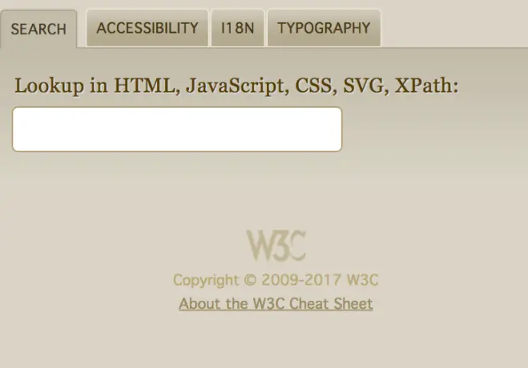
Its main feature is a lookup search box, where one can start typing a keyword and get a list of matching properties/elements/attributes/functions in the above-mentioned specifications, and further details on those when selecting the one of interest.
The W3C cheatsheet is only available as a pure Web application.
The term browser compatibility refers to the ability of a given Web site to appear fully functional on the browsers available in the market.
The most powerful aspect of the Web is what makes it so challenging to build for: its universality. When you create a Web site, you’re writing code that needs to be understood by many different browsers on different devices and operating systems!
To make the Web evolve in a sane and sustainable way for both users and developers, browser vendors work together to standardize new features, whether it’s a new HTML element, CSS property, or JavaScript API. But different vendors have different priorities, resources, and release cycles — so it’s very unlikely that a new feature will land on all the major browsers at once. As a Web developer, this is something you must consider if you’re relying on a feature to build your site.
We are then providing references to the browser support of HTML5 features presented in this course using 2 resources: Can I Use and Mozilla Developer Network (MDN) Web Docs.
Can I Use provides up-to-date tables for support of front-end Web technologies on desktop and mobile Web browsers. Below is a snapshot of what information is given by CanIUse when searching for “CSS3 colors”.
To help developers make these decisions consciously rather than accidentally, MDN Web Docs provides browser compatibility tables in its documentation pages, so that when looking up a feature you’re considering for your project, you know exactly which browsers will support it.
Most of the technologies you use when developing Web applications and Web sites are designed and standardized in W3C in a completely open and transparent process.
In fact, all W3C specifications are developed in public GitHub repositories, so if you are familiar with GitHub, you already know how to contribute to W3C specifications! This is all about raising issues (with feedback and suggestions) and/or bringing pull requests to fix identified issues.
Contributing to this standardization process might be a bit scary or hard to approach at first, but understanding at a deeper level how these technologies are built is a great way to build your expertise.
If you’re looking to an easy way to dive into this standardization processes, check out which issues in the W3C GitHub repositories have been marked as “good first issue” and see if you find anything where you think you would be ready to help.
Shape the future
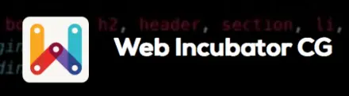
Another approach is to go and bring feedback on ideas for future technologies: the W3C Web Platform Community Incubator Group was built as an easy place to get started to provide feedback on new proposals or bring brand-new proposals for consideration.
Happy Web building!
As steward of global Web standards, W3C’s mission is to safeguard the openness, accessibility, and freedom of the World Wide Web from a technical perspective.
W3C’s primary activity is to develop protocols and guidelines that ensure long-term growth for the Web. The widely adopted Web standards define key parts of what actually makes the World Wide Web work.
In March 1989, while at CERN, Sir Tim Berners-Lee wrote “ Information Management: A Proposal” outlining the World Wide Web. Tim’s memo was about to revolutionize communication around the globe. He then created the first Web browser, server, and Web page. He wrote the first specifications for URLs, HTTP, and HTML.
Tim Berners-Lee at his desk in CERN, 1994
In October 1994, Tim Berners-Lee founded the World Wide Web Consortium (W3C) at the Massachusetts Institute of Technology, Laboratory for Computer Science [MIT/LCS] in collaboration with CERN, where the Web originated (see information on the original CERN Server), with support from DARPA and the European Commission.
In April 1995, Inria became the first European W3C host, followed by Keio University of Japan (Shonan Fujisawa Campus) in Asia in 1996. In 2003, ERCIM took over the role of European W3C Host from Inria. In 2013, W3C announced Beihang University as the fourth Host.
As of August 2020, W3C:
Committed to core values of an open Web that promotes innovation, neutrality, and interoperability, W3C and its community are setting the vision and standards for the Web, ensuring the building blocks of the Web are open, accessible, secure, international and have been developed via the collaboration of global technical experts.
You find below three examples (and checks!) to help you to ensure that your Web page works for people around the world, and to make it work differently for different cultures, where needed. Let’s meet the words ‘charset’ and ‘lang’, soon to become your favorite markup ;)
A character encoding declaration is vital to ensure that the text in your page is recognized by browsers around the world, and not garbled. You will learn more about what this is, and how to use it as you work through the course. For now, just ensure that it’s always there.
Check #1: There is a character encoding declaration near the start of your source code, and its value is UTF-8.
<head> <meta charset="utf-8"/> ... </head>
For a wide variety of reasons, it’s important for a browser to know what language your page is written in, including font selection, text-to-speech conversion, spell-checking, hyphenation and automated line breaking, text transforms, automated translation, and more. You should always indicate the primary language of your page in the <html> tag. Again you will learn how to do this during the course. You will also learn how to change the language, where necessary, for parts of your document that are in a different language.
Check #2: The HTML tag has a lang attribute which correctly indicates the language of your content.
This example below indicates that the page is in French.
<!doctype html> <html lang="fr"> <head> ...
People around the world don’t always understand cultural references that you are familiar with, for example the concept of a ‘home run’ in baseball, or a particular type of food. You should be careful when using examples to illustrate ideas. Also, people in other cultures don’t necessarily identify with pictures that you would recognize, for example, hand gestures can have quite unexpected meanings in other parts of the world, and photos of people in a group may not be representative of populations elsewhere. When creating forms for capturing personal details, you will quickly find that your assumptions about how personal names and addresses work are very different from those of people from other cultures.
Check #3: If your content will be seen by people from diverse cultures, check that your cultural references will be recognized and that there is no inappropriate cultural bias.
Don’t worry!
The following 7 quick tips summarize some important concepts of international Web design. They will become more meaningful as you work through the course, so come back and review this page at the end.
You will find more quick tips on the Internationalization quick tips page. Remember that these tips do not constitute complete guidelines.
When you start creating Web pages, you can also run them through the W3C’s Internationalization Checker. If there are internationalization problems with your page, this checker explains what they are and what to do about it.
In the W3Cx HTML5 Coding Essentials and Best Practices course, we saw that <video> and <audio> elements can have <track> elements. A <track> can have a label, a kind (subtitles, captions, chapters, metadata, etc.), a language (srclang attribute), a source URL (src attribute), etc.
Here is a small example of a video with 3 different tracks (“……” masks the real URL here, as it is too long to fit in this page width!):
<video id="myVideo" preload="metadata" controls crossOrigin="anonymous">
<source src="https://...../elephants-dream-medium.mp4" type="video/mp4">
<source src="https://...../elephants-dream-medium.webm" type="video/webm">
<track label="English subtitles" kind="subtitles" srclang="en"
src="https://...../elephants-dream-subtitles-en.vtt">
<track label="Deutsch subtitles" kind="subtitles" srclang="de"
src="https://...../elephants-dream-subtitles-de.vtt" default>
<track label="English chapters" kind="chapters" srclang="en"
src="https://...../elephants-dream-chapters-en.vtt">
</video>
And here is how it renders in your current browser (please play the video and try to show/hide the subtitles/captions):
Notice that the support for multiple tracks may differ significantly from one browser to another, in particular if you are using old versions.
Here is a quick summary (as of May 2020).
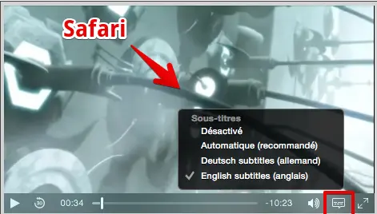
Also, there is a Timed Text Track API in the HTML5/HTML5.1 specification that enables us to manipulate <track> contents from JavaScript. Do you recall that text tracks are associated with WebVTT files? As a quick reminder, let’s look at a WebVTT file:
1 00:00:15.000 --> 00:00:18.000 align:start <v Proog>On the left we can see...</v> 2 00:00:18.167 --> 00:00:20.083 align:middle <v Proog>On the right we can see the...</v> 3 00:00:20.083 --> 00:00:22.000 <v Proog>...the <c.highlight>head-snarlers</c></v> 4 00:00:22.000 --> 00:00:24.417 align:end <v Proog>Everything is safe. Perfectly safe.</v>
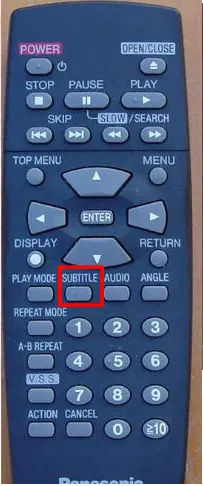
The different time segments are called “cues” and each cue has an id (1, 2, 3 and 4 in the above example), a startTime and an endTime, and a text content that can contain HTML tags for styling (<b>, etc…) or be associated with a “voice” as in the above example. In this case, the text content is wrapped inside <v name_of_speaker>…</v> elements.
It’s now time to look at the JavaScript API for manipulating tracks, cues, and events associated with their life cycle. In the following lessons, we will look at different examples which use this API to implement missing features such as:
Hi! Welcome to Part 2 of the W3C HTML5 course. How about we start by looking at advanced HTML5 multimedia features?
First, we will look at the Web Audio API that helps processing and synthesizing audio in Web applications. You will be able to load sound samples into memory and play them, loop them, process them through a chain of sound effects such as reverberation, delay, graphic equalizer, compressor, distortion, etc. You can also write nice real time visualizations like dancing frequency graphs, animated waveforms that dance with the music, or generate music programmatically.
The Web Audio API is particularly suited for games or for music applications.
A second nice multimedia feature is the Track API.
With it, you will be able to synchronize a video with elements in your document. For example: display a Google Map, an HTML description or a Wikipedia page aside the video, while it’s playing. As always, do not hesitate to practice coding looking at the interactive examples, and then please share your own creations in the discussion forum!
We hope you will enjoy this first week and we wish you the best!
Hi, today I’ve prepared for you a small example of a video that is associated with three different tracks.
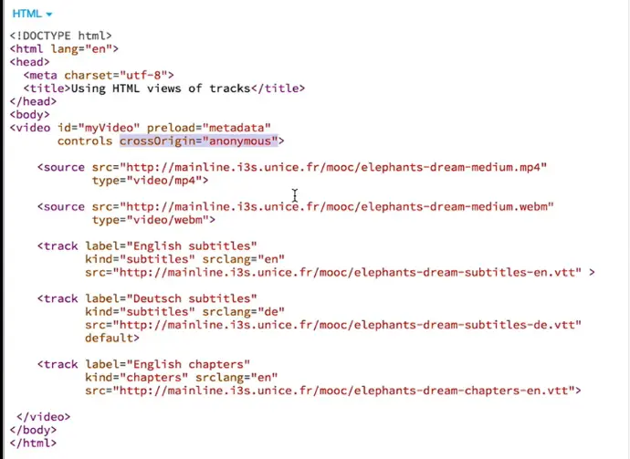
Two for subtitles, in English and in German, and one track for chapters.
First, before going further, let’s look at how this is rendered in different browsers. With Google Chrome, we’ve got a CC button here, that will enable or disable subtitles. What we can see is that by default the subtitles that are displayed are in German (in this example).
And I can just switch them on and off. It loaded the first track that has the default attribute. And I have no menu for choosing what track, what language I want to be displayed here …
If we look at FireFox, it’s even worse!
We don’t have any menu at all, no CC button. I cannot switch on the subtitles, because as of December 2015, FireFox will load only the first track, if it has the default attribute.
This is not the case, so we don’t have any subtitles and we cannot display them.
With Safari, on my Mac, it’s better because I’ve got a subtitle menu and I can choose between the different tracks. I can switch to English subtitles, and english subtitles will be displayed.
I’m on a MacIntosh so I cannot show you… but with other browsers like Internet Explorer or Microsoft Edge, there are situations similar to Safari.
What can we do to increase the features of the default player? We can use what we call the Track API, for asking which tracks are available, activating them, and so on. Now, I would like to remind you the structure of a track. I’m just going to display the content of one of these tracks.
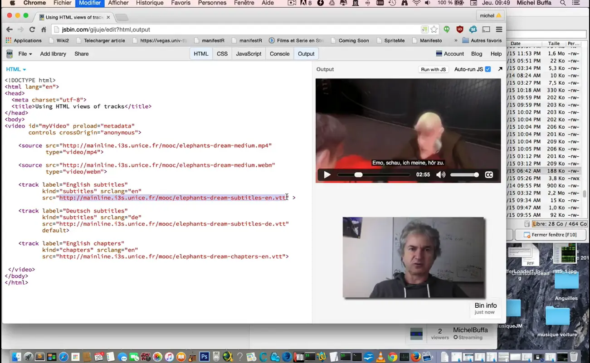
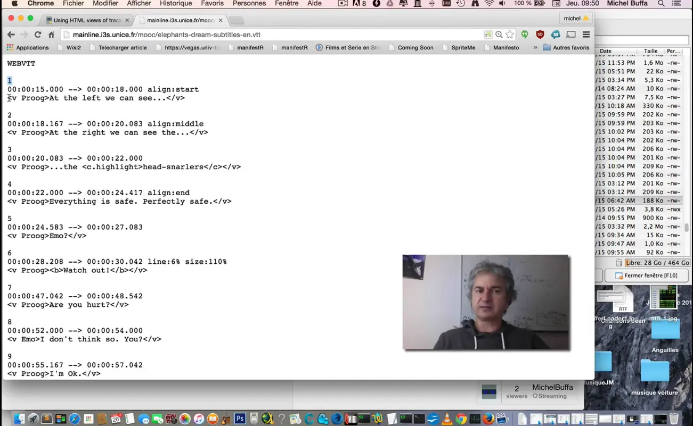
The tracks are made of cues and what we call a cue is a kind of time segment that is defined with a starting time and an ending time. And the cue can have an ID, in that case it is a numeric ID (1, 2, 3), and a content that can be HTML with bold, italic elements and it can also be a voice so when you see “v” followed by the name of the character that is speaking, it’s a voice.
We are going to look at what we can do with such tracks during the course and we will see how to handle a chapter menu, how to display a nice transcript on the side of the video, that you can click to jump at the exact time the video tells the words that are on the transcript. And we will see also how to choose the subtitle or caption track language for the video.
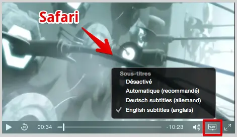
This is finished for this small introduction video, I will just conclude by this thing here: explaining this crossOrigin=“anonymous”. We saw that during the HTML5 Part 1 course and many people asked questions about this. This is because of security constraints.
In browsers, when you’ve got the HTML page that is on a different location than the video file and the tracks files, you will have security constraints errors. And if your server is configured for accepting different origins, then you can add this attribute crossOrigin=“anonymous” in your HTML document and it is going to work.
The server here: mainline.i3s.unice.fr has been configured for allowing external HTML pages to include the videos it hosts and the subtitles it hosts, this is the reason. You can use the DropBox public directory here because Dropbox also enables cross origin requests.
In the W3Cx HTML5 Coding Essentials and Best Practices course, we saw that <video> and <audio> elements can have <track> elements. A <track> can have a label, a kind (subtitles, captions, chapters, metadata, etc.), a language (srclang attribute), a source URL (src attribute), etc. Here is a small example of a video with 3 different tracks (“……” masks the real URL here, as it is too long to fit in this page width!):
<video id="myVideo" preload="metadata" controls crossOrigin="anonymous">
<source src="https://...../elephants-dream-medium.mp4" type="video/mp4">
<source src="https://...../elephants-dream-medium.webm" type="video/webm">
<track label="English subtitles" kind="subtitles" srclang="en"
src="https://...../elephants-dream-subtitles-en.vtt">
<track label="Deutsch subtitles" kind="subtitles" srclang="de"
src="https://...../elephants-dream-subtitles-de.vtt" default>
<track label="English chapters" kind="chapters" srclang="en"
src="https://...../elephants-dream-chapters-en.vtt">
</video>
And here is how it renders in your current browser (please play the video and try to show/hide the subtitles/captions):
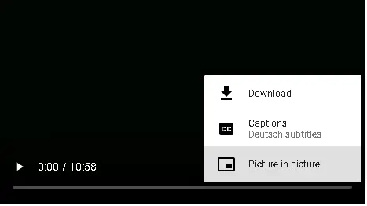
Notice that the support for multiple tracks may differs significantly from one browser to another, in particular if you are using old versions.
You can read this article by Ian Devlin: “HTML5 Video Captions – Current Browser Status”, written in April 2015, for further details.
There is a Timed Text Track API in the HTML5/HTML5.1 specification that enables us to manipulate <track> contents from JavaScript. Do you recall that text tracks are associated with WebVTT files? As a quick reminder, let’s look at a WebVTT file:
WEBVTT 1 00:00:15.000 --> 00:00:18.000 align:start <v Proog>On the left we can see...</v> 2 00:00:18.167 --> 00:00:20.083 align:middle <v Proog>On the right we can see the...</v> 3 00:00:20.083 --> 00:00:22.000 <v Proog>...the <c.highlight>head-snarlers</c></v> 4 00:00:22.000 --> 00:00:24.417 align:end <v Proog>Everything is safe. Perfectly safe.</v>
The different time segments are called “cues” and each cue has an id (1, 2, 3 and 4 in the above example), a startTime and an endTime, and a text content that can contain HTML tags for styling (<b>, etc…) or be associated with a “voice” as in the above example. In this case, the text content is wrapped inside <v name_of_speaker>…</v> elements.
It’s now time to look at the JavaScript API for manipulating tracks, cues, and events associated with their life cycle. In the following lessons, we will look at different examples which use this API to implement missing features such as:
Hi, in this video I will show you how we can work with the track elements from JavaScript, just to know which track has been loaded and which track is active. For that, we will manipulate different properties of the HTML track element from JavaScript.
The first thing I am going to do is to add a small div at the end of the document for displaying the different track statuses. I added a div here called trackStatusesDiv with a heading… I am going to add some CSS to visualize this area. Like that, we will have the description of the track here. I added a border and some margins and so on. From JavaScript, we can not do anything before the page has been loaded, so I am adding a window.onload listener, and all the treatments will be in this function.
The first thing I am going to do is get these track elements here… and I am going to get them in a variable called htmlTracks. How can I get them? I’m going to stop the automatic refresh on JSBin for the moment. So, querySelectorAll is a function that will return a collection with all the tracks, an array with all the tracks, all the HTML elements. I am going to call a function called displayTrackStatuses that I write here. I will first iterate on these tracks and display in the console the different values. We are doing a loop.
I will first display something in the console. I am going to add a current track, it will be easier. I can write currentTrack.label for example, that will display the value of the different attributes. This is just for checking that my code is OK. Open the console, I have got one error… If I click here “Run with JS” I can see that it’s working. What I can display is the label, I can also display the kind… you remember the kind: subtitles, subtitles, chapters for the different track subtitles, subtitles and chapters and I can also display the language with srclang. So English, Deutsch (for German).
I can also display what is called the status. It is readyState, this is a property you can use only from JavaScript. It says that for track number 1, the value is 0, for track number 2 is 2, for track number 3, it’s 0. 2 means that the track is loaded and 0 means that the track is not available. We’ve got the first track, the English subtitles are not available: status readyState 0 and we’ve got the German subtitles that have been loaded because it has the default attribute, and we showed that in Google Chrome the track with the default attribute is loaded when the page is loaded.
This is how we can consult the different statuses of a track from JavaScript. I am going to copy and paste some code for just displaying this in a nicer way here. This is how we can display the different statuses and I can add a button that will call this just to refresh the different statuses.
Let’s add a button, we call it refresh, and when we click on it, we will call displayTrackStatuses. If I click here… just checking there is no error…it will refresh this thing. So now I am going to try this code with Safari; because you remember Safari has a menu for changing the different tracks.
I prepared that already, so here I can start playing the same video that has Deutsch subtitles loaded by default, you can see that here. If I choose English subtitles now, and I refresh track statuses: you can see that the English subtitles are loaded now and the Deutsch subtitles are also available. We are going to use these different attributes for forcing some tracks to load programmatically from JavaScript and this will enable us to make a sort of menu for choosing the different tracks.
<video id="myVideo" preload="metadata" controls crossOrigin="anonymous">
<source src="https://...../elephants-dream-medium.mp4" type="video/mp4">
<source src="https://...../elephants-dream-medium.webm" type="video/webm">
<track label="English subtitles" kind="subtitles" srclang="en"
src="https://...../elephants-dream-subtitles-en.vtt" >
<track label="Deutsch subtitles" kind="subtitles" srclang="de"
src="https://</b>...../elephants-dream-subtitles-de.vtt" default>
<track label="English chapters" kind="chapters" srclang="en"
src="https://</b>...../elephants-dream-chapters-en.vtt">
</video>
<div id="trackStatusesDiv">
<h3>HTML track descriptions</h3>
</div>
This example defines three <track> elements. From JavaScript, we can manipulate these elements as “HTML elements” - we will call them the “HTML views” of tracks.
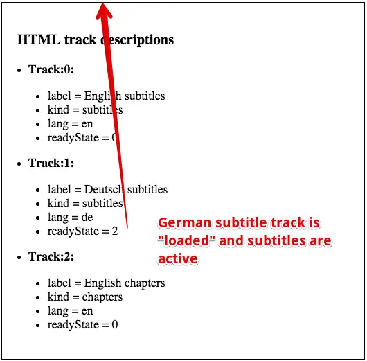
var video, htmlTracks;
var trackStatusesDiv;
window.onload = function() {
// called when the page has been loaded
video = document.querySelector("#myVideo");
trackStatusesDiv = document.querySelector("#trackStatusesDiv");
// Get the tracks as HTML elements
htmlTracks = document.querySelectorAll("track");
// displays their statuses in a div under the video
displayTrackStatuses(htmlTracks);
};
function displayTrackStatuses(htmlTracks) {
// displays track info
for(var i = 0; i < htmlTracks.length; i++) {
var currentHtmlTrack = htmlTracks[i];
var label = "<li>label = " + currentHtmlTrack.label + "</li>";
var kind = "<li>kind = " + currentHtmlTrack.kind + "</li>";
var lang = "<li>lang = " + currentHtmlTrack.srclang + "</li>";
var readyState = "<li>readyState = " + currentHtmlTrack.readyState + "</li>"
trackStatusesDiv.innerHTML += "<li>Track:" + i + ":</b></li>"
+ "<ul>" + label + kind + lang + readyState + "</ul>";
}
}
You can see on the screenshot (or from the JSBin example) that the German subtitle file has been loaded, and that none of the other tracks have been loaded.
Now, it’s time to look at the twin brother of an HTML track: the corresponding TextTrack object!
Hi! Now we are preparing ourselves for reading the content of the different text tracks and display them.
But before that, I must introduce what we call the TextTrack object that is a JavaScript object that is associated to the HTML elements. A track has two different views… maybe it is simpler to say that it has got a HTML view that means you can do a getElementById and manipulate the HTML element, this track element here, from JavaScript. Or we can also work with its twin brother that is a text track, and this new view is the one we are going to use for forcing a track to be loaded, and for reading its content. And for forcing subtitles or caption track to be displayed. We just slightly modify the previous example by displaying the mode
The mode is a property from the TextTrack, not from the HTML track. And this mode can be “disabled”, “showing” or “hidden”. And when it is disabled, reading the video will not fire any event related to the track. We will talk about events later but a disabled track is the same if we have no track at all.
A track that is “showing” is displayed in the video, if the implementation of the video player supports that. And a track that is “hidden” is just not displayed.
How did we manipulate and access this mode property?
The displayTrackStatuses function, that we wrote earlier, displayed the different properties of the HTML track, like the label, the kind or the language. This time, we accessed his twin brother, the TextTrack by using the track property.
Every HTML track element has a track property that is a TextTrack.
Here, from the current HTML track, I am getting the TextTrack (currentTextTrack).
This is the object we use to access the mode and display it here. Another interesting thing is that if we set the mode, if we modify the value of the mode, from “disabled” to “showing” or to “hidden”, it will force the track to be loaded asynchronously in the background by the browser. We added in this example two buttons, “force load track 0” and “force load track 2” because by default, the track 0, the English subtitles, is not loaded. And the chapters, in track number 2, are not loaded either. We are going to force the track 0 to be loaded.
If I click here “force load track 0”, you see that the status changes - the mode changes to “hidden” and the track now is loaded. What happened in the background?
Let’s have a look at the code we wrote. I am going to zoom a little bit…
The button we clicked is this one: “force load track 0” here, called a function named forceLoadTrack(0) that I prepared.
What does this function do?
It will call another function called getTrack that will check if the track is already loaded.
If it is already loaded, then the second parameter here, is a callback function,
It will be called because the track is ready to be read.
In the case the track has not been loaded, we will set the mode to “hidden” and then we will trigger the browser so that it will load asynchronously, in the background, the track.
And when the track is ready, then, and only then, we will call readContent.
Let’s have a look at this getTrack function that we wrote. It says getTrack, please load me the TextTracks corresponding to the HTML track number n.
So here is the function. The first thing we do is that from the HTML track, we get the text track.
Then we check on the HTML track if it is already loaded.
If it is the case, then we will call the function that has been passed as the second parameter: it’s the readContent. And the readContent is just here, for the moment it will not read the content really, but it will just update the status.
If I click on « force load track 2 » for example, it will load the track and when the track is arrived, it will call the displayStatus() that will show the updated status of the track.
In the case the track is not here, the readyState is not equal to 2, then we will force the track to be loaded. By doing this we set the mode to “hidden”.
This may will take some time: you understand that the browser is loading on the Web the track. It may take 2 seconds for example. We need to have a listener that will listen to the load event.
So htmlTrack.addEventListenner(‘load’…) will trigger only when the track has been loaded, and only in that case we will call the callback function: the readContent that has been passed in the second parameter, in order to read the track.
If I look at the console, and if I start again the application. Only the second track has been loaded, I click “force load track 0”, it says “forcing the track to be loaded”, it loads the track and it calls the callback “reading content of loaded track”.
If I click again the same button, it says “the text track is already loaded” and I am going to read it now. We cannot load a track several times, if it is already loaded, we must just use it. In the next video, we will show how we can effectively read the content of the track and do something with it.
The object that contains the cues (subtitles or captions or chapter description from the WebVTT file) is not the HTML track itself. It is another object that is associated with it: a TextTrack object!
The TextTrack JavaScript object has different methods and properties for manipulating track content, and is associated with different events. But before going into detail, let’s see how to obtain a TextTrack object.
Obtaining a TextTrack object that corresponds to an HTML track
First method: get a TextTrack from its associated HTML track.
The HTML track element has a track property which returns the associated TextTrack object.
// HTML tracks
var htmlTracks = document.querySelectorAll("track");
// The TextTrack object associated with the first HTML track
var textTrack = htmlTracks[0].track;
var kind = textTrack.kind;
var label = textTrack.label;
var lang = textTrack.language;
// etc.
Note that once we get a TextTrack object, we can manipulate the kind, label, language attributes (be careful, it’s not srclang, like the equivalent attribute name for HTML tracks). Other attributes and methods are described later in this lesson.
The <video> element (and <audio> element too) has a TextTrack property accessible from JavaScript:
var videoElement = document.querySelector("#myVideo");
var textTracks = videoElement.textTracks; // one TextTrack for each HTML track element
var textTrack = textTracks[0]; // corresponds to the first track element
var kind = textTrack.kind // e.g. "subtitles"
var mode = textTrack.mode // e.g. "disabled", "hidden" or "showing"
The mode property of TextTrack objects TextTrack objects have a mode property, that is set to one of:
TextTrack content can only be accessed if a track has been loaded! Use the mode property to force a track to be loaded!
BE CAREFUL: you cannot access a TextTrack content if the corresponding HTML track has not
been loaded by the browser! It is possible to force a track to be loaded by setting the mode property
of the TextTrack object to “showing” or “hidden”.
Tracks that are not loaded have their mode property of “disabled”.
Here is an example that will test if a track has been loaded, and if it hasn’t, will force it to be loaded by setting its mode to “hidden”. We could have used “showing”; in this case, if the file is a subtitle or a caption file, then the subtitles or captions will be displayed on the video as soon as the track has finished loading.
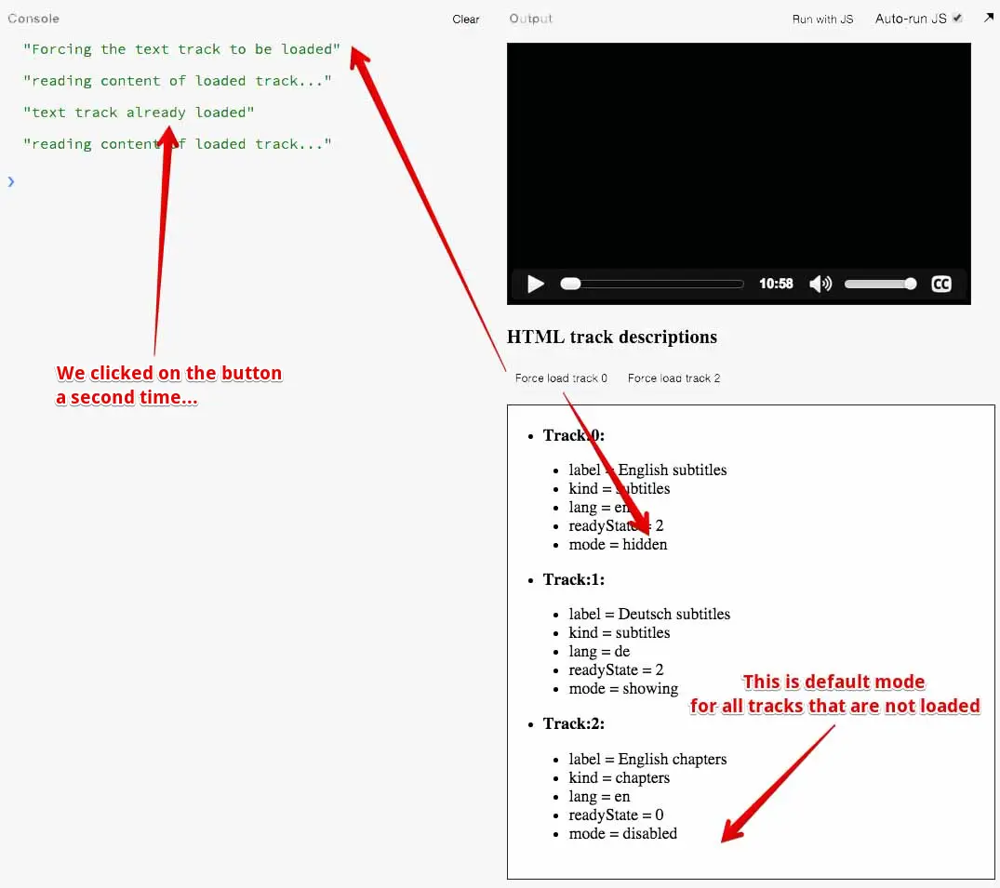
<button id="buttonLoadFirstTrack" onclick="forceLoadTrack(0);" disabled> Force load track 0 </button> <button id="buttonLoadThirdTrack" onclick="forceLoadTrack(2);" disabled> Force load track 2 </button>
The buttons will call a function named forceLoadTrack(trackNumber) that takes as a parameter the number of the track to get (and force load if necessary).
Here are the additions we made to the JavaScript code from the previous example:
function readContent(track) {
console.log("reading content of loaded track...");
displayTrackStatuses(htmlTracks); // update document with new
track statuses
}
function getTrack(htmlTrack, callback) {
// TextTrack associated to the htmlTrack
var textTrack = htmlTrack.track;
if(htmlTrack.readyState === 2) {
console.log("text track already loaded");
// call the callback function, the track is available
callback(textTrack);
} else {
console.log("Forcing the text track to be loaded");
// this will force the track to be loaded
textTrack.mode = "hidden";
// loading a track is asynchronous, we must use an event listener
htmlTrack.addEventListener('load', function(e) {
// the track is arrived, call the callback function
callback(textTrack);
});
}
}
function forceLoadTrack(n) {
// first parameter = track number,
// second = a callback function called when the track is loaded,
// that takes the loaded TextTrack as parameter
getTrack(htmlTracks[n], readContent);
}
Hi! We will continue the last example from the previous video, and this time when we will click on the “force load track 0” or “force load track 2” buttons.
You remember the track number 0 (the English subtitles) was not loaded, readyState=0 here says the track is not loaded. Track 2 also was not loaded: it contains the English chapters of the video. This time, I will explain how we can read the content of the file. If I click on “force load track 0”, I see here the content of the WebVTT file. I didn’t read it as pure text, I used the track API for accessing individually each cue, each one of these elements here is a cue, and I access the id, the start time, the end time and the content, that we call the text content of each cue. If I click on “force load track 2”, I see the chapters definitions here, so chapter 1 of the video goes from 0 to 26 seconds, and it corresponds to the introduction part of the video.
How did we do that? We just completed the readContent function that previously just showed the statuses of the different tracks. Remember that when we clicked on a button, we forced the text track corresponding to the HTML track to be loaded in memory, and then we can read it. A TextTrack object has different properties and the most important one is called cues. The cues is the list of every cue inside the VTT file, and each cue corresponds to a time segment, has an id and a text content.
If you do track.cues, you’ve got the list of the cues and you can iterate on them.
For each cue, we are going to get its id: cue.id here. It corresponds to the id of the cue number i. In my example, I have got an index in the loop, I get the current cue,
I get the id of this cue. I can also get the start time, the end time and the text. So, cue.text corresponds exactly at this sentence highlighted here. This is the only thing I wanted to show you, because the next time we are going to do something really interesting with this content here, we are going to display on the side of the video a clickable transcript. And when we will click on it, the video will jump to the corresponding position. This is exactly what the edX video player does, the one you are watching at right now.
A TextTrack object has different properties and methods;
A TextTrackCueList is a collection of cues, each of which has different properties and methods;
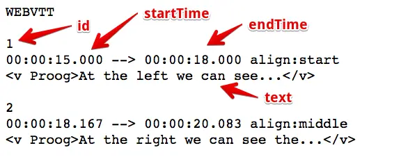
Here is an example at JSBin that displays the content of a track:
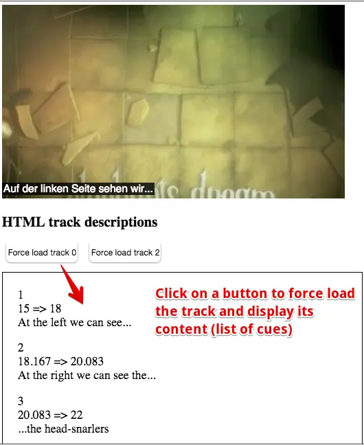
We just changed the content of the readContent(track) method from the example in the previous lesson:
function readContent(track) {
console.log("reading content of loaded track...");
//displayTrackStatuses(htmlTracks);
// instead of displaying the track statuses, we display
// in the same div, the track content//
// first, empty the div
trackStatusesDiv.innerHTML = "";
// get the list of cues for that track
var cues = track.cues;
// iterate on them
for(var i=0; i < cues.length; i++) {
// current cue
var cue = cues[i];
var id = cue.id + "<br>";
var timeSegment = cue.startTime + " => " + cue.endTime + "<br>";
var text = cue.text + "<P>"
trackStatusesDiv.innerHTML += id + timeSegment + text;
}
}
As you can see, the code is simple: you first get the cues for the given TextTrack (it must be loaded; this is the case since we took care of it earlier), then iterate on the list of cues, and use the id, startTime, endTime and text properties of each cue.
This technique will be used in one of the next lessons, and we will show you how to make a clickable transcript on the side of the video - something quite similar to what the edX video player does.
Ok. This time we will talk about track events and cue events.
First, let’s start by a small demonstration. If I play this video, the video is going on and I can listen to events like ‘cuenter’ and ‘cueexit’.
Each time a new cue is entered, we will display it here, and each time it is exited, we will display it here.
We saw that we can display them in sync with the video now. Each time a cue is reached, it means that the current time entered a new time segment defined by the starting and ending time of a cue.
Let’s have a look again at one of the VTT files.
Each cue holds a start time and a end time so when the time enters the 15th second, we’ve got a cueenter event and we can get this content and show it on the HTML page.
When we go out of this time period, when we go further than 18 seconds, we exit this cue and we enter this cue.
How are these events handled in the JavaScript code? Everything is done in the readContent method that we saw earlier.
This time instead of iterating on different cues of the TextTrack, we will just, for each cue individualy, we will iterate on the cues and add a listener on that cue, an exist listener and an enter listener.
So what do we do? We iterate in the cues called addCueListenners for the current cue.
This method, addCueListeners, it will define two listeners: the cue enter listener and the cue exit event listener.
On the cue enter listener we just create a string “entered cue id=” and “text=” that will correspond to the text displayed when a cue is just reached.
We display the id and we display the text.
The same thing is done when we exit.
When we exit, we just display the id “exited cue id=”. This is how we can have individual enter and exit listeners for each cue.
It will enable us to highlight the current cue in a transcript while the video is playing.
The only problem is that as of December 2015, FireFox still does not recognize these sorts of listeners.
The implementation is not done yet, so you can use a fallback. You can use a listener on the track that will listen to the ‘cuechange’ event.
If I just comment the function addCueListeners and I uncomment this piece of code that has a cueChange listener on the track itself, then instead of knowing that we entered of exited and individual cue, we can get, for every new time segment, the list of the cues that are triggered, that should be activated and displayed for this time segment. As the different cues can overlap, the time segments can overlap -it is not often the case but it may occur- what the callback function from this listener gives is a list of active cues. Most of the time you have got only one.
Anyway, you can just work with the list of the cues. Here we just take the first active cue because we are assuming that the cues are not overlapping.
I added a small test here because sometimes we’ve got some strange ghost cues that are active and not defined. I do not exactly what was the problem when I test it but I added this test here to avoid some error messages…
We have got the first active cue and we just display it. We get the id, we get the text and this is all. In that case, if I run the application again, instead of having enter and exit, I will just have cue change events.
It starts at 15 seconds.
I had a small bug here, it is not this.id but cue.id…. we can start again.
This is a fallback for FireFox if you want to display the cues in sync with the video.
The next video will show how to display a transcript here with the current cue highlighted and you can click on them in order to jump to the right place in the video.
After that I think we will have seen the most useful properties, methods, events you can use with tracks and cues…
Instead of reading the whole content of a track at once, like in the previous example, it might be interesting to process the track content cue by cue, while the video is being played.
For example, you choose which track you want - say, German subtitles - and you want to display the subtitles in sync with the video, below the video, with your own style and animations…
Or you display the entire set of subtitles to the side of the video and you want to highlight the current one…
For this, you can listen for different sorts of events.
// track is a loaded TextTrack
track.addEventListener("cuechange", function(e) {
var cue = this.activeCues[0];
console.log("cue change");
// do something with the current cue
});
In the above example, let’s assume that we have no overlapping cues for the current time segment.
The above code listens for cue change events: when the video is being played, the time counter increases. And when this time counter value reaches time segments defined by one or more cues, the callback is called.
The list of cues that are in the current time segments are in this.activeCues; where this represents the track that fired the event.
In the following lessons, we show how to deal with overlapping cues (cases where we have more than one active cue).
// iterate on all cues of the current track
var cues = track.cues;
for(var i=0, len = cues.length; i < len; i++) {
// current cue, also add enter and exit listeners to it
var cue = cues[i];
addCueListeners(cue);
...
}
function addCueListeners(cue) {
cue.onenter = function(){
console.log('enter cue id=' + this.id);
// do something
};
cue.onexit = function(){
console.log('exit cue id=' + cue.id);
// do something else
};
} // end of addCueListeners...
Here is an example at JSBin that shows how to listen for cuechange events:
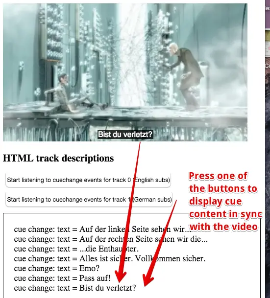
function readContent(track) {
console.log("adding cue change listener to loaded track...");
trackStatusesDiv.innerHTML = "";
// add a cue change listener to the TextTrack
track.addEventListener("cuechange", function(e) {
var cue = this.activeCues[0];
if(cue !== undefined)
trackStatusesDiv.innerHTML += "cue change: text = " + cue.text + "<br>";
});
video.play();
}
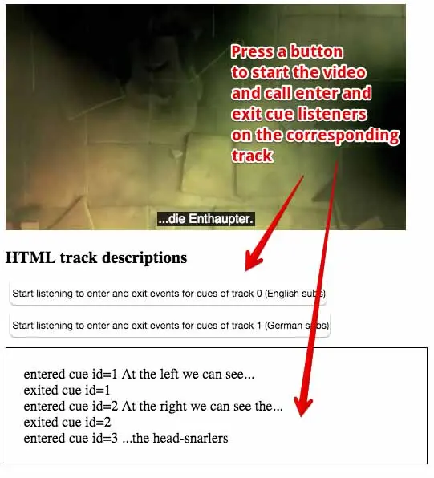
function readContent(track) {
console.log("adding enter and exit listeners to all cues of this > track");
trackStatusesDiv.innerHTML = "";
// get the list of cues for that track
var cues = track.cues;
// iterate on them
for(var i=0; i < cues.length; i++) {
// current cue
var cue = cues[i];
addCueListeners(cue);</b>
}
video.play();
}
function addCueListeners(cue) {
cue.onenter = function() {
trackStatusesDiv.innerHTML += 'entered cue id=' + this.id + " > "
+ this.text + "<br>";
};
cue.onexit = function() {
trackStatusesDiv.innerHTML += 'exited cue > id=' + this.id + "<br>";
};
} // end of addCueListeners...
Hi! This time, we will just go a little bit further than in the previous examples.
When we click on a button, we will force the loading of the track, we will read the content, add cue listeners in order to trigger events when the video is played and we will display them on the side this time, and there are hyperlinks you can click and if I click somewhere, the video starts at the corresponding location and you can see that the cues are highlighted in black as the video advances.
There are not a lot of subtitles at this location but… you can see that the transcript is highlighted as the video is playing.
What have we added to the previous example?
The first thing is that we just defined a rectangular area here: it is just a div with an id=“transcript”, and we added some CSS here, for locating the video and the transcript on the same horizontal position, so that the video can grow and the transcript too.
We use floating positions, I put ‘float:left;’ for the transcript that is on the right because if I put ‘right’ it will grow but it will be aligned on the right … and I prefer it on the left.
We can give a look at the CSS, there is nothing complicated and this can scroll because of the overflow:auto; rule we added to the div.
When we click on the buttons here, we call a function called loadTranscript(), instead of forceLoadTrack(0) and forceLoadTrack(1), this time we just ask for a particular language and, it’s implicit, but we are also looking for track files that are not chapters.
Let’s have a look at this loadTranscript() function here. So the loadTranscript() function has a parameter that is the language.
The first thing we do is that we clear the div, we are just setting the content to null and then we disable all the tracks: we set the mode of the all the tracks ‘disabled’ because when we click here and we can change the language of the transcript, we need to disable all track and enable just the one we are interested in.
How can we locate the right track with the language?
We just iterate on the tracks… this is the text tracks object… and we get the current track as an HTML element and as a TextTrack and using the TextTrack, we just check the language and the kind.
And if the language is equal to the one we are looking for, and if the kind is different than chapters, then this is the track we would like.
By forcing the mode to “showing”, in case the track has not already been loaded, it will trigger (it will ask the browser) to load the file.
This is where we test if the file is already been loaded, it is exactly the same test we did in the previous example.
If the track is already loaded, just display the cues in sync with the video and if the track has not been loaded, display the cues after the track has been loaded.
This is the same function as the getContent we had, except that we renamed it.
This takes the track as an HTML element and the TextTrack as parameters.
Let’s have a look at how it is done.
“displayCuesAfterTrackLoaded” just waits for the load event to be triggered and then it called display the cues function that will display the cues in sync.
Either we call it directly if the track is loaded, or we know that the loading has been triggered if necessary, and we just wait in the load event listener.
Let’s have a look at what displayCues function does.
The displayCues function is exactly the same as the readContent we had earlier.
It gets the cue list for the given track, add listeners to the track.
And instead of just displaying the plain text below the video as we did earlier, we will just make a nice format and we will add the id of the cue in the element we are creating.
Let’s have a look… I’m calling the inspector… let’s have a look at one of the list items here.
You can see that in the list item we use the CSS class called cues, just for the formatting, for putting them in blue and adding an underline when the mouse is over, and we use the id of the cue in the list item.
So the id is 10, and we also created an onclick listener that calls the function we will detail later, that is call jumpTo.
And here is the starting time of the cue.
What we did is that we created a list item with a given id and if we click on it, it has a click listener that will call the jumpTo with the time as the parameter.
This is the trick, this onclick listener that will make the video jump to the right position.
How did we create that? We use classical techniques.
We created a string called clickableTransText that is just an HTML list item with the id, the onclick listener that is built with the start time of the cue and we just add this list item to the div.
This function here, addToTranscriptDiv, just adds in the DOM the HTML fragment.
We can give a look at addToTranscriptDiv.
It just does transcriptDiv.innerHTML += this text.
The jumpTo method that makes the video jump… in order to jump to a particular time in the video we are just setting the currentTime property of the video element and we want it to start playing as soon as the jump is done.
So video = document.querySelector(“#myVideo”) is just the video HTML element.
I recommend to look slowly at the code, it is a bit longer because we added some formatting for the voices and so on, but it is not complicated.
Take your time and look at how it’s done….
Foreword about the set of five examples presented in this section: the code of the examples is larger than usual, but each example integrates blocks of code already presented and detailed in the previous lessons.
It might be interesting to read the content of a track before playing the video.
This is what the edX video player does: it reads a single subtitle file and displays it as a transcript on the right.
In the transcript, you can click on a sentence to make the video jump to the corresponding location.
We will learn how to do this using the track API.
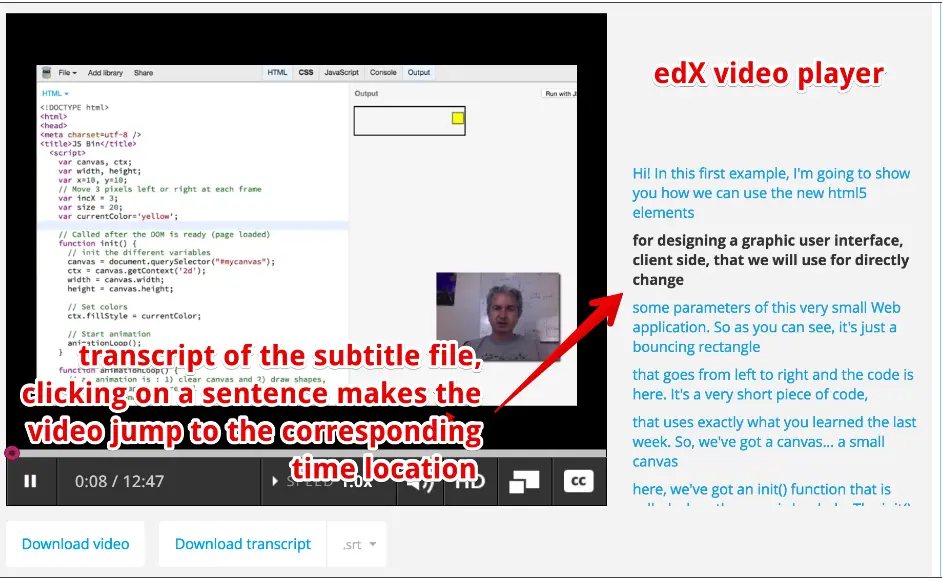
Read the WebVTT file at once using the track API and make a clickable transcript.
Here we decided to code something similar, except that we will offer a choice of track/subtitle language.
Our example offers English or German subtitles, and also another track that contains the chapter descriptions (more on that later).
Using a button to select a language (track), the appropriate transcript is displayed on the right. Like the edX player, we can click on any sentence in order to force the video to jump to the corresponding location.
While the video is playing, the current text is highlighted.
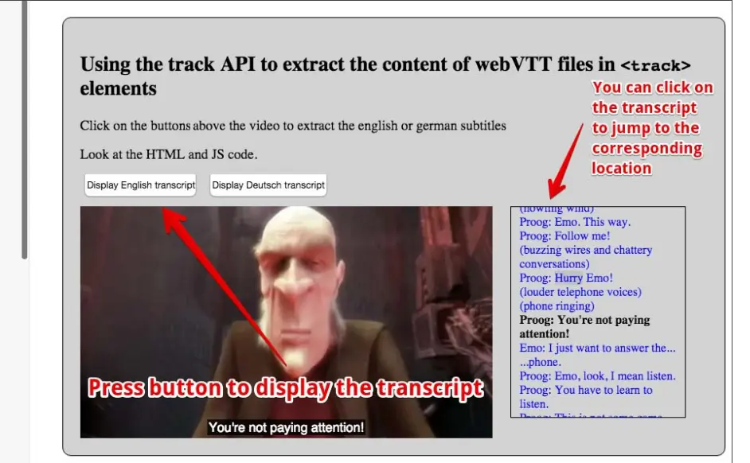
<section id="all">
<button disabled id="buttonEnglish"
onclick="loadTranscript('en');">
Display English transcript
</button>
<button disabled id="buttonDeutsch"
onclick="loadTranscript('de');">
Display Deutsch transcript
</button>
</p>
<video id="myVideo" preload="metadata" controls crossOrigin="anonymous">
<source src="https://...../elephants-dream-medium.mp4"
type="video/mp4">
<source src="https://...../elephants-dream-medium.webm"
type="video/webm">
<track label="English subtitles"
kind="subtitles"
srclang="en"
src="https://...../elephants-dream-subtitles-en.vtt" >
<track label="Deutsch subtitles"
kind="subtitles"
srclang="de"
src="https://...../elephants-dream-subtitles-de.vtt"
default</b>>
<track label="English chapters"
kind="chapters"
srclang="en"
src="https://...../elephants-dream-chapters-en.vtt">
</video>
<div id="transcript"></div>
</section>
#all {
background-color: lightgrey;
border-radius:10px;
padding: 20px;
border:1px solid;
display:inline-block;
margin:30px;
width:90%;
}
.cues {
color:blue;
}
.cues:hover {
text-decoration: underline;
}
.cues.current {
color:black;
font-weight: bold;
}
#myVideo {
display: block;
float : left;
margin-right: 3%;
width: 66%;
background-color: black;
position: relative;
}
#transcript {
padding: 10px;
border:1px solid;
float: left;
max-height: 225px;
overflow: auto;
width: 25%;
margin: 0;
font-size: 14px;
list-style: none;
}
var video, transcriptDiv;
// TextTracks, html tracks, urls of tracks
var tracks, trackElems, tracksURLs = [];
var buttonEnglish, buttonDeutsch;
window.onload = function() {
console.log("init");
// when the page is loaded, get the different DOM nodes
// we're going to work with
video = document.querySelector("#myVideo");
transcriptDiv = document.querySelector("#transcript");
// The tracks as HTML elements
trackElems = document.querySelectorAll("track");
// Get the URLs of the vtt files
for(var i = 0; i < trackElems.length; i++) {
var currentTrackElem = trackElems[i];
tracksURLs[i] = currentTrackElem.src;
}
buttonEnglish = document.querySelector("#buttonEnglish");
buttonDeutsch = document.querySelector("#buttonDeutsch");
// we enable the buttons only in this load callback,
// we cannot click before the video is in the DOM
buttonEnglish.disabled = false;
buttonDeutsch.disabled = false;
// The tracks as TextTrack JS objects
tracks = video.textTracks;
};
function loadTranscript(lang) {
// Called when a button is clicked
// clear current transcript
clearTranscriptDiv();
// set all track modes to disabled. We will only activate the
// one whose content will be displayed as transcript
disableAllTracks();
// Locate the track with language = lang
for(var i = 0; i < tracks.length; i++) {
// current track
var track = tracks[i];
var trackAsHtmlElem = trackElems[i];
// Only subtitles/captions are ok for this example...
if((track.language === lang) && (track.kind !== "chapters")) {
track.mode="showing";
if(trackAsHtmlElem.readyState === 2) {
// the track has already been loaded
displayCues(track);
} else {
displayCuesAfterTrackLoaded(trackAsHtmlElem, track);
}
/<i> Fallback for FireFox that still does not implement cue enter and exit events
track.addEventListener("cuechange", function(e) {
var cue = this.activeCues[0];
console.log("cue change");
var transcriptText = document.getElementById(cue.id);
transcriptText.classList.add("current");
});
</i>/
}
}
}
function displayCuesAfterTrackLoaded(trackElem, track) {
// Create a listener that will only be called once the track has
// been loaded. We cannot display the transcript before
// the track is loaded
trackElem.addEventListener('load', function(e) {
console.log("track loaded");
displayCues(track);
});
}
function disableAllTracks() {
for(var i = 0; i < tracks.length; i++)
// the track mode is important: disabled tracks do not fire events
tracks[i].mode = "disabled";
}
function displayCues(track) {
// displays the transcript of a TextTrack
var cues = track.cues;
// iterate on all cues of the current track
for(var i=0, len = cues.length; i < len; i++) {
// current cue, also add enter and exit listeners to it
var cue = cues[i];
addCueListeners(cue);
// Test if the cue content is a voice <v speaker>....</v>
var voices = getVoices(cue.text);
var transText="";
if (voices.length > 0) {
for (var j = 0; j < voices.length; j++) { // how many voices?
transText += voices[j].voice + ': ' + removeHTML(voices[j].text);
}
} else
transText = cue.text; // not a voice text
var clickableTransText = "<li class='cues' id=" + cue.id
+ " onclick='jumpTo("
+ cue.startTime + ");'" + ">"
+ transText + "</li>";
addToTranscriptDiv(clickableTransText);
}
}
function getVoices(speech) {
// takes a text content and check if there are voices
var voices = []; // inside
var pos = speech.indexOf('<v'); // voices are like <v Michel> ....
while (pos != -1) {
endVoice = speech.indexOf('>');
var voice = speech.substring(pos + 2, endVoice).trim();
var endSpeech = speech.indexOf('</v>');
var text = speech.substring(endVoice + 1, endSpeech);
voices.push({
'voice': voice,
'text': text
});
speech = speech.substring(endSpeech + 4);
pos = speech.indexOf('<v');
}
return voices;
}
function removeHTML(text) {
var div = document.createElement('div');
div.innerHTML = text;
return div.textContent || div.innerText || '';
}
function jumpTo(time) {
// Make the video jump at the time position + force play
// if it was not playing
video.currentTime = time;
video.play();
}
function clearTranscriptDiv() {
transcriptDiv.innerHTML = "";
}
function addToTranscriptDiv(htmlText) {
transcriptDiv.innerHTML += htmlText;
}
function addCueListeners(cue) {
cue.onenter = function(){
// Highlight current cue transcript by adding the
// cue.current CSS class
console.log('enter id=' + this.id);
var transcriptText = document.getElementById(this.id);
transcriptText.classList.add("current");
};
cue.onexit = function(){
console.log('exit id=' + cue.id);
var transcriptText = document.getElementById(this.id);
transcriptText.classList.remove("current");
};
} // end of addCueListeners...
This is an old example written in 2012 at a time when the track API was not supported by browsers. It downloads WebVTT files using Ajax and parses it “by hand”. Notice the complexity of the code, compared to the previous example that uses the track API instead. We give this example as is. Sometimes, bypassing all APIs can be a valuable solution, especially when support for the track API is sporadic, as was the case in 2012…
Here is an example at JSBin that displays the values of the cues in the different tracks:
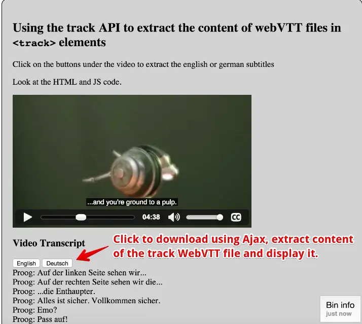
This example, adapted from an example from (now offline) dev.opera.com, uses some JavaScript code that takes a WebVTT subtitle (or caption) file as an argument, parses it, and displays the text on screen, in an element with an id of transcript.
...
<video preload="metadata" controls >
<source src="https://..../elephants-dream-medium.mp4" type="video/mp4">
<source src="https://..../elephants-dream-medium.webm" type="video/webm">
<track label="English subtitles" kind="subtitles" srclang="en"
src="https://..../elephants-dream-subtitles-en.vtt" default>
<track label="Deutsch subtitles" kind="subtitles" srclang="de"
src="https://..../elephants-dream-subtitles-de.vtt">
<track label="English chapters" kind="chapters" srclang="en"
src="https://..../elephants-dream-chapters-en.vtt">
</video>
...
<h3>Video Transcript</h3>
<button onclick="loadTranscript('en');">English</button>
<button onclick="loadTranscript('de');">Deutsch</button>
</div>
<div id="transcript"></div>
...
// Transcript.js, by dev.opera.com
function loadTranscript(lang) {
var url = "https://mainline.i3s.unice.fr/mooc/" +
'elephants-dream-subtitles-' + lang + '.vtt';
// Will download using Ajax + extract subtitles/captions
loadTranscriptFile(url);
}
function loadTranscriptFile(webvttFileUrl) {
// Using Ajax/XHR2 (explained in detail in Module 3)
var reqTrans = new XMLHttpRequest();
reqTrans.open('GET', webvttFileUrl);
// callback, called only once the response is ready
reqTrans.onload = function(e) {
var pattern = /^([0-9]+)$/;
var patternTimecode = /^([0-9]{2}:[0-9]{2}:[0-9]{2}[,.]{1}[0-9]{3}) --> ([0-9]
{2}:[0-9]{2}:[0-9]{2}[,.]{1}[0-9]{3})(.</i>)$/;
var content = this.response; // content of the webVTT file
var lines = content.split(/r?n/); // Get an array of text lines
var transcript = '';
for (i = 0; i < lines.length; i++) {
var identifier = pattern.exec(lines[i]);
// is there an id for this line, if it is, go to next line
if (identifier) {
i++;
var timecode = patternTimecode.exec(lines[i]);
// is the current line a timecode?
if (timecode && i < lines.length) {
// if it is go to next line
i++;
// it can only be a text line now
var text = lines[i];
// is the text multiline?
while (lines[i] !== '' && i < lines.length) {
text = text + 'n' + lines[i];
i++;
}
var transText = '';
var voices = getVoices(text);
// is the extracted text multi voices ?
if (voices.length > 0) {
// how many voices ?
for (var j = 0; j < voices.length; j++) {
transText += voices[j].voice + ': '
+ removeHTML(voices[j].text)
+ '<br />';
}
} else
// not a voice text
transText = removeHTML(text) + '<br />';
transcript += transText;
}
}
var oTrans = document.getElementById('transcript');
oTrans.innerHTML = transcript;
}
};
reqTrans.send(); // send the Ajax request
}
function getVoices(speech) { // takes a text content and check if there are voices
var voices = []; // inside
var pos = speech.indexOf('<v'); // voices are like <v Michel> ....
while (pos != -1) {
endVoice = speech.indexOf('>');
var voice = speech.substring(pos + 2, endVoice).trim();
var endSpeech = speech.indexOf('</v>');
var text = speech.substring(endVoice + 1, endSpeech);
voices.push({
'voice': voice,
'text': text
});
speech = speech.substring(endSpeech + 4);
pos = speech.indexOf('<v');
}
return voices;
}
function removeHTML(text) {
var div = document.createElement('div');
div.innerHTML = text;
return div.textContent || div.innerText || '';
}
Each track has a mode property (and a mode attribute) that can be: “disabled”, “hidden” or “showing”. More than one track at a time can be in any of these states. The difference between “hidden” and “disabled” is that hidden tracks can fire events (more on that at the end of the first example) whereas disabled tracks do not fire events.
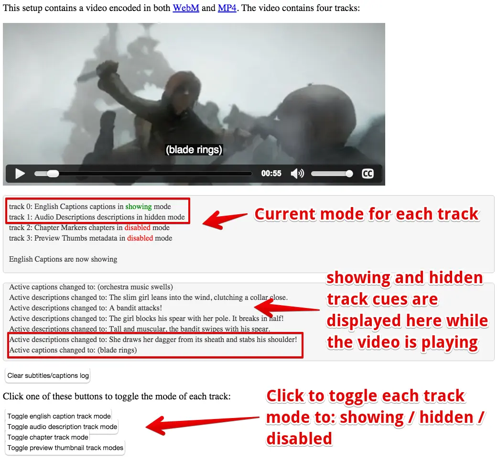
Here is an example at JSBin that shows the use of the mode property, and how to listen for cue events in order to capture the current subtitle/caption from JavaScript. You can change the mode of each track in the video element by clicking on its button. This will toggle the mode of that track. All tracks with mode=“showing” or mode=“hidden” will have the content of their cues displayed in real time in a small area below the video.
In the screen-capture below, we have a WebVTT file displaying a scene’s captions and descriptions.
<html lang="en">
...
<body onload="init();">
...
<p>
<video id="myVideo" preload="metadata"
poster ="https://...../sintel.jpg"
crossorigin="anonymous"
controls="controls"
width="640" height="272">
<source src="https://...../sintel.mp4"
type="video/mp4" />
<source src="https://...../sintel.webm"
type="video/webm" />
<track src="https://...../sintel-captions.vtt"
kind="captions"
label="English Captions"
default</b>/>
<track src="https://...../sintel-descriptions.vtt"
kind="descriptions"
label="Audio Descriptions" />
<track src="https://...../sintel-chapters.vtt"
kind="chapters"
label="Chapter Markers" />
<track src="https://...../sintel-thumbs.vtt"
kind="metadata"
label="Preview Thumbs" />
</video>
</p>
<p>
<div id="currentTrackStatuses"></div>
<p>
<p>
<div id="subtitlesCaptions"></div>
</p>
<p>
<button onclick="clearSubtitlesCaptions();">
Clear subtitles/captions log
</button>
</p>
<p>Click one of these buttons to toggle the mode of each track:</p>
<button onclick="toggleTrack(0);">
Toggle english caption track mode
</button>
<br>
<button onclick="toggleTrack(1);">
Toggle audio description track mode
</button>
<br>
<button onclick="toggleTrack(2);">
Toggle chapter track mode
</button>
<br>
<button onclick="toggleTrack(3);">
Toggle preview thumbnail track modes
</button>
</body>
</html>
var tracks, video, statusDiv, subtitlesCaptionsDiv;
function init() {
video = document.querySelector("#myVideo");
statusDiv = document.querySelector("#currentTrackStatuses");
subtitlesCaptionsDiv = document.querySelector("#subtitlesCaptions");
tracks = document.querySelectorAll("track");
video.addEventListener('loadedmetadata', function() {
console.log("metadata loaded");
// defines cue listeners for active track; we can do this only after
// video metadata has been editted.
for(var i=0; i<tracks.length; i++) {
var t = tracks[i].track;
if(t.mode === "showing") {
t.addEventListener('cuechange', logCue, false);
}
}
// display in a div the list of tracks and their status/mode value
displayTrackStatus();
});
}
function displayTrackStatus() {
// display the status / mode value of each track.
// In red if disabled, in green if showing
for(var i=0; i<tracks.length; i++) {
var t = tracks[i].track;
var mode = t.mode;
if(mode === "disabled") {
mode = "<span style='color:red'>" + t.mode
+ "</span>";
} else if(mode === "showing") {
mode = "<span style='color:green'>" + t.mode
+ "</span>";
}
appendToScrollableDiv(statusDiv, "track " + i + ":" + t.label
+ " " + t.kind+" in "
+ mode + " mode");
}
}
function appendToScrollableDiv(div, text) {
// we've got two scrollable divs. This function
// appends text to the div passed as a parameter
// The div is scrollable (thanks to CSS overflow:auto)
var inner = div.innerHTML;
div.innerHTML = inner + text + "<br/>";
// Make it display the last line appended
div.scrollTop = div.scrollHeight;
}
function clearDiv(div) {
div.innerHTML = '';
}
function clearSubtitlesCaptions() {
clearDiv(subtitlesCaptionsDiv);
}
function toggleTrack(i) {
// toggles the mode of track i, removes the cue listener
// if its mode becomes "disabled"
// adds a cue listener if its mode was "disabled"
// and becomes "hidden"
var t = tracks[i].track;
switch (t.mode) {
case "disabled":
t.addEventListener('cuechange', logCue, false);
t.mode = "hidden";
break;
case "hidden":
t.mode = "showing";
break;
case "showing":
t.removeEventListener('cuechange', logCue, false);
t.mode = "disabled";
break;
}
// updates the status
clearDiv(statusDiv);
displayTrackStatus();
appendToScrollableDiv(statusDiv,"<br>"
+ t.label+" are now " +t.mode);
}
function logCue() {
// callback for the cue event
if(this.activeCues && this.activeCues.length) {
var t = this.activeCues[0].text; // text of current cue
appendToScrollableDiv(subtitlesCaptionsDiv, "Active "
+ this.kind + " changed to: " + t);
}
}
You might have noticed that with some browsers, before 2018, the standard implementation of the video element did not let the user choose the subtitle language. Now, recent browsers offers a menu to choose the track to display.
However, before it was available, it was easy to implement this feature using the Track API.
Here is a simple example at JSBin: we added two buttons below the video to enable/disable subtitles/captions and let you choose which track you prefer.
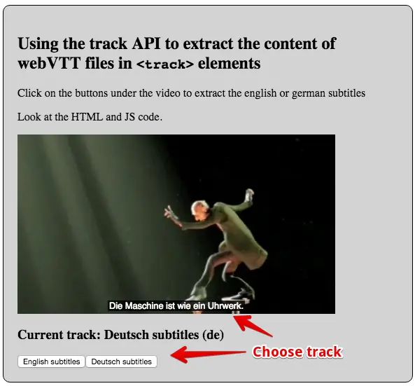
... <body onload="init()"> ... <video id="myVideo" preload="metadata" controls crossOrigin="anonymous" > <source src="https://...../elephants-dream-medium.mp4" type="video/mp4"> <source src="https://...../elephants-dream-medium.webm" type="video/webm"> <track label="English subtitles" kind="subtitles" srclang="en" src="https://...../elephants-dream-subtitles-en.vtt" default</b>> <track label="Deutsch subtitles" kind="subtitles" srclang="de" src="https://...../elephants-dream-subtitles-de.vtt"> <track label="English chapters" kind="chapters" srclang="en" src="https://...../elephants-dream-chapters-en.vtt"> </video> <h3>Current track: <span id="currentLang"></span></h3> <div id="langButtonDiv"></div> </section> ...
var langButtonDiv, currentLangSpan, video;
function init() {
langButtonDiv = document.querySelector("#langButtonDiv");
currentLangSpan = document.querySelector("#currentLang");
video = document.querySelector("#myVideo");
console.log("Number of tracks = "
+ video.textTracks.length);
// Updates the display of the current track activated
currentLangSpan.innerHTML = activeTrack();
// Build the buttons for choosing a track
buildButtons();
}
function activeTrack() {
for (var i = 0; i < video.textTracks.length; i++) {
if(video.textTracks[i].mode === 'showing') {
return video.textTracks[i].label + " ("
+ video.textTracks[i].language + ")";
}
}
return "no subtitles/caption selected";
}
function buildButtons() {
if (video.textTracks) { // if the video contains track elements
// For each track, create a button
for (var i = 0; i < video.textTracks.length; i++) {
// We create buttons only for the caption and subtitle tracks
var track = video.textTracks[i];
if((track.kind !== "subtitles") && (track.kind !== "captions"))
continue;
// create a button for track number i
createButton(video.textTracks[i]);
}
}
}
function createButton(track) {
// Create a button
var b = document.createElement("button");
b.value=track.label;
// use the lang attribute of the button to keep trace of the
// associated track language. Will be useful in the click listener
b.setAttribute("lang", track.language);
b.addEventListener('click', function(e) {
// Check which track is the track with the language we're looking for
// Get the value of the lang attribute of the clicked button
var lang = this.getAttribute('lang');
for (var i = 0; i < video.textTracks.length; i++) {
if (video.textTracks[i].language == lang) {
video.textTracks[i].mode = 'showing';
} else {
video.textTracks[i].mode = 'hidden';
}
}
// Updates the span so that it displays the new active track
currentLangSpan.innerHTML = activeTrack();
});
// Creates a label inside the button
b.appendChild(document.createTextNode(track.label));
// Add the button to a div at the end of the HTML document
langButtonDiv.appendChild(b);
}
Example #4: making a simple chapter navigation menu
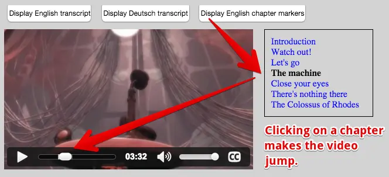
We can use WebVTT files to define chapters. The syntax is exactly the same as for subtitles/caption .vtt files. The only difference is in the declaration of the track. Here is how we declared a chapter track in one of the previous examples (in bold in the example below):
<video id="myVideo" preload="metadata" controls crossOrigin="anonymous">
<source src=<https://...../elephants-dream-medium.mp4>
type="video/mp4">
<source src=<https://...../elephants-dream-medium.webm>
type="video/webm">
<track label="English subtitles"
kind="subtitles"
srclang="en"
src="https://...../elephants-dream-subtitles-en.vtt" >
<track label="Deutsch subtitles"
kind="subtitles"
srclang="de"
src=<https://...../elephants-dream-subtitles-de.vtt>
default>
<track label="English chapters"
kind="chapters"
srclang="en"
src="https://...../elephants-dream-chapters-en.vtt">
</video>
If we try this code in an HTML document, nothing special happens. No magic menu, no extra button!
Currently, no browser takes chapter tracks into account. You could use one of the enhanced video players presented during the HTML5 Part 1 course, but as you will see in this lesson: making your own chapter navigation menu is not complicated.
Let’s start by examining the sample .vtt file:
WEBVTT chapter-1 00:00:00.000 --> 00:00:26.000 Introduction chapter-2 00:00:28.206 --> 00:01:02.000 Watch out! chapter-3 00:01:02.034 --> 00:03:10.000 Let's go chapter-4 00:03:10.014 --> 00:05:40.000 The machine chapter-5 00:05:41.208 --> 00:07:26.000 Close your eyes chapter-6 00:07:27.125 --> 00:08:12.000 There's nothing there chapter-7 00:08:13.000 --> 00:09:07.500 The Colossus of Rhodes
There are 7 cues (one for each chapter). Each cue id is the word “chapter-” followed by the chapter number, then we have the start and end time of the cue/chapter, and the cue content. In this case: the description of the chapter (“Introduction”, “Watch out!”, “Let’s go”, etc…).
Hmm… let’s try to open this chapter track with the example we wrote in a previous lesson - the one that displayed the clickable transcript for subtitles/captions on the right of the video. We need to modify it a little bit:
<button disabled id="buttonEnglishChapters"
onclick="loadTranscript('en',
'chapters');"</b>>
// Display English chapter markers
</button>
Here is a new version:
function loadTranscript(lang, kind) {
...
// Locate the track with lang and kind that match the parameters
for(var i = 0; i < tracks.length; i++) {
...
if((track.language === lang) && (track.kind === kind)) {
// display it contents...
}
}
}
Simple approach: chapters as clickable text on the right of the video.
Try it on JSBin; this version includes the modifications we presented earlier - nothing more. Notice that we kept the existing buttons to display a clickable transcript:
Look at the JavaScript and HTML tab of the JSBin example to see the source code. It’s the same as in the clickable transcript example, except for the small changes we explained earlier.
Chapter navigation, illustrated in the video player below, is fairly popular.
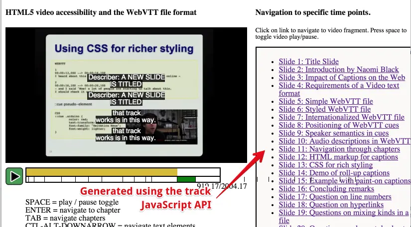
In addition to the clickable chapter list, this one displays an enhanced progress bar created using a canvas. The small squares are drawn corresponding to the chapter cues’ start and end times. You could modify the code provided, in order to add such an enhanced progress indicator.
However, we will see how we can do better by using JSON objects as cue contents. This will be the topic of the next two lessons!
Instead of using text (optionally using HTML for styling, multi lines, etc.), it is also possible to use JSON objects as cue values that can be manipulated from JavaScript. JSON means “JavaScript Object Notation”. It’s an open standard for describing JavaScript objects as plain text.
Here is an example cue from a WebVTT file encoded as JSON instead of plain text. JSON is useful for describing “structured data”, and processing such data from JavaScript is easier than parsing plain text.
WEBVTT
Wikipedia
00:01:15.200 --> 00:02:18.800
{
"title": "State of Wikipedia",
"description": "Jimmy Wales talking ...",
"src": "https://upload.wikimedia.org/...../120px-Wikipedia-logo-
v2.svg.png",
"href": "https://en.wikipedia.org/wiki/Wikipedia"
}
This JSON object is a JavaScript object encoded as a text string. If we listen for cue events or if we read a WebVTT file as done in previous examples, we can extract this text content using the cue.text property. For example:
var videoElement = document.querySelector("#myvideo");
var textTracks = videoElement.textTracks; // one for each track element
var textTrack = textTracks[0]; // corresponds to the first track element
var cues = textTrack.cues;
var cue = cues[0]; // first cue
// cue.text is in JSON format, with JSON.parse we turn it back
// to a real JavaScript object
var obj = JSON.parse(cue.text);
var title = obj.title; // "State of Wikipedia"
var description = obj.description; // Jimmy Wales talking...
etc...
This is a powerful way of embedding metadata, especially when used in conjunction with listening for cue and track events.
Improved approach: make a nicer chapter menu by embedding a richer description of chapter markers
Earlier we saw an example that could display chapter markers as clickable text on the right of a video.
WEBVTT chapter-1 00:00:00.000 --> 00:00:26.000 Introduction chapter-2 00:00:28.206 --> 00:01:02.000 Watch out! ...
We used this example to manually capture the images from the video that correspond to each of the seven chapters:
(For advanced users: it’s possible to semi-automatize this process using the ffmepg command line tool, see for example; this and that).
Here are the images which correspond to the seven chapters of the video from the previous example:
To associate these images with its chapter description, we will use JSON objects as cue contents:
elephants-dream-chapters-en-JSON.vtt:
WEBVTT
chapter-1
00:00:00.000 --> 00:00:26.000
{
"description": "Introduction",
"image": "introduction.jpg"
}
chapter-2
00:00:28.206 --> 00:01:02.000
{
"description": "Watch out!",
"image": "watchOut.jpg"
}
...
Before explaining the code, we propose that you try this example at JSBin that uses this new .vtt file:
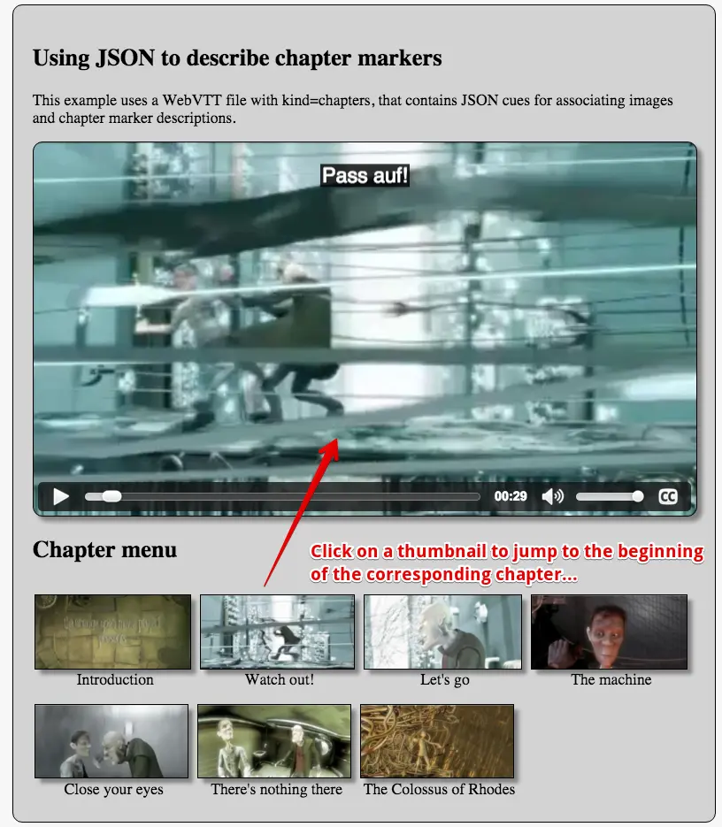
... <video id="myVideo" preload="metadata" controls crossOrigin="anonymous"> <source src="https://...../elephants-dream-medium.mp4" type="video/mp4"> <source src="https://...../elephants-dream-medium.webm" type="video/webm"> <track label="English subtitles" kind="subtitles" srclang="en" src="https://...../elephants-dream-subtitles-en.vtt" > <track label="Deutsch subtitles" kind="subtitles" srclang="de" src="https://...../elephants-dream-subtitles-de.vtt" default> <track label="English chapters" kind="chapters" srclang="en" src="https://...../elephants-dream-chapters-en-JSON.vtt"> </video> <h2>Chapter menu</h2> <div id="chapterMenu"></div> ...
It’s the same code we had in the first example, except that this time we use a new WebVTT file that uses JSON cues to describe each chapter. For the sake of simplicity, we also removed the buttons and all the code for displaying a clickable transcript of the subtitles/captions on the right of the video.
var video, chapterMenuDiv;
var tracks, trackElems, tracksURLs = [];
window.onload = function() {
console.log("init");
// When the page is loaded
video = document.querySelector("#myVideo");
chapterMenuDiv = document.querySelector("#chapterMenu");
// Get the tracks as HTML elements
trackElems = document.querySelectorAll("track");
for(var i = 0; i < trackElems.length; i++) {
var currentTrackElem = trackElems[i];
tracksURLs[i] = currentTrackElem.src;
}
// Get the tracks as JS TextTrack objects
tracks = video.textTracks;
// Build the chapter navigation menu for the given lang and kind</b>
buildChapterMenu('en', 'chapters');</b>
};
function buildChapterMenu(lang, kind) {
// Locate the track with language = lang and kind="chapters"
for(var i = 0; i < tracks.length; i++) {
// current track
var track = tracks[i];
var trackAsHtmlElem = trackElems[i];
if((track.language === lang) && (track.kind === kind)) {
// the track must be active, otherwise it will not load
track.mode="showing"; // "hidden" would work too
if(trackAsHtmlElem.readyState === 2) {
// the track has already been loaded
displayChapterMarkers(track);
} else {
displayChapterMarkersAfterTrackLoaded(trackAsHtmlElem, track);
}
}
}
}
function displayChapterMarkers(track) {
var cues = track.cues;
// We must not see the cues on the video
track.mode = "hidden";
// Iterate on cues
for(var i=0, len = cues.length; i < len; i++) {
var cue = cues[i];
var cueObject = JSON.parse(cue.text);</b>
var description = cueObject.description;</b>
var imageFileName = cueObject.image;</b>
var imageURL = "https://mainline.i3s.unice.fr/mooc/" + imageFileName;
// Build the marker. It's a figure with an img and a figcaption inside.
// The img has an onclick listener that will make the video jump
// to the start time of the current cue/chapter
var figure = document.createElement('figure');
figure.classList.add("img");
figure.innerHTML = "<img onclick='jumpTo("
+ cue.startTime + ");' class='thumb' src='"
+ imageURL + "'><figcaption class='desc'>"
+ description + "</figcaption></figure>";
// Add the figure to the chapterMenuDiv
chapterMenuDiv.insertBefore(figure, null);
}
}
function displayChapterMarkersAfterTrackLoaded(trackElem, track) {
// Create a listener that will only be called when the track has
// been loaded
trackElem.addEventListener('load', function(e) {
console.log("chapter track loaded");
displayChapterMarkers(track);
});
}
function jumpTo(time) {
video.currentTime = time;
video.play();
}
<figure class="img"> > <img onclick="jumpTo(0);" class="thumb" src="https://...../introduction.jpg"> <figcaption class="desc"> Introduction </figcaption> </figure>
Notice that we add a click listener to each thumbnail image. Clicking a chapter thumbnail will cause the video to jump to the chapter time location (the example above is for the first chapter with start time = 0).
We also added CSS classes “img”, “thumb” and “desc”, which make it easy to style and position the thumbnails using CSS.
#chapterMenuSection {
background-color: lightgrey;
border-radius:10px;
padding: 20px;
border:1px solid;
display:inline-block;
margin:0px 30px 30px 30px;
width:90%;
}
figure.img {
margin: 2px;
float: left;
}
figcaption.desc {
text-align: center;
font-weight: normal;
margin: 2px;
}
.thumb {
height: 75px;
border: 1px solid #000;
margin: 10px 5px 0 0;
box-shadow: 5px 5px 5px grey;
transition: all 0.5s;
}
.thumb:hover {
box-shadow: 5px 5px 5px black;
}
A sample menu marker is shown below (it’s also animated - hover your mouse over the thumbnail to see its animated shadow):
This example is the same as the previous one except that we have kept the features that we saw previously: the buttons for displaying a clickable transcript. The code is longer, but it’s just a combination of the “clickable transcript” example from the previous lesson, and the code from earlier in this lesson.
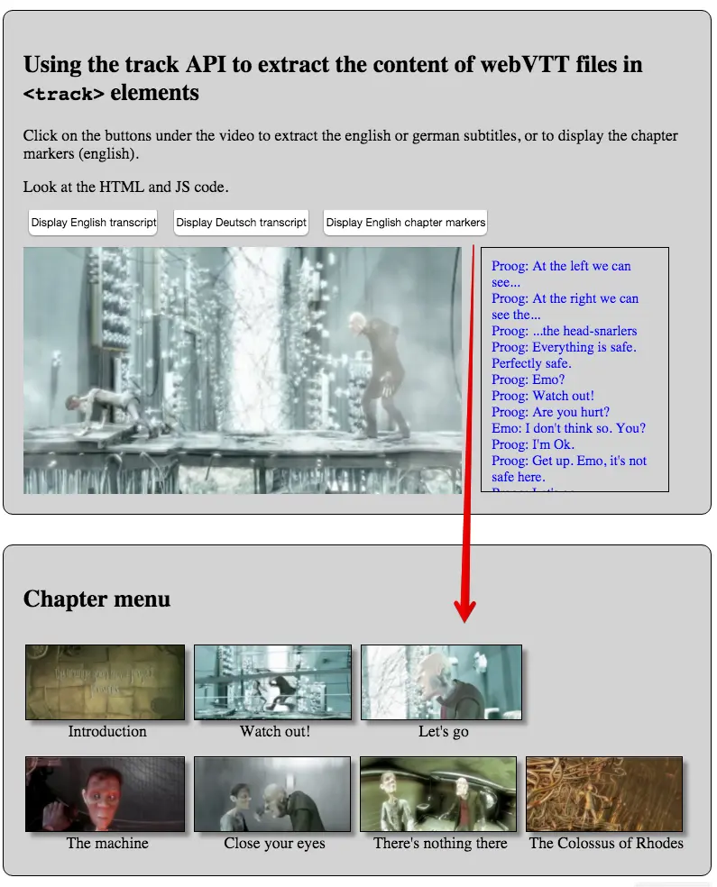
In this lesson, we are going to show:
These methods will allow us to create TextTrack objects and cues on the fly, programatically.
The presented example shows how we can create “sound sprites”: small sounds that are parts of a mp3 file, and that can be played separately. Each sound will be defined as a cue in a track associated with the <audio> element.
Let’s create on the fly a WebVTT file with many cues, in order to cut a big sound file into segments and play them on demand
This JsBin demonstration, adapted from an original demo by Sam Dutton, uses a single mp3 file that contains recorded animal sounds.
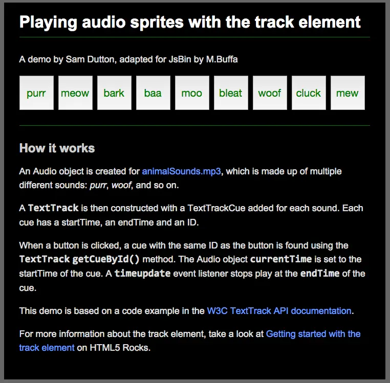
The demo uses a JavaScript array for defining the different animal sounds in this audio file:
var sounds = [
{
id: "purr",
startTime: 0.200,
endTime: 1.800
},
{
id: "meow",
startTime: 2.300,
endTime: 3.300
},
{
id: "bark",
startTime: 3.900,
endTime: 4.300
},
{
id: "baa",
startTime: 5.000,
endTime: 5.800
}
...
];
The idea is to create a track on the fly, then add cues within this track. Each cue will be created with the id, the start and end time taken from the above JavaScript object. In the end, we will have a track with individual cues located at the time location where an animal sound is in the mp3 file.
Then we generate buttons in the HTML document, and when the user clicks on a button, the getCueById method is called, then the start and end time properties of the cue are accessed and the sound is played (using the currentTime property of the audio element).
Polyfill for getCueById: Note that this method is not available on all browsers yet. A simple polyfill is used in the examples presented. If the getCueById method is not implemented (this is the case in some browsers), it’s easy to use this small polyfill:
// for browsers that do not implement the getCueById() method
// let's assume we're adding the getCueById function to a TextTrack object
//named "track"
if (typeof track.getCueById !== "function") {
track.getCueById = function(id) {
var cues = track.cues;
for (var i = 0; i != track.cues.length; ++i) {
if (cues[i].id === id) {
return cues[i];
}
}
};
}
To add a TextTrack to a track element, use the addTextTrack method (of the audio or video element). The function’s signature is addTextTrack(kind[,label[,language]]) where kind is our familiar choice between subtitles, captions, chapters, etc. The optional label is any text you’d like to use describing the track; and the optional language is from our usual list of BCP-47 abbreviations, eg ‘de’, ‘en’, ‘es’, ‘fr’ (etc).
The VTTCue constructor enables us to create our own cue class-instances programmatically. We create a cue instance by using the new keyword. The constructor function expects three familiar arguments, thus: new VTTCue(startTime, endTime, id) - more detail is available from the MDN and the W3C’s two applicable groups.
To add cue-instances to a TextTrack on-the-fly, use the track object’s addCue method, eg track.addCue(cue). The argument is a cue instance - as above. Note that the track must be a TextTrack object because addCue does not work with HTMLTrackElement Objects.
...
<h1>Playing audio sprites with the track element</h1>
<p>A demo by Sam Dutton, adapted for JsBin by M.Buffa</p>
<div id="soundButtons" class="isSupported"></div>
...
window.onload = function() {
// Create an audio element programmatically
var audio = newAudio("https://mainline.i3s.unice.fr/mooc/animalSounds.mp3");
audio.addEventListener("loadedmetadata", function() {
// When the audio file has its metadata loaded, we can add
// a new track to it, with mode = hidden. It will fire events
// even if it is hidden
var track = audio.addTextTrack("metadata", "sprite track", "en");</b>
track.mode = "hidden";</b>
// for browsers that do not implement the getCueById() method
if (typeof track.getCueById !== "function") {
track.getCueById = function(id) {
var cues = track.cues;
for (var i = 0; i != track.cues.length; ++i) {
if (cues[i].id === id) {
return cues[i];
}
}
};
}
var sounds = [
{
id: "purr",
startTime: 0.200,
endTime: 1.800
},
{
id: "meow",
startTime: 2.300,
endTime: 3.300
},
...
];
for (var i = 0; i !== sounds.length; ++i) {
// for each animal sound, create a cue with id, start and end time
var sound = sounds[i];
var cue = new VTTCue(sound.startTime, sound.endTime, sound.id); </b>
cue.id = sound.id;
// add it to the track
track.addCue(cue);
// create a button and add it to the HTML document
document.querySelector("#soundButtons").innerHTML +=
"<button class='playSound' id="
+ sound.id + ">" +sound.id
+ "</button>";
}
var endTime;
audio.addEventListener("timeupdate", function(event) {
// When we play a sound, we set the endtime var.
// We need to listen when the audio file is being played,
// in order to pause it when endTime is reached.
if (event.target.currentTime > endTime)
event.target.pause();
});
function playSound(id) {
// Plays the sound corresponding to the cue with id equal
// to the one passed as a parameter. We set the endTime var
// and position the audio currentTime at the start time
// of the sound
var cue = track.getCueById(id);
audio.currentTime = cue.startTime;
endTime = cue.endTime;
audio.play();
};
// create listeners for all buttons
var buttons = document.querySelectorAll("button.playSound");
for(var i=; i < buttons.length; i++) {
buttons[i].addEventListener("click", function(e) {
playSound(this.id);
});
}
});
};
Mixing JSON cue content with track and cue events, makes the synchronization of elements in the HTML document (while the video is playing) much easier.
Here is a small code extract that shows how we can capture the JSON content of a cue when the video reaches its start time. We do this within a cuechange listener attached to a TextTrack:
textTrack.oncuechange = function (){
// "this" is the textTrack that fired the event.
// Let's get the first active cue for this time segment
var cue = this.activeCues[0];
var obj = JSON.parse(cue.text);
// do something
}
Here is a very impressive demo by Sam Dutton that uses JSON cues containing the latitude and longitude of the camera used for filming the video, to synchronize two map views: every time the active cue changes, the Google map and equivalent Google street view are updated.
WARNING: as this Google service is no longer free of charge, you might see “for development purpose only” messages during the execution of this demo. You’ll need a valid Google API key in order to remove these messages.
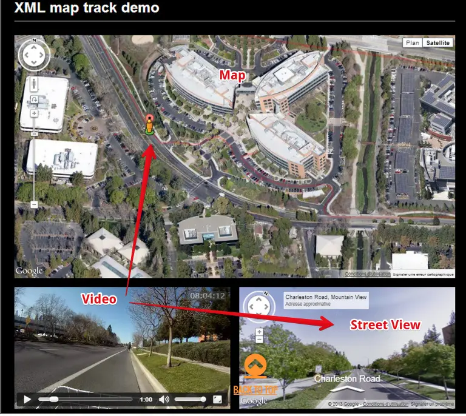
{"lat":37.4219276, "lng":-122.088218, "t":1331363000}
We can acquire a cue DOM object using the techniques we have seen previously, or by using the new HTML5 TextTrack getCueById() method.
var videoElement = document.querySelector("#myvideo");
var textTracks = videoElement.textTracks; // one for each track element
var textTrack = textTracks[0]; // corresponds to the first track element
// Get a cue with ID="wikipedia"
var cue = textTrack.getCueById("Wikipedia");
cue.onenter = function(){
// display something, play a sound, update any DOM element...
};
cue.onexit = function(){
// do something else
};
If the getCueById method is not implemented (this is the case in some browsers), we use the @@polyfill presented in the previous section:
// for browsers that do not implement the getCueById() method
// let's assume we're adding the getCueById function to a TextTrack object
//named "track"
if (typeof track.getCueById !== "function") {
track.getCueById = function(id) {
var cues = track.cues;
for (var i = 0; i != track.cues.length; ++i) {
if (cues[i].id === id) {
return cues[i];
}
}
};
}
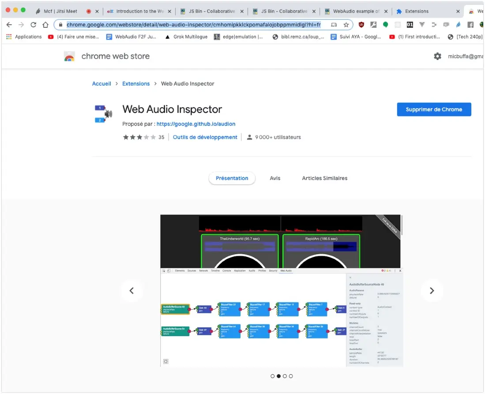
<!DOCTYPE html>
<html lang="en">
<head>
<meta charset="utf-8">
<title>Example syncing element of the document with video metadata in webVTT file</title>
</head>
<body >
<main>
<video id="myVideo" controls crossorigin="anonymous" >
<source src="https://mainline.i3s.unice.fr/mooc/samuraiPizzacat.mp4"
type="video/mp4">
...
</source>
<track label="urls track"
src="https://...../SamuraiPizzaCat-metadata.vtt"
kind="metadata" >
</track>
</video>
<div id="map"></div>
</main>
<aside>
<iframe sandbox="allow-same-origin" id="myIframe" > </iframe>
</aside>
<h3>Wikipedia URL: <span id="currentURL"> Non défini </span></h3>
<script src="https://maps.google.com/maps/api/js?sensor=false"></script>
...
window.onload = function() {
var videoElement = document.querySelector("#myVideo");
var myIFrame = document.querySelector("#myIframe");
var currentURLSpan = document.querySelector("#currentURL");
var textTracks = videoElement.textTracks; // one for each track element
var textTrack = textTracks[0]; // corresponds to the first track element
// change mode so we can use the track
textTrack.mode = "hidden";
// Default position on the google map
var centerpos = new google.maps.LatLng(48.579400,7.7519);
// default options for the google map
var optionsGmaps = {
center:centerpos,
navigationControlOptions: {style:
google.maps.NavigationControlStyle.SMALL},
mapTypeId: google.maps.MapTypeId.ROADMAP,
zoom: 15
};
// Init map object
var map = new google.maps.Map(document.getElementById("map"),
optionsGmaps);
// cue change listener, this is where the synchronization between
// the HTML document and the video is done
textTrack.oncuechange = function (){
// we assume that we have no overlapping cues
var cue = this.activeCues[0];
if(cue === undefined) return;
// get cue content as a JavaScript object
var cueContentJSON = JSON.parse(cue.text);
// do different things depending on the type of sync (wikipedia, gmap)
switch(cueContentJSON.type) {
case'WikipediaPage':
var myURL = cueContentJSON.url;
var myLink = "<a href="" + myURL + "">" + myURL + "</a>";
currentURLSpan.innerHTML = myLink;
myIFrame.src = myURL; // assign url to src property
break;
case 'LongLat':
drawPosition(cueContentJSON.long, cueContentJSON.lat);
break;
}
};
function drawPosition(long, lat) {
// Make new object LatLng for Google Maps
var latlng = new google.maps.LatLng(lat, long);
// Add a marker at position
var marker = new google.maps.Marker({
position: latlng,
map: map,
title:"You are here"
});
// center map on longitude and latitude
map.panTo(latlng);
}
};
All the critical work is done by the cuechange event listener, lines 27-50. We have only the one track, so we set its mode to “hidden” (line 10) in order to be sure that it will be loaded, and that playing the video will fire cuechange events on it. The rest is just Google map code and classic DOM manipulation for updating HTML content (a span that will display the current URL, line 42).
Welcome to the WebAudio API lesson! I personnally love this API, playing with it is a lot of fun as you will discover! I hope you will like it as much as I do!
The audio and video elements are used for playing streamed content, but we do not have a real control on the audio. They come with a powerful API as we saw during the previous course and the previous lessons of this course: we can build a custom user interface, make our own play, stop, pause buttons.
We can control the video from JavaScript, listen to events and manage playlists, etc. However, we have no real control on the audio signal: fancy visualizations are impossible to do. The ones that dance with the music, and sound effects such as reverberation, delay, make an equalizer, control the stereo, put the signal on the left or on the right is impossible. Furthermore, playing multiple sounds in sync is nearly impossible due to the streamed nature of the signal. For video games, we will need to play very fast different sounds, and you cannot wait for the stream to arrive before starting playing it.
Web Audio is the solution to all these needs and with Web Audio you will be able to get the output signal from the audio and video elements, and process it with multiple effects. You will be able to work with samples loaded in memory. This will enable perfect syncing, accurate loops, you will be able to mix sounds, etc. You can also generate music programmatically for creating synthetic sounds or virtual instruments. This part will not be covered by this course even if I give links to interesting libraries and demos that do that.
Let’s have a look at some applications. The first thing I wanted to show you is just want we can do with the standard audio element.
This is the standard audio element [music] that just plays a guitar riff that is coming from a server, but we can get control on the audio stream and do such things like that [music]. As you can see I control the stereo balancing here, and we have a real time waveform and volume meters visualization.
Another thing we can do is that we can load samples in memory.
This is an application I wrote for playing multitracks songs. So we are loading MP3s and decoding them in memory so that we can click anywhere on the song, I can make loops like this [music].
As you can see, we can isolate the tracks, we can mix them in real time.
Another application that works with samples in memory is this small example you will learn how to write it in the course: we loaded two different short sounds [sounds] in memory and we can play them repeatedly [sounds] or we can add effects like changing the pitch, changing the volume with some random values and play them with random intervals [sounds].
We can see that the application to video games is straightforward.
Another thing you can do is use synthetics sounds, we will not cover the techniques, but you can use some libraries. This is a library that works with synthetic sounds, you do not have to load a file for having these sounds [sounds].
This is a library for making 8 bits sounds like the very first computers and video games in the 80’s used to produce. You can also make very complex application, like a vocoder [sounds], or a synthesizer music instrument [sounds]. Ok you have got the idea.
This is all the interesting things you can do, and you can also learn how to debug such applications. I will make a video especially for that, but using FireFox, you can activate, in the setting of the dev tools, the Web Audio debug tab.
I clicked here on Web Audio, and this added a new tab here Web Audio, and if I reload the page, I can see the graph corresponding to the route of the signal.
Here we have got a source -this is called the audio graph- so we’ve got the source, and we’ve got a destination. The source is the original sound. In that case it is a mediaElementAudioSource node that corresponds to the audio element here.
The signal goes to another node that is provided by the Web Audio API and implemented natively in your browser, it is a StereoPanner for separating the sound between left and right.
Then it goes to an analyzer here that will draw the blue waveform and finally to the destination, and the destination is the speakers. I also routed the signal to another part of the graph just for displaying two different analyzers corresponding to the left and right channels. This is for the volume meters here [music].
And if you click on a node, you can see that some node have parameters.
On the stereoPanner, that enables me to balance the sound to the left or to the right, you can see if I change that and click again, I can debug the different properties of each node. You will learn how to build this graph, how to assemble the different nodes, what are the most useful nodes for adding effects, controlling the volume, controlling the stereo, making a equalizer, creating fancy visualizations, and so on.
Welcome to the Web Audio world and during a few lessons, you will learn step by step how to do such an application.
Shortcomings of the standard APIs that we have discussed so far…
In Module 2 of the HTML5 Coding Essentials course, you learned how to add an audio or video player to an HTML document, using the <audio> and <video> elements.
<audio src="https://mainline.i3s.unice.fr/mooc/LaSueur.mp3" controls>
… render like this in your document:
You also learned that it’s possible to write a custom player: to make your own controls and use the JavaScript API of the <audio> and <video> elements; to call play() and pause(); to read/write properties such as currentTime; to listen to events (ended, error, timeupdate, etc.); and to manage a playlist, etc.
The Web Audio API fulfills such missing parts, and much more.
In this course, we do not cover the whole Web Audio API specification. Instead, we focus on the parts of the API that can be useful for writing enhanced multimedia players (that work with streamed audio or video), and on parts that are useful for games (i.e. parts that work with small sound samples loaded in memory). There is the API that specializes in music synthesis and scheduling notes, that we will not study oin this course.
Here’s a screenshot from one example we will study: an audio player with animated waveform and volume meters that ‘dance’ with the music:
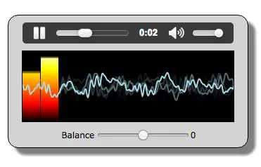
The canvas used a graphic context for drawing shapes and handling properties such as colors and line widths.
The Web Audio API takes a similar approach, using an AudioContext for all its operations.
Using this context, the first thing we do when using this API is to build an “audio routing graph” made of “audio nodes” which are linked together (most of the time in the course, we are going to call it the “audio graph”). Some node types are for “audio sources”, another built-in node is for the speakers, and many other types exist, that correspond to audio effects (delay, reverb, filter, stereo panner, etc.), audio analysis (useful for creating fancy visualizations of the real time signal). Others, which are specialized for music synthesis, are not studied in this course.
The AudioContext also exposes various properties, such as sampleRate, currentTime (in seconds, from the start of AudioContext creation), destination, and the methods for creating each of the various audio nodes.
The easiest way to understand this principle is to look at a first example at JSBin.
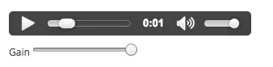
This example is detailed in the next lesson. For the moment, all you need to know is that it routes the signal from an <audio> element using a special node that bridges the “streamed audio” world to the Web Audio World, called a MediaElementSourceNode, then this node is connected to a GainNode which enables volume control. This node is then connected to the speakers. We can look at the audio graph of this application using a recent version of FireFox. This browser is the only one (@@as at November 2015) to provide a view of the audio graph, which is very useful for debugging:
For a long time, FireFox had a very good WebAudio debugger built in its devtools, but it has been discontinued in 2019. Meanwhile you can use a Google Chrome extension named “WebAudio Inspector” (or “Audion”). You can install it from the Chrome Web Store].
Once installed, open a Web page that contains some WebAudio code ( this one for example), open the Developer Tools (function key F12, then the gear-wheel), and locate the “Web Audio” (Editor) option. Once enabled, return to Developer Tools and open the Web Audio tab. Then reload the target webpage so that all Web audio activity can be monitored by the tool. You can click on the WebAudio graph nodes to see their properties’ values.
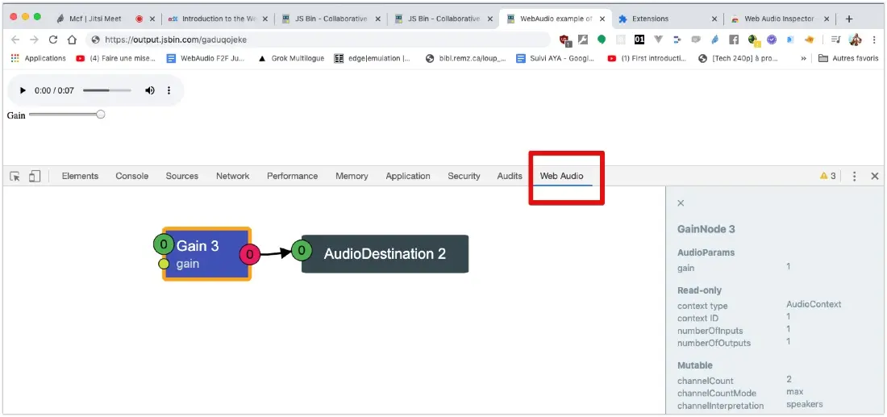
Note that JSBin examples should be opened in standalone mode (not in editor mode).
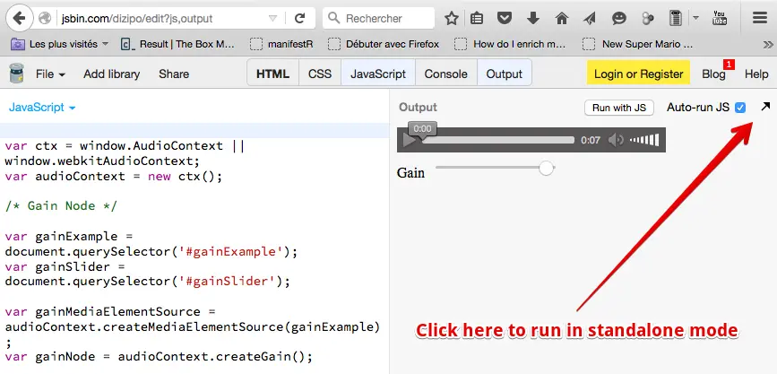
Audio nodes are linked via their inputs and outputs, forming a chain that starts with one or more sources, goes through one or more nodes, then ends up at a destination (although you don’t have to provide a destination if you just want to visualize some audio data, for example).
The AudioDestination node above corresponds to the speakers. In this example, the signal goes from left to right: from the MediaElementSourceNode (we will see in the code that it’s the audio stream from an <audio> element), to a Gain node (and by adjusting the gain property we can set the volume of the sound that outputs from this node), then to the speakers.
Typical code to build an audio routing graph (the one used in the above example)
<audio src="https://mainline.i3s.unice.fr/mooc/drums.mp3" id="gainExample" controls loop crossorigin="anonymous"> </audio> <br> <label for="gainSlider">Gain</label> <input type="range" min="0" max="1" step="0.01" value="1" id="gainSlider" />
// This line is a trick to initialize the AudioContext
// that will work on all recent browsers
var ctx = window.AudioContext || window.webkitAudioContext;
var audioContext;
var gainExemple, gainSlider, gainNode;
window.onload = function() {
// get the AudioContext
audioContext = new ctx();
// the audio element
player = document.querySelector('#gainExample');
player.onplay = () => {
audioContext.resume();
}
gainSlider = document.querySelector('#gainSlider');
buildAudioGraph();
// input listener on the gain slider
gainSlider.oninput = function(evt){
gainNode.gain.value = evt.target.value;
};
};
function buildAudioGraph() {
// create source and gain node
var gainMediaElementSource = audioContext.createMediaElementSource(player);
gainNode = audioContext.createGain();
// connect nodes together
gainMediaElementSource.connect(gainNode);
gainNode.connect(audioContext.destination);
}
Web Audio nodes are implemented natively in the browser. The Web Audio framework has been designed to handle a very large number of nodes. It’s common to encounter applications with several dozens of nodes: some, such as this Vocoder application, use hundreds of nodes (the picture below has been taken while the WebAudio debugger was still included in FireFox, you should get similar results with the Chrome WebAudio Inspector extension).
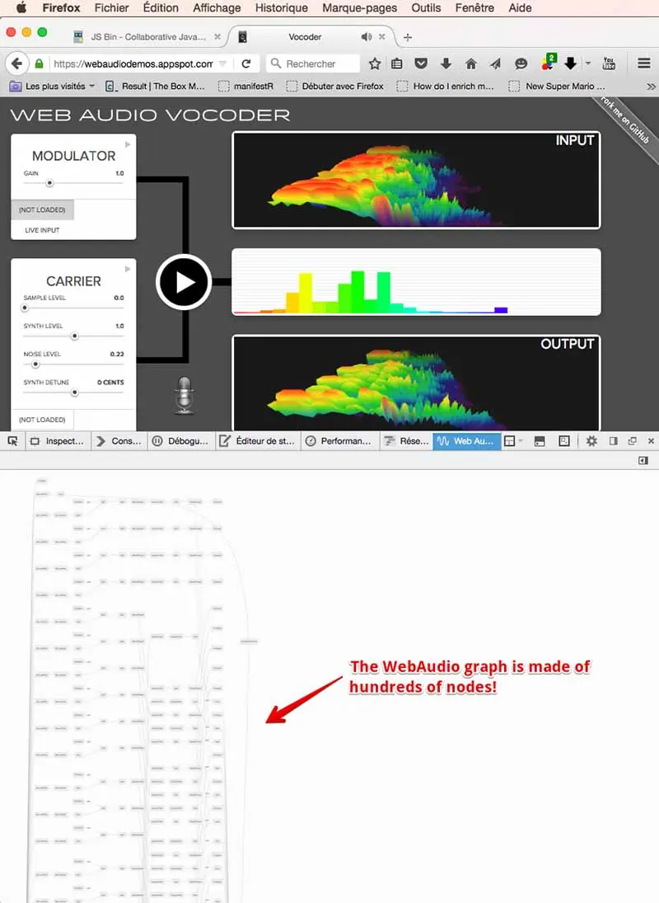
Hello! Using Web Audio with streamed content is really easy. I’m going to show you the most simple example we can do, directly on JSBin.
I first create an audio element, using the standard way.
Here we are, ok, [music] so this is just the standard audio element. I will add the “crossOrigin=anonymous” attribute because when we stream audio content and we control it with Web Audio, we need to follow the “same origin policy” constraint. That means that the HTML page and the JavaScript code that manipulate the content of the stream, should be normally located on the same server as the audio file. This is not the case here because the HTML I’m typing is hosted on jsbin.com. By adding the “crossOrigin=anonymous” attribute, this will send different HTTP headers to the mainline.i3s.unice.fr server.
And this server has been configured for accepting external requests. So this will make the example work.
From JavaScript, if I want to get the audio stream, I must first wait until the page is loaded.
I’m writing a window.onload event listener, and the first thing I do is to get a handle on the audio player. I need to add an id attribute here… Ok, like that!
Like the canvas, that is using a graphic context, here, with Web Audio, we use an audio context.
I created the context. Now, I can create a special source node using context.createMediaElementSource, that takes as a single parameter a video or an audio element. I’m using the player variable here, that corresponds to the audio element.
Now, I connect this source to the destination. A destination is a special node that corresponds to the speakers.
Each node has a connect and a disconnect method. I’m using the connect method here, and I’m using ctx.destination as the destination node.
If I play it [music], the stream is going directly to the speakers. And if I comment this line, the string is disconnected and nothing is outputed. Once you got an handle on the audio stream, using createMediaElementSource, the behavior of the audio element is changed; all the signal, the audio signal, is routed to your own audio graph, not to the default route that goes to the speakers.
And I can visualize this graph. With JsBin, I need to be in standalone mode, like that.
I open the devtools, I check that Web Audio is activated, here, and now I can go to the Web Audio tab, reload the page, and I can see my graph here.
Ok, that was all for this very first lesson. You learnt how to make the simplest audio graph possible, and how to visualize the graph. In the next lesson, we will add in the middle, here, different nodes for processing the sound like having control over the stereo, making filters… like an equalizer, and things like that…
The MediaSourceElement node In the previous lesson, we encountered the MediaElementSource node that is used for routing the sound from a <video> or <audio> element stream. The above video shows how to make a simple example step by step, and how to setup FireFox for debugging Web Audio applications and visualize the audio graph.
<audio id="player" controls crossorigin="anonymous" loop> <source src="https://mainline.i3s.unice.fr/mooc/guitarRiff1.mp3"> Your browser does not support the audio tag. </audio>
var ctx = window.AudioContext || window.webkitAudioContext;
var context = new ctx();
var mediaElement = document.querySelector('#player');
var sourceNode = context.createMediaElementSource(mediaElement);
sourceNode.connect(context.destination); // connect to the speakers
The MediaElementSource node is built using context.createMediaElementSource(elem), where elem is an <audio> or a <video> element.
Then we connect this source Node to other nodes. If we connect it directly to context.destination, the sound goes to the speakers with no additional processing.
In the following lessons, we will see the different nodes that are useful with streamed audio and with the MediaElementSource node. Adding them in the audio graph will enable us to change the sound in many different ways.
All definitions come from the Mozilla Developer Network (MDN) pages giving details about the Web Audio API.
Let’s study the most useful filter nodes: gain, stereo panner, filter, convolver (reverb).
Useful for setting volume… see the Gain node’s documentation.
Definition: “The GainNode interface represents a change in volume. It is an AudioNode audio-processing module that causes a given gain to be applied to the input data before its propagation to the output. A GainNode always has exactly one input and one output, both with the same number of channels.”
Example at JSBin, or try it in your browser:
/* Gain Node */
var gainExample = document.querySelector('#gainExample');
var gainSlider = document.querySelector('#gainSlider');
var gainMediaElementSource = audioContext.createMediaElementSource(gainExample);
var gainNode = audioContext.createGain();
gainMediaElementSource.connect(gainNode);
gainNode.connect(audioContext.destination);
gainSlider.oninput = function(evt){
gainNode.gain.value = evt.target.value;
};
The gain property (line 13 in the above code) corresponds to the multiplication we apply to the input signal volume. A value of 1 will keep the volume unchanged. A value < 1 will lower the volume (0 will mute the signal), and a value > 1 will increase the global volume, with a risk of clipping. With gain values > 1, we usually add a compressor node to the signal chain to prevent clipping. You will see an example of this when we discuss the compressor node.
See the Stereo Panner node’s documentation.
Definition: “The StereoPannerNode interface of the Web Audio API represents a simple stereo panner node that can be used to pan an audio stream left or right. The pan property takes a value between -1 (full left pan) and 1 (full right pan).
Example at JSBin, or try it in your browser:
// the audio element
playerPanner = document.querySelector('#pannerPlayer');
pannerSlider = document.querySelector('#pannerSlider');
// create nodes
var source = audioContext.createMediaElementSource(playerPanner);
pannerNode = audioContext.createStereoPanner();
// connect nodes together
source.connect(pannerNode);
pannerNode.connect(audioContext.destination);
// input listener on the gain slider
pannerSlider.oninput = function(evt) {
pannerNode.pan.value = evt.target.value;
};
Definition: “The BiquadFilterNode interface represents a simple low-order filter, and is created using the AudioContext.createBiquadFilter() method. It is an AudioNode that can represent different kinds of filters, tone control devices, and graphic equalizers. A BiquadFilterNode always has exactly one input and one output.”
Example at JSBin, or try it in your browser, with a lowpass filter, only the frequency slider will have a noticeable effect:
The most useful slider is the frequency slider (that changes the frequency value property of the node). The meaning of the different properties (frequency, detune and Q) differs depending on the type of the filter you use (click on the dropdown menu to see the different types available). Look at this documentation for details on the different filters and how the frequency, detune and Q properties are used with each of these filter types.
Here is a nice graphic application that shows the frequency responses to the various filters, you can choose the type of filters and play with the different property values using sliders:
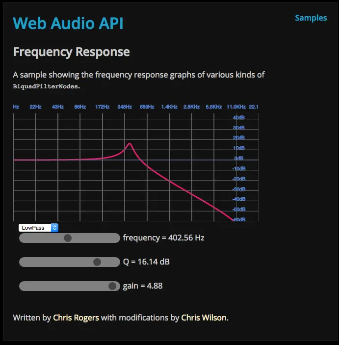
Multiple filters are often used together. We will make a multi band equalizer in a next lesson, and use six filters with type=peaking.
var ctx = window.AudioContext || window.webkitAudioContext;
var audioContext = new ctx();
/* BiquadFilterNode */
var biquadExample = document.querySelector('#biquadExample');
var biquadFilterFrequencySlider =
document.querySelector('#biquadFilterFrequencySlider');
var biquadFilterDetuneSlider =
document.querySelector('#biquadFilterDetuneSlider');
var biquadFilterQSlider =
document.querySelector('#biquadFilterQSlider');
var biquadFilterTypeSelector =
document.querySelector('#biquadFilterTypeSelector');
var biquadExampleMediaElementSource =
audioContext.createMediaElementSource(biquadExample);
var filterNode = audioContext.createBiquadFilter();
biquadExampleMediaElementSource.connect(filterNode);
filterNode.connect(audioContext.destination);
biquadFilterFrequencySlider.oninput = function(evt){
filterNode.frequency.value = parseFloat(evt.target.value);
};
biquadFilterDetuneSlider.oninput = function(evt){
filterNode.detune.value = parseFloat(evt.target.value);
};
biquadFilterQSlider.oninput = function(evt){
filterNode.Q.value = parseFloat(evt.target.value);
};
biquadFilterTypeSelector.onchange = function(evt){
filterNode.type = evt.target.value;
};
Definition: “The ConvolverNode interface is an AudioNode that performs a Linear Convolution on a given AudioBuffer, often used to achieve a reverb effect. A ConvolverNode always has exactly one input and one output.”
Example at JSBin, THIS EXAMPLE DOES NOT WORK IN YOUR BROWSER as the edX platforms disables Ajax loading in its HTML pages. Try it at JSBin!
From Wikipedia: a convolution is a mathematical process which can be applied to an audio signal to achieve many interesting high-quality linear effects. Very often, the effect is used to simulate an acoustic space such as a concert hall, cathedral, or outdoor amphitheater. It can also be used for complex filter effects, like a muffled sound coming from inside a closet, sound underwater, sound coming through a telephone, or playing through a vintage speaker cabinet. This technique is very commonly used in major motion picture and music production and is considered to be extremely versatile and of high quality.
Each unique effect is defined by an impulse response. An impulse response can be represented as an audio file and can be recorded from a real acoustic space such as a cave, or can be synthetically generated through a wide variety of techniques. We can find many high quality impulses on the Web (for example @@TJS OK? here). The impulse used in the example is the one recorded at the opera: La Scala Opera of Milan, in Italy. It’s a .wav file.
Try this demo to see the difference between different impulse files!
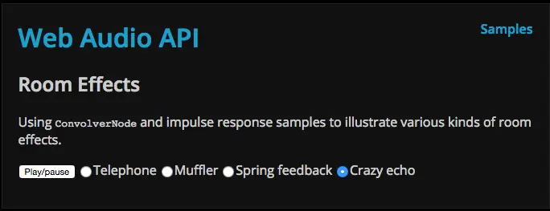
So before building the audio graph, we need to download the impulse. For this, we use an Ajax request (this will be detailed during Module 3), but for the moment, just take this function as it is… The Web Audio API requires that impulse files should be decoded in memory before use. Accordingly, once the requested file has downloaded, we call the decodeAudioData method. Once the impulse is decoded, we can build the graph. So typical use is as follows:
var impulseURL = "https://mainline.i3s.unice.fr/mooc/Scala-Milan-Opera-Hall.wav";
var decodedImpulse;
...
loadImpulse(impulseURL, function() {
// we only get here once the impulse has finished
// loading and is decoded
buildAudioGraphConvolver();
});
...
function loadImpulse(url, callback) {
ajaxRequest = new XMLHttpRequest();
ajaxRequest.open('GET', url, true);
ajaxRequest.responseType = 'arraybuffer'; // for binary transfer
ajaxRequest.onload = function() {
// The impulse has been loaded
var impulseData = ajaxRequest.response;
// let's decode it.
audioContext.decodeAudioData(impulseData, function(buffer) {
// The impulse has been decoded
decodedImpulse = buffer;
// Let's call the callback function, we're done!
callback();
});
};
ajaxRequest.onerror = function(e) {
console.log("Error with loading audio data" + e.err);
};
ajaxRequest.send();
}
Now let’s consider the function which builds the graph. In order to set the quantity of reverb we would like to apply, we need two separate routes for the signal:
The audio graph will look like this (picture taken with the now discontinued FireFox WebAudio debugger, you should get similar results with the Chrome WebAudio Inspector extension):
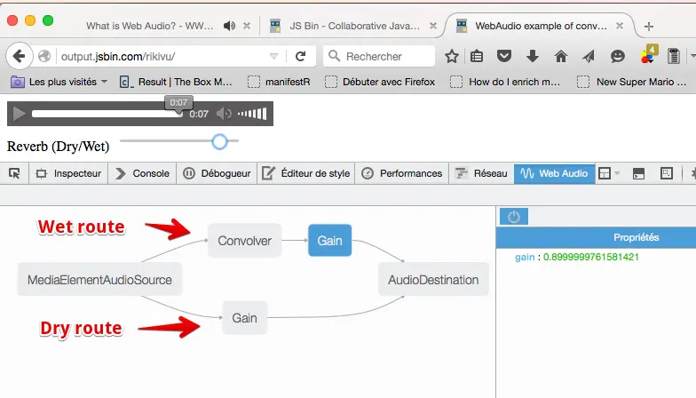
function buildAudioGraphConvolver() {
// create the nodes
var source = audioContext.createMediaElementSource(playerConvolver);
convolverNode = audioContext.createConvolver();
// Set the buffer property of the convolver node with the decoded impulse
convolverNode.buffer = decodedImpulse;
convolverGain = audioContext.createGain();
convolverGain.gain.value = 0;
directGain = audioContext.createGain();
directGain.gain.value = 1;
// direct/dry route source -> directGain -> destination
source.connect(directGain);
directGain.connect(audioContext.destination);
// wet route with convolver: source -> convolver
// -> convolverGain -> destination
source.connect(convolverNode);
convolverNode.connect(convolverGain);
convolverGain.connect(audioContext.destination);
}
Note that at line 6 we use the decoded impulse. We could not have done this before the impulse was loaded and decoded.
Definition: “The DynamicsCompressorNode interface provides a compression effect, which lowers the volume of the loudest parts of the signal in order to help prevent clipping and distortion that can occur when multiple sounds are played and multiplexed together at once. This is often used in musical production and game audio.”
It’s usually a good idea to insert a compressor in your audio graph to give a louder, richer and fuller sound, and to prevent clipping. See the Dynamics Compressor node’s documentation.
Example you can try on JSBin or try it here in your browser:
In this example we set the gain to a very high value that will make a saturated sound. To prevent clipping, it is sufficient to add a compressor right at the end of the graph! Here we use the compressor with all default settings.
NB: This course does not go into detail about the different properties of the compressor node, as they are largely for musicians with the purpose of enabling the user to set subtle effects such as release, attack, etc.
Audio graph with the compressor activated (picture taken with the now discontinued FireFox WebAudio debugger, you should get similar results with the Chrome WebAudio Inspector extension):
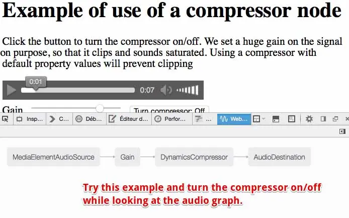
<audio src="https://mainline.i3s.unice.fr/mooc/guitarRiff1.mp3" id="compressorExample" controls loop crossorigin="anonymous"></audio> <br> <label for="gainSlider1">Gain</label> <input type="range" min="0" max="10" step="0.01" value="8" id="gainSlider1" /> <button id="compressorButton">Turn compressor On</button>
// This line is a trick to initialize the AudioContext
// that will work on all recent browsers
var ctx = window.AudioContext || window.webkitAudioContext;
var audioContext;
var compressorExemple, gainSlider1, gainNode1, compressorNode;
var compressorButton;
var compressorOn = false;
window.onload = function() {
// get the AudioContext
audioContext = new ctx();
// the audio element
compressorExemple = document.querySelector('#compressorExample');
gainSlider1 = document.querySelector('#gainSlider1');
// button for turning on/off the compressor
compressorButton = document.querySelector('#compressorButton');
buildAudioGraph();
// input listener on the gain slider
gainSlider1.oninput = function(evt) {
gainNode1.gain.value = evt.target.value;
};
compressorButton.onclick = function(evt) {
if(compressorOn) {
// disconnect the compressor and make a
// direct route from gain to destination
compressorNode.disconnect(audioContext.destination);
gainNode1.disconnect(compressorNode);
gainNode1.connect(audioContext.destination);
compressorButton.innerHTML="Turn compressor: On";
} else {
// compressor was off, we connect the gain to the compressor
// and the compressor to the destination
gainNode1.disconnect(audioContext.destination);
gainNode1.connect(compressorNode);
compressorNode.connect(audioContext.destination);
compressorButton.innerHTML="Turn compressor: Off";
}
compressorOn = !compressorOn;
};
};
function buildAudioGraph() {
// create source and gain node
var gainMediaElementSource =
audioContext.createMediaElementSource(compressorExemple);
gainNode1 = audioContext.createGain();
gainNode1.gain.value = parseFloat(gainSlider1.value);
// do not connect it yet
compressorNode = audioContext.createDynamicsCompressor(); // connect nodes together
gainMediaElementSource.connect(gainNode1);
gainNode1.connect(audioContext.destination);
}
There is nothing special here compared to the other examples in this section, except that we have used a new method disconnect (line 32 and line 38), which is available on all types of nodes (except ctx.destination) to modify the graph on the fly. When the button is clicked, we remove or add a compressor in the audio graph (lines 28-42) and to achieve this, we disconnect and reconnect some of the nodes.
Example at JSBin, here is a screenshot:
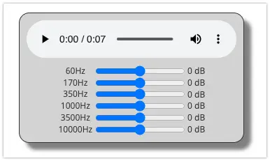
If you read the description of this filter type: “Frequencies inside the range get a boost or an attenuation; frequencies outside it are unchanged.” This is exactly what we need to write a multi band equalizer! We’re going to use several sliders, each of which boosts one range of frequency values.
<h2>Equalizer made with the Web Audio API</h2> <div class="eq"> <audio id="player" controls crossorigin="anonymous" loop> <source src="https://mainline.i3s.unice.fr/mooc/drums.mp3"> Your browser does not support the audio tag. </audio> <div class="controls"> <label>60Hz</label> <input type="range" value="0" step="1" min="-30" max="30" oninput="changeGain(this.value, 0);"> </input> <output id="gain0">0 dB</output> </div> <div class="controls"> <label>170Hz</label> <input type="range" value="0" step="1" min="-30" max="30" oninput="changeGain(this.value, 1);"> </input> <output id="gain1">0 dB</output> </div> <div class="controls"> <label>350Hz</label> <input type="range" value="0" step="1" min="-30" max="30" oninput="changeGain(this.value, 2);"> </input> <output id="gain2">0 dB</output> </div> ... </div>
//Builds an equalizer with multiple biquad filters
var ctx = window.AudioContext || window.webkitAudioContext;
var context = new ctx();
var mediaElement = document.getElementById('player');
var sourceNode = context.createMediaElementSource(mediaElement);
// Creates the equalizer, comprised of a set of biquad filters
var filters = [];
// Set filters
[60, 170, 350, 1000, 3500, 10000].forEach(function(freq, i) {
var eq = context.createBiquadFilter();
eq.frequency.value = freq;
eq.type = "peaking";
eq.gain.value = 0;
filters.push(eq);
});
// Connects filters in sequence
sourceNode.connect(filters[0]);
for(var i = 0; i < filters.length - 1; i++) {
filters[i].connect(filters[i+1]);
}
// Connects the last filter to the speakers
filters[filters.length - 1].connect(context.destination);
// Event listener called by the sliders
function changeGain(sliderVal,nbFilter) {
var value = parseFloat(sliderVal);
filters[nbFilter].gain.value = value;
// Updates output labels
var output = document.querySelector("#gain"+nbFilter);
output.value = value + " dB";
}
Here is the final audio graph (picture taken with the now discontinued FireFox WebAudio debugger, you should get similar results with the Chrome WebAudio Inspector extension):
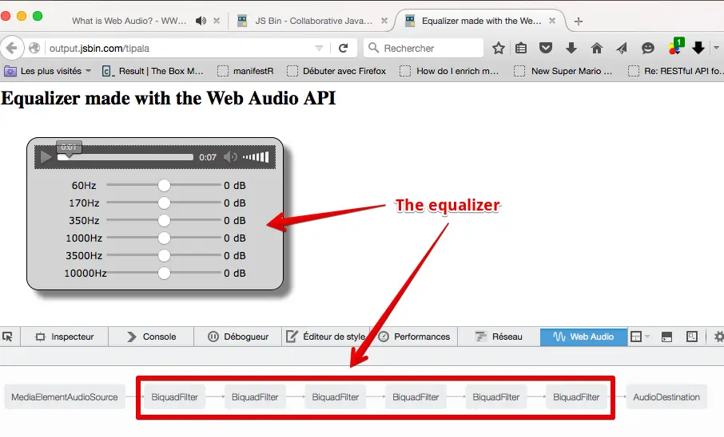
We cloned the previous example and simply changed the <audio>…</audio> part of the HTML code by:
<video id="player" width="320" height="240" controls crossOrigin="anonymous"> <source src="https://mainline.i3s.unice.fr/mooc/elephants-dream-medium.mp4" > </video>
And the example works in the same way, but this time with a video. Try moving the sliders to change the sound!
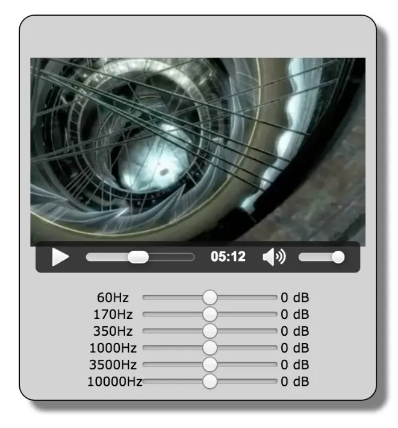
Hi, Today I will show you how to write a waveform that will danse with the music. I prepared a small skeleton that is just composed of an audio element with a mp3 file that will be streamed when I press the play button.
The sound is captured in an audio graph using a media element source like we explained in a previous lesson.
Let’s start from the beginning and look at this example. When the page is loaded, we go to the onload listener, we create an audio context because we are going to work with the Web Audio API, and then we are just using the standard way for using a canvas.
We get the canvas, and we get the canvas context, so we are ready to draw things in the canvas here. Then we build an audio graph and then we start an animation… and for the moment the animation just draws an horizontal line 60 times per seconds. We will look at it later.
Let’s have a look at the audio graph. The audio graph is made of a source node that is the media element source. It corresponds to the audio element.
Then we create an analyser, this is a special node that will provide on demand the time domain and frequency domain analysis data, and this data will be useful for drawing a waveform or for drawing frequencies that will dance with the music, or for drawing volume meters, or for doing beat detection. We will see examples in the next lessons.
When you create an analyser node, you specify the size of the Fast Fourier Transform (FFT), do not worry if you do not know exactly what this technique is. It is just the size that will have an influence on the number of data you will have to draw.
Here for waveform, classical values are 1024 or 2048. They must be powers of 2.
The number of data we will get depends on this size: it is exactly the FFT size divided by 2. In this example I set the FFT size to 1024 so I will get 512 data…
Here is how we can declare a buffer that will get the data. It is called dataArray here and we will use it in the animation loop.
I’ve got a source node that corresponds to the audio stream, an analyser node that will analyse the stream, and then I connect the source to the analyser, and the analyser to the destination, and the destination is the speakers.
Let’s have a look at the animation loop! We clear the canvas, and in the end we call again the animation loop, so that the animation will be done 60 times per seconds… and the way we will draw the waveform is just a set of connected line that we call “a path”.
The “path” is a way of drawing that we presented during the HTML5 Part 1 course.
So here, for drawing an horizontal, flat waveform, we just do a loop on the number of data. Here, we are not using the real data but we will do a loop 512 times and we compute an increment in x, so that depending on the width of the canvas and on the number of data we have got to draw, we will add this increment to the x coordinate.
And the y coordinate here is just faked because we use height/2.
I can add a random element here if you like, and we will see that I can just fake some data to be drawn. So, instead of drawing this, I will use the real values. How can we get the data? In the animation loop, 60 times per seconds, we call the analyser.getByteTimeDomainData and we pass the dataArray of the correct size.
And just after this call, the dataArray will contain the data we want to draw. And what is interesting here, is the value of each data… and we will compute the y coordinate depending on that. I’m just declaring a variable that will get the value. This value is between 0 and 255 because we are working with bytes, and bytes are 8 bits encoded data and the value is between 0 and 255. I will normalize it. So now it’s between 0 and 1. Then, in order to compute the y value, I just have to scale it to the height of the canvas, like this…
And now if I play the sound, I’ve got the waveform that is animated.
These 3 lines are very straightforward, just in order to transform a value between 0 and 255 and scale it to the height of the canvas…
Do try on and study the code in the JSBin example created during the Live Coding Video
WebAudio offers an Analyser node that provides real-time frequency and time-domain analysis information. It leaves the audio stream unchanged from the input to the output, but allows us to acquire data about the sound signal being played. This data is easy for us to process since complex computations such as Fast Fourier Transforms are being executed, behind the scenes.
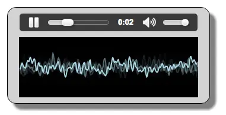
Do things in order!
First, select the audio context and the canvas context, then build the audio graph, and finally run the animation loop.
window.onload = function() {
// get the audio context
audioContext= ...;
// get the canvas, its graphic context...
canvas = document.querySelector("#myCanvas");
width = canvas.width;
height = canvas.height;
canvasContext = canvas.getContext('2d');
// Build the audio graph with an analyser node at the end
buildAudioGraph();
// starts the animation at 60 frames/s
requestAnimationFrame(visualize);
};
If we want to visualize the sound that is coming out of the speakers, we have to put an analyser node at almost the end of the sound graph. Example #1 shows a typical use: an <audio> element, a MediaElementElementSource node connected to an Analyser node, and the analyser node connected to the speakers (audioContext.destination). The visualization is a graphic animation that uses the requestAnimationFrame API presented in teh W3C HTML5 Coding Essentials and Best Practices course (Module 4).
<audio src="https://mainline.i3s.unice.fr/mooc/guitarRiff1.mp3" id="player" controls loop crossorigin="anonymous"> </audio> <canvas id="myCanvas" width=300 height=100></canvas>
function buildAudioGraph() {
var mediaElement = document.getElementById('player');
var sourceNode = audioContext.createMediaElementSource(mediaElement);
// Create an analyser node
analyser = audioContext.createAnalyser();
// set visualizer options, for lower precision change 1024 to 512,
// 256, 128, 64 etc. bufferLength will be equal to fftSize/2
analyser.fftSize = 1024;
bufferLength = analyser.frequencyBinCount;
dataArray = new Uint8Array(bufferLength);
sourceNode.connect(analyser);
analyser.connect(audioContext.destination);
}
With the exception of lines 8-12, where we set the analyser options (explained later), we build the following graph (picture taken with the now discontinued FireFox WebAudio debugger, you should get similar results with the Chrome WebAudio Inspector extension):
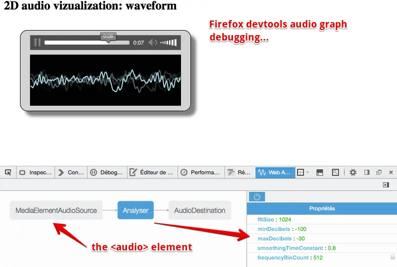
The visualization itself depends on the options which we set for the analyser node. In this case we set the FFT size to 1024 (FFT is a kind of accuracy setting: the bigger the value, the more accurate the analysis will be. 1024 is common for visualizing waveforms, while lower values are preferred for visualizing frequencies). Here is what we set in this example:
When we build the graph, these parameters are set - effectively as constants, to control the analysis during play-back.
Here is the code that is run 60 times per second to draw the waveform:
function visualize() {
// 1 - clear the canvas
// like this: canvasContext.clearRect(0, 0, width, height);
// Or use rgba fill to give a slight blur effect
canvasContext.fillStyle = 'rgba(0, 0, 0, 0.5)';
canvasContext.fillRect(0, 0, width, height);
// 2 - Get the analyser data - for waveforms we need time domain data
analyser.getByteTimeDomainData(dataArray);
// 3 - draws the waveform
canvasContext.lineWidth = 2;
canvasContext.strokeStyle = 'lightBlue';
// the waveform is in one single path, first let's
// clear any previous path that could be in the buffer
canvasContext.beginPath();
var sliceWidth = width / bufferLength;
var x = 0;
for(var i = 0; i < bufferLength; i++) {
// dataArray values are between 0 and 255,
// normalize v, now between 0 and 1
var v = dataArray[i] / 255;
// y will be in [0, canvas height], in pixels
var y = v * height;
if(i === 0) {
canvasContext.moveTo(x, y);
} else {
canvasContext.lineTo(x, y);
}
x += sliceWidth;
}
canvasContext.lineTo(canvas.width, canvas.height/2);
// draw the path at once
canvasContext.stroke();
// once again call the visualize function at 60 frames/s
requestAnimationFrame(visualize)Explanations:
Using a <video> element is very similar to using an <audio> element. We have made no changes to the JavaScript code here; we Just changed “audio” to “video” in the HTML code.
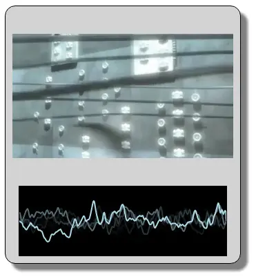
Adding the graphic equalizer to the graph changes nothing, we visualize the sound that goes to the speakers. Try lowering the slider values - you should see the waveform changing.
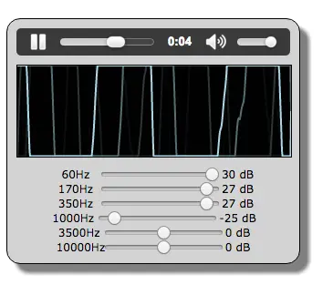
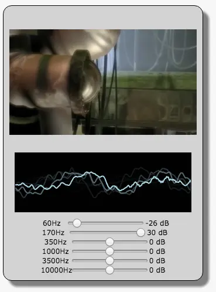
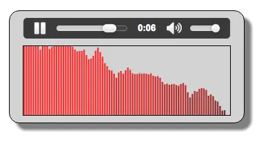
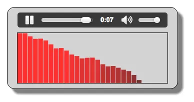
This time, instead of a waveform we want to visualize an animated bar chart. Each bar will correspond to a frequency range and ‘dance’ in concert with the music being played.
You do not have to master the signal processing ‘plumbing’ summarised above - just plot the reported values!
Enough said! Let’s study some extracts from the source code.
This code is very similar to the first example given at the top of this page. We’ve set the FFT size to a lower value, and rewritten the animation loop to plot frequency bars instead of a waveform:
function buildAudioGraph() {
...
// Create an analyser node
analyser = audioContext.createAnalyser();
// Try changing to lower values: 512, 256, 128, 64...
// Lower values are good for frequency visualizations,
// try 128, 64 etc.?
analyser.fftSize = 256;
...
}
This time, when building the audio graph, we have used a smaller FFT size. Values between 64 and 512 are very common here. Try them in the JSBin example! Apart from the lines in bold, this function is exactly the same as in the first example.
function visualize() {
// clear the canvas
canvasContext.clearRect(0, 0, width, height);
// Get the analyser data
analyser.getByteFrequencyData(dataArray);
var barWidth = width / bufferLength;
var barHeight;
var x = 0;
// values go from 0 to 255 and the canvas heigt is 100. Let's rescale
// before drawing. This is the scale factor
heightScale = height/128;
for(var i = 0; i < bufferLength; i++) {
// between 0 and 255
barHeight = dataArray[i];
// The color is red but lighter or darker depending on the value
canvasContext.fillStyle = 'rgb(' + (barHeight+100) + ',50,50)';
// scale from [0, 255] to the canvas height [0, height] pixels
barHeight *= heightScale;
// draw the bar
canvasContext.fillRect(x, height-barHeight/2, barWidth, barHeight/2);
// 1 is the number of pixels between bars - you can change it
x += barWidth + 1;
}
// once again call the visualize function at 60 frames/s
requestAnimationFrame(visualize);
}
Other examples: achieving more impressive frequency visualization
Example at JSBin with a different look for the visualization: please read the source code and try to understand how the drawing of the frequency is done.
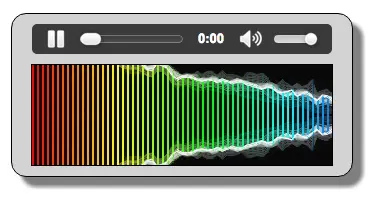
Last example at JSBin with this time the graphic equalizer, a master volume (gain) and a stereo panner node just before the visualizer node:
And here is the audio graph for this example (picture taken with the now discontinued FireFox WebAudio debugger, you should get similar results with the Chrome WebAudio Inspector extension):
function buildAudioGraph() {
var mediaElement = document.getElementById('player');
var sourceNode = audioContext.createMediaElementSource(mediaElement);
// Create an analyser node
analyser = audioContext.createAnalyser();
// Try changing for lower values: 512, 256, 128, 64...
analyser.fftSize = 1024;
bufferLength = analyser.frequencyBinCount;
dataArray = new Uint8Array(bufferLength);
// Create the equalizer, which comprises a set of biquad filters
// Set filters
[60, 170, 350, 1000, 3500, 10000].forEach(function(freq, i) {
var eq = audioContext.createBiquadFilter();
eq.frequency.value = freq;
eq.type = "peaking";
eq.gain.value = 0;
filters.push(eq);
});
// Connect filters in sequence
sourceNode.connect(filters[0]);
for(var i = 0; i < filters.length - 1; i++) {
filters[i].connect(filters[i+1]);
}
// Master volume is a gain node
masterGain = audioContext.createGain();
masterGain.value = 1;
// Connect the last filter to the speakers
filters[filters.length - 1].connect(masterGain);
// for stereo balancing, split the signal
stereoPanner = audioContext.createStereoPanner();
// connect master volume output to the stereo panner
masterGain.connect(stereoPanner);
// Connect the stereo panner to analyser and analyser to destination
stereoPanner.connect(analyser);
analyser.connect(audioContext.destination);
}
Important note: the volume meter implementations below use rough approximations and cannot be taken as the most accurate way to compute an exact volume. See at the end of the page for some extra explanations, as well as links to better (and more complex) implementations.
Example #1: add a single volume meter to the audio player
In order to have a “volume meter” which traces upward/downward with the intensity of the music, we will compute the average intensity of our frequency ranges, and draw this value using a nice gradient-filled rectangle.
function drawVolumeMeter() {
canvasContext.save();
analyser.getByteFrequencyData(dataArray);
var average = getAverageVolume(dataArray);
// set the fill style to a nice gradient
canvasContext.fillStyle=gradient;
// draw the vertical meter
canvasContext.fillRect(0,height-average,25,height);
canvasContext.restore();
}
function getAverageVolume(array) {
var values = 0;
var average;
var length = array.length;
// get all the frequency amplitudes
for (var i = 0; i < length; i++) {
values += array[i];
}
average = values / length;
return average;
}
Note that we are measuring intensity (line 4) and once the frequency analysis data is copied into the dataarray, we call the getAverageVolume function (line 5) to compute the average value which we will draw as the volume meter.
// create a vertical gradient of the height of the canvas gradient = canvasContext.createLinearGradient(0,0,0, height); gradient.addColorStop(1,'#000000'); gradient.addColorStop(0.75,'#ff0000'); gradient.addColorStop(0.25,'#ffff00'); gradient.addColorStop(0,'#ffffff');
And here is what the new animation loop looks like (for the sake of clarity, we have moved the code that draws the signal waveform to a separate function):
function visualize() {
clearCanvas();
drawVolumeMeter();
drawWaveform();
// call again the visualize function at 60 frames/s
requestAnimationFrame(visualize);
}
Notice that we used the best practices seen in week 3 of the HTML5 part 1 course: we saved and restored the context in all functions that change something in the canvas context (see function drawVolumeMeter and drawWaveForm in the source code).
Example #2: draw two volume meters, one for each stereo channel
This time, let’s split the audio signal and create a separate analyser for each output channel. We retain the analyser node that is being used to draw the waveform, as this works on the stereo signal (and is connected to the destination in order to hear full audio).
We added a stereoPanner node right after the source and a left/right balance slider to control its pan property. Use this slider to see how the left and right volume meter react.
In order to isolate the left and the right channel (for creating individual volume meters), we used a new node called a Channel Splitter node. From this node, we created two routes, each going to a separate analyser (lines 46 and 47 of the example below)
This is the audio graph we’ve built (picture taken with the now discontinued FireFox WebAudio debugger, you should get similar results with the Chrome WebAudio Inspector extension):
As you can see there are two routes: the one on top sends the output signal to the speakers and uses an analyser node to animate the waveform, meanwhile the one at the bottom splits the signal and send its left and right parts to separate analyser nodes which draw the two volume meters. Just before the split, we added a stereoPanner to enable adjustment of the left/right balance with a slider.
function buildAudioGraph() {
var mediaElement = document.getElementById('player');
var sourceNode = audioContext.createMediaElementSource(mediaElement);
// connect the source node to a stereo panner
stereoPanner = audioContext.createStereoPanner();
sourceNode.connect(stereoPanner);
// Create an analyser node for the waveform
analyser = audioContext.createAnalyser();
// Use FFT value adapted to waveform drawing
analyser.fftSize = 1024;
bufferLength = analyser.frequencyBinCount;
dataArray = new Uint8Array(bufferLength);
// Connect the stereo panner to the analyser
stereoPanner.connect(analyser);
// and the analyser to the destination
analyser.connect(audioContext.destination);
// End of route 1. We start another route from the
// stereoPanner node, with two analysers for the meters
// Two analysers for the stereo volume meters
// Here we use a small FFT value as we're gonna work with
// frequency analysis data
analyserLeft = audioContext.createAnalyser();
analyserLeft.fftSize = 256;
bufferLengthLeft = analyserLeft.frequencyBinCount;
dataArrayLeft = new Uint8Array(bufferLengthLeft);
analyserRight = audioContext.createAnalyser();
analyserRight.fftSize = 256;
bufferLengthRight = analyserRight.frequencyBinCount;
dataArrayRight = new Uint8Array(bufferLengthRight);
// Split the signal
splitter = audioContext.createChannelSplitter();
// Connect the stereo panner to the splitter node
stereoPanner.connect(splitter);
// Connect each of the outputs from the splitter to
// the analysers
splitter.connect(analyserLeft,0,0);
splitter.connect(analyserRight,1,0);
// No need to connect these analysers to something, the sound
// is already connected through the route that goes through
// the analyser used for the waveform
}
function drawVolumeMeters() {
canvasContext.save();
// set the fill style to a nice gradient
canvasContext.fillStyle=gradient;
// left channel
analyserLeft.getByteFrequencyData(dataArrayLeft);
var averageLeft = getAverageVolume(dataArrayLeft);
// draw the vertical meter for left channel
canvasContext.fillRect(0,height-averageLeft,25,height);
// right channel
analyserRight.getByteFrequencyData(dataArrayRight);
var averageRight = getAverageVolume(dataArrayRight);
// draw the vertical meter for left channel
canvasContext.fillRect(26,height-averageRight,25,height);
canvasContext.restore();
}
The code is very similar to the previous one. We draw two rectangles side-by-side, corresponding to the two analyser nodes - instead of the single display in the previous example.
Indeed, the proposed examples are ok for making things “dancing in music” but rather inaccurate if you are looking for a real volume meter. Results may also change if you modify the size of the fft in the analyser node properties. There are accurate implementations of volume meters in WebAudio (see this volume meter example) but they use nodes that were out of the scope for this course. Also, a student from this course named “SoundSpinning” proposed also another approximation that gives more stable results. Read below:
SoundSpinning: “The only half close way I found for the meter
levels is to use getFloatTimeDomainDatadata from the analyser, which
seems to give a normalized array between -1 and 1. Then just plot the
actual wave level values as we loop in the canvas rendering. This is
still not great, since the canvas works at 60Hz while (most of the
times) audio sampling is 44.1kHz, but it is closer. This also keeps the
same levels no matter whatFFTsizeyou apply.”
Here is a codepen with my proposed meters.
For some applications, it may be necessary to load sound samples into memory and uncompress them before they can be used.
No streaming/decoding in real time means less CPU is used,
With all samples loaded in memory, it’s possible to play them in sync with great precision,
It’s possible to make loops, add effects, change the playback rate, etc.
And of course, if they are in memory and uncompressed, there is no wait time for them to start playing: they are ready to be used immediately!
These features are useful in video games: where a library of sounds may need to ready to be played. By changing the playback rate or the effects, many different sounds can be created, even with a limited number of samples (for instance, an explosion played at different speed, with different effects).
Let’s try some demos!
Here is a first example at JSBin: click on the different buttons. Only two minimal sound samples are used in this example: shot1.mp3 and shot2.mp3. You can download many free sound samples like these from the freesound.org Web site.
Here is how the WebAudio graph looks like (picture taken with the now discontinued FireFox WebAudio debugger, you should get similar results with the Chrome WebAudio Inspector extension):
Music applications such as Digital Audio Workstations (GarageBand-like apps) will need to play/record/loop music tracks in memory.
Try this impressive DAW that uses free sound samples from freesound.org! Each instrument is a small audio file that contains all the notes played on a real instrument. When you play a song (midi file) the app will play-along, selecting the same musical note from the corresponding instrument audio sample. This is all done with Web Audio and samples loaded in memory:
The author of this course wrote a multitrack audio player: it loads different mp3 files corresponding to different instruments and play/loop them in sync.
You can try it or get the sources on GitHub. The documentation is in the help menu.
Try also this small demonstration that uses the Howler.js library for loading sound samples in memory and playing them using WebAudio (we’ll discuss this library later). Click on the main window and notice how fast the sound effects are played. Click as fast as you can!
Try the explosion demo at JSBin:
Use an AudioBufferSourceNode as the source of the sound sample in the Web Audio graph.
There is a special node in Web Audio for handling sound samples, called an AudioBufferSourceNode.
This node has different properties:
Before use, a sound sample must be loaded using Ajax, decoded, and set to the buffer property of an AudioBufferSourceNode.
In this example, as soon as the page is loaded, we send an Ajax request to a remote server in order to get the file shoot2.mp3. When the file is loaded, we decode it. Then we enable the button (before the sample was not available, and thus could not be played). Now you can click on the button to make the noise.
Notice in the code that each time we click on the button, we rebuild the audio graph.
This is because AudioBufferSourceNodes can be used only once!
But don’t worry, Web Audio is optimized for handling thousands of nodes…
<button id="playButton" disabled=true>Play sound</button>
var ctx;
var soundURL =
'https://mainline.i3s.unice.fr/mooc/shoot2.mp3';
var decodedSound;
window.onload = function init() {
// The page has been loaded
// To make it work even on browsers like Safari, that still
// do not recognize the non prefixed version of AudioContext
var audioContext = window.AudioContext || window.webkitAudioContext;
ctx = new audioContext();
loadSoundUsingAjax(soundURL);
// By default the button is disabled, it will be
// clickable only when the sound sample will be loaded
playButton.onclick = function(evt) {
playSound(decodedSound);
};
};
function loadSoundUsingAjax(url) {
var request = new XMLHttpRequest();
request.open('GET', url, true);
// Important: we're loading binary data
request.responseType = 'arraybuffer';
// Decode asynchronously
request.onload = function() {
console.log("Sound loaded");
// Let's decode it. This is also asynchronous
ctx.decodeAudioData(request.response,
function(buffer) { // success
console.log("Sound decoded");
decodedSound = buffer;
// we enable the button
playButton.disabled = false;
},
function(e) { // error
console.log("error");
}
); // end of decodeAudioData callback
}; // end of the onload callback
// Send the request. When the file will be loaded,
// the request.onload callback will be called (above)
request.send();
}
function playSound(buffer) {
// builds the audio graph, then start playing the source
var bufferSource = ctx.createBufferSource();
bufferSource.buffer = buffer;
bufferSource.connect(ctx.destination);
bufferSource.start(); // remember, you can start() a source only once!
}
The asynchronous aspect of Ajax has always been problematic for beginners. For example, if our applications use multiple sound samples and we need to be sure that all of them are loaded and decoded, using the code we presented in the earlier example will not work as is. We cannot call:
loadSoundSample(urlOfSound1); loadSoundSample(urlOfSound2); loadSoundSample(urlOfSound3); etc...
… because we will never know exactly when all the sounds have finished being loaded and decoded. All these calls will run operations in the background yet return instantly.
There are different approaches for dealing with this problem. During the HTML5 Coding Essentials and Best Practices course, we presented utility functions for loading multiple images. Here we use the same approach and have packaged the code into an object called the BufferedLoader.
Example at JSBin that uses the BufferLoader utility:
<button id="shot1Normal" disabled=true>Shot 1</button> <button id="shot2Normal" disabled=true>Shot 2</button>
var listOfSoundSamplesURLs = [
'https://mainline.i3s.unice.fr/mooc/shoot1.mp3',
'https://mainline.i3s.unice.fr/mooc/shoot2.mp3'
];
window.onload = function init() {
// To make it work even on browsers like Safari, that still
// do not recognize the non prefixed version of AudioContext
var audioContext = window.AudioContext || window.webkitAudioContext;
ctx = new audioContext();
loadAllSoundSamples();
};
function playSampleNormal(buffer){
// builds the audio graph and play
var bufferSource = ctx.createBufferSource();
bufferSource.buffer = buffer;
bufferSource.connect(ctx.destination);
bufferSource.start();
}
function onSamplesDecoded(buffers){
console.log("all samples loaded and decoded");
// enables the buttons
shot1Normal.disabled=false;
shot2Normal.disabled=false;
// creates the click listeners on the buttons
shot1Normal.onclick = function(evt) {
playSampleNormal(buffers[0]);
};
shot2Normal.onclick = function(evt) {
playSampleNormal(buffers[1]);
};
}
function loadAllSoundSamples() {
// onSamplesDecoded will be called when all samples
// have been loaded and decoded, and the decoded sample will
// be its only parameter (see function above)
bufferLoader = new BufferLoader(ctx, listOfSoundSamplesURLs,onSamplesDecoded);
// starts loading and decoding the files
bufferLoader.load();
}
After the call to loadAllSoundSamples() (line 13), when all the sound sample files have been loaded and decoded, a callback will be initiated to onSamplesDecoded(decodedSamples), located at line 25. The array of decoded samples is the parameter of the onSamplesDecoded function.
The BufferLoader utility object is created at line 45 and takes as parameters: 1) the audio context, 2) an array listing the URLs of the different audio files to be loaded and decoded, and 3) the callback function which is to be called once all the files have been loaded and decoded. This callback function should accept an array as its parameter: the array of decoded sound files.
To study the source of the BufferLoaded object, look at the JavaScript tab in the example at JSBin.
Playing the two sound samples at various playback rates, repeatedly
This is a variant of the previous example (picture taken with the now discontinued FireFox WebAudio debugger, you should get similar results with the Chrome WebAudio Inspector extension).
In this example, we added a function (borrowed and adapted from this article on HTML5Rocks):
function makeSource(buffer) {
// build graph source -> gain -> compressor -> speakers
// We use a compressor at the end to cut the part of the signal
// that would make peaks
// create the nodes
var source = ctx.createBufferSource();
var compressor = ctx.createDynamicsCompressor();
var gain = ctx.createGain();
// set their properties
// Not all shots will have the same volume
gain.gain.value = 0.2 + Math.random();
source.buffer = buffer;
// Build the graph
source.connect(gain);
gain.connect(compressor);
compressor.connect(ctx.destination);
return source;
}
And this is the function that plays different sounds in a row, eventually creating random time intervals between them and random pitch variations:
function playSampleRepeated(buffer, rounds, interval, random, random2) {
if (typeof random == 'undefined') {
random = 0;
}
if (typeof random2 == 'undefined') {
random2 = 0;
}
var time = ctx.currentTime;
// Make multiple sources using the same buffer and play in quick succession.
for (var i = 0; i < rounds; i++) {
var source = makeSource(buffer);
source.playbackRate.value = 1 + Math.random() * random2;
source.start(time + i * interval + Math.random() * random);
}
}
Any of the effects that discussed during these lectures (gain, stereo panner, reverb, compressor, equalizer, analyser node for visualization, etc.) may be added to the audio graphs that we have built in our sound sample examples.
Below, we have mixed the code from two previous examples:
And this one at JSBin (picture taken with the now discontinued FireFox WebAudio debugger, you should get similar results with the Chrome WebAudio Inspector extension):
And here is the result (try it at JSBin):
Here is the audio graph of this example (picture taken with the now discontinued FireFox WebAudio debugger, you should get similar results with the Chrome WebAudio Inspector extension):
Look at the source code on JSBin, it’s a quick merge of the two previous examples.
It’s best practice to know the Web Audio API itself. Many of the examples demonstrated during this course may be hard to write using high-level libraries. However, if you don’t have too many custom needs, such libraries can make your life simpler! Also, some libraries use sound synthesis that we did not cover in the course and are fun to use - for example, adding 8-bit sounds to your HTML5 game!
Many JavaScript libraries have been built on top of WebAudio. We recommend the following:
Hi! When I was 14, I was fan of the Ramones. I bought an electric guitar and I played in a rock band in my school. A few years later, I wanted to become a game creator. This is how I became a scientist in computer engineering. During this week, I went back in time, because
I’m going to teach you how to write HTML5 games.
During this week, you will greatly improve your knowledge of the HTML5 canvas API by learning the core techniques for writing 2D games that run at 60 frames/s.
We’ll teach you how to create a low level game framework that provides all the basic blocks you need for writing a video game: game loop with time based animation - this is an important technique that will enable your game to run at the same speed on different devices.
We will look at richer interactions with keyboard, mouse, gamepad, and also we will learn how to animate multiple objects on screen.
Not to forget learning about efficient collision detection, managing game states (start menu, game itself with different levels, game over at the end).
We will look also at the sprite based animation technique, that consists in extracting small images of a character posture and by drawing the different sub-images.
It gives the impression of the character moving. We will provide a sprite engine that will help you greatly use this technique. And finally we will look at how we can add music and sound effects with the Web Audio API seen during Week 1.
This is one of the most funny weeks of this course so we hope you will share your own creations and enjoy this funny part of the course.
There is a widely-held belief that games running in Web browsers and without the help of plugins are a relatively new phenomenon. This is not true: back in 1998, Donkey Kong ran in a browser (screenshot below). It was a game by Scott Porter, written using only standard Web technologies (HTML, JavaScript, and CSS).
Just a few years after the Web was born, JavaScript appeared - a simple script language with C-like syntax for interacting and changing the structure of documents - together with HTML, the HyperText Markup Language used for describing text documents. For the first time, particular elements could be moved across a browser’s screen. This was noticed by Scott Porter who, in 1998, created the first JavaScript game library with the very original name, ‘Game Lib’. At this time, Porter focused largely on creating ports of old NES and Atari games using animated gifs, but he also developed a Video Pool game in which he emulated the angle of a cue with a sprite of 150 different positions!
During the late 1990s and early 2000s, JavaScript increased in popularity, and the community coined the term ‘DHTML’ (Dynamic HTML), which was to be the first umbrella term describing a collection of technologies used together to create interactive and animated Web sites. Developers of the DHTML era hadn’t forgotten about Porter’s ‘Game Lib’, and within a couple of years, Brent Silby presented ‘Game Lib 2’. It is still possible to play many games created with that library on his Web site.
The DHTML era was a time when JavaScript games were as good as those made in Flash. Developers made many DOM libraries that were useful for game development, such as Peter Nederlof’s Beehive with its outstanding Rotatrix (which, personally, I think is one of the best HTML games EVER). The first very polished browser games were also developed; Jacob Sidelin, creator of 14KB Mario (screenshot on the right), created the very first page dedicated to JavaScript games.
And then came 2005: ‘the year of AJAX’. Even though ‘AJAX’ just stands for ‘Asynchronous JavaScript and XML’, in practice it was another umbrella term describing methods, trends and technologies used to create a new kind of Web site - Web 2.0.
Popularization of new JavaScript patterns introduced the ability to create multiplayer connections or even true emulators of old computers. The best examples of this time were ‘Freeciv’ (screenshot on the left) by Andreas Rosdal - a port of Sid Meier’s Civilization, and Sarien.net by Martin Kool, an emulator of old Sierra games.
And now we are entering a new era in the history of the Web: “HTML5”!
In the W3Cx HTML5 Coding Essentials and Best Practices course, we study the canvas, drawing, and animation elements. These are going to be revisited in more details in this section.
Here, we present some elements that are useful in writing games.
The <canvas> is a new HTML element described as “a resolution-dependent bitmap canvas which can be used for rendering graphs, game graphics, or other visual images on the fly.” It’s a rectangle included in your page where you can draw using scripting with JavaScript. It can, for instance, be used to draw graphs, make photo compositions or do animations. This element comprises a drawable region defined in HTML code with height and width attributes.
You can have multiple canvas elements on one page, even stacked one on top of another, like transparent layers. Each will be visible in the DOM tree and has it’s own state independent of the others. It behaves like a regular DOM element.
The canvas has a rich JavaScript API for drawing all kinds of shapes; we can draw wireframe or filled shapes and set several properties such as color, line width, patterns, gradients, etc. It also supports transparency and pixel level manipulations. It is supported by all browsers, on desktop or mobile phones, and on most devices it will take advantage of hardware acceleration.
It is undoubtedly the most important element in the HTML5 specification from a game developer’s point of view, so we will discuss it in greater detail later in the course.
The W3C HTML Working Group published HTML Canvas 2D Context as W3C Recommendation (i.e., Web standard status).
The requestAnimationFrame API targets 60 frames per second animation in canvases. This API is quite simple and also comes with a high resolution timer. Animation at 60 fps is often easy to obtain with simple 2D games on major desktop computers. This is the preferred way to perform animation, as the browser will ensure that animation is not performed when the canvas is not visible, thus saving CPU resources.
The HTML5 <video> element was introduced in the HTML5 specification for the purpose of playing streamed videos or movies, partially replacing the object element. The JavaScript API is nearly the same as the one of the <audio> element and enables full control from JavaScript.
By combining the capabilities of the <video> and <canvas> elements, it is possible to manipulate video data to incorporate a variety of visual effects in real time, and conversely, to use images from videos as “animated textures” over graphic objects.
<audio> is an HTML element that was introduced to give a consistent API for playing streamed sounds in browsers. File format support varies between browsers, but MP3 works in nearly all browsers today. Unfortunately, the <audio> element is only for streaming compressed audio, so it consumes CPU resources, and is not adapted for sound effects where you would like to change the playing speed or add real time effects such as reverberation or doppler. For this, the Web Audio API is preferable.
This is a 100% JavaScript API designed for working in real time with uncompressed sound samples or for generating procedural music. Sound samples will need to be loaded into memory and decompressed prior to being used. Up to 12 sound effects are provided natively by browsers that support the API (all major browsers except IE, although Microsoft Edge supports it).
User inputs will rely on several APIs, some of which are well established, such as the DOM API that is used for keyboard, touch or mouse inputs. There is also a Gamepad API (in W3C Working Draft status) that is already implemented by some browsers, which we will also cover in this course. The Gamepad specification defines a low- level interface that represents gamepad devices.
IMPORTANT INFORMATION: NOT COVERED IN THIS COURSE
Using the WebSockets technology (which is not part of HTML5 but comes from the W3C WebRTC specification - “Real-time Communication Between Browsers”), you can create two-way communication sessions between multiple browsers and a server. The WebSocket API, and useful libraries built on top of it such as socket.io, provide the means for sending messages to a server and receiving event-driven responses without having to poll the server for a reply.
The “game loop” is the main component of any game. It separates the game logic and the visual layer from a user’s input and actions.
Traditional applications respond to user input and do nothing without it - word processors format text as a user types. If the user doesn’t type anything, the word processor is waiting for an action.
Games operate differently: a game must continue to operate regardless of a user’s input!
The game loop allows this. The game loop is computing events in our game all the time. Even if the user doesn’t make any action, the game will move the enemies, resolve collisions, play sounds and draw graphics as fast as possible.
Different implementations of the ‘Main Game Loop’
There are different ways to perform animation with JavaScript. A very detailed comparison of three different methods has already been presented in the W3Cx HTML5 Coding Essentials course. Below is a quick reminder of the methods, illustrated with new, short, online examples.
Performing animation using the JavaScript setInterval(…) function
Syntax: setInterval(function, ms);
The setInterval function calls a function or evaluates an expression at specified intervals of time (in milliseconds), and returns a unique id of the action. You can always stop this by calling the clearInterval(id) function with the interval identifier as an argument.
Try an example at JSBin : open the HTML, JavaScript and output tabs to see the code.
Source code extract:
var addStarToTheBody = function(){
document.body.innerHTML += "*";
};
// this will add one star to the document each 200ms (1/5s)
setInterval(addStarToTheBody, 200);
WRONG:
setInterval(‘addStarToTheBody()’, 200); setInterval(‘document.body.innerHTML += “*”;’, 200);
GOOD:
setInterval(function(){
document.body.innerHTML += “*”;
}, 200);
or like we did in the example, with an external function.
Reminder from the HTML5 Coding Essentials course: with setInterval - if we set the number of milliseconds at, say, 200, it will call our game loop function EACH 200ms, even if the previous one is not yet finished. Because of this disadvantage, we might prefer to use another function, better suited to our goals.
The setTimeout function works like setInterval but with one little difference: it calls your function AFTER a given amount of time.
Try an example at JSBin: open the HTML, JavaScript and output tabs to see the code. This example does the same thing as the previous example by adding a “*” to the document every 200ms.
var addStarToTheBody = function(){
document.body.innerHTML += "*";
// calls again itself AFTER 200ms
setTimeout(addStarToTheBody, 200);
};
// calls the function AFTER 200ms
setTimeout(addStarToTheBody, 200);
This example will work like the previous example. However, it is a definite improvement, because the timer waits for the function to finish everything inside before calling it again.
For several years, setTimeout was the best and most popular JavaScript implementation of game loops. This changed when Mozilla presented the requestAnimationFrame API, which became the reference W3C standard API for game animation.
Note: using requestAnimationFrame was covered in detail in the W3Cx HTML5 Coding Essentials course.
When we use timeouts or intervals in our animations, the browser doesn’t have any information about our intentions – do we want to repaint the DOM structure or a canvas during every loop? Or maybe we just want to make some calculations or send requests a couple of times per second? For this reason, it is really hard for the browser’s engine to optimize the loop.
And since we want to repaint the game (move the characters, animate sprites, etc.) every frame, Mozilla and other contributors/developers introduced a new approach which they called requestAnimationFrame.
This approach helps the browser to optimize all the animations on the screen, no matter whether Canvas, DOM or WebGL. Also, if the animation loop is running in a browser tab that is not currently visible, the browser won’t keep it running.
Basic usage, online example at JSBin.
window.onload = function init() {
// called after the page is entirely loaded
requestAnimationFrame(mainloop);
};
function mainloop(timestamp) {
document.body.innerHTML += "*";
// call back itself every 60th of second
requestAnimationFrame(mainloop);
}
Notice that calling requestAnimationFrame(mainloop) at line 10, asks the browser to call the mainloop function every 16.6 ms: this corresponds to 60 times per second (16.6 ms = 1/60 s).
This target may be hard to reach; the animation loop content may take longer than this, or the scheduler may be a bit early or late.
Many “real action games” perform what we call time-based animation. For this, we need an accurate timer that will tell us the elapsed time between each animation frame. Depending on this time, we can compute the distances each object on the screen must achieve in order to move at a given speed, independently of the CPU or GPU of the computer or mobile device that is running the game.
The timestamp parameter of the mainloop function is useful for exactly that: it gives a high resolution time.
We will cover this in more detail, later in the course.
We are going to develop a game - not all at once, let’s divide the whole job into a series of smaller tasks. The first step is to create a foundation or basic structure.
Let’s start by building the skeleton of a small game framework, based on the Black Box Driven Development in JavaScript methodology. In other words: a game framework skeleton is a simple object-based model that uses encapsulation to expose only useful methods and properties.
We will evolve this framework throughout the lessons in this course, and cut it in different files once it becomes too large to fit within one single file.
var GF = function(){
var mainLoop = function(time){
//Main function, called each frame
requestAnimationFrame(mainLoop);
};
var start = function(){
requestAnimationFrame(mainLoop);
};
// Our GameFramework returns a public API visible from outside its scope
// Here we only expose the start method, under the "start" property name.
return {
start: start
};
};
var game = new GF(); // Launch the game, start the animation loop, etc. game.start();
Let’s put something into the mainLoop function, and check if it works
Try this online example at JSBin, with a new mainloop: (check the JavaScript and output tabs). This page should display a different random number every 1/60 second. We don’t have a real game yet, but we’re improving our game engine :-)
var mainLoop = function(time){
// main function, called each frame
document.body.innerHTML = Math.random();
// call the animation loop every 1/60th of second
requestAnimationFrame(mainLoop);
};
Every game needs to have a function which measures the actual frame rate achieved by the code.
The principle is simple:
Quick glossary: the word delta is the name of a Greek letter (uppercase Δ, lowercase δ or 𝛿). The upper-case version is used in mathematics as an abbreviation for measuring the change in some object, over time - in our case, how quickly the mainloopis running. This dictates the maximum speed at which the game display will be updated. This maximum speed could be referred to as the rate of change. We call what is displayed at a single point-in-time, a frame. Thus the rate of change can be measured in frames per second (fps). Accordingly, our game’s delta, determines the achievable frame rate - the shorter the delta (measured in mS), the faster the possible rate of change (in fps).
Here is a screenshot of an example and the code we added to our game engine, for measuring FPS (try it online at JSBin):
// vars for counting frames/s, used by the measureFPS function
var frameCount = 0;
var lastTime;
var fpsContainer;
var fps;
var measureFPS = function(newTime){
// test for the very first invocation
if(lastTime === undefined) {
lastTime = newTime;
return;
}
// calculate the delta between last & current frame
var diffTime = newTime - lastTime;
if (diffTime >= 1000) {
fps = frameCount;
frameCount = 0;
lastTime = newTime;
}
// and display it in an element we appended to the
// document in the start() function
fpsContainer.innerHTML = 'FPS: ' + fps;
frameCount++;
};
Now we can call the measureFPS function from inside the animation loop, passing it the current time, given by the high resolution timer that comes with the requestAnimationFrame API:
var mainLoop = function(time){
// compute FPS, called each frame, uses the high resolution time parameter
// given by the browser that implements the requestAnimationFrame API
measureFPS(time);
// call the animation loop every 1/60th of second
requestAnimationFrame(mainLoop);
};
And the <div> element used to display FPS on the screen is created in this example by the start() function:
var start = function(){
// adds a div for displaying the fps value
fpsContainer = document.createElement(div);
document.body.appendChild(fpsContainer);
requestAnimationFrame(mainLoop);
};
Hack: achieving more than 60 fPS? It’s possible but to be avoided except in hackers’ circles!
We also know methods of implementing loops in JavaScript which achieve even more than 60fps (this is the limit using requestAnimationFrame).
My favorite hack uses the onerror callback on an <img> element like this:
function mainloop(){
var img = new Image;
img.onerror = mainloop;
img.src = 'data:image/png,' + Math.random();
}
What we are doing here, is creating a new image on each frame and providing invalid data as a source of the image. The image cannot be displayed properly, so the browser calls the onerror event handler that is the mainloop function itself, and so on.
Funny right? Please try this and check the number of FPS displayed with this JSBin example.
var mainLoop = function() {
// main function, called each frame
measureFPS(+(new Date()));
// call the animation loop every LOTS of seconds using previous hack method
var img = new Image();
img.onerror = mainLoop;
img.src = 'data:image/png,' + Math.random();
};
[Note: drawing within a canvas is studied in detail during the W3C HTML5 Coding Essentials and Best Practices course, in module 3.]
Is this really a course about games? Where are the graphics?
Good news! We will add graphics to our game engine in this lesson! To-date we have talked of
“basic concepts”; so without further ado, let’s draw something, animate it, and move shapes
around the screen :-)
Let’s do this by including into our framework the same “monster” we used during the W3C HTML5 Coding Essentials and Best Practices course.
How to draw a monster in a canvas: you can try it online at JSBin.
<!DOCTYPE html> <html lang="en"> <head> <meta charset="utf-8"> <title>Draw a monster in a canvas</title> </head> <body> <canvas id="myCanvas" width="200" height="200"></canvas> </body> </html>
The canvas declaration is at line 8. Use attributes to give it a width and a height, but unless you add some CSS properties, you will not see it on the screen because it’s transparent!
Let’s use CSS to reveal the canvas, for example, add a 1px black border around it:
canvas {
border: 1px solid black;
}
And here is a reminder of best practices when using the canvas, as described in the HTML5 Part 1 course:
// useful to have them as global variables
var canvas, ctx, w, h;
window.onload = function init() {
// Called AFTER the page has been loaded
canvas = document.querySelector("#myCanvas");
// Often useful
w = canvas.width;
h = canvas.height;
// Important, we will draw with this object
ctx = canvas.getContext('2d');
// Ready to go!
// Try to change the parameter values to move
// the monster
drawMyMonster(10, 10);
};
function drawMyMonster(x, y) {
// Draw a big monster!
// Head
// BEST practice: save the context, use 2D transformations
ctx.save();
// Translate the coordinate system, draw relative to it
ctx.translate(x, y);
// (0, 0) is the top left corner of the monster.
ctx.strokeRect(0, 0, 100, 100);
// Eyes
ctx.fillRect(20, 20, 10, 10);
ctx.fillRect(65, 20, 10, 10);
// Nose
ctx.strokeRect(45, 40, 10, 40);
// Mouth
ctx.strokeRect(35, 84, 30, 10);
// Teeth
ctx.fillRect(38, 84, 10, 10);
ctx.fillRect(52, 84, 10, 10);
// BEST practice: restore the context
ctx.restore();
}
In this small example, we used the context object to draw a monster using the default color (black) and wireframe and filled modes:
Ok, now that we know how to move the monster, let’s integrate it into our game engine:
You can try this version online at JSBin.
<!DOCTYPE html> <html lang="en"> <head> <meta charset="utf-8"> <title>Trembling monster in the Game Framework</title> </head> <body> <canvas id="myCanvas" width="200" height="200"></canvas> </body> </html>
// Inits
window.onload = function init() {
var game = new GF();
game.start();
};
// GAME FRAMEWORK STARTS HERE
var GF = function() {
// Vars relative to the canvas
var canvas, ctx, w, h;
...
var measureFPS = function(newTime){
...
};
// Clears the canvas content
function clearCanvas() {
ctx.clearRect(0, 0, w, h);
}
// Functions for drawing the monster and perhaps other objects
function drawMyMonster(x, y) {
...
}
var mainLoop = function(time) {
// Main function, called each frame
measureFPS(time);
// Clear the canvas
clearCanvas();
// Draw the monster
drawMyMonster(10+Math.random()*10, 10+Math.random()*10);
// Call the animation loop every 1/60th of second
requestAnimationFrame(mainLoop);
};
var start = function(){
...
// Canvas, context etc.
canvas = document.querySelector("#myCanvas");
// often useful
w = canvas.width;
h = canvas.height;
// important, we will draw with this object
ctx = canvas.getContext('2d');
// Start the animation
requestAnimationFrame(mainLoop);
};
//our GameFramework returns a public API visible from outside its scope
return {
start: start
};
};
If you try the example, you will see a trembling monster. The canvas is cleared and the monster drawn in random positions, at around 60 times per second!
Next, let’s see how to interact with it using the mouse or the keyboard.
There is no input or output in JavaScript. We treat events caused by user actions as inputs, and we manipulate the DOM structure as output. Usually in games, we will maintain state variables representing moving objects like the position and speed of an alien ship, and the animation loop will refer to these variables in determining the movement of such objects.
In any case, the events are called DOM events, and we use the DOM APIs to create event handlers.
There are three ways to manage events in the DOM structure. You could attach an event inline in your HTML code like this:
<div id="someDiv" onclick="alert('clicked!')"> content of the
div </div>
This method is very easy to use, but it is not the recommended way to handle events. Indeed, It works today but is deprecated (will probably be abandoned in the future). Mixing ‘visual layer’ (HTML) and ‘logic layer’ (JavaScript) in one place is really bad practice and causes a host of problems during development.
document.getElementById('someDiv').onclick = function() {
alert('clicked!');
}
This method is fine, but you will not be able to attach multiple listener functions. If you need to do this, use the version shown below.
Method #3: register a callback to the event listener with the addEventListener method (preferred method)
document.getElementById('someDiv').addEventListener('click', function() {
alert('clicked!');
}, false);
Note that the third parameter describes whether the callback has to be called during the captured phase. This is not important for now, just set it to false.
Details of the DOM event are passed to the event listener function
When you create an event listener and attach it to an element, the listener will create an event object to describe what happened. This object is provided as a parameter of the callback function:
element.addEventListener('click', function(event) {
/ now you can use event object inside the callback /
}, false);
Depending on the type of event you are listening to, you will consult different properties from the event object in order to obtain useful information such as: “which keys are pressed down?”, “what is the location of the mouse cursor?”, “which mouse button has been clicked?”, etc.
In the following lessons, we will remind you now how to deal with the keyboard and the mouse (previously covered during the HTML5 Part 1 course) in the context of a game engine (in particular, how to manage multiple events at the same time), and also demonstrate how you can accept input from a game pad using the new Gamepad API.
In the method #1 above, we mentioned that “Mixing ‘visual layer’ (HTML) and ‘logic layer’ (JavaScript) … bad practice”, and this is similarly reflected in many style features being deprecated in HTML5 and moved into CSS3. The management philosophy at play here is called “the separation of concerns” and applies in several ways to software development - at the code level, through to the management of staff. It’s not part of the course, but professionals may find the following references useful:
This has been something of a nightmare for years, as different browsers had different ways of handling key events and key codes (read this if you are fond of JavaScript archaeology). Fortunately, it’s much improved today and we can rely on methods that should work in any browser less than four years old.
After a keyboard-related event (eg keydown or keyup), the code of the key that fired the event will be passed to the listener function. It is possible to test which key has been pressed or released, like this:
window.addEventListener('keydown', function(event) {
if (event.keyCode === 37) {
// Left arrow was pressed
}
}, false);
At line 2, the key code of 37 corresponds to the left arrow key.
You can try key codes with this interactive example, and here is a list of keyCodes (from CSS Tricks
In a game, we often need to check which keys are being used, at a very high frequency - typically from inside the game loop that is looping at up to 60 times per second.
If a spaceship is moving left, chances are you are keeping the left arrow down, and if it’s firing missiles at the same time you must also be pressing the space bar like a maniac, and maybe pressing the shift key to release smart bombs.
Sometimes these three keys might be down at the same time, and the game loop will have to take these three keys into account: move the ship left, release a new missile if the previous one is out of the screen or if it reached a target, launch a smart bomb if conditions are met, etc.
The typical method used is: store the list of the keys (or mouse button or whatever game pad button…) that are up or down at a given time in a JavaScript object. For our small game engine we will call this object “inputStates”.
We will update its content inside the different input event listeners, and later check its values inside the game loop to make the game react accordingly.
These are the changes to our small game engine prototype (which is far from finished yet):
Here is the online example you can try at JSBin
// Inits
window.onload = function init() {
var game = new GF();
game.start();
};
// GAME FRAMEWORK STARTS HERE
var GF = function(){
...
// vars for handling inputs
var inputStates = {};
var measureFPS = function(newTime){
...
};
// Clears the canvas content
function clearCanvas() {
ctx.clearRect(0, 0, w, h);
}
// Functions for drawing the monster and perhaps other objects
function drawMyMonster(x, y) {
...
}
var mainLoop = function(time){
// Main function, called each frame
measureFPS(time);
// Clears the canvas
clearCanvas();
// Draws the monster
drawMyMonster(10+Math.random()*10, 10+Math.random()*10);
// check inputStates
if (inputStates.left) {
ctx.fillText("left", 150, 20);
}
if (inputStates.up) {
ctx.fillText("up", 150, 50);
}
if (inputStates.right) {
ctx.fillText("right", 150, 80);
}
if (inputStates.down) {
ctx.fillText("down", 150, 120);
}
if (inputStates.space) {
ctx.fillText("space bar", 140, 150);
}
// Calls the animation loop every 1/60th of second
requestAnimationFrame(mainLoop);
};
var start = function(){
...
// Important, we will draw with this object
ctx = canvas.getContext('2d');
// Default police for text
ctx.font="20px Arial";
// Add the listener to the main, window object, and update the states
window.addEventListener('keydown', function(event){
if (event.keyCode === 37) {
inputStates.left = true;
} else if (event.keyCode === 38) {
inputStates.up = true;
} else if (event.keyCode === 39) {
inputStates.right = true;
} else if (event.keyCode === 40) {
inputStates.down = true;
} else if (event.keyCode === 32) {
inputStates.space = true;
}
}, false);
// If the key is released, change the states object
window.addEventListener('keyup', function(event){
if (event.keyCode === 37) {
inputStates.left = false;
} else if (event.keyCode === 38) {
inputStates.up = false;
} else if (event.keyCode === 39) {
inputStates.right = false;
} else if (event.keyCode === 40) {
inputStates.down = false;
} else if (event.keyCode === 32) {
inputStates.space = false;
}
}, false);
// Starts the animation
requestAnimationFrame(mainLoop);
};
// our GameFramework returns a public API visible from outside its scope
return {
start: start
};
};
You may notice that on some computers / operating systems, it is not possible to simultaneously press the up and down arrow keys, or left and right arrow keys, because they are mutually exclusive. However space + up + right should work in combination.
Working with mouse events requires detecting whether a mouse button is up or down, identifying that button, keeping track of mouse movement, getting the x and y coordinates of the cursor, etc.
Special care must be taken when acquiring mouse coordinates because the HTML5 canvas has default (or directed) CSS properties which could produce false coordinates. The trick to get the right x and y mouse cursor coordinates is to use this method from the canvas API:
// necessary to take into account CSS boundaries
var rect = canvas.getBoundingClientRect();
The width and height of the rect object must be taken into account. These dimensions correspond to the padding / margins / borders of the canvas. See how we deal with them in the getMousePos() function in the next example.
Here is an online example at JSBin that covers all cases correctly.
Move the mouse over the canvas and press or release mouse buttons. Notice that we keep the state of the mouse (position, buttons up or down) as part of the inputStates object, just as we do with the keyboard (per previous lesson).
var canvas, ctx;
var inputStates = {};
window.onload = function init() {
canvas = document.getElementById('myCanvas');
ctx = canvas.getContext('2d');
canvas.addEventListener('mousemove', function (evt) {
inputStates.mousePos = getMousePos(canvas, evt);
var message = 'Mouse position:
' + inputStates.mousePos.x + ',' +
inputStates.mousePos.y;
writeMessage(canvas, message);
}, false);
canvas.addEventListener('mousedown', function (evt) {
inputStates.mousedown = true;
inputStates.mouseButton = evt.button;
var message = "Mouse button " + evt.button + " down at position: " +
inputStates.mousePos.x + ',' + inputStates.mousePos.y;
writeMessage(canvas, message);
}, false);
canvas.addEventListener('mouseup', function (evt) {
inputStates.mousedown = false;
var message = "Mouse up at position: " + inputStates.mousePos.x + ',' +
inputStates.mousePos.y;
writeMessage(canvas, message);
}, false);
};
function writeMessage(canvas, message) {
var ctx = canvas.getContext('2d');
ctx.save();
ctx.clearRect(0, 0, canvas.width, canvas.height);
ctx.font = '18pt Calibri';
ctx.fillStyle = 'black';
ctx.fillText(message, 10, 25);
ctx.restore();
}
function getMousePos(canvas, evt) {
// necessary to take into account CSS boudaries
var rect = canvas.getBoundingClientRect();
return {
x: evt.clientX - rect.left,
y: evt.clientY - rect.top
};
}
var canvas, ctx, width, height;
var rect = {x:40, y:40, rayon: 30, width:80, height:80, v:1};
var mousepos = {x:0, y:0};
function init() {
canvas = document.querySelector("#myCanvas");
ctx = canvas.getContext('2d');
width = canvas.width;
height = canvas.height;
canvas.addEventListener('mousemove', function (evt) {
mousepos = getMousePos(canvas, evt);
}, false);
mainloop();
}
function mainloop() {
// 1) clear screen
ctx.clearRect(0, 0, canvas.width, canvas.height);
// 2) move object
var dx = rect.x - mousepos.x;
var dy = rect.y - mousepos.y;
var angle = Math.atan2(dy, dx);
rect.x -= rect.v*Math.cos(angle);
rect.y -= rect.v*Math.sin(angle);
// 3) draw object
drawRectangle(angle);
// request new frame
window.requestAnimationFrame(mainloop);
}
function drawRectangle(angle) {
ctx.save();
// These two lines move the coordinate system
ctx.translate(rect.x, rect.y);
ctx.rotate(angle);
// recenter the coordinate system in the middle
// the rectangle. Like that it will rotate around
// this point instead of top left corner
ctx.translate(-rect.width/2, -rect.height/2);
ctx.fillRect(0, 0, rect.width, rect.height);
ctx.restore();
}
function getMousePos(canvas, evt) {
// necessary to take into account CSS boudaries
var rect = canvas.getBoundingClientRect();
return {
x: evt.clientX - rect.left,
y: evt.clientY - rect.top
};
}
Now we will include these listeners into our game framework. Notice that we changed some parameters (no need to pass the canvas as a parameter of the getMousePos() function, for example).
The new online version of the game engine can be tried at JSBin:
Try pressing arrows and space keys, moving the mouse, and pressing the buttons, all at the same time. You’ll see that the game framework handles all these events simultaneously because the global variable named inputStates is updated by keyboard and mouse events, and consulted to direct movements every 1/60th second.
// Inits
window.onload = function init() {
var game = new GF();
game.start();
};
// GAME FRAMEWORK STARTS HERE
var GF = function() {
...
// Vars for handling inputs
var inputStates = {};
var measureFPS = function(newTime) {
...
};
// Clears the canvas content
function clearCanvas() {
ctx.clearRect(0, 0, w, h);
}
// Functions for drawing the monster and perhaps other objects
function drawMyMonster(x, y) {
...
}
var mainLoop = function(time) {
// Main function, called each frame
measureFPS(time);
// Clears the canvas
clearCanvas();
// Draws the monster
drawMyMonster(10+Math.random()*10, 10+Math.random()*10);
// Checks inputStates
if (inputStates.left) {
ctx.fillText("left", 150, 20);
}
if (inputStates.up) {
ctx.fillText("up", 150, 40);
}
if (inputStates.right) {
ctx.fillText("right", 150, 60);
}
if (inputStates.down) {
ctx.fillText("down", 150, 80);
}
if (inputStates.space) {
ctx.fillText("space bar", 140, 100);
}
if (inputStates.mousePos) {
ctx.fillText("x = " + inputStates.mousePos.x + " y = " +
inputStates.mousePos.y, 5, 150);
}
if (inputStates.mousedown) {
ctx.fillText("mousedown b" + inputStates.mouseButton, 5, 180);
}
// Calls the animation loop every 1/60th of second
requestAnimationFrame(mainLoop);
};
function getMousePos(evt) {
// Necessary to take into account CSS boudaries
var rect = canvas.getBoundingClientRect();
return {
x: evt.clientX - rect.left,
y: evt.clientY - rect.top
};
}
var start = function() {
...
// Adds the listener to the main window object, and updates the states
window.addEventListener('keydown', function(event) {
if (event.keyCode === 37) {
inputStates.left = true;
} else if (event.keyCode === 38) {
inputStates.up = true;
} else if (event.keyCode === 39) {
inputStates.right = true;
} else if (event.keyCode === 40) {
inputStates.down = true;
} else if (event.keyCode === 32) {
inputStates.space = true;
}
}, false);
// If the key is released, changes the states object
window.addEventListener('keyup', function(event) {
if (event.keyCode === 37) {
inputStates.left = false;
} else if (event.keyCode === 38) {
inputStates.up = false;
} else if (event.keyCode === 39) {
inputStates.right = false;
} else if (event.keyCode === 40) {
inputStates.down = false;
} else if (event.keyCode === 32) {
inputStates.space = false;
}
}, false);
// Mouse event listeners
canvas.addEventListener('mousemove', function (evt) {
inputStates.mousePos = getMousePos(evt);
}, false);
canvas.addEventListener('mousedown', function (evt) {
inputStates.mousedown = true;
inputStates.mouseButton = evt.button;
}, false);
canvas.addEventListener('mouseup', function (evt) {
inputStates.mousedown = false;
}, false);
// Starts the animation
requestAnimationFrame(mainLoop);
};
// Our GameFramework returns a public API visible from outside its scope
return {
start: start
};
};
Hi! In this lesson we will look at how we can manage such an input device! This is a Microsoft xbox 360 controller -a wired one- with an USB plug. And we will see how we can use the gamepad API that is available on modern browsers… except a few ones…
The first thing you can do is to add some even listeners for the gamepadconnect and gamepaddisconnected events.
If I plug in the game pad (I’m using Google Chrome for this demo), I plug it in…
Here we are! I need to press a button, for the gamepad to be detected. If I just plug it in: it won’t be detected. On FireFox, I tried too… and it has been detected as soon as I plugged it in.
Once it’s plugged, you can get a property of the event that is called gamepad… and you can get the number of buttons, and the number of axes.
Here, it says it’s got 4 axes… the axes are for the joysticks… horizontal and vertical axes. We will see how to manage that in a minute. And it’s got 17 buttons.
We can also detect when we disconnect it. So… I just unpluged it and it’s also detected…
But, in order to scan… in order to know in real time the state of the different buttons…
and you’ve got some analogic buttons like these triggers… and you’ve got axes… they are the joysticks here… and buttons… you need to scan at a very fast frequency the state of the gamepad.
This is done in another example here, where I can press some buttons and you see that the buttons are detected.
And in case of an analogic button, I’m using a progress HTML element to draw/show the pressure… So, how do you manage these values?
You’ve got to have a mainloop that is very similar to the animation loop (or you can do this in the animation loop). And we call a method, a function called scanGamepads that will ask for the gamepad 60 times per second. Here we say “Navigator!
Hey browser! Give me all the gamepads you’ve got!” And you’ve got a gamepad array… if the gamepad is detected, it’s non null and you can use it. In this example we use just one gamepad.
The first gamepad that is defined will be used for setting the “gamepad” global variable. This is the variable we check in the loop: “please, give me an updated status of the gamepad!”, by calling the scanGamepad()… then we’re going to check the buttons that are pressed… so how do we check the buttons?
We get the number of buttons: gamepad.buttons, we do an iteration on them, we get the current button and check if its pressed or not.
This is a boolean property: “pressed”.
And in the case there is a “value” that is defined, it means it’s for an analogic buttons, like the triggers here… and the value will be between 0 and 1. And this is what we draw here.
If you want to try another demo and look at the code for managing multiple gamepads, I added a link to this demo that has been done by people from Mozilla…
If you plug a second gamepad (I’ve got only one here), it will display another row for checking the state of the second gamepad.
Another thing that is interesting is to detect the joystick values here… you can see the progress bars moving. The joystick returns values between -1 and +1, 0 is the neutral position here.
The way you detect that is that instead of doing an iteration on the buttons: you do an iteration on the axes… the checkAxes function proposed in the course will just iterate on the axes array you get from the gamepad object.
gamepad.axes[i] here will returns the status… the value of the current axis.
axes[0] means horizontal here, axes[1] means vertical for the left joystick, axes[2] will mean left/right for the second joystick and axes[3] for the up/down.
This is how we manage that. Look at the code, it’s very simple.
And in the course you will see how we can make the small monster move using the gamepad.
It’s, I think, in the next lesson… I gave an example at the end, for moving the monster with the gamepad. We just reused the functions I’ve shown.
And here we can make the monster move using the gamepad as you can see… with the left joystick.
We just added scanGamepads() in the mailoop…updateGamepadStatus()…and updateGamepadStatus() will scan the gamepads, check the buttons, and check the axes 60 times per second… the rest of the code is the same as I presented earlier. So I hope you enjoyed this part of the course and that you will use a gamepad in the small game you are going to develop during this week. Bye! Bye!
Some games, mainly arcade/action games, are designed to be used with a gamepad:
The Gamepad API is currently supported by all major browsers (including Microsoft Edge), except Internet Explorer - see the up to date version of this feature’s compatibility table. Note that the API is still a draft and may change in the future.
We recommend using a Wired Xbox 360 Controller or a PS2 controller, both of which should work out of the box on Windows XP, Windows Vista, Windows, and Linux desktop distributions. Wireless controllers are supposed to work too, but we haven’t tested the API with them. You may find someone who has managed but they’ve probably needed to install an operating system driver to make it work.
Let’s start with a ‘discovery’ script to check that the GamePad is connected, and to see the range of facilities it can offer to JavaScript.
If the user interacts with a controller (presses a button, moves a stick) a gamepadconnected event will be sent to the page. NB the page must be visible! The event object passed to the gamepadconnected listener has a gamepad property which describes the connected device.
window.addEventListener("gamepadconnected", function(e) {
var gamepad = e.gamepad;
var index = gamepad.index;
var id = gamepad.id;
var nbButtons = gamepad.buttons.length;
var nbAxes = gamepad.axes.length;
console.log("Gamepad No " + index +
", with id " + id + " is connected. It has " +
nbButtons + " buttons and " +
nbAxes + " axes");
});
If a gamepad is disconnected (you unplug it), a gamepaddisconnected event is fired. Any references to the gamepad object will have their connected property set to false.
window.addEventListener("gamepaddisconnected", function(e) {
var gamepad = e.gamepad;
var index = gamepad.index;
console.log("Gamepad No " + index + " has been disconnected");
});
If you reload the page, and if the gamepad has already been detected by the browser, it will not fire the gamepadconnected event again. This can be problematic if you use a global variable for managing the gamepad, or an array of gamepads in your code. As the event is not fired, these variables will stay undefined…
So, you need to regularly scan for gamepads available on the system. You should still use that event listener if you want to do something special when the system detects that a gamepad has been unplugged.
Here is the code to use to scan for a gamepad:
var gamepad;
function mainloop() {
...
scangamepads();
// test gamepad status: buttons, joysticks etc.
...
requestAnimationFrame(mainloop);
}
function scangamepads() {
// function called 60 times/s
// the gamepad is a "snapshot", so we need to set it
// 60 times / second in order to have an updated status
var gamepads = navigator.getGamepads();
for (var i = 0; i < gamepads.length; i++) {
// current gamepad is not necessarily the first
if(gamepads[i] !== undefined)
gamepad = gamepads[i];
}
}
In this code, we check every 1/60 second for newly or re-connected gamepads, and we update the gamepad global var with the first gamepad object returned by the browser. We need to do this so that we have an accurate “snapshot” of the gamepad state, with fixed values for the buttons, axes, etc. If we want to check the current button and joystick statuses, we must poll the browser at a high frequency and call for an updated snapshot.
From the specification: “getGamepads retrieves a snapshot of the data for the currently connected and interacted with gamepads.”
This code will be integrated (as well as the event listeners presented earlier) in the next JSBin examples.
To keep things simple, the above code works with a single gamepad - here’s a good example of managing multiple gamepads.
Properties of the gamepad object
The gamepad object returned in the event listener has different properties:
Digital, on/off buttons evaluate to either one or zero (respectively). Whereas analog buttons will return a floating-point value between zero and one.
Example on JSBin. You might also give a look at at this demo that does the same thing but with multiple gamepads.
function checkButtons(gamepad) {
for (var i = 0; i < gamepad.buttons.length; i++) {
// do nothing is the gamepad is not ok
if(gamepad === undefined) return;
if(!gamepad.connected) return;
var b = gamepad.buttons[i];
if(b.pressed) {
console.log("Button " + i + " is pressed.");
if (b.value !== undefined)
// analog trigger L2 or R2, value is a float in [0, 1]
console.log("Its value:" + b.val);
}
}
}
In line 11, notice how we detect whether the current button is an analog trigger (L2 or R2 on Xbox360 or PS2/PS3 gamepads).
Next, we’ll integrate it into the mainloop code. Note that we also need to call the scangamepads function from the loop, to generate fresh “snapshots” of the gamepad with updated properties. Without this call, the gamepad.buttons will return the same states every time.
function mainloop() {
// clear, draw objects, etc...
...
scangamepads();
// Check gamepad button states
checkButtons(gamepad);
// animate at 60 frames/s
requestAnimationFrame(mainloop);
}
// detect axis (joystick states)
function checkAxes(gamepad) {
if(gamepad === undefined) return;
if(!gamepad.connected) return;
for (var i=0; i<gamepad.axes.length; i++) {
var axisValue = gamepad.axes[i];
// do something with the value
...
}
}
We could add an inputStates object similar to the one we used in the game framework, and check its values in the mainloop to decide whether to move the player up/down/left/right, including diagonals - or maybe we’d prefer to use the current angle of the joystick. Here is how we manage this:
var inputStates = {};
...
function mainloop() {
// clear, draw objects, etc...
// update gamepad status
scangamepads();
// Check gamepad button states
checkButtons(gamepad);
// Check joysticks states
checkAxes(gamepad);
// Move the player, taking into account
// the gamepad left joystick state
updatePlayerPosition();
// We could use the same technique in
// order to react when buttons are pressed
//...
// animate at 60 frames/s
requestAnimationFrame(mainloop);
}
function updatePlayerPosition() {
directionDiv.innerHTML += "";
if(inputStates.left) {
directionDiv.innerHTML = "Moving left";
}
if(inputStates.right) {
directionDiv.innerHTML = "Moving right";
}
if(inputStates.up) {
directionDiv.innerHTML = "Moving up";
}
if(inputStates.down) {
directionDiv.innerHTML = "Moving down";
}
// Display the angle in degrees, in the HTML page
angleDiv.innerHTML = Math.round((inputStates.angle*180/Math.PI));
}
// gamepad code below
// ~~~~~~~~~~~~~~~~~~~~~~~~~~~~~
// detect axis (joystick states)
function checkAxes(gamepad) {
if(gamepad === undefined) return;
if(!gamepad.connected) return;
...
// Set inputStates.left, right, up, down
inputStates.left = inputStates.right = inputStates.up = inputStates.down = false;
// all values between [-1 and 1]
// Horizontal detection
if(gamepad.axes[0] > 0.5) {
inputStates.right=true;
inputStates.left=false;
} else if(gamepad.axes[0] < -0.5) {
inputStates.left=true;
inputStates.right=false;
}
// vertical detection
if(gamepad.axes[1] > 0.5) {
inputStates.down=true;
inputStates.up=false;
} else if(gamepad.axes[1] < -0.5) {
inputStates.up=true;
inputStates.down=false;
}
// compute the angle. gamepad.axes[1] is the
// sinus of the angle (values between [-1, 1]),
// gamepad.axes[0] is the cosinus of the angle.
// we display the value in degree as in a regular
// trigonometric circle, with the x axis to the right
// and the y axis that goes up.
// The angle = arcTan(sin/cos); We inverse the sign of
// the sinus in order to have the angle in standard
// x and y axis (y going up)
inputStates.angle = Math.atan2(-gamepad.axes[1], gamepad.axes[0]);
}
Hi (=dn reports): Have successfully installed a Logitech Attack 3 joy-stick on my Thinkpad running Linux Mint 17.1. It runs all of the code presented here correctly, reporting 11 buttons and 3 axes (the knurled rotating knob (closest to my pen) is described as a ‘throttle’ or ‘accelerator’)).
Traditionally Linux has been described as ‘for work only’ or ‘no games’, so it was a pleasant surprise to see how easy things were - no “driver” to install (it seems important to uninstall any existing connection between a device and the x-server), installed “joystick” testing and calibration tool, and the “jstest-gtk” configuration and testing tool; and that was ‘it’ - no actual configuration was necessary!
Hi, This time, I will show you in that video what we have done so far.
We started from one of the examples from the HTML5 Part 1 course, the one that just use the canvas to draw small monster.
We have a canvas here, and in a function called when the page is loaded in the window.onload callback, we get the canvas, we get the context of the canvas and we called the draw monster function.
Here we have got just a function that is called once after the page is loaded and this function just draws the monster using translate, stroke, fillRect and so on.
Then, in order to turn this into a small game framework and in order to draw the monster 60 times per seconds, we introduced what is called the black box model for creating JavaScript objects.
Instead of having functions, we have got objects.
We create an object that is the game framework:
game = new GF() with capital letters, this is called a constructor function.
In JavaScript, when you start a function with capital letters, it means that it is meant to be use with a new.
Then we call just some parts of the game framework that are exposed to an external user.
Here we can call game.start but we can not call anything. And in this way to design object, the internals of the game framework that are exposed are located in an object we return at the end of the object.
In the end of the game framework constructor function, we do return start, this is the name of the property we will able to use from the outside, and start here is the name of an internal function.
So, game.start will call this start function inside the game framework. In this function we do the initialization so we will create a div for displaying the number of frame per seconds, we get the canvas, the context, and we call requestAnimationFrame(mainLoop) in order to start the animation.
The mainLoop is a private function inside the game framework because it is not exposed, we do not return its name here so it is a sort of private function.
And what do we do in the mainLoop? We clear the canvas, we draw the monster and we call again requestAnimationFrame(mainLoop).
In addition, we also measure the frames per seconds taking into account the current time.
In order to measure the number of FPS, we pass the time and we compute deltas in this function here, that is also a private function that has been presented previously in the course.
This is a very small skeleton and then we can build on that by adding new methods, by adding new properties.
The properties are the local variables that are usable only inside the game framework. In the current lesson, we are adding user interaction like detecting the mouse buttons that are pressed, the mouse position or the different keys that can be pressed.
You can notice that the diagonal movements are very smooth because we can manage different key presses at the same time and also I can press a key and a button and the monster will move faster.
Multiple events are managed using a global status variable, that we called inputStates, and that is checked 60 times per seconds from inside the mainLoop.
The event listeners, the key event listeners and the mouse event listeners will just add properties to this variable.
Let me show you how it is done.
It is done in the start method that is called when you want to initialize the game framework, we declare the event listener and in case we have got a keydown and if this key is the left arrow for example, we set the left property to the inputStates to left.
And in the animation loop, we call a method called updateMonsterPosition that will check for this global inputStates and if the left key is pressed, we will display a message “left key pressed” and we will modify the speed of the monster.
And this variable ‘speedX’ is taken into account to increment the x coordinate.
And this is how we can get a smooth animation because this updateMonsterPosition is called 60 times per seconds. If I keep a key pressed, it is not important if the key is repeated, if I have got several keys pressed, because the status of the left key in the inputStates will be unchanged and my monster will keep moving on the left.
Take time to look at the code, read slowly the explanation in the page and I will meet you in the next video in which we will add enemies and obstacles and detect collisions.
Make the monster move using the arrow keys, and to increase its speed by pressing a mouse button
To conclude this topic about events, we will use the arrow keys to move our favorite monster up/down/left/right, and make it accelerate when we press a mouse button while it is moving. Notice that pressing two keys at the same time will make it move diagonally.
Check this online example at JSBin: we’ve changed very few lines of code from the previous evolution!
// The monster!
var monster = {
x:10,
y:10,
speed:1
};
Where monster.x and monster.y define the monster’s current position and monster.speed corresponds to the number of pixels the monster will move between animation frames.
Note: this is not the best way to animate objects in a game; we will look at a far better solution - “time based animation” - in another lesson.
var mainLoop = function(time) {
// Main function, called each frame
measureFPS(time);
// Clears the canvas
clearCanvas();
// Draws the monster
drawMyMonster(monster.x, monster.y);
// Checks inputs and moves the monster
updateMonsterPosition();
// Calls the animation loop every 1/60th of second
requestAnimationFrame(mainLoop);
};
We moved all the parts that check the input states in the updateMonsterPosition() function:
function updateMonsterPosition() {
monster.speedX = monster.speedY = 0;
// Checks inputStates
if (inputStates.left) {
ctx.fillText("left", 150, 20);
monster.speedX = -monster.speed;
}
if (inputStates.up) {
ctx.fillText("up", 150, 40);
monster.speedY = -monster.speed;
}
if (inputStates.right) {
ctx.fillText("right", 150, 60);
monster.speedX = monster.speed;
}
if (inputStates.down) {
ctx.fillText("down", 150, 80);
monster.speedY = monster.speed;
}
if (inputStates.space) {
ctx.fillText("space bar", 140, 100);
}
if (inputStates.mousePos) {
ctx.fillText("x = " + inputStates.mousePos.x + " y = " +
inputStates.mousePos.y, 5, 150);
}
if (inputStates.mousedown) {
ctx.fillText("mousedown b" + inputStates.mouseButton, 5, 180);
monster.speed = 5;
} else {
// Mouse up
monster.speed = 1;
}
monster.x += monster.speedX;
monster.y += monster.speedY;
}
Notice that two arrow keys and a mouse button can be pressed down at the same time. In this situation, the monster will take a diagonal direction and accelerate. This is why it is important to keep all the input states up-to-date, and not to handle single events individually.
Let’s add the gamepad utility functions from the previous lesson (we tidied them a bit too, removing the code for displaying the progress bars, buttons, etc.), added a gamepad property to the game framework, and added one new call in the game loop for updating the gamepad status:
var mainLoop = function(time) {
//main function, called each frame
measureFPS(time);
// Clear the canvas
clearCanvas();
// gamepad
updateGamePadStatus();
// draw the monster
drawMyMonster(monster.x, monster.y);
// Check inputs and move the monster
updateMonsterPosition();
// Call the animation loop every 1/60th of second
requestAnimationFrame(mainLoop);
};
And here is the updateGamePadStatus function (the inner function calls are to gamepad utility functions detailed in the previous lesson):
function updateGamePadStatus() {
// get new snapshot of the gamepad properties
scangamepads();
// Check gamepad button states
checkButtons(gamepad);
// Check joysticks
checkAxes(gamepad);
}
The checkAxes function updates the left, right, up, down properties of the inputStates object we previously used with key events. Therefore, without changing any code in the updatePlayerPosition function, the monster moves by joystick command!
Hi! This time I will talk to you about what is called time-based animation.
Here, we have got a simple example of a bouncing rectangle and the animation is done in an animationLoop that is called 60 times per seconds using the requestAnimationFrame. We clear the rectangle that corresponds to the canvas area, and we add a fixed increment to the x position.
If x is just bounces on the side, we just reverse the speed.
The speed is a fixed value of 3px per frame. What is happening if we run this application on a low end-smartphone or a Raspberry Pi, a low end-computer with a not very powerful GPU?
We can simulate what would happen by just adding a big loop here to slow down artificially the animation.
This is what I have done here. Here I count up to 70 millions in the loop.
This takes time and slows down the animation.
The rectangle is just moving 3px every frame, but as the the frame rate drops down a lot, the actual speed on the screen of the rectangle is much slower than what I have got here.
And here I added also a loop so this is a normal speed.
What we can do in order not to have the speed going down?
We will compute the time between two consecutive frames.
So here I am using the date object from JavaScript to get the current time and I compute a delta that is a difference between the current time and the time at the previous animation.
So the delta is the number of milliseconds elapsed since the last animation.
And then we will compute the distance instead of using 3px per frame, the number of pixels we move the rectangle will increase if the time between frames increases.
So we have got a function that is explained in the course that will compute the distance taking into account the time elapsed since the last frame and the speed we want to achieve in pixels per seconds, not in pixels per frames, but in pixels per seconds.
This time, we are adding the increment but it is adjusted at each frame of animation.
Here is an example that I slow down and if I change the time that this will take you can see that it goes from smooth to a bit jerky… to really jerky, but the speed on the screen is the same.
It takes the same time to bounce from on side to another.
This is what is done in real games.
I wanted to show you also another thing, instead of using the date object from JavaScript that gives the time in milliseconds, but as we are animating at 60 times per seconds, having an high resolution timer that has a sub-millisecond accuracy is much better and was asked by game developers.
The callback function that is called when you use requestAnimationFrame can have an extra parameter that we have not used until now.
So you can add a parameter here that will be a high resolution time.
And then you compute the delta using this time that is automatically passed to you by the requestAnimationFrame API.
Here, I added this technique to the game framework.
So, I am in the mainLoop from the last example we used with the game framework for moving the small monster using the keys.
I artificially slowed down the animation. So if I do this, I have got 8 frames per seconds, and you can see that the monster moves, but it jumps with larger steps between two consecutive frames.
If I remove this artificial part of the code that slows down the animation, I go up to 60 FPS and I have got a smooth animation.
That means that this example will be usable on many different devices as the animation will be adapted depending on the power of the device.
So this is time-based animation.
Let’s study an important technique known as “time-based animation”, that is used by nearly all “real” video games.
How to measure time when we use requestAnimationFrame?
Let’s take a simple example with a small rectangle that moves from left to right. At each animation loop, we erase the canvas content, calculate the rectangle’s new position, draw the rectangle, and call the animation loop again. So you animate a shape as follows (note: steps 2 and 3 can be swapped):
When we use requestAnimationFrame for implementing such an animation, as we did in the previous lessons, the browser tries to keep the frame-rate at 60 fps, meaning that the ideal time between frames will be 1/60 second = 16.66 ms.
<!DOCTYPE html>
<html lang="en">
<head>
<meta charset=utf-8 />
<title>Small animation example</title>
<script>
var canvas, ctx;
var width, height;
var x, y;
var speedX;
// Called after the DOM is ready (page loaded)
function init() {
// init the different variables
canvas = document.querySelector("#mycanvas");
ctx = canvas.getContext('2d');
width = canvas.width;
height = canvas.height;
x=10; y = 10;
// Move 3 pixels left or right at each frame
speedX = 3;
// Start animation
animationLoop();
}
function animationLoop() {
// an animation involves: 1) clear canvas and 2) draw shapes,
// 3) move shapes, 4) recall the loop with requestAnimationFrame
// clear canvas
ctx.clearRect(0, 0, width, height);
ctx.strokeRect(x, y, 10, 10);
// move rectangle
x += speedX;
// check collision on left or right
if(((x+5) > width) || (x <= 0)) {
// cancel move + inverse speed
x -= speedX;
speedX = -speedX;
}
// animate.
requestAnimationFrame(animationLoop);
}
</script>
</head>
<body onload="init();">
<canvas id="mycanvas" width="200" height="50" style="border: 2px solid black">
</canvas>
</body>
</html>
If you try this example on a low-end smartphone (use this URL for the example in stand-alone mode) and if you run it at the same time on a desktop PC, it is obvious that the rectangle moves faster on the desktop computer screen than on your phone.
This is because the frame rate differs between the computer and the smartphone: perhaps 60 fps on the computer and 25 fps on the phone. As we only move the rectangle in the animationLoop, in one second the rectangle will be moved 25 times on the smartphone compared with 60 times on the computer! Since we move the rectangle the same number of pixels each time, the rectangle moves faster on the computer!
Here is the same example to which we have added a loop that wastes time right in the middle of the animation loop. It will artificially extend the time spent inside the animation loop, making the 1/60th of second ideal impossible to reach.
Try it on JsBin and notice that the square moves much slower on the screen. Indeed, its speed is a direct consequence of the extra time spent in the animation loop.
function animationLoop() {
...
for(var i = 0; i < 50000000; i++) {
// slow down artificially the animation
}
...
requestAnimationFrame(animationLoop);
}
Let’s find out how to measuring time between frames to achieve a constant speed on screen, even when the frame rate changes.
Let’s modify the example from the previous lesson slightly by adding a time-based animation. Here we use the “standard JavaScript” way for measuring time, using JavaScript’s Date object:
var time = new Date().getTime();
The getTime() method returns the number of milliseconds since midnight on January 1, 1970. This is the number of milliseconds that have elapsed during the Unix epoch (!).
There is an alternative. We could have called:
var time = Date.now();
So, if we measure the time at the beginning of each animation loop, and store it, we can then compute the delta of times elapsed between two consecutive loops.
We then apply some simple math to compute the number of pixels we need to move the shape to achieve a given speed (in pixels/s).
Example #1: using time based animation: the bouncing square
<!DOCTYPE html>
<html lang="en">
<head>
<meta charset=utf-8 />
<title>Move rectangle using time based animation</title>
<script>
var canvas, ctx;
var width, height;
var x, y, incX; // incX is the distance from the previously > drawn
// rectangle to the new one
var speedX; // speedX is the target speed of the rectangle, in > pixels/s
// for time based animation
var now, delta;
var then = new Date().getTime();
// Called after the DOM is ready (page loaded)
function init() {
// Init the different variables
canvas = document.querySelector("#mycanvas");
ctx = canvas.getContext('2d');
width = canvas.width;
height = canvas.height;
x=10; y = 10;
// Target speed in pixels/second, try with high values, 1000, > 2000...
speedX = 200;
// Start animation
animationLoop();
}
function animationLoop() {
// Measure time
now = new Date().getTime();
// How long between the current frame and the previous one?
delta = now - then;
//console.log(delta);
// Compute the displacement in x (in pixels) in function of the > time elapsed and
// in function of the wanted speed
incX = calcDistanceToMove(delta, speedX);
// an animation involves: 1) clear canvas and 2) draw shapes,
// 3) move shapes, 4) recall the loop with > requestAnimationFrame
// clear canvas
ctx.clearRect(0, 0, width, height);
ctx.strokeRect(x, y, 10, 10);
// move rectangle
x += incX;
// check collision on left or right
if((x+10 >= width) || (x <= 0)) {
// cancel move + inverse speed
x -= incX;
speedX = -speedX;
}
// Store time
then = now;
requestAnimationFrame(animationLoop);
}
// We want the rectangle to move at a speed given in pixels/second
// (there are 60 frames in a second)
// If we are really running at 60 frames/s, the delay between
// frames should be 1/60
// = 16.66 ms, so the number of pixels to move = (speed * > del)/1000.
// If the delay is twice as
// long, the formula works: let's move the rectangle for twice as > long!
var calcDistanceToMove = function(delta, speed) {
return (speed * delta) / 1000;
}
</script>
</head>
<body onload="init();">
<canvas id="mycanvas" width="200" height="50" style="border: 2px solid > black"></canvas>
</body>
</html>
In this example, we only added a few lines of code for measuring the time and computing the time elapsed between two consecutive frames (see line 38). Normally, requestAnimationFrame(callback) tries to call the callback function every 16.66 ms (this corresponds to 60 frames/s)… but this is never exactly the case. If you do a console.log(delta)in the animation loop, you will see that even on a very powerful computer, the delta is “very close” to 16.6666 ms, but 99% of the time it will be slightly different.
The function calcDistanceToMove(delta, speed) takes two parameters: 1) the time elapsed in ms, and 2) the target speed in pixels/s.
Try this example on a smartphone, use this link to run the JSBin example in stand-alone mode. Normally you should see no difference in speed, but it may look a bit jerky on a low-end smartphone or on a slow computer. This is the correct behavior.
Or you can try the next example that simulates a complex animation loop that takes a long time to draw each frame…
Example #2: using a simulation that spends a lot of time in the animation loop, to compare with the previous example
We added a long loop in the middle of the animation loop. This time, the animation should be very jerky. However, notice that the apparent speed of the square is the same as in the previous example: the animation adapts itself!
function animationLoop() {
// Measure time
now = new Date().getTime();
// How long between the current frame and the previous one ?
delta = now - then;
//console.log(delta);
// Compute the displacement in x (in pixels) in function of the time elapsed and
// in function of the wanted speed
incX = calcDistanceToMove(delta, speedX);
// an animation is : 1) clear canvas and 2) draw shapes,
// 3) move shapes, 4) recall the loop with requestAnimationFrame
// clear canvas
ctx.clearRect(0, 0, width, height);
for(var i = 0; i < 50000000; i++) {
// just to slow down the animation
}
ctx.strokeRect(x, y, 10, 10);
// move rectangle
x += incX;
// check collision on left or right
if((x+10 >= width) || (x <= 0)) {
// cancel move + inverse speed
x -= incX;
speedX = -speedX;
}
// Store time
then = now;
requestAnimationFrame(animationLoop);
}
Since the beginning of HTML5, game developers, musicians, and others have asked for a sub-millisecond timer to be able to avoid some glitches that occur with the regular JavaScript timer. This API is called the “High Resolution Time API”.
This API is very simple to use - just do:
var time = performance.now();
… to get a sub-millisecond time-stamp. It is similar to Date.now() except that the accuracy is much higher and that the result is not exactly the same. The value returned is a floating point number, not an integer value!
From this article that explains the High Resolution Time API: “The only method exposed is now(), which returns a DOMHighResTimeStamp representing the current time in milliseconds. The timestamp is very accurate, with precision to a thousandth of a millisecond. Please note that while Date.now() returns the number of milliseconds elapsed since 1 January 1970 00:00:00 UTC, performance.now() returns the number of milliseconds, with microseconds in the fractional part, from performance.timing.navigationStart(), the start of navigation of the document, to the performance.now() call. Another important difference between Date.now() and performance.now() is that the latter is monotonically increasing, so the difference between two calls will never be negative.”
Support for this API is quite good - see the compatibility table online.
...
<script>
...
var speedX; // speedX is the target speed of the rectangle in pixels/s
// for time based animation
var now, delta;
// High resolution timer
var then = performance.now();
// Called after the DOM is ready (page loaded)
function init() {
...
}
function animationLoop() {
// Measure time, with high resolution timer
now = performance.now();
// How long between the current frame and the previous one?
delta = now - then;
//console.log(delta);
// Compute the displacement in x (in pixels) in function
// of the time elapsed and
// in function of the wanted speed
incX = calcDistanceToMove(delta, speedX);
//console.log("dist = " + incX);
// an animation involves: 1) clear canvas and 2) draw shapes,
// 3) move shapes, 4) recall the loop with requestAnimationFrame
// clear canvas
ctx.clearRect(0, 0, width, height);
ctx.strokeRect(x, y, 10, 10);
// move rectangle
x += incX;
// check collision on left or right
if((x+10 >= width) || (x <= 0)) {
// cancel move + inverse speed
x -= incX;
speedX = -speedX;
}
// Store time
then = now;
// call the animation loop again
requestAnimationFrame(animationLoop);
}
...
</script>
Only two lines have changed but the accuracy is much higher, if you uncomment the console.log(…) calls in the main loop. You will see the difference.
Method #3: using the optional timestamp parameter of the callback function of requestAnimationFrame
This is the recommended method!
There is an optional parameter that is passed to the callback function called by requestAnimationFrame: a timestamp!
The requestAnimationFrame API specification says that this timestamp corresponds to the time elapsed since the page has been loaded.
It is similar to the value sent by the high resolution timer using performance.now().
Here is a running example of the animated rectangle, that uses this timestamp parameter.
<!DOCTYPE html>
<html lang="en">
<head>
<meta charset=utf-8 />
<title>Time based animation using the parameter of the requestAnimationFrame callback</title>
<script>
var canvas, ctx;
var width, height;
var x, y, incX; // incX is the distance from the previously drawn rectangle
// to the new one
var speedX; // speedX is the target speed of the rectangle in pixels/s
// for time based animation
var now, delta=0;
// High resolution timer
var oldTime = 0;
// Called after the DOM is ready (page loaded)
function init() {
// init the different variables
canvas = document.querySelector("#mycanvas");
ctx = canvas.getContext('2d');
width = canvas.width;
height = canvas.height;
x=10; y = 10;
// Target speed in pixels/second, try with high values, 1000, 2000...
speedX = 200;
// Start animation
requestAnimationFrame(animationLoop);
}
function animationLoop(currentTime) {
// How long between the current frame and the previous one?
delta = currentTime - oldTime;
// Compute the displacement in x (in pixels) in function of the time elapsed and
// in function of the wanted speed
incX = calcDistanceToMove(delta, speedX);
// clear canvas
ctx.clearRect(0, 0, width, height);
ctx.strokeRect(x, y, 10, 10);
// move rectangle
x += incX;
// check collision on left or right
if(((x+10) > width) || (x < 0)) {
// inverse speed
x -= incX;
speedX = -speedX;
}
// Store time
oldTime = currentTime;
// asks for next frame
requestAnimationFrame(animationLoop);
}
var calcDistanceToMove = function(delta, speed) {
return (speed * delta) / 1000;
}
</script>
</head>
<body onload="init();">
<canvas id="mycanvas" width="200" height="50" style="border: 2px solid black"></canvas>
</body>
</html>
Principle: even if the mainloop is called 60 times per second, ignore some frames in order to reach the desired frame rate.
It is also possible to set the frame rate using time based animation. We can set a global variable that corresponds to the desired frame rate and compare the elapsed time between two executions of the animation loop:
Here is the online example at JSBin.
Try to change the parameter value of the call to:
<sup>setFrameRateInFramesPerSecond(5); // try other values!</sup>
<!DOCTYPE html>
<html lang="en">
<head>
<meta charset=utf-8 />
<title>Set framerate using a high resolution timer</title>
</head>
<body>
<p>This example measures and sums deltas of time between
consecutive frames of animation. It includes
a <code>setFrameRateInFramesPerSecond</code> function you can
use to reduce the number of frames per second of the main
animation.</p>
<canvas id="myCanvas" width="700" height="350">
</canvas>
<script>
var canvas = document.querySelector("#myCanvas");
var ctx = canvas.getContext("2d");
var width = canvas.width, height = canvas.height;
var lastX = width * Math.random();
var lastY = height * Math.random();
var hue = 0;
// Michel Buffa: set the target frame rate. TRY TO CHANGE THIS VALUE AND SEE
// THE RESULT. Try 2 frames/s, 10 frames/s, 60 frames/s Normally there
// should be a limit of 60 frames/s in the browser's implementations.
setFrameRateInFramesPerSecond(60);
// for time based animation. DelayInMS corresponds to the target framerate
var now, delta, delayInMS, totalTimeSinceLastRedraw = 0;
// High resolution timer
var then = performance.now();
// start the animation
requestAnimationFrame(mainloop);
function setFrameRateInFramesPerSecond(frameRate) {
delayInMs = 1000 / frameRate;
}
// each function that is going to be run as an animation should end by
// asking again for a new frame of animation
function mainloop(time) {
// Here we will only redraw something if the time we want between frames has
// elapsed
// Measure time with high resolution timer
now = time;
// How long between the current frame and the previous one?
delta = now - then;
// TRY TO UNCOMMENT THIS LINE AND LOOK AT THE CONSOLE
// console.log("delay = " + delayInMs + " delta = " + delta + " total time = " +
// totalTimeSinceLastRedraw);
// If the total time since the last redraw is > delay corresponding to the wanted
// framerate, then redraw, else add the delta time between the last call to line()
// by requestAnimFrame to the total time..
if (totalTimeSinceLastRedraw > delayInMs) {
// if the time between the last frame and now is > delay then we
// clear the canvas and redraw
ctx.save();
// Trick to make a blur effect: instead of clearing the canvas
// we draw a rectangle with a transparent color. Changing the 0.1
// for a smaller value will increase the blur...
ctx.fillStyle = "rgba(0,0,0,0.1)";
ctx.fillRect(0, 0, width, height);
ctx.translate(width / 2, height / 2);
ctx.scale(0.9, 0.9);
ctx.translate(-width / 2, -height / 2);
ctx.beginPath();
ctx.lineWidth = 5 + Math.random() * 10;
ctx.moveTo(lastX, lastY);
lastX = width * Math.random();
lastY = height * Math.random();
ctx.bezierCurveTo(width * Math.random(),
height * Math.random(),
width * Math.random(),
height * Math.random(),
lastX, lastY);
hue = hue + 10 * Math.random();
ctx.strokeStyle = "hsl(" + hue + ", 50%, 50%)";
ctx.shadowColor = "white";
ctx.shadowBlur = 10;
ctx.stroke();
ctx.restore();
// reset the total time since last redraw
totalTimeSinceLastRedraw = 0;
} else {
// sum the total time since last redraw
totalTimeSinceLastRedraw += delta;
}
// Store time
then = now;
// request new frame
requestAnimationFrame(mainloop);
}
</script>
</body>
</html>
Same technique with the bouncing rectangle
See how we can set both the speed (in pixels/s) and the frame-rate using a high-resolution time with this modified version on JSBin of the example with the rectangle that also uses this technique.
<!DOCTYPE html>
<html lang="en">
<head>
<meta charset=utf-8 />
<title>Bouncing rectangle with high resolution timer and adjustable frame rate</title>
<script>
var canvas, ctx;
var width, height;
var x, y, incX; // incX is the distance from the previously drawn rectangle
// to the new one
var speedX; // speedX is the target speed of the rectangle in pixels/s
// for time based animation, DelayInMS corresponds to the target frame rate
var now, delta, delayInMS, totalTimeSinceLastRedraw=0;
// High resolution timer
var then = performance.now();
// Michel Buffa: set the target frame rate. TRY TO CHANGE THIS VALUE AND SEE
// THE RESULT. Try 2 frames/s, 10 frames/s, 60, 100 frames/s Normally there
// should be a limit of 60 frames/s in the browser's implementations, but you can
// try higher values
setFrameRateInFramesPerSecond(25);
function setFrameRateInFramesPerSecond(framerate) {
delayInMs = 1000 / framerate;
}
// Called after the DOM is ready (page loaded)
function init() {
// init the different variables
canvas = document.querySelector("#mycanvas");
ctx = canvas.getContext('2d');
width = canvas.width;
height = canvas.height;
x=10; y = 10;
// Target speed in pixels/second, try with high values, 1000, 2000...
speedX = 2000;
// Start animation
requestAnimationFrame(animationLoop)
}
function animationLoop(time) {
// Measure time with high resolution timer
now = time;
// How long between the current frame and the previous one?
delta = now - then;
if(totalTimeSinceLastRedraw > delayInMs) {
// Compute the displacement in x (in pixels) in function of the time elapsed
// since the last draw and
// in function of the wanted speed. This time, instead of delta we
// use totalTimeSinceLastRedraw as we're not always drawing at
// each execution of mainloop
incX = calcDistanceToMove(totalTimeSinceLastRedraw, speedX);
// an animation involves: 1) clear canvas and 2) draw shapes,
// 3) move shapes, 4) recall the loop with requestAnimationFrame
// clear canvas
ctx.clearRect(0, 0, width, height);
ctx.strokeRect(x, y, 10, 10);
// move rectangle
x += incX;
// check collision on left or right
if((x+10 >= width) || (x <= 0)) {
// cancel move + inverse speed
x -= incX;
speedX = -speedX;
}
// reset the total time since last redraw
totalTimeSinceLastRedraw = delta;
} else {
// sum the total time since last redraw
totalTimeSinceLastRedraw += delta;
}
// Store time
then = now;
// animate.
requestAnimationFrame(animationLoop);
}
var calcDistanceToMove = function(delta, speed) {
return (speed * delta) / 1000;
}
</script>
</head>
<body onload="init();">
<canvas id="mycanvas" width="200" height="50"
style="border: 2px solid black"></canvas>
</body>
</html>
Can we use setInterval?
It’s quite possible to use setInterval(function, interval) if you do not need an accurate scheduling.
To animate a monster at 60 fps but blinking his eyes once per second, you would use a mainloop with requestAnimationFrame and target a 60 fps animation, but you would also have a call to setInterval(changeEyeColor, 1000); and the changeEyeColor function will update a global variable, eyeColor, every second, which will be taken into account within the drawMonster function, called 60 times/s from the mainloop.
To add time-based animation to our game engine, we will be using the technique discussed in the previous lesson. This technique is now widely supported by browsers, and adds time-based animation to our game framework, through the timestamp parameter passed to the callback function (mainLoop) by the call to requestAnimationFrame(mainLoop).
Here is an online example of the game framework at JSBin: this time, the monster has a speed in pixels/s and we use time-based animation. Try it and verify the smoothness of the animation; the FPS counter on a Mac Book Pro core i7 shows 60 fps.
Now try this slightly modified version in which we added a delay inside the animation loop. This should slow down the frame rate. On a Mac Book Pro + core i7, the frame-rate drops down to 37 fps. However, if you move the monster using the arrow keys, its speed on the screen is the same, excepting that it’s not as smooth as in the previous version, which ran at 60 fps.
// The monster !
var monster = {
x:10,
y:10,
speed:100, // pixels/s this time !
};
We refer to it from the game loop, to measure the time between frames. Notice that here we pass the delta as a parameter to the updateMonsterPosition call:
function timer(currentTime) {
var delta = currentTime - oldTime;
oldTime = currentTime;
return delta;
}
var mainLoop = function(time){
//main function, called each frame
measureFPS(time);
// number of ms since last frame draw
delta = timer(time);
// Clear the canvas
clearCanvas();
// draw the monster
drawMyMonster(monster.x, monster.y);
// Check inputs and move the monster
updateMonsterPosition(delta);
// call the animation loop every 1/60th of second
requestAnimationFrame(mainLoop);
};
function updateMonsterPosition(delta) {
...
// Compute the incX and inY in pixels depending
// on the time elapsed since last redraw
monster.x += calcDistanceToMove(delta, monster.speedX);
monster.y += calcDistanceToMove(delta, monster.speedY);
}
Hi, welcome! Let me show you how we can add many animated objects to the game framework.
You can imagine them as being the enemies the player should fight or whatever. For the sake of this example, we are using black balls, but you can imagine small images or small monsters or whatever.
Using here a constructor function is interesting because we can design a sort of class.
I mean a bit like Java classes or C# classes, if we make a comparison with other objected oriented languages. So we just say that the ball has a x position and a y position, an angle, a speed (the ‘v’ here if for he speed), and a radius.
We also said that each ball will be able to move and to be drawn on the screen.
It is a way to encapsulate in one single function the properties and the methods for manipulating the balls. And the advantage is that now we can create many balls using the new operator and passing different parameters.
Let’s have a look at a function that will build a certain amount of balls with different parameters. We called it createBalls: it takes as parameters a number of balls and will, in a loop, create new balls. The new ball here will create a ball with a random x position, a random y position, a random angle between 0 and 2*PI, and a random speed and a given size. So I can change the size here, I can use another size so the reduce is a fixe parameter here. Every ball is added to an array, so we have got a variable called ballArray that contains all the balls.
At the initialization, when the page is loaded we call this createBalls function that will fill the ball array. The mainLoop is called 60 times per seconds and goes along the whole ballArray and for each ball in the array, we will call ‘move’ that will change the x and y position depending on the angle and the speed of the ball and we will draw the balls.
In the middle we test if the ball is colliding with a side and we change the angle.
I can just call createBalls with a large number: here I created 100 balls, 1000 balls, and I can change some of their properties. This small example, that is 50 lines of code long, we can just take the function and add them inside the game framework.
So here, what we did is that we just added the ballArray variable inside the game framework, we called createBalls in the start function of the game framework, start function, I am inside here, so I create 160 balls or 1 ball so I can do whatever I like.
And we call the draw ball and move ball from inside the animation loop.
If you look at the animation loop, we clear the canvas, we draw the monster and we update the monster position to take into account the keys. If I press some keys the monster moves. So we call updateBalls that will move all the balls and draw all the balls.
What we have is that we got the last example with the moving monster plus a set of enemies that are animated.
In this section, we will see how we can animate and control not only the player but also other objects on the screen.
1Let’s study a simple example: animating a few balls and detecting collisions with the surrounding walls. For the sake of simplicity, we will not use time-based animation in the first examples.
In this example, we define a constructor function for creating balls. This is a way to design JavaScript “pseudo classes” as found in other object-oriented languages like Java, C# etc. It’s useful when you plan to create many objects of the same class. Using this we could animate hundreds of balls on the screen.
Each ball has an x and y position, and in this example, instead of working with angles, we defined two “speeds” - horizontal and vertical speeds - in the form of the increments we will add to the x and y positions at each frame of animation. We also added a variable for adjusting the size of the balls: the radius.
Here is the constructor function for building balls:
// Constructor function for balls
function Ball(x, y, vx, vy, diameter) {
// property of each ball: a x and y position, speeds, radius
this.x = x;
this.y = y;
this.vx = vx;
this.vy = vy;
this.radius = diameter/2;
// methods
this.draw = function() {
ctx.beginPath();
ctx.arc(this.x, this.y, this.radius, 0, 2*Math.PI);
ctx.fill();
};
this.move = function() {
// add horizontal increment to the x pos
// add vertical increment to the y pos
this.x += this.vx;
this.y += this.vy;
};
}
Using a constructor function makes it easy to build new balls as follows:
var b1 = new Ball(10, 10, 2, 2, 5); // x, y, vx, vy, radius var b1 = new Ball(100, 130, 4, 5, 5); etc...
We defined two methods in the constructor function for moving the ball and for drawing the ball as a black filled circle. Here is the syntax for moving and drawing a ball:
b1.draw(); b1.move();
We will call these methods from inside the mainLoop, and as you’ll see, we will create many balls. This object-oriented design makes it easier to handle large quantities.
Here is the rest of the code from this example:
var canvas, ctx, width, height;
// array of balls to animate
var ballArray = [];
function init() {
canvas = document.querySelector("#myCanvas");
ctx = canvas.getContext('2d');
width = canvas.width;
height = canvas.height;
// try to change this number
createBalls(16);
requestAnimationFrame(mainLoop);
}
function createBalls(numberOfBalls) {
for(var i=0; i < numberOfBalls; i++) {
// Create a ball with random position and speed.
// You can change the radius
var ball = new Ball(width*Math.random(),
height*Math.random(),
(10*Math.random())-5,
(10*Math.random())-5,
30);
// add the ball to the array
ballArray[i] = ball;
}
}
function mainLoop() {
// clear the canvas
ctx.clearRect(0, 0, width, height);
// for each ball in the array
for(var i=0; i < ballArray.length; i++) {
var ball = ballArray[i];
// 1) move the ball
ball.move();
// 2) test if the ball collides with a wall
testCollisionWithWalls(ball);
// 3) draw the ball
ball.draw();
}
// ask for a new frame of animation at 60f/s
window.requestAnimationFrame(mainLoop);
}
function testCollisionWithWalls(ball) {
// left
if (ball.x < ball.radius) { // x and y of the ball are at the center of the circle
ball.x = ball.radius; // if collision, we replace the ball at a position
ball.vx *= -1; // where it's exactly in contact with the left border
} // and we reverse the horizontal speed
// right
if (ball.x > width - (ball.radius)) {
ball.x = width - (ball.radius);
ball.vx *= -1;
}
// up
if (ball.y < ball.radius) {
ball.y = ball.radius;
ball.vy *= -1;
}
// down
if (ball.y > height - (ball.radius)) {
ball.y = height - (ball.radius);
ball.vy *= -1;
}
}
Notice that:
Try this example at JSBin: it behaves in the same way as the previous example.
Note that we just changed the way we designed the balls and computed the angles after they rebound from the walls. The changes are highlighted in bold:
var canvas, ctx, width, height;
// Array of balls to animate
var ballArray = [];
function init() {
...
}
function createBalls(numberOfBalls) {
for(var i=0; i < numberOfBalls; i++) {
// Create a ball with random position and speed.
// You can change the radius
var ball = new Ball(width*Math.random(),
height*Math.random(),
(2*Math.PI)*Math.random(), // angle
(10*Math.random())-5, // speed
30);
// We add it in an array
ballArray[i] = ball;
}
}
function mainLoop() {
...
}
function testCollisionWithWalls(ball) {
// left
if (ball.x < ball.radius) {
ball.x = ball.radius;
ball.angle = -ball.angle + Math.PI;
}
// right
if (ball.x > width - (ball.radius)) {
ball.x = width - (ball.radius);
ball.angle = -ball.angle + Math.PI;
}
// up
if (ball.y < ball.radius) {
ball.y = ball.radius;
ball.angle = -ball.angle;
}
// down
if (ball.y > height - (ball.radius)) {
ball.y = height - (ball.radius);
ball.angle =-ball.angle;
}
}
// constructor function for balls
function Ball(x, y, angle, v, diameter) {
this.x = x;
this.y = y;
this.angle = angle;
this.v = v;
this.radius = diameter/2;
this.draw = function() {
...
};
this.move = function() {
// add horizontal increment to the x pos
// add vertical increment to the y pos
this.x += this.v * Math.cos(this.angle);
this.y += this.v * Math.sin(this.angle);
};
}
Using angles or horizontal and vertical increments is equivalent. However, one method might be preferable to the other: for example, to control an object that follows the mouse, or that tracks another object in order to attack it, angles would be more practical input to the computations required.
This time, let’s extract the source code used to create the balls, and include it in our game framework. We are also going to use time-based animation. The distance that the player and each ball should move is computed and may vary between animation frames, depending on the time-delta since the previous frame.
Try to move the monster with arrow keys and use the mouse button while moving to change the monster’s speed. Look at the source code and change the parameters controlling the creation of the balls: number, speed, radius, etc. Also, try changing the monster’s default speed. See the results.
For this version, we copied and pasted some code from the previous example and we also modified the mainLoop to make it more readable. In a next lesson, we will split the game engine into different files and clean the code-base to make it more manageable. But for the moment, jsbin.com is a good playground to try-out and test things…
var mainLoop = function(time){
//main function, called each frame
measureFPS(time);
// number of ms since last frame draw
delta = timer(time);
// Clear the canvas
clearCanvas();
// Draw the monster
drawMyMonster(monster.x, monster.y);
// Check inputs and move the monster
updateMonsterPosition(delta);
// Update and draw balls
updateBalls(delta);
// Call the animation loop every 1/60th of second
requestAnimationFrame(mainLoop);
};
As you can see, we draw the player/monster, we update its position; and we call an updateBalls function to do the same for the balls: draw and update their position.
function updateMonsterPosition(delta) {
monster.speedX = monster.speedY = 0;
// check inputStates
if (inputStates.left) {
monster.speedX = -monster.speed;
}
if (inputStates.up) {
monster.speedY = -monster.speed;
}
...
// Compute the incX and incY in pixels depending
// on the time elapsed since last redraw
monster.x += calcDistanceToMove(delta, monster.speedX);
monster.y += calcDistanceToMove(delta, monster.speedY);
}
function updateBalls(delta) {
// for each ball in the array
for(var i=0; i < ballArray.length; i++) {
var ball = ballArray[i];
// 1) move the ball
ball.move();
// 2) test if the ball collides with a wall
testCollisionWithWalls(ball);
// 3) draw the ball
ball.draw();
}
}
Now, in order to turn this into a game, we need to create some interactions between the player (the monster) and the obstacles/enemies (balls, walls)… It’s time to take a look at collision detection.
In this chapter, we explore some techniques for detecting collisions between objects. This includes moving and static objects. We first present three “classic” collision tests, and follow them with brief sketches of more complex algorithms.
Collision between circles is easy. Imagine there are two circles:
Imagine there is a line running between those two center points. The distances from the center points to the edge of each circle is, by definition, equal to their respective radii. So:
In other words: if the distance between the center points is less than the sum of the radii, then the circles collide.
Let’s implement this as a JavaScript function step-by-step:
function circleCollideNonOptimised(x1, y1, r1, x2, y2, r2) {
var dx = x1 - x2;
var dy = y1 - y2;
var distance = Math.sqrt(dx * dx + dy * dy);
<!-- -->
457.
<!-- -->
return (distance < r1 + r2);
}
This could be optimized a little averting the need to compute a square root:
(x2-x1)^2 + (y1-y2)^2 <= (r1+r2)^2
function circleCollide(x1, y1, r1, x2, y2, r2) {
var dx = x1 - x2;
var dy = y1 - y2;
return ((dx * dx + dy * dy) < (r1 + r2)*(r1+r2));
}
This technique is attractive because a “bounding circle” can often be used with graphic objects of other shapes, providing they are not too elongated horizontally or vertically.
Try this example at JSBin: move the monster with the arrow keys and use the mouse to move “the player”: a small circle. Try to make collisions between the monster and the circle you control.
This online example uses the game framework (without time-based animation in this one). We just added a “player” (for the moment, a circle that follows the mouse cursor), and a “monster”. We created two JavaScript objects for describing the monster and the player, and these objects both have a boundingCircleRadius property:
// The monster!
var monster = {
x:80,
y:80,
width: 100,
height : 100,
speed:1,
boundingCircleRadius: 70
};
var player = {
x:0,
y:0,
boundingCircleRadius: 20
};
var mainLoop = function(time) {
//main function, called each frame
measureFPS(time);
// Clear the canvas
clearCanvas();
// Draw the monster
drawMyMonster();
// Check inputs and move the monster
updateMonsterPosition();
updatePlayer();
checkCollisions();
// Call the animation loop every 1/60th of second
requestAnimationFrame(mainLoop);
};
function updatePlayer() {
// The player is just a circle drawn at the mouse position
// Just to test circle/circle collision.
if(inputStates.mousePos) { // Move the player and draw it as a circle
player.x = inputStates.mousePos.x; // when the mouse moves
player.y = inputStates.mousePos.y;
ctx.beginPath();
ctx.arc(player.x, player.y, player.boundingCircleRadius, 0, 2*Math.PI);
ctx.stroke();
}
}
function checkCollisions() {
if(circleCollide(player.x, player.y, player.boundingCircleRadius,
monster.x, monster.y, monster.boundingCircleRadius)) {
// Draw everything in red
ctx.fillText("Collision", 150, 20);
ctx.strokeStyle = ctx.fillStyle = 'red';
} else {
// Draw in black
ctx.fillText("No collision", 150, 20);
ctx.strokeStyle = ctx.fillStyle = 'black';
}
}
function circleCollide(x1, y1, r1, x2, y2, r2) {
var dx = x1 - x2;
var dy = y1 - y2;
return ((dx * dx + dy * dy) < (r1 + r2)*(r1+r2));
}
This is an advanced technique: you can use a list of bounding circles or better still, a hierarchy of bounding circles in order to reduce the number of tests. The image below of an “arm” can be associated with a hierarchy of bounding circles. First, test against the “big one” on the left that contains the whole arm, then if there is a collision, test for the two sub-circles, etc… this recursive algorithm will not be covered in this course, but it’s a classic optimization.
In 3D, you can use spheres instead of circles:
The famous game Gran Turismo 4 on the PlayStation 2 uses bounding spheres for detecting collisions between cars:
Let’s look at a simple illustration:
,
the other with both projections intersect (rectangles intersect)")
To detect a collision between two aligned rectangles, we project the horizontal and vertical axis of the rectangles over the X and Y axis. If both projections overlap, there is a collision!
1 - Only horizontal axis projections overlap: no collision between rectangles
2 - Only vertical axis projections overlap: no collision between rectangles
3 - Horizontal and vertical axis projections overlap: collision detected!
Here is a JavaScript implementation of a rectangle - rectangle (aligned) collision test:
// Collisions between aligned rectangles
function rectsOverlap(x1, y1, w1, h1, x2, y2, w2, h2) {
if ((x1 > (x2 + w2)) || ((x1 + w1) < x2))
return false; // No horizontal axis projection overlap
if ((y1 > (y2 + h2)) || ((y1 + h1) < y2))
return false; // No vertical axis projection overlap
return true; // If previous tests failed, then both axis projections
// overlap and the rectangles intersect
}
Try this example at JSBin: move the monster with the arrow keys and use the mouse to move “the player”: this time a small rectangle. Try to make collisions between the monster and the circle you control. Notice that this time the collision detection is more accurate and can work with elongated shapes.
Here is what we modified (in bold) in the code:
...
// The monster!
var monster = {
x: 80,
y: 80,
width: 100,
height: 100,
speed: 1,
boundingCircleRadius: 70
};
var player = {
x: 0,
y: 0,
boundingCircleRadius: 20
};
...
function updatePlayer() {
// The player is just a square drawn at the mouse position
// Just to test rectangle/rectangle collisions.
if (inputStates.mousePos) {
player.x = inputStates.mousePos.x;
player.y = inputStates.mousePos.y;
<!-- -->
535
// draws a rectangle centered on the mouse position
// we draw it as a square.
// We remove size/2 to the x and y position at drawing time in
// order to recenter the rectangle on the mouse pos (normally
// the 0, 0 of a rectangle is at its top left corner)
var size = player.boundingCircleRadius;
ctx.fillRect(player.x - size / 2, player.y - size / 2, size, size);
<!-- -->
}
}
<!-- -->
536
<!-- -->
function checkCollisions() {
// Bounding rect position and size for the player. We need to translate
// it to half the player's size
var playerSize = player.boundingCircleRadius;
var playerXBoundingRect = player.x - playerSize / 2;
var playerYBoundingRect = player.y - playerSize / 2;
// Same with the monster bounding rect
var monsterXBoundingRect = monster.x - monster.width / 2;
var monsterYBoundingRect = monster.y - monster.height / 2;
<!-- -->
537
<!-- -->
if (rectsOverlap(playerXBoundingRect, playerYBoundingRect,
playerSize, playerSize,
monsterXBoundingRect, monsterYBoundingRect,
monster.width, monster.height)) {
<!-- -->
ctx.fillText("Collision", 150, 20);
ctx.strokeStyle = ctx.fillStyle = 'red';
} else {
ctx.fillText("No collision", 150, 20);
ctx.strokeStyle = ctx.fillStyle = 'black';
}
}
<!-- -->
538
<!-- -->
// Collisions between aligned rectangles
function rectsOverlap(x1, y1, w1, h1, x2, y2, w2, h2) {
<!-- -->
539
<!-- -->
if ((x1 > (x2 + w2)) || ((x1 + w1) < x2))
return false; // No horizontal axis projection overlap
<!-- -->
540
<!-- -->
if ((y1 > (y2 + h2)) || ((y1 + h1) < y2))
return false; // No vertical axis projection overlap
<!-- -->
541.
<!-- -->
return true; // If previous tests failed, then both axis
projections
// overlap and the rectangles intersect
}
Testing “circle-circle” or “rectangle-rectangle collisions is cheap in terms of computation.”Rectangle-rectangle” collisions are used in many 2D games, such as Dodonpachi (one of the most famous and enjoyable shoot’em’ups ever made - you can play it using the MAME arcade game emulator):
You could also try the free Genetos shoot’em up game (Windows only) that retraces the history of the genre over its different levels (download here). Press the G key to see the bounding rectangles used for collision test. Here is a screenshot:
These games run at 60 fps and can have hundreds of bullets moving at the same time. Collisions have to be tested: did the player’s bullets hit an enemy, AND did an enemy bullet (for one of the many enemies) hit the player? These examples demonstrate the efficiency of such collision test techniques.
In this section, we only give sketches and examples of more sophisticated collision tests. For further explanation, please follow the links provided.
There are only two cases when a circle intersects with a rectangle:
We propose this function (implemented after reading this Thread at StackOverflow):
// Collisions between rectangle and circle
function circRectsOverlap(x0, y0, w0, h0, cx, cy, r) {
var testX=cx;
var testY=cy;
if (testX < x0) testX=x0;
if (testX > (x0+w0)) testX=(x0+w0);
if (testY < y0) testY=y0;
if (testY > (y0+h0)) testY=(y0+h0);
return (((cx-testX)*(cx-testX)+(cy-testY)*(cy-testY))< r*r);
}
Try this function in this example on JSBin.
The principle behind collision resolution for pool balls is as follows. You have a situation where two balls are colliding, and you know their velocities (step 1 in the diagram below). You separate out each ball’s velocity (the solid blue and green arrows in step 1, below) into two perpendicular components: the “normal” component heading towards the other ball (the dotted blue and green arrows in step 2) and the “tangential” component that is perpendicular to the other ball (the dashed blue and green arrows in step 2). We use “normal” for the first component as its direction is along the line that links the centers of the balls, and this line is perpendicular to the collision plane (the plane that is tangent to the two balls at collision point).
The solution for computing the resulting velocities is to swap the components between the two balls (as we move from step 2 to step 3), then finally recombine the velocities for each ball to achieve the result (step 4):
The above picture has been borrowed from this interesting article about how to implement in C# pool like collision detection.
Of course, we will only compute these steps if the balls collide, and for that test we will have used the basic circle collision test outlined earlier.
To illustrate the algorithm, here is an example at JSBin that displays the different vectors in real time, with only two balls. The math for the collision test have also been expanded in the source code to make computations clearer. Note that this is not for beginners: advanced math and physics are involved!
For the ones who are not afraid by some math and physics and would like to learn how to do collision detection in a more realistic way (using physics modeling), we recommend this tutorial, that is the first of a three-part series about video game physics.
Our previous lesson enabled us to animate balls in the game framework (this example).
Now we can add the functionality presented in the last lesson, to perform collision tests between a circle and a rectangle. It will be called 60 times/s when we update the position of the balls. If there is a collision between a ball (circle) and the monster (rectangle), we set the ball color to red.
function updateBalls(delta) {
// for each ball in the array
for(var i=0; i < ballArray.length; i++) {
var ball = ballArray[i];
// 1) move the ball
ball.move();
// 2) test if the ball collides with a wall
testCollisionWithWalls(ball);
// 3) Test if the monster collides
if(circRectsOverlap(monster.x, monster.y,
monster.width, monster.height,
ball.x, ball.y, ball.radius)) {
//change the color of the ball
ball.color = 'red';
}
// 3) draw the ball
ball.draw();
}
}
The only additions are: lines 13-19 in the updateBalls function, and the circRectsOverlap function!
In this lesson, we learn how to animate images - which are known as “sprites”. This technique uses components from a collection of animation frames. By drawing different component images, rapidly, one-after-the-other, we obtain an animation effect.
Here is an example of a spritesheet, where each line animates a woman walking in a particular direction:
The first line corresponds to the direction we called “south”, the second “south west”, the third “west”, etc. The 8 lines cover movement in all eight cardinal directions.
Each line is composed of 13 small images which together comprise an “animated” sprite. If we draw each of the 13 animations of the first line, in turn; we will see a woman who seems to move towards the screen. And if we draw each sprite a little closer to the bottom of the screen, we obtain a woman who appears to approach the bottom of the screen, swinging her arms and legs, as she walks!
Try it yourself: here is a quick and dirty example to try at JSBin working with the above sprite sheet. Use the arrow keys and take a look! We accentuated the movement by changing the scale of the sprite as the woman moves up (further from us) or down (closer to us).
We have not yet investigated how this works, nor have we built it into the small game engine we started to build in earlier chapters. First, let’s explain how to use “sprites” in JavaScript and canvas.
There are different sorts of sprite sheets. See some examples below.
A sprite sheet with different “sprite” sets that correspond to different “postures”: this is the case for the walking woman we just saw in the previous lesson.
This sprite sheet contains 8 different sets of sprites, or postures, each corresponding to a direction.
In this example, each posture comprises exactly 13 sprites, aligned in a single row across the sprite sheet.
Some sprite sheets have a single sprite set, spreading over multiple lines; like this walking robot:
This is an example that you will see a lot around the Internet, in many sprite sheets. For the full animation of the robot, we will need multiple sprite sheets: one for each posture.
As another example, here is the “jumping robot” sprite sheet:
Whereas the walking robot posture is made of 16 sprites, the jumping robot needs 26!
You will also find sprite sheets that contain completely different sets of sprites (this one comes from the famous Gridrunner IOS game by Jeff Minter):
So, when we think about writing a “sprite engine”, we need to consider how to support different layouts of sprite sheet.
Before doing anything interesting with the sprites, we need to:
In this lesson, let’s construct an interactive tool to present the principles of sprite extraction and animation.
In this example, we’ll move the slider to extract the sprite indicated by the slider value.
See the red rectangle?
This is the sprite image currently selected!
When you move the slider, the corresponding sprite is drawn in the small canvas.
As you move the slider from one to the next, see how the animation is created?
<html lang="en">
<head>
<title>Extract and draw sprite</title>
<style>
canvas {
border: 1px solid black;
}
</style>
</head>
<body>
Sprite width: 48, height: 92, rows: 8, sprites per
> posture: 13<p>
<label for="x">x: <input id="x" type="number" min=0><br/>
<label for="y">y: <input id="y" type="number" min=0><br/>
<label for="width">width: <input
> id="width" type="number" min=0><br/>
<label for="height">height: <input
> id="height" type="number" min=0><p>
Select current sprite: <input type=range
> id="spriteSelect" value=0> <output id="spriteNumber">
<p/>
<canvas id="canvas" width="48" height="92" />
</p>
<canvas id="spritesheet"></canvas>
</body>
</html>
Notice that we use an <input type=“range”> to select the current sprite, and we have two canvases: a small one for displaying the currently-selected sprite, and a larger one that contains the sprite sheet and in which we draw a red square to highlight the selected sprite.
Here’s an extract from the JavaScript. You don’t have to understand all the details, just look at the part in bold which extracts the individual sprites:
var SPRITE_WIDTH = 48; // Characteristics of the sprites and
> spritesheet
var SPRITE_HEIGHT = 92;
var NB_ROWS = 8;
var NB_FRAMES_PER_POSTURE = 13;
// the different input and output fields
var xField, yField, wField, hField, spriteSelect, spriteNumber;
// The two canvases and respective contexts
var canvas, canvasSpriteSheet, ctx1, ctx2;
window.onload = function() {
canvas = document.getElementById("canvas");
ctx1 = canvas.getContext("2d");
canvasSpriteSheet = document.getElementById("spritesheet");
ctx2 = canvasSpriteSheet.getContext("2d");
xField = document.querySelector("#x");
yField = document.querySelector("#y");
wField = document.querySelector("#width");
hField = document.querySelector("#height");
spriteSelect = document.querySelector("#spriteSelect");
spriteNumber = document.querySelector("#spriteNumber");
// Update values of the input fields in the page
wField.value = SPRITE_WIDTH;
hField.value = SPRITE_HEIGHT;
xField.value = 0;
yField.value = 0;
// Set attributes for the slider depending on the number of
> sprites on the
// sprite sheet
spriteSelect.min = 0;
spriteSelect.max=NB_ROWS*NB_FRAMES_PER_POSTURE - 1;
// By default the slider is disabled until the sprite sheet is
> fully loaded
spriteSelect.disabled = true;
spriteNumber.innerHTML=0;
// Load the spritesheet
spritesheet = new Image();
spritesheet.src="https://i.imgur.com/3VesWqx.png";
// Called when the spritesheet has been loaded
spritesheet.onload = function() {
// enable slider
spriteSelect.disabled = false;
// Resize big canvas to the size of the sprite sheet image
canvasSpriteSheet.width = spritesheet.width;
canvasSpriteSheet.height = spritesheet.height;
// Draw the whole spritesheet
ctx2.drawImage(spritesheet, 0, 0);
// Draw the first sprite in the big canvas, corresponding to > sprite 0
// wireframe rectangle in the sprite sheet
> drawWireFrameRect(ctx2, 0 , 0, SPRITE_WIDTH, SPRITE_HEIGHT, 'red', 3);
> // small canvas, draw sub image corresponding to sprite 0
ctx1.drawImage(spritesheet, 0, 0, SPRITE_WIDTH, SPRITE_HEIGHT,
0, 0, SPRITE_WIDTH, SPRITE_HEIGHT);
};
// input listener on the slider
spriteSelect.oninput = function(evt) {
// Current sprite number from 0 to NB_FRAMES_PER_POSTURE * > NB_ROWS
var index = spriteSelect.value;
// Computation of the x and y position that corresponds to > the sprite
// number index as selected by the slider
var x = index * SPRITE_WIDTH % spritesheet.width;
> var y = Math.floor(index / NB_FRAMES_PER_POSTURE) * SPRITE_HEIGHT;
// Update fields
xField.value = x;
yField.value = y;
// Clear big canvas, draw wireframe rect at x, y, redraw > stylesheet
> ctx2.clearRect(0, 0, canvasSpriteSheet.width, canvasSpriteSheet.height);
ctx2.drawImage(spritesheet, 0, 0);
> drawWireFrameRect(ctx2, x , y, SPRITE_WIDTH, SPRITE_HEIGHT, 'red', 3);
// Draw the current sprite in the small canvas
ctx1.clearRect(0, 0, SPRITE_WIDTH, SPRITE_HEIGHT);
ctx1.drawImage(spritesheet, x, y, SPRITE_WIDTH, SPRITE_HEIGHT,
0, 0, SPRITE_WIDTH, SPRITE_HEIGHT);
// Update output elem on the right of the slider
spriteNumber.innerHTML = index;
};
};
function drawWireFrameRect(ctx, x, y, w, h, color, lineWidth) {
ctx.save();
ctx.strokeStyle = color;
ctx.lineWidth = lineWidth;
ctx.strokeRect(x , y, w, h);
ctx.restore();
}
Now that we have presented the principle of sprite extraction (sprites as sub-images of a single composite image), let’s write a small sprite animation framework.
var robot;
window.onload = function() {
canvas = document.getElementById("canvas");
ctx = canvas.getContext("2d");
// Load the spritesheet
spritesheet = new Image();
spritesheet.src = SPRITESHEET_URL;
// Called when the spritesheet has been loaded
spritesheet.onload = function() {
...
robot = new Sprite();
// 1 is the posture number in the sprite sheet. We have
// only one with the robot.
robot.extractSprites(spritesheet, NB_POSTURES, 1,
NB_FRAMES_PER_POSTURE,
SPRITE_WIDTH, SPRITE_HEIGHT);
robot.setNbImagesPerSecond(20);
requestAnimationFrame(mainloop);
}; // onload
};
function mainloop() {
// Clear the canvas
ctx.clearRect(0, 0, canvas.width, canvas.height);
// draw sprite at 0, 0 in the small canvas
robot.draw(ctx, 0, 0, 1);
requestAnimationFrame(mainloop);
}
Try the example on JSBin that uses this framework first! Experiment by editing line 20: robot.setNbImagesPerSecond(20); changing the value of the parameter and observing the result.
In this small framework we use “SpriteImage ”, a JS object we build to represent one sprite image. Its properties are: the global sprite sheet to which it belongs, its position in the sprite sheet, and its size. It also has a draw method for drawing the sprite image at an xPos, yPos position, and at anappropriate size.
function SpriteImage(img, x, y, width, height) {
this.img = img; // the whole image that contains all sprites
this.x = x; // x, y position of the sprite image in the whole > image
this.y = y;
this.width = width; // width and height of the sprite image
this.height = height;
this.draw = function(ctx, xPos, yPos, scale) {
ctx.drawImage(this.img,
this.x, this.y, // x, y, width and height of img to extract
this.width, this.height,
xPos, yPos, // x, y, width and height of img to draw
this.width*scale, this.height*scale);
};
}
We define the Sprite model. This is the one we used to create the small robot in the previous example.
function Sprite() {
this.spriteArray = [];
this.currentFrame = 0;
this.delayBetweenFrames = 10;
this.extractSprites = function(spritesheet,
nbPostures, postureToExtract,
nbFramesPerPosture,
spriteWidth, spriteHeight) {
// number of sprites per row in the spritesheet >
var nbSpritesPerRow = Math.floor(spritesheet.width / spriteWidth);
// Extract each sprite
var startIndex = (postureToExtract -1) * nbFramesPerPosture;
var endIndex = startIndex + nbFramesPerPosture;
for(var index = startIndex; index < maxIndex; index++) {
// Computation of the x and y position that corresponds to the
// > sprite index
// x is the rest of index/nbSpritesPerRow * width of a sprite
var x = (index % nbSpritesPerRow) * spriteWidth;
// y is the divisor of index by nbSpritesPerRow * height of a > sprite
var y = Math.floor(index / nbSpritesPerRow) * spriteHeight;
// build a spriteImage object >
var s = new SpriteImage(spritesheet, x, y, spriteWidth, spriteHeight);
this.spriteArray.push(s);
}
};
this.then = performance.now();
this.totalTimeSinceLastRedraw = 0;
this.draw = function(ctx, x, y) {
// Use time based animation to draw only a few images per second
var now = performance.now();
var delta = now - this.then;
// Draw currentSpriteImage
var currentSpriteImage = this.spriteArray[this.currentFrame];
// x, y, scale. 1 = size unchanged
currentSpriteImage.draw(ctx, x, y, 1);
// if the delay between images is elapsed, go to the next one
if (this.totalTimeSinceLastRedraw > this.delayBetweenFrames) {
// Go to the next sprite image
this.currentFrame++;
this.currentFrame %= this.spriteArray.length;
// reset the total time since last image has been drawn
this.totalTimeSinceLastRedraw = 0;
} else {
// sum the total time since last redraw
this. totalTimeSinceLastRedraw += delta;
}
this.then = now;
};
this.setNbImagesPerSecond = function(nb) {
// delay in ms between images
this.delayBetweenFrames = 1000 / nb;
};
}
This time, we have changed the parameters of the sprites and sprite sheet. Now you can select the index of the posture to extract: the woman sprite sheet has 8 different postures, so you can call:
womanDown.extractSprites(spritesheet, NB_POSTURES, 1, NB_FRAMES_PER_POSTURE, SPRITE_WIDTH, SPRITE_HEIGHT); womanDiagonalBottomLeft.extractSprites(spritesheet, NB_POSTURES, 2, NB_FRAMES_PER_POSTURE, SPRITE_WIDTH, SPRITE_HEIGHT); womanLeft.extractSprites(spritesheet, NB_POSTURES, 3, NB_FRAMES_PER_POSTURE, SPRITE_WIDTH, SPRITE_HEIGHT); // etc...
As usual, we used key listeners, an inputStates global object, and this time we created 8 woman sprites, one for each direction.
Notice that we added a drawStopped method in the Sprite model in order to stop animating the woman when no key is pressed for moving her.
Let us use the animated woman example and take the sprite utility functions and some predefined values, such as the sprite sheet URL, the size of the sprites, the number of postures, etc., and add it all to one of the examples that used the game framework (the last one from the time based animation lesson (to keep things simple, we did not use the ones with gamepad, etc)).
First, try this example at JsBin
// Inits
window.onload = function init() {
var game = new GF();
game.start();
};
// GAME FRAMEWORK STARTS HERE
var GF = function(){
...
// Woman object and sprites
// sprite index corresponding to posture
var WOMAN_DIR_RIGHT = 6;
var WOMAN_DIR_LEFT = 2;
var woman = {
x:100,
y:200,
width:48,
speed:100, // pixels/s this time!
direction: WOMAN_DIR_RIGHT
};
var womanSprites = [];
var mainLoop = function(time){
...
// Draw a woman moving left and right
womanSprites[woman.direction].draw(ctx, woman.x, woman.y);
updateWomanPosition(delta);
...
};
function updateWomanPosition(delta) {
// check collision on left or right
if(((woman.x+woman.width) > canvas.width) || (woman.x < 0)) {
// inverse speed
woman.speed = -woman.speed;
}
// change sprite direction
if(woman.speed >= 0) {
woman.direction = WOMAN_DIR_RIGHT;
} else {
woman.direction = WOMAN_DIR_LEFT;
}
woman.x += calcDistanceToMove(delta, woman.speed);
}
/*--~~~~~~~~~~~~~~~~~~~~~~~~~~~~~~~~~~~--*/
/* SPRITE UTILITY FUNCTIONS */
/*--~~~~~~~~~~~~~~~~~~~~~~~~~~~~~~~~~~~--*/
function SpriteImage(img, x, y, width, height) {
...
this.draw = function(ctx, xPos, yPos, scale) {...};
}
function Sprite() {
...
this.extractSprites = function(...) {...};
this.drawStopped = function(ctx, x, y) {...};
this.draw = function(ctx, x, y) {...};
this.setNbImagesPerSecond = function(nb) {...};
}
/*--~~~~~~~~~~~~~~~~~~~~~~~~~~~~~~~~~~~--*/
/* EN OF SPRITE UTILITY FUNCTIONS */
/*--~~~~~~~~~~~~~~~~~~~~~~~~~~~~~~~~~~~--*/
var loadAssets = function(callback) {
var SPRITESHEET_URL = "https://i.imgur.com/3VesWqx.png";
var SPRITE_WIDTH = 48;
var SPRITE_HEIGHT = 92;
var NB_POSTURES=8;
var NB_FRAMES_PER_POSTURE = 13;
// load the spritesheet
var spritesheet = new Image();
spritesheet.src = SPRITESHEET_URL;
// Called when the spritesheet has been loaded
spritesheet.onload = function() {
// Create woman sprites
for(var i = 0; i < NB_POSTURES; i++) {
var sprite = new Sprite();
sprite.extractSprites(spritesheet, NB_POSTURES, (i+1),
NB_FRAMES_PER_POSTURE,
SPRITE_WIDTH, SPRITE_HEIGHT);
sprite.setNbImagesPerSecond(20);
womanSprites[i] = sprite;
}
// call the callback function passed as a parameter,
// we're done with loading assets and building the sprites
callback();
};
};
var start = function(){
...
// Load sounds and images, then when this is done, start the mainLoop
loadAssets(function() {
// We enter here only when all assets have been loaded
requestAnimationFrame(mainLoop);
});
};
...
};
With our game framework handling the basics, we can make things more exciting by causing something to happen when a collision occurs - maybe the player ‘dies’, balls are removed, or we should add to your score? Usually, we add extra properties to the player and enemy objects. For example, a boolean dead property that will record if an object is dead or alive: if a ball is marked “dead”, do not draw it! If all balls are dead: go to the next level with more balls, faster balls, etc.
Let’s try adding a dead property to balls and consult it before drawing them. We could also test to see if all the balls are dead, in which case we recreate them and add one more ball. Let’s update the score whenever the monster eats a ball. And finally, we should add a test in the createBalls function to ensure that no balls are created on top of the monster.
function updateBalls(delta) {
// for each ball in the array
var allBallDead = true;
for(var i=0; i < ballArray.length; i++) {
var ball = ballArray[i];
if(ball.dead) continue; // do nothing if the ball is dead
// if we are here: the ball is not dead
allBallDead = false;
// 1) move the ball
ball.move();
// 2) test if the ball collides with a wall
testCollisionWithWalls(ball);
// Test if the monster collides
if(circRectsOverlap(monster.x, monster.y,
monster.width, monster.height,
ball.x, ball.y, ball.radius)) {
//change the color of the ball
ball.color = 'red';
ball.dead = true;
// Here, a sound effect would greatly improve
// the experience!
currentScore+= 1;
}
// 3) draw the ball
ball.draw();
}
}
if(allBallDead) {
// reset all balls, create more balls each time
// as a way of increasing the difficulty
// in a real game: change the level, play nice music!
nbBalls++;
createBalls(nbBalls);
}
}
In this example, let’s make use of a global gameState variable for managing the life-cycle of the game. Usually, there is a main menu with a “start new game” option, then we play the game, and if we ‘die’ we suffer a game-over screen, etc…
Ah!… you think that the game has been too easy? Let’s reverse the game: now you must survive without being touched by a ball!!!
Also, every five seconds a next level will start: the set of balls is re-created, and each level has two more than before. How long can you survive?
Try this JsBin, then look at the source code. Start from the mainloop!
currentGameState = gameStates.gameOver:
currentGameState = gameStates.gamerunning:
Game state management in the JavaScript code:
...
// game states
var gameStates = {
mainMenu: 0,
gameRunning: 1,
gameOver: 2
};
var currentGameState = gameStates.gameRunning;
var currentLevel = 1;
var TIME_BETWEEN_LEVELS = 5000; // 5 seconds
var currentLevelTime = TIME_BETWEEN_LEVELS;
...
var mainLoop = function (time) {
...
// number of ms since last frame draw
delta = timer(time);
// Clear the canvas
clearCanvas();
// monster.dead is set to true in updateBalls when there
// is a collision
if (monster.dead) {
currentGameState = gameStates.gameOver;
}
switch (currentGameState) {
case gameStates.gameRunning:
// draw the monster
drawMyMonster(monster.x, monster.y);
// Check inputs and move the monster
updateMonsterPosition(delta);
// update and draw balls
updateBalls(delta);
// display Score
displayScore();
// decrease currentLevelTime. Survive 5s per level
// When < 0 go to next level
currentLevelTime -= delta;
if (currentLevelTime < 0) {
goToNextLevel();
}
break;
case gameStates.mainMenu:
// TO DO! We could have a main menu with high scores etc.
break;
case gameStates.gameOver:
ctx.fillText("GAME OVER", 50, 100);
ctx.fillText("Press SPACE to start again", 50, 150);
ctx.fillText("Move with arrow keys", 50, 200);
ctx.fillText("Survive 5 seconds for next level", 50, 250);
if (inputStates.space) {
startNewGame();
}
break;
}
...
};
...
And below are the functions for starting a new level, starting a new game, and the updateBalls function that determines when a player loses and changes the current game-state to GameOver:
function startNewGame() {
monster.dead = false;
currentLevelTime = 5000;
currentLevel = 1;
nbBalls = 5;
createBalls(nbBalls);
currentGameState = gameStates.gameRunning;
}
function goToNextLevel() {
// reset time available for next level
// 5 seconds in this example
currentLevelTime = 5000;
currentLevel++;
// Add two balls per level
nbBalls += 2;
createBalls(nbBalls);
}
function updateBalls(delta) {
// Move and draw each ball, test collisions,
for (var i = 0; i < ballArray.length; i++) {
...
// Test if the monster collides
if (circRectsOverlap(monster.x, monster.y,
monster.width, monster.height,
ball.x, ball.y, ball.radius)) {
//change the color of the ball
ball.color = 'red';
monster.dead = true;
// Here, a sound effect greatly improves
// the experience!
plopSound.play();
}
// 3) draw the ball
ball.draw();
}
}
JSBin is a great tool for sharing code, for experimenting, etc. But as soon as the size of your project increases, you’ll find that the tool is not suited for developing large systems.
In order to keep working on this game framework, we recommend that you modularize the project and split the JavaScript code into several JavaScript files:
Let’s do this together!
First, create a game.html file that contains the actual HTML code:
<!DOCTYPE html> <html lang="en"> <head> <meta charset="utf-8"> <title>Nearly a real game</title> <!-- External JS libs --> <script src="https://cdnjs.cloudflare.com/ajax/libs/howler/1.1.25/howler.min.js"></script> <!-- CSS files for your game --> <link rel="stylesheet" href="css/game.css"> <!-- Include here all game JS files--> <script src="js/game.js"></script> </head> <body> <canvas id="myCanvas" width="400" height="400"></canvas> </body> </html>
Here is the game.css file (very simple):
canvas {
border: 1px solid black;
}
Let’s take the JavaScript code from the last JSBin example, save it to a file called game.js, and locate it in a subdirectory js under the directory where the game.html file is located. Similarly, we’ll keep the CSS file in a css subdirectory:
Try the game: open the game.html file in your browser. If the game does not work, open devtools, look at the console, fix the errors, try again, etc. You may have to do this several times when you split your files and encounter errors.
Put the Ball constructor function in a js/ball.js file, include it in the game.html file, and try the game: oops, it doesn’t work! Let’s open the console:
// constructor function for balls
function Ball(x, y, angle, v, diameter) {
...
this.draw = function () {
ctx.save();
...
};
this.move = function () {
...
this.x += calcDistanceToMove(delta, incX);
this.y += calcDistanceToMove(delta, incY);
};
}
Hmmm… the calcDistanceToMove function is used here, but is defined in the game.js file, inside the GF object and will certainly raise an error… Also, the ctx variable should be added as a parameter to the draw method, otherwise it won’t be recognized…
Just for fun, let’s try the game without fixing this, and look at the devtools console:
Aha! The calcDistanceToMove function is indeed used by the Ball constructor in ball.js at line 27 (it moves the ball using time-based animation). If you look carefully, you will see that it’s also used for moving the monster, etc. In fact, there are parts in the game framework related to time-based animation. Let’s move them all into a timeBasedAnim.js file!!
Fix: extract the utility functions related to time-based animation and add a ctx parameter to the draw method of ball.js. Don’t forget to add it in game.js where ball.draw() is called. The call should be now ball.draw(ctx); instead of ball.draw() without any parameter.
var delta, oldTime = 0;
function timer(currentTime) {
var delta = currentTime - oldTime;
oldTime = currentTime;
return delta;
}
var calcDistanceToMove = function (delta, speed) {
//console.log("#delta = " + delta + " speed = " + speed);
return (speed * delta) / 1000;
};
We need to add a small initFPS function for creating the <div> that displays the FPS value… this function will be called from the GF.start() method. There was code in this start method that has been moved into the initFPS function we created and added into the fps.js file.
// vars for counting frames, used by the measureFPS function
var frameCount = 0;
var lastTime;
var fpsContainer;
var fps;
var initFPSCounter = function() {
// adds a div for displaying the fps value
fpsContainer = document.createElement('div');
document.body.appendChild(fpsContainer);
}
var measureFPS = function (newTime) {
// test for the very first invocation
if (lastTime === undefined) {
lastTime = newTime;
return;
}
//calculate the difference between last & current frame
var diffTime = newTime - lastTime;
if (diffTime >= 1000) {
fps = frameCount;
frameCount = 0;
lastTime = newTime;
}
//and display it in an element we appended to the
// document in the start() function
fpsContainer.innerHTML = 'FPS: ' + fps;
frameCount++;
};
At this stage, the structure looks like this:
Now, consider the code that creates the listeners, can we move it from the GF.start() method into a listeners.js file? We’ll have to pass the canvas as an extra parameter (to resolve a dependency) and we also move the getMousePos method into there.
function addListeners(inputStates, canvas) {
//add the listener to the main, window object, and update the states
window.addEventListener('keydown', function (event) {
if (event.keyCode === 37) {
inputStates.left = true;
} else if (event.keyCode === 38) {
inputStates.up = true;
} ...
}, false);
//if the key is released, change the states object
window.addEventListener('keyup', function (event) {
...
}, false);
// Mouse event listeners
canvas.addEventListener('mousemove', function (evt) {
inputStates.mousePos = getMousePos(evt, canvas);
}, false);
...
}
function getMousePos(evt, canvas) {
...
}
Following the same idea, let’s put these into a collisions.js file:
// We can add the other collision functions seen in the
// course here...
// Collisions between rectangle and circle
function circRectsOverlap(x0, y0, w0, h0, cx, cy, r) {
...
}
function testCollisionWithWalls(ball, w, h) {
...
}
We added the width and height of the canvas as parameters to the testCollisionWithWalls function to resolve dependencies. The other collision functions (circle-circle and rectangle-rectangle) presented during the course, could be put into this file as well.
After all that, we reach this tidy structure:
<!DOCTYPE html> <html lang="en"> <head> <meta charset="utf-8"> <title>Nearly a real game</title> <link rel="stylesheet" href="css/game.css"> <script src="https://cdnjs.cloudflare.com/ajax/libs/howler/1.1.25/howler.min.js"></script> <!-- Include here all JS files --> <script src="js/game.js"></script> <script src="js/ball.js"></script> <script src="js/timeBasedAnim.js"></script> <script src="js/fps.js"></script> <script src="js/listeners.js"></script> <script src="js/collisions.js"></script> </head> <body> <canvas id="myCanvas" width="400" height="400"></canvas> </body> </html>
We could go further by defining a monster.js file, turning all the code related to the monster/player into a well-formed object, with draw and move methods, etc. There are many potential improvements you could make. JavaScript experts are welcome to make a much fancier version of this little game :-)
Download the zip for this version, just open the game.html file in your browser!
Our intent this week was to show you the primary techniques/approaches for dealing with animation, interactions, collisions, managing with game states, etc.
The quizzes for this week are not so important. We’re keen to see you write your own game! You are welcome to freely re-use the examples presented in the lessons and modify them, improve the code structure, playability, add sounds, better graphics, more levels, etc. We like to give points for style and flair, but most especially because we’ve been (pleasantly) surprised!
Here is the discussion forum for this part of the course. Please either post your comments/observations/questions or share your creations.
Try to make your own game, either by modifying/completing the given example (change the scenario,
add levels, colors, sound effects, sprites, shots, etc.) or by writing your own using the methods
explained in the course.
To inspire you, here are some examples written by Michel’s students. Some of them are based on the
framework presented in the course.
Hi. This week, we will talk about the new version of Ajax called XHR2 for XMLHttpRequest Level 2 that plays an important role in today’s modern complex Web apps.
XHR2 introduces new capabilities like cross-origin requests, uploading progress events, and support for uploading/downloading binary data.
You will learn how to download and upload files using XHR2, monitoring the upload/download progress, etc.
The course will provide full examples of HTML5 forms that handle files with client and server side code provided.
Drag’n’drop will be covered as well, between elements inside an HTML document but also with files from and to the desktop.
The second part of the week will show you how to use IndexedDB, a powerful NoSQL database located in your browser, client side. Many examples will be provided that will help you create, research, update and delete data in that database.
We encourage you to use IndexedDB for saving and restoring the high scores in the small game you have certainly wrote during week 2. Enjoy!
We present below a short history of Ajax: an introduction to XMLHttpRequest level 2 (XHR2).
Wikipedia definition: “Ajax, short for Asynchronous JavaScript and XML), is a group of interrelated Web development techniques used on the client-side to create asynchronous Web applications. With Ajax, Web applications can send data to and retrieve from a server asynchronously (in the background) without interfering with the display and behavior of the existing page. Data can be retrieved using the XMLHttpRequest object. Despite the name, the use of XML is not required (JSON is often used), and the requests do not need to be asynchronous.”
Ajax appeared around 2005 with Google Maps, and is now widely used. We are not going to teach you Ajax programming, but instead focus on the relationships between “the new version of Ajax”, known as XHR2 (for XmlHttpRequest level 2) and the File API (seen in the W3Cx HTML5 Coding Essentials and Best Practices MOOC). Also, you will discover that the HTML5 <progress> element is of great use for monitoring the progress of file uploads (or downloads).
We recommend reading this article from HTML5Rocks.com that presents the main features of XHR2.
The following sections of this course present a few examples of file downloads/uploads together with the file API and show how to monitor progress.
The current support of XHR2 is excellent: see related CanIUse’s browser compatibility table.
Hi everyone! In this lesson, I will present you how we can manage file
uploads and file downloads with nice visualization of the progression.
In this example, I’m downloading directly binary files into the browser and as you will notice, we’ve got some progression bars that move in real time.
Earlier, before XHR2, the new version of Ajax, it was possible to do this but we had to ask at regular intervals of time the cerver. « Hey server! how many bytes did you receive from my Browser? » Now, monitoring the progression is made much easier because we’ve got progression callbacks that are called by the browser while it’s uploading or downloading a file.
This small multitrack player I’ve already shown during the week one, about Web Audio, is downloading binary files, monitoring progress, and so on.
Let’s start with a very simple example.
Here I will download a song that is located on one of my servers here…
When I will click on the download (button) and play the example song, it will start the download.
Let’s look at the downloadSoundFile function, that is called when we click on the button.
How do we use XHR2?
We first start by creating an object that is an XML HTTP request.
We set the method: GET is for downloading a file, the URL, and the last parameter “true”, leave it like that.
Then, as we are going to download a binary file, we set the response type to “arrayBuffer”, and this is new. It was not possible with the previous version of Ajax, that was available in the browsers. HTTP is a text based transfer protocol.
The text encoded files needed to be decoded in the browser or in the server. And when we manually, programmatically, in the JavaScript code, used Ajax, we had two decode this by hand.
Now, we ask the browser: “please, decode this for me” and give me directly, automatically, a binary file.
We prepared the request here, then we send the request: xhr.send() will send asynchronously the request.
That means that the server will handle this in the background.
This message “Ajax request sent…”, will be displayed as soon as this instruction is executed.
And if the file we are going to download is big, is large, then it can take from dozens of seconds, or maybe one minute.
And when the file is arrived the callback, xhr.onload callback, will be called by the browser. Then, we call the initSound() function that will decode in memory the mp3 file, and then enable the start and stop buttons, so that we can play the song using Web Audio. Before looking at the initSound (function) let’s start it. I click…
You can see that the message “Ajax request sent” is displayed first, then “song downloaded”. This is on the onload callback, and then we call the initSound function that will decode the file and display the rest of the messages.
And now I can play the song. In this example, we are using Web Audio: it’s not streaming the sound. t’s playing a sample directly in memory so… you can give a look at the code.
It uses what we saw during the first week.
The playSound function builds a small graph with the decoded buffer as a source and directly to the speakers (to the destination).
If you want to monitor progress during download (so, this is the same example), it’s very easy.
Just use a progress HTML element with a value of zero, and it will grow depending on the number of bytes the browser will have sent to the remote server. Or will have downloaded… in case of a download.
When we started the request, we added a xhr.onprogress callback here that gets in event sent by the browser, that has two properties. One is called “total”, that is a total number of bytes in the files we are downloading, and “loaded” is the number of bytes we have actually downloaded.
And we can set these two properties directly to the “value” property of the progress element and to the “max” property.
And if we try this (download the file), we can see the progress bar growing because this onprogress callback is called regularly by the browser every second or something like that.
It’s very easy to monitor the progress. You can put vertically this bar using CSS, change the style. Refer to the HTML5 Part 1 course for that.
HTTP is a text based protocol, so when you upload/download images, videos or any binary file, they must first be text encoded for transmission, then decoded on-the-fly upon receipt by the server or browser. For a long time, when using Ajax, these binary files had to be decoded “by hand”, using JavaScript code. Not recommended!
We won’t go into too much detail here, but all browsers (> 2012) support XHR2. XHR2 adds the option to directly download binary data. With XHR2, you can ask the browser to encode/decode the file you send/receive, natively. To do this, when you use XMLHttpRequest to send or receive a file, you must set the xhr.responseType as arrayBuffer.
Below is a function that loads a sound sample using XMLHttpRequest level 2.
Note: 1) the simple and concise syntax, and 2) the use of the new arrayBuffer type for the expected response (line 5):
// Load a binary file from a URL as an ArrayBuffer.
function loadSoundFile(url) {
var xhr = new XMLHttpRequest();
xhr.open('GET', url, true);
xhr.responseType = 'arraybuffer';
xhr.onload = function(e) {
initSound(this.response); // this.response is an ArrayBuffer.
};
xhr.send();
}
In this example, instead of reading the file from disk, we download it using XHR2.
<!DOCTYPE html>
<html lang="en">
<head>
<title>XHR2 and binary files + Web Audio API</title>
</head>
<body>
<p>Example of using XHR2 and <code>xhr.responseType =
'arraybuffer';</code> to download a binary sound file
and start playing it on user-click using the Web Audio API.</p>
<p>
<h2>Load file using Ajax/XHR2 and the arrayBuffer response
type</h2>
<button onclick="downloadSoundFile('https://myserver.com/song.mp3');">
Download and play example song.
</button>
<button onclick="playSound()" disabled>Start</button>
<button onclick="stopSound()" disabled>Stop</button>
<script>
// WebAudio context
var context = new window.AudioContext();
var source = null;
var audioBuffer = null;
function stopSound() {
if (source) {
source.stop();
}
}
function playSound() {
// Build a source node for the audio graph
source = context.createBufferSource();
source.buffer = audioBuffer;
source.loop = false;
// connect to the speakers
source.connect(context.destination);
source.start(0); // Play immediately.
}
function initSound(audioFile) {
// The audio file may be an mp3 - we must decode it before
playing it from memory
context.decodeAudioData(audioFile, function(buffer) {
console.log("Song decoded!");
// audioBuffer the decoded audio file we're going to work with
audioBuffer = buffer;
// Enable all buttons once the audio file is
// decoded
var buttons = document.querySelectorAll('button');
buttons[1].disabled = false; // play
buttons[2].disabled = false; // stop
alert("Binary file has been loaded and decoded, use play /
stop buttons!")
}, function(e) {
console.log('Error decoding file', e);
});
}
// Load a binary file from a URL as an ArrayBuffer.
function downloadSoundFile(url) {
var xhr = new XMLHttpRequest();
xhr.open('GET', url, true);
xhr.responseType = 'arraybuffer'; // THIS IS NEW WITH HTML5!
xhr.onload = function(e) {
console.log("Song downloaded, decoding...");
initSound(this.response); // this.response is an ArrayBuffer.
};
xhr.onerror = function(e) {
console.log("error downloading file");
}
xhr.send();
console.log("Ajax request sent... wait until it downloads
completely");
}
</script>
</body>
</html>
XHR2 now provides progress event attributes for monitoring data transfers. Previous implementations of XmlHttpRequest didn’t tell us anything about how much data has been sent or received. The ProgressEvent interface adds 7 events relating to uploading or downloading files.
| attribute | type | Explanation |
|---|---|---|
| onloadstart | loadstart | When the request starts. |
| onprogress | progress | While loading and sending data. |
| onabort | abort | When the request has been aborted, either by invoking the abort() method or navigating away from the page. |
| onerror | error | When the request has failed. |
| onload | load | When the request has successfully completed. |
| ontimeout | timeout | When the author specified timeout has passed before the request could complete. |
| onloadend | loadend | When the request has completed, regardless of whether or not it was successful. |
The syntax for declaring progress event handlers is slightly different depending on the type of operation: a download (using the GET HTTP method), or an upload (using POST). Syntax for download:
var xhr = new XMLHttpRequest();
xhr.open('GET', url, true);
...
xhr.onprogress = function(e) {
// do something
}
580.
<!-- -->
xhr.send();
Note that an alternative syntax such as xhr.addEventListener(‘progress’, callback, false) also works. Syntax for upload:
var xhr = new XMLHttpRequest();
xhr.open('POST', url, true);
...
xhr.upload.onprogress = function(e) {
// do something
}
xhr.send();
Notice that the only difference is the “upload” added after the name of the request object: with GET we use xhr.onprogress and with POST we use xhr.upload.onprogress. Note that an alternative syntax such as xhr.upload.addEventListener(‘progress’, callback, false) also works.
The event e passed to the onprogress callback has two pertinent properties:
Combining these with a <progress> element, makes it very easy to render an animated progress bar. Here is a source code extract that does this for a download operation:
<progress id="downloadProgress" value=0><progress>
// progress element
var progress = document.querySelector('#downloadProgress');
function downloadSoundFile(url) {
var xhr = new XMLHttpRequest();
xhr.open('GET', url, true);
...
xhr.onprogress = function(e) {
progress.value = e.loaded;
progress.max = e.total;
}
xhr.send();
}
Explanations: by setting the value and max attributes of the <progress> element with the current number of bytes downloaded by the browser and the total size of the file (lines 10-11), it will reflect the actual proportions of the file downloaded/still to come.
For example, with a file that is 10,000 bytes long, if the current number of bytes downloaded is 1000, then <progress value=1000 max=10000> will look like this:
And a current download of 2000 bytes will define <progress value=2000 max=10000> and will look like this:
This is a variant of the previous example that uses the progress event and a <progress> HTML5 element to display an animated progression bar while the download is going on.
Try it on JSBin - look at the code, which includes the previous source code extract.
We saw how to download files. Let’s see now how we can upload files!
Uploading a file means sending it to a remote server. In this example, we will just look at the simplest possible thing: uploading one single file. Later on, in the course, you will see how to upload multiple files, including form input fields and so on. We’ve got a file selector here: an input type=file, and we will select one file.
For example, here I’m selecting an mp3 song. As soon as the file has been selected, in this example, you see that the file is uploaded to a remote server.
Let’s look at how we can get the file we selected and send it.
We attached to the file selector, a change event listener, that will be called as soon as we select the file. In this callback we create an XML HTTP request and we indicate that it’s a POST request.
POST is used for sending data to a remote server. We are using JSBin, and the upload.html.
You see, here, the URL of a fake server. We don’t have a remote server ready in this example, however JSBin handles that and pretends that the server exists.
We created the request, indicated the method and the URL of the server. Then, we will prepare an object that is a FormData object.
It’s a container in which you can append files or append any sort of data. And the data are key/value pairs. Here I added an object called “file” with a value that is the file I have selected earlier using the file input type=file element.
And when I send the request, I pass the FormData object that contains the file. And then, as soon as the send method is called, the browser will handle the upload in background. This may take some time.
Let’s start again here… If I select a file, you see that it takes some time before it’s uploaded. And when the upload finishes, you see the “upload complete message” because when the upload is complete the browser will call the onload callback for your request.
And during the upload, it will call the xhr.upload.onprogress callback. That’s a function that works exactly like the xhr.onprogress callback we used for downloading.
It’s just this “.upload” that you write before the “onprogress” here. That’s the only difference with monitoring progress with download.
And here you can see that the “upload complete” message appears. If we want to send multiple files, we can append multiple files here. That’s all for this video! Bye! Bye!
Here is an example that uses a FormData object for uploading one or more files to an HTTP server. Notice that the URL of the server is fake, so the request will fail. However, the simulation takes time, and it is interesting to see how it works. Later on, we will show full examples of real working code with server-side PHP source, during the “File API, drag and drop and XHR2” lecture.
<!DOCTYPE html>
<html lang="en">
<head>
<meta charset="utf-8" />
<title>File upload with XMLHttpRequest level 2 and HTML5</title>
</head>
<body>
<h1>Example of XHR2 file upload</h1>
Choose a file and wait a little until it is uploaded (on a fake
server). A message should pop up once the file is uploaded 100%.
<p>
<input id="file" type="file" />
</p>
<script>
var fileInput = document.querySelector('#file');
fileInput.onchange = function() {
var xhr = new XMLHttpRequest();
xhr.open('POST', 'upload.html'); // With FormData,
// POST is mandatory
xhr.onload = function() {
alert('Upload complete !');
};
var form = new FormData();
form.append('file', fileInput.files[0]);
// send the request
xhr.send(form);
};
</script>
</body>
</html>
Here is a more user-friendly example. It is basically the same, but this time, we’ll monitor the progress of the upload using a method similar to that used for monitoring file downloads:
Here is the code of such an event listener:
xhr.upload.onprogress = function(e) {
progress.value = e.loaded; // number of bytes uploaded
progress.max = e.total; // total number of bytes in the file
};
<!DOCTYPE html>
<html lang="en">
<head>
<meta charset="utf-8" />
<title>HTML5 file upload with monitoring</title>
</head>
<body>
<h1>Example of XHR2 file upload, with progress bar</h1>
Choose a file and wait a little until it is uploaded (on a fake
server).
<p>
<input id="file" type="file" />
<br/><br/>
<progress id="progress" value=0></progress>
<script>
var fileInput = document.querySelector('#file'),
progress = document.querySelector('#progress');
fileInput.onchange = function() {
var xhr = new XMLHttpRequest();
xhr.open('POST', 'upload.html');
xhr.upload.onprogress = function(e) {
progress.value = e.loaded;
progress.max = e.total;
};
xhr.onload = function() {
alert('Upload complete!');
};
var form = new FormData();
form.append('file', fileInput.files[0]);
xhr.send(form);
};
</script>
</body>
</html>
The only difference between these two worked-examples is the onprogress listener which updates the progress bar’s value and max attributes.
Here is the discussion forum for this part of the course. Please either post your comments/observations/questions or share your creations.
From the W3C HTML 5.1 specification: "the drag and drop API defines an event-based drag-and-drop mechanism, it does not define exactly what a drag-and-drop operation actually is".
We decided to present this API in a section about HTML5 client-side persistence, as it is very often used for dragging and dropping files. However, we will also address drag and drop of elements within an HTML document.
We will start by presenting the API itself, and then we will focus on the particular case of drag and dropping files.
Hi! Welcome to the drag and drop lesson. So, the first thing is that before looking at examples is that you must know that not all elements in an HTML document are draggable by default. By default, a text selection is draggable, as you can see… An image is draggable too, but you cannot drag a H1 or drag a list item without adding first a draggable=true attribute.
In the examples we are going to detail. We added draggable=true to the elements that will be candidate for drag and drop. Also, the first this you must do, before doing anything, is to detect that an element has been dragged. For this we are using the ondragstartstart event listener, so either as an attribute here, or in the JavaScript. And, in that case we use a dragstart listener on the numbered list, and children will inherit this event listener. This is another particularity: you can define event listeners, for the drag and drop on parents. And the children inherit this listener. Let’s look at a small example with drag and drop of list items. The code we have here on CodePen is the same as (the one) I’ve just showed in the course. We’ve got a list with an ondragstart event handler, and we’ve got list items with draggable=true.
The code from the drastart handler is just showing an alert. If I click and start to drag one item while maintaining the button pressed, it displays a dragstart event. What we show here is that we display the alert (the event.target), that means “the element that raised, that fired the event”. “.innerHTML », so it displays the content. Instead of using”innerHTML” to get the HTML content here (the text inside the list item), I can also use the dataset interface that is also an addition from HTML5. And we can now add “data attributes” that start with “data” followed by a minus sign, and this is the name of the data attribute (“value”- in this case), so I can use the dataset interface followed by the name of the attribute, and it will produce the same thing: fruit-apple. And I can name it as I like: I can call it “data-fruit” and, use it here… and it works too. I can get the content!
And these attributes, these data attributes, are all valid! I go back to the initial code. Once we managed to detect a drag, and can get some values… some interesting values from the dragged object, now we will detect a drop! What do we do when we want to drag something and drop it somewhere, and make something happen in the drop zone? We need to copy, in the dragstart handler, some data that will be obtained back in the drop handler.
There is a clipboard called event.dataTransfer, that is specialized for drag and drop. And it’s got a setData method for writing in it a key/value pair, so here we copy, with the name “fruit”, the value of the data attribute of the dragged object. And in the drop handler, we will get back the data that was copied in the drag and drop clipboard, using getData. We wrote a value with a key=“fruit”, we get this value back here. And in the drop handler, in that case, we create a list item element and then we initialize, we set the text content of the list item, with the value corresponding to the value we got back from the clipboard.
And then, we just add to do drop zone… (#droppedFruits)…appendChild() the list item. Let’s look at how the drop zone was defined: the drop zone in that example is a div. We’ve got an ondrop listener, that calls the drop callback we just saw. And we also added an ondragover=“return false” listener. This will avoid the propagation of the event, because when we drag over the drop zone, each mouse movement will fire a lot of dagover events and this can slow down the browser… so in that case we just returned false for performance reasons.
When I drop it, I’m in the drop handler, I get back “Apples », I creates a list item, I set the list item content with”Apples”, and I append the list item to the drop, to the div. That’s all for this video! You understood the main steps for doing drag and drop: detect a drag, copy some data in the clipboard, detect a drop, get back the data and do something. And avoid firing too many events by just stopping the propagation with an ondragover=“return false”; See you for the next video! I will explain how to give a nice visual feedback when we drag and drop things.
In order to make any visible element draggable, add the draggable=“true” attribute to any visible HTML5 element. Notice that some elements are draggable by default, such as <img> elements. In order to detect a drag, add an event listener for the dragstart event:
<ol ondragstart="dragStartHandler(event)"> <li draggable="true" data-value="fruit-apple">Apples</li> <li draggable="true" data-value="fruit-orange">Oranges</li> <li draggable="true" data-value="fruit-pear">Pears</li> </ol>
In the above code, we made all of the <li> elements draggable, and we detect a dragstart event occurring to any item within the ordered list: <ol ondragstart=“dragStarthandler(event)”>.
When you put an ondragstart handler on an element, each of its draggable children could fire the event! It’s a sort of “inheritance of handlers”… In the above example, the handler is declared at the <ol> level, so any subordinate <li> element will fire the event.
Try the following interactive example in your browser (just click and drag one of the list items) or play with it at CodePen.
<!DOCTYPE html>
<html lang="en">
<head>
<script>
function dragStartHandler(event) {
alert('dragstart event, target:
' + event.target.innerHTML);
}
</script>
</head>
<body>
<p>What fruits do you like? Try to drag an element!</p>
<ol ondragstart="dragStartHandler(event)">
<li draggable="true" data-value="fruit-apple">Apples</li>
<li draggable="true" data-value="fruit-orange">Oranges</li>
<li draggable="true" data-value="fruit-pear">Pears</li>
</ol>
<p>Drop your favorite fruits below:</p>
<body>
<html>
In this script, the event handler will only display an alert showing the name of the target element that launched the event.
Let’s continue to develop the example. We show how to drag an element and detect a drop, receiving a value which corresponds to the dragged element. Then we change the page content accordingly.
When a draggable <li> element is being dragged, in the dragstart handler get the value of its data-value attribute and copy it to the “drag and drop clipboard” for later use.
When data is copied to this clipboard, a key/value pair must be given. The data copied to the clipboard is associated with this name.
The variable event.target at line 5 below is the <li> element that has been dragged, and event.target.dataset.value is the value of its data-value attribute (in our case “apples”, “oranges” or “pears”):
function dragStartHandler(event) {
console.log('dragstart event, target:
' + event.target.innerHTML);
// Copy to the drag'n'drop clipboard the value of the
// data* attribute of the target,
// with a type "Fruit".
event.dataTransfer.setData("Fruit", event.target.dataset.value);
}
Any visible HTML element may become a “drop zone”; if we attach an event listener for the drop event. Note that most of the time, as events may be propagated, we will also listen for dragover or dragend events and stop their propagation. More on this later…
<div ondragover="return false" ondrop="dropHandler(event);"> Drop your favorite fruits below: <ol id="droppedFruits"></ol> </div>
Whenever the mouse is moving above a (any) drop zone, dragover events will fire. Accordingly, a large number of dragover events may need to be handled before the element is finally dropped. The ondragover handler is used to avoid propagating dragover events. This is done by returning the false value at line 1.
function dropHandler(event) {
console.log('drop event, target: ' + event.target.innerHTML);
...
// get the data from the drag'n'drop clipboard,GET
// with a type="Fruit"
var data = event.dataTransfer.getData("Fruit");
// do something with the data
...
}
Typically, in the drop handler, we need to acquire data about the element that has been dropped (we get this from the clipboard at lines 6-8, the data was copied there during step 1 in the dragstart handler).
Try it in your browser below or play with it at CodePen:
<!DOCTYPE html>
<html>
<head>
<script>
function dragStartHandler(event) {
console.log('dragstart event, target: ' +
event.target.innerHTML);
// Copy to the drag'n'drop clipboard the value
// of the data* attribute of
// the target, with a type "Fruits".
event.dataTransfer.setData("Fruit",
event.target.dataset.value);
}
function dropHandler(event) {
console.log('drop event, target: ' +
event.target.innerHTML);
var li = document.createElement('li');
// get the data from the drag'n'drop clipboard,
// with a type="Fruit"
var data = event.dataTransfer.getData("Fruit");
if (data == 'fruit-apple') {
li.textContent = 'Apples';
} else if (data == 'fruit-orange') {
li.textContent = 'Oranges';
} else if (data == 'fruit-pear') {
li.textContent = 'Pears';
} else {
li.textContent = 'Unknown Fruit';
}
// add the dropped data as a child of the list.
document.querySelector("#droppedFruits").appendChild(li);
}
</script>
</head>
<body>
<p>What fruits do you like? Try to drag an element!</p>
<ol ondragstart="dragStartHandler(event)">
<li draggable="true" data-value="fruit-apple">Apples</li>
<li draggable="true" data-value="fruit-orange">Oranges</li>
<li draggable="true" data-value="fruit-pear">Pears</li>
</ol>
<div ondragover="return false" ondrop="dropHandler(event);">
Drop your favorite fruits below:
<ol id="droppedFruits"></ol>
</div>
<body>
<html>
Notice that we use some CSS to set aside some screen-space for the drop zone (not presented in the source code above, but available in the online example):
div {
height: 150px;
width: 150px;
float: left;
border: 2px solid #666666;
background-color: #ccc;
margin-right: 5px;
border-radius: 10px;
box-shadow: inset 0 0 3px #000;
text-align: center;
cursor: move;
}
li:hover {
border: 2px dashed #000;
}
Microdata is a powerful way to add structured data into HTML code, but HTML5 has also added the possibility of adding arbitrary data to an HTML element. For example, adding an attribute to specify the name of the photographer (or painter?) of a picture, or any kind of information that does not be fit within the regular attributes of the <img> element, like alt. Suppose you coded: <img src=“photo.jpg” photographer=“Michel Buffa” date=“14July2020”>? It would not be valid! However, with HTML5 we may add attributes that start with data- followed by any string literal (WITH NO UPPERCASE) and it will be treated as a storage area for private data. This can later be accessed in your JavaScript code. Valid HTML5 code: <img src=“photo.jpg” data-photographer=“Michel Buffa” date=“14July2020”>. You can set the data- attribute to any value.
The reason for this addition is that, in a bid to keep the HTML code valid, some classic attributes like alt, rel and title have often been misused for storing arbitrary data. The data-* attributes of HTML5 are an “official” way to add arbitrary data to HTML elements that is also valid HTML code. The specification says: “Custom data attributes are intended to store custom data private to the page or application, for which there are no more appropriate attributes or elements.” Data attributes are meant to be used by JavaScript and eventually by CSS rules: embed initial values for some data, or use data- attributes instead of JavaScript variables for easier CSS mapping, etc.
Data attributes can be created and accessed using the dataset property of any HTML element. Here is an online at JsBin example:
In this example, when you click on the sentence that starts with “John Says”, the end of the sentence changes, and the values displayed are taken from data-* attributes of the <li> element.
<li class="user" data-name="John Resig" data-city="Boston" data-lang="js" data-food="Bacon"> John says: <span>Hello, how are you?</span> </li>
We just defined four data attributes.
<script>
var user = document.getElementsByTagName("li")[0];
var pos = 0, span = user.getElementsByTagName("span")[0];
var phrases = [
{name: "city", prefix: "I am from "},
{name: "food", prefix: "I like to eat "},
{name: "lang", prefix: "I like to program in "}
];
user.addEventListener( "click", function(){
// Pick the first, second or third phrase
var phrase = phrases[ pos++ % 3 ];
// Use the .dataset property depending on the value of phrase.name
// phrase.name is "city", "food" or "lang"
span.innerHTML = phrase.prefix + user.dataset[ phrase.name ];
// could be replaces by old way..
// span.innerHTML = phrase.prefix + user.getAttribute("data-" + phrase.name );
}, false);
</script>
All data‐ attributes are accessed using the dataset property of the HTML element: in this example, user.dataset[phrase.name] is either user.dataset.city, user.dataset.food, or user.dataset.lang.
This example shows how data-* attributes can be added on the fly by JavaScript code and accessed from a CSS rule using the attr() CSS function. Try the online example at JsBin.
<input type="range" min="0" max="100" value="25">
This is just one of the new input types introduced by HTML5.
<script>
var input = document.querySelector('input');
input.dataset.myvaluename = input.value; // Set an initial value.
input.addEventListener('change', function(e) {
this.dataset.myvaluename = this.value;
});
</script>
<style>
input::after {
color:red;
content: attr(data-myvaluename) '/' attr(max);
position: relative;
left: 100px; top: -15px;
}
</style>
The attr() function takes an attribute name as a parameter and returns its value. Here we used the name of the attribute we added on the fly.
Hi! Let’s add some visual feedback to the drag and drop operations. In this example, you can see that when we drag elements, the look and feel is green with a dashed border around the dragged element. And when I enter the drop zone, or drag over the drop zone, you can see different things: first, the drop zone is affected: it becomes green with a dashed border and also you get a “+” sign that appears, you see this? These are things you can configure. The way we do that, is that we added to the drop zone a ‘dragenter’ event listener, a ‘dragleave’ event listener, a ‘dragover’ event listener. “enter” and “leave” are straightforward, and the ‘dragover’ listener is for stopping the propagation of the event. I explained in the previous video that it’s good for performance reasons. On the ‘dragstart’ handler, when we start to drag the element, we will copy the data we need to get back once we dropped the elements, but we will also change some of the style (the CSS style) of the dragged element. And to remove this style, we also listen to the ‘dragend’ event. Let’s have a look at the CSS.
In the CSS, we defined two classes: One is called “dragged” and the other “draggedOver”. I just discovered that they are the same… so there is certainly a way to simplify this example… So, the “dragged” and the “draggedOver” classes just add a border (2 pixels dashed black) and change the background color to green. Let’s have a look at the JavaScript: let’s look at the ‘dragenter’, the ‘dropleave’ and the ‘dropenter’ handlers. What do we do when we enter the drop zone? When we enter the drop zone, we use the classList interface, that was also an HTML5 addition, and with this classList interface you can remove CSS classes or add CSS classes. When we enter the drop zone, we add, to the element we entered, the “draggedOver” CSS class, that corresponds to a border and a background color.
This is how, when I enter the drop zone, the div becomes green. And when I leave (this is a ‘dragleave’ handler), that will remove the class. And the same with the the dragstart handler. When I start to drag an element, I add the class here. And I exaggerate the opacity, the transparency, by setting a higher value for the opacity. Because when you drag and drop elements, they are a bit lighter than normal, and here we accentuate this effect.
We can go further by using some properties called the “dropEffect” and the “allowEffect” properties. In that case, when we start moving here, we can change the cursor and the “+” sign that you see here, can be also customized by setting the dropEffect property in the ‘dropenter listener’. Let’s look at how we can do that: in the ‘dragstart’ listener, here… in the dragStartHandler, we create an image, we set it to a source, we give it a width, and we use the dataTransfert.setDragImage(dragIcon). This is the name of the image I created (it’s the HTML5 logo).
We can also proposes an offset relative to the cursor, the mouse cursor. When I enter (in the dragEnterHandler), by setting the dropEffect property of the dataTransfer object, it produces a “+” sign. You can use different values for the allowEffect and dropEffect, that I explained in the course for producing small icons similar to the ones you’ve got on Windows when making shortcuts or just moving a file from one folder to another. Bye bye!
We can associate some CSS styling with the lifecycle of a drag and drop. This is easy to do as the drag and drop API provides many events we can listen to, and can be used on the draggable elements as well as in the drop zones:
The next screenshot shows the use of CSS styles (green background + dashed border) triggered by the start of a drag operation. As soon as the drag ends and the element is dropped, we reset the style of the dragged object to its default. The full runnable online example is a bit further down the page (it includes, in addition, visual feedback on the drop zone):
...
<style>
.dragged {
border: 2px dashed #000;
background-color: green;
}
</style>
<script>
function dragStartHandler(event) {
// Change CSS class for visual feedback
event.target.style.opacity = '0.4';
event.target.classList.add('dragged');
console.log('dragstart event, target: ' + event.target);
// Copy to the drag'n'drop clipboard the value of the data* attribute of the target,
// with a type "Fruits".
event.dataTransfer.setData("Fruit", event.target.dataset.value);
}
function dragEndHandler(event) {
console.log("drag end");
// Set draggable object to default style
event.target.style.opacity = '1';
event.target.classList.remove('dragged');
}
</script>
...
<ol ondragstart="dragStartHandler(event)" ondragend="dragEndHandler(event)" >
<li draggable="true" data-value="fruit-apple">Apples</li>
<li draggable="true" data-value="fruit-orange">Oranges</li>
<li draggable="true" data-value="fruit-pear">Pears</li>
</ol>
Notice at lines 12 and 24 the use of the classlist property that has been introduced with HTML5 in order to allow CSS class manipulation from JavaScript.
Complete example with visual feedback on draggable objects and the drop zone. The following example shows how to use these events in a droppable zone. Try it in your browser below or directly at CodePen: Complete source code (for clarity’s sake, we put the CSS and JavaScript into a single HTML page):
<!DOCTYPE html>
<html>
<head>
<style>
div {
height: 150px;
width: 150px;
float: left;
border: 2px solid #666666;
background-color: #ccc;
margin-right: 5px;
border-radius: 10px;
box-shadow: inset 0 0 3px #000;
text-align: center;
cursor: move;
}
.dragged {
border: 2px dashed #000;
background-color: green;
}
.draggedOver {
border: 2px dashed #000;
background-color: green;
}
</style>
<script>
function dragStartHandler(event) {
// Change css class for visual feedback
event.target.style.opacity = '0.4';
event.target.classList.add('dragged');
console.log('dragstart event, target: ' + event.target.innerHTML);
// Copy in the drag'n'drop clipboard the value of the data* attribute of the target,
// with a type "Fruits".
event.dataTransfer.setData("Fruit", event.target.dataset.value);
}
function dragEndHandler(event) {
console.log("drag end");
event.target.style.opacity = '1';
event.target.classList.remove('dragged');
}
function dragLeaveHandler(event) {
console.log("drag leave");
event.target.classList.remove('draggedOver');
}
function dragEnterHandler(event) {
console.log("Drag enter");
event.target.classList.add('draggedOver');
}
function dragOverHandler(event) {
//console.log("Drag over a droppable zone");
event.preventDefault(); // Necessary. Allows us to drop.
}
function dropHandler(event) {
console.log('drop event, target: ' + event.target);
// reset the visual look of the drop zone to default
event.target.classList.remove('draggedOver');
var li = document.createElement('li');
// get the data from the drag'n'drop clipboard, with a type="Fruit"
var data = event.dataTransfer.getData("Fruit");
if (data == 'fruit-apple') {
li.textContent = 'Apples';
} else if (data == 'fruit-orange') {
li.textContent = 'Oranges';
} else if (data == 'fruit-pear') {
li.textContent = 'Pears';
} else {
li.textContent = 'Unknown Fruit';
}
// add the dropped data as a child of the list.
document.querySelector("#droppedFruits").appendChild(li);
}
</script>
</head>
<body>
<p>What fruits do you like? Try to drag an element!</p>
<ol ondragstart="dragStartHandler(event)" ondragend="dragEndHandler(event)" >
<li draggable="true" data-value="fruit-apple">Apples</li>
<li draggable="true" data-value="fruit-orange">Oranges</li>
<li draggable="true" data-value="fruit-pear">Pears</li>
</ol>
<div id="droppableZone" ondragenter="dragEnterHandler(event)"
ondrop="dropHandler(event)"
ondragover="dragOverHandler(event)" ondragleave="dragLeaveHandler(event)">
Drop your favorite fruits below:
<ol id="droppedFruits"></ol>
</div>
</body>
</html>
It is possible to change the cursor’s shape during the drag process. The cursor will turn into a “copy”, “move” or “link” icon, depending on the semantic of your drag and drop, when you enter a drop zone during a drag. For example, if you “copy” a fruit into the drop zone, as we did in the previous example, a “copy” cursor like the one below would be appropriate:
If you are “moving” objects, this style of cursor would be appropriate:
And if you are making a “link” or a “shortcut”, a cursor would be looking like this:
Alternatively, you could use any custom image/icon you like:
To give this visual feedback, we use the effectAllowed and dropEffect properties of the dataTransfer object. To set one of the possible predefined cursors, we specify an effect in the dragstart handler, and we set the effect (to “move”, “copy”, etc.) in the dragEnter or dragOver handler.
Here is an extract of the code we can add to the example we saw earlier:
function dragStartHandler(event) {
// Allow a "copy" cursor effect
event.dataTransfer.effectAllowed = 'copy';
...
}
And here is where we can set the cursor to a permitted value:
function dragEnterHandler(event) {
// change the cursor shape to a "+"
event.dataTransfer.dropEffect = 'copy';
...
}
To set a custom image, we also do the following in the dragstart handler:
function dragStartHandler(event) {
// allowed cursor effects
event.dataTransfer.effectAllowed = 'copy';
// Load and create an image
var dragIcon = document.createElement('img');
dragIcon.src = 'anImage.png';
dragIcon.width = 100;
// set the cursor to this image, with an offset in X, Y
event.dataTransfer.setDragImage(dragIcon, -10, -10);
...
}
Here is the previous example (with apples, oranges, etc) that sets a “copy” cursor and a custom image. Try it in your browser below (start to drag and wait a few seconds for the image to be loaded. You might have to try twice before it works) or play with it at CodePen:
Here are the various possible values for cursor states (your browser will not necessarily support all of these; we noticed that copyMove, etc. had no effect with Chrome, for example). The values of “move”, “copy”, and “link” are widely supported.
All possible values for dropEffect and effectAllowed:
We saw the main principles of HTML5 drag and drop in the previous sections. There are other interesting uses that differ in the way we copy and paste things to/from the clipboard. The clipboard is accessed through the dataTransfer property of the different events:
event.dataTransfer.setData("Fruit", event.target.dataset.value);
...
var data = event.dataTransfer.getData("Fruit");
<img> elements are all draggable by default!
Normally, to make an element draggable, you must add the draggable=true attribute. <img> elements are an exception: they are draggable by default! The next example shows how to drag and drop an image from one location in the document to another.
Example: move images as an HTML subtree
Try this example (adapted from braincracking.org (in French)) in your browser below or play with it at CodePen:
Code from the example:
<html lang="en">
<head>
<style>
.box {
border: silver solid;
width: 256px;
height: 128px;
margin: 10px;
padding: 5px;
float: left;
}
</style>
<script>
function drag(target, evt) {
evt.dataTransfer.setData("Text", target.id);
}
function drop(target, evt) {
var id = evt.dataTransfer.getData("Text");
target.appendChild(document.getElementById(id));
// prevent default behavior
evt.preventDefault();
}
</script>
</head>
<body>
Drag and drop browser images in a zone:<br/>
<img src="https://mainline.i3s.unice.fr/mooc/ABiBCwZ.png" id="cr"
ondragstart="drag(this, event)" alt="Logo Chrome">
<img src="https://mainline.i3s.unice.fr/mooc/n7xo93U.png" id="ff"
ondragstart="drag(this, event)" alt="Logo Firefox">
<img src="https://mainline.i3s.unice.fr/mooc/ugUmuGQ.png" id="ie"
ondragstart="drag(this, event)" alt="Logo IE">
<img src="https://mainline.i3s.unice.fr/mooc/jfrNErz.png" id="op"
ondragstart="drag(this, event)" alt="Logo Opera">
<img src="https://mainline.i3s.unice.fr/mooc/gDJCG0l.png" id="sf"
ondragstart="drag(this, event)" alt="Logo Safari"><br/>
<div class="box" ondragover="return
false" ondrop="drop(this, event)">
<p>Good web browsers</p>
</div>
<div class="box" ondragover="return false"
ondrop="drop(this, event)">
<p>Bad web browsers</p>
</div>
</body>
</html>
The trick here is to only work on the DOM directly. We used a variant of the event handler proposed by the DOM API. This time, we used handlers with two parameters (the first parameter, target, is the element that triggered the event, and the second parameter is the event itself). In the dragstart handler we copy just the id of the element in the DOM (line 15).
In the drop handler, we just move the element from one part of the DOM tree to another (under the <div> defined at line 38, that is the drop zone). This occurs at line 18 (get back the id from the clipboard), and line 19 (make it a child of the div. Consequently, it is no longer a child of the <body> <p>, and indeed we have “moved” one <img> from its initial position to another location in the page).
There is no need to add a dragstart handler on an element that contains text. Any selected text is automatically added to the clipboard with a name/key equal to “text/plain”. Just add a drop event handler on the drop zone and fetch the data from the clipboard using “text/plain” as the access key:
function drop(target, event) {
event.preventDefault();
target.innerHTML = event.dataTransfer.getData('text/plain');
};
Example: select some text and drag and drop the selection in the drop zone
Try it in your browser below (select text, then drag and drop it into the drop zone) or play with it at CodePen:
<html lang="en">
<head>
<style>
.box {
border: silver solid;
width: 256px;
height: 128px;
margin: 10px;
padding: 5px;
float: left;
}
.notDraggable {
user-select: none;
}
</style>
<script>
function drop(target, event) {
event.preventDefault();
target.innerHTML = event.dataTransfer.getData('text/plain');
};
</script>
</head>
<body>
<p id="text">
Drag and drop a text selection from this paragraph</b>. Drag and drop any
part of this text to
the drop zone. Notice in the code: there is no need for a dragstart handler in case of
text selection:
the text is added to the clipboard when dragged with a key/name equal to "text/plain".
Just write a
drop handler that will do an event.dataTransfer.getData("text/plain") and you are
done!
</p>
<p class="notDraggable">
This paragraph is not selectable however. Look at the CSS in the source code.
</p>
<div class="box" ondragover="return false"
ondrop="drop(this, event)">
<p>Drop some text selection here.</p>
</div>
</body>
</html>
Here, we use a CSS trick to make the second paragraph non-selectable, by setting the user-selected property to none.
In the next chapter, we will see how to drag and drop files!
Here is the discussion forum for this part of the course. Please either post your comments/ observations/questions or share your creations.
In these lectures, we will learn how to drag and drop files between the browser and the desktop. The process shares similarities with the methods for dragging and dropping elements within an HTML document, but it’s even simpler!
The principle is the same as in the examples from the previous section (drag and drop basics), except that we do not need to worry about a dragstart handler. Files will be dragged from the desktop, so the browser only has to copy their content from the clipboard and make it available in our JavaScript code.
Indeed, the main work will be done in the drop handler, where we will use the files property of the dataTransfer object (aka the clipboard). This is where the browser will copy the files that have been dragged from the desktop.
This files object is the same one we saw in the chapter about the File API in the “HTML5 part 1” course: it is a collection of file objects >(sort of file descriptors). From each file object, we will be able to extract the name of the file, its type, size, last modification date, read it, etc.
In this source code extract we have a drop handler that works on files which have been dragged and dropped from the desktop to a drop zone associated with this handler with an ondrop=dropHandler(event); attribute:
function dropHandler(event) {
// Do not propagate the event
event.stopPropagation();
// Prevent default behavior, in particular when we drop images or links
event.preventDefault();
// get the dropped files from the clipboard
var files = event.dataTransfer.files;
var filenames = "";
// do something with the files...here we iterate on them and log the filenames
for(var i = 0 ; i < files.length ; i++) {
filenames += 'n' + files[i].name;
}
console.log(files.length + ' file(s) have been dropped:n' + filenames);
}
At lines 7-8, we get the files that have been dropped.
Lines 12-15 iterate over the collection and build a string which contains the list of file names.
Line 17 displays this string on the debugging console.
Complete working examples are to be presented later on…
If we drop an image into an HTML page, the browser will open a new tab and display the image. With a .mp3 file, it will open it in a new tab and a default player will start streaming it, etc. We need to prevent this behavior in order to customisethe processing of the dropped files (i.e. display an image thumbnail, add entries to a music playlist, etc.). So, when dragging and dropping images or links, we need to prevent the browser’s default behavior.
At the beginning of the drop handler in the previous piece of code, you can see the lines of code (lines 2-5) that stop the propagation of the drop event and prevent the default behavior of the browser. Normally when we drop an image or an HTTP link onto a web page, the browser will display the image or the web page pointed by the link, in a new tab/window. This is not what we would like in an application using the drag and drop process. These two lines are necessary to prevent the default behavior of the browser:
// Do not propagate the event event.stopPropagation(); // Prevent default behavior, in particular when we drop images or links event.preventDefault();
Best practice: add these lines to the drop handler AND to the dragOver handler attached to the drop zone!
function dragOverHandler(event) {
// Do not propagate the event
event.stopPropagation();
// Prevent default behavior, in particular when we drop images or links
event.preventDefault();
...
}
function dropHandler(event) {
// Do not propagate the event
event.stopPropagation();
// Prevent default behavior, in particular when we drop images or links
event.preventDefault();
...
}
Hi! This time let’s look at how we can drag and
drop files into a document. So, the first thing you must know is that, by default, the browser does things when you drag and drop.
If I drag and drop an image, it just shows the image in full size in a new tab.
If I drag and drop a video, the browser will just play it using a default player.
So, if you want to drag and drop some multimedia files, we will have to take care and prevent this default behavior. So first, let’s look at a more simple example.
We will just drag and drop files, one or multiple files into a drop zone.
The first thing you must know… (ok, I wanted to drag and drop multiple files but I missed the multiple selection…) OK, it work with multiple files.
So the first thing you must know is that we can’t have a dragstart handler, there is no need for a dragstart handler. As soon as you drop files in a document, the file descriptors are copied in the drag and drop clipboard. The source code is much simpler than the one we saw in the previous videos. So here we define a drop zone, a div called droppableZone, with a dragenter, drop, dragover and dragleave event listeners.
We also created an empty numbered list inside the div … this is the container that will be used to display the file names here. What do we do in order to prevent this default behavior?
Because if I drag and drop an image in this div without taking some precautions, it will just open a new tab with the image.
So, in the different drop and dragover handlers we will have to call event.preventDefault() for preventing this default behavior and we also call stopPropagation(), so that the event will not go to the parents of the div… and in case they will also have this default behavior triggered. As we don’t have any dragstart handler, and the files are copied directly into the drag and drop clipboard, we get back the files using event.dataTransfer.files.
We are not using a key to get the value here, it is just files. It is the same name and the same content we got when we use an onchange listener on an input type=“file”. Each element (from files) has the same properties we saw in the HTML5 Part 1 course about forms, and in particular about the input type=“file”.
We get the files that have been copied into the clipboard and then we do a loop on the files, we get the current file name here, and we create a list item and we just set the text content.
Then we append the list item that has the file name as its content, to the dropped zone. That’s all, it is very easy, you drag and drop files… in the drop handler you stop the propagation, prevent the default behavior, get the files property with all the files copied, do a loop and process them. That’s all. Bye, bye!
Try the example below directly in your browser (just drag and drop files to the greyish drop zone), or play with it at CodePen:
<!DOCTYPE html>
<html lang="en">
<head>
<style>
div {
height: 150px;
width: 350px;
float: left;
border: 2px solid #666666;
background-color: #ccc;
margin-right: 5px;
border-radius: 10px;
box-shadow: inset 0 0 3px #000;
text-align: center;
cursor: move;
}
.dragged {
border: 2px dashed #000;
background-color: green;
}
.draggedOver {
border: 2px dashed #000;
background-color: green;
}
</style>
<script>
function dragLeaveHandler(event) {
console.log("drag leave");
// Set style of drop zone to default
event.target.classList.remove('draggedOver');
}
function dragEnterHandler(event) {
console.log("Drag enter");
// Show some visual feedback
event.target.classList.add('draggedOver');
}
function dragOverHandler(event) {
//console.log("Drag over a droppable zone");
// Do not propagate the event
event.stopPropagation();
// Prevent default behavior, in particular when we drop images or links
event.preventDefault();
}
function dropHandler(event) {
console.log('drop event');
// Do not propagate the event
event.stopPropagation();
// Prevent default behavior, in particular when we drop images or links
event.preventDefault();
// reset the visual look of the drop zone to default
event.target.classList.remove('draggedOver');
// get the files from the clipboard
var files = event.dataTransfer.files;
var filesLen = files.length;
var filenames = "";
// iterate on the files, get details using the file API
// Display file names in a list.
for(var i = 0 ; i < filesLen ; i++) {
filenames += 'n' + files[i].name;
// Create a li, set its value to a file name, add it to the ol
var li = document.createElement('li');
li.textContent = files[i].name; document.querySelector("#droppedFiles").appendChild(li);
}
console.log(files.length + ' file(s) have been dropped:n' + filenames);
}
</script>
</head>
<body>
<h2>Drop your files here!</h2>
<div id="droppableZone" ondragenter="dragEnterHandler(event)"
ondrop="dropHandler(event)"
ondragover="dragOverHandler(event)"
ondragleave="dragLeaveHandler(event)">
Drop zone
<ol id="droppedFiles"></ol>
</div>
<body>
<html>
In principle, this example is very similar to the “fruit” examples we worked through earlier, except that this time we’re working with files. And when we work with files, it is important to prevent the browser’s default behavior.
This time, let’s reuse the readFilesAndDisplayPreview() method (studied in the W3Cx HTML5 Coding Essentials and Best Practices course). We have reproduced the example here - please review the source code to refresh your memory (click on the JS tab or look at the example at CodePen).
Click the “Choose files” button (an <input type=“file”> element), select one or more images – and you should see image thumbnails displayed in the open space beneath it:
Source code extract (the part that reads the image file content and displays the thumbnails):
function readFilesAndDisplayPreview(files) {
// Loop through the FileList and render image files
// as thumbnails.
for (var i = 0, f; f = files[i]; i++) {
// Only process image files.
if (!f.type.match('image.*')) {
continue;
}
var reader = new FileReader();
//capture the file information.
reader.onload = function(e) {
// Render thumbnail.
var span = document.createElement('span');
span.innerHTML = "<img class='thumb' src='" +
e.target.result + "'/>";
document.getElementById('list').insertBefore(span, null);
};
// Read the image file as a data URL. Will trigger
// a call to the onload callback above
// only once the image is completely loaded
reader.readAsDataURL(f);
}
}
At line7, there is a test that will avoid processing non image files. The “!” is the NOT operator in JavaScript. The call to continue at line 8 will make the for loop go to its end and process the next file. See the HTML5 part 1 course about the file API for more details (each file has a name, type, lastModificationDate and size attribute. The call to match(…) here is a standard way in JavaScript to match a string value with a regular expression).
At line 19, we insert the <img> element that was created and initialized with the dataURL of the image file, into the HTML list with an id of “list”.
So, let’s add this method to our code example, to display file details once dropped, and also add an <output id=“list”></output> to the HTML of this example.
Complete example of drag and drop + thumbnails of images
Try it below in your browser (drag’n’drop image files into the drop zone) or play with it at CodePen:
<!DOCTYPE html>
<html lang="en">
<head>
<style>
div {
height: 150px;
width: 350px;
border: 2px solid #666666;
background-color: #ccc;
margin-right: 5px;
border-radius: 10px;
box-shadow: inset 0 0 3px #000;
text-align: center;
cursor: move;
}
.dragged {
border: 2px dashed #000;
background-color: green;
}
.draggedOver {
border: 2px dashed #000;
background-color: green;
}
</style>
<script>
function dragLeaveHandler(event) {
console.log("drag leave");
// Set style of drop zone to default
event.target.classList.remove('draggedOver');
}
function dragEnterHandler(event) {
console.log("Drag enter");
// Show some visual feedback
event.target.classList.add('draggedOver');
}
function dragOverHandler(event) {
//console.log("Drag over a droppable zone");
// Do not propagate the event
event.stopPropagation();
// Prevent default behavior, in particular when we drop images or links
event.preventDefault();
}
function dropHandler(event) {
console.log('drop event');
// Do not propagate the event
event.stopPropagation();
// Prevent default behavior, in particular when we drop images or links
event.preventDefault();
// reset the visual look of the drop zone to default
event.target.classList.remove('draggedOver');
// get the files from the clipboard
var files = event.dataTransfer.files;
var filesLen = files.length;
var filenames = "";
// iterate on the files, get details using the file API
// Display file names in a list.
for(var i = 0 ; i < filesLen ; i++) {
filenames += 'n' + files[i].name;
// Create a li, set its value to a file name, add it to the ol
var li = document.createElement('li');
li.textContent = files[i].name;
document.querySelector("#droppedFiles").appendChild(li);
}
console.log(files.length + ' file(s) have been dropped:n' + filenames);
readFilesAndDisplayPreview(files);
}
function readFilesAndDisplayPreview(files) {
// Loop through the FileList and render image files as thumbnails.
for (var i = 0, f; f = files[i]; i++) {
// Only process image files.
if (!f.type.match('image.*')) {
continue;
}
var reader = new FileReader();
//capture the file information.
reader.onload = function(e) {
// Render thumbnail.
var span = document.createElement('span');
span.innerHTML = "<img class='thumb' width='100'
src='" + e.target.result + "'/>";
document.getElementById('list').insertBefore(span, null);
};
// Read the image file as a data URL. Will trigger the call to the above
// callback when the image file is completely loaded.
reader.readAsDataURL(f);
}
}
</script>
</head>
<body>
<h2>Drop your files here!</h2>
<div id="droppableZone" ondragenter="dragEnterHandler(event)"
ondrop="dropHandler(event)"
ondragover="dragOverHandler(event)"
ondragleave="dragLeaveHandler(event)">
Drop zone
<ol id="droppedFiles"></ol>
</div>
<br/>
<output id="list"></output>
</body>
</html>
Above, we added the readFilesAndDisplayPreview() method detailed earlier. We called it at the end of the drop handler (line 77), and we added the <output> <p> element as a container for the <img> elements (constructed by the JavaScript code lines 94-96) which will display the thumbnails (line 114).
Let’s go further and also add an <input type=“file”>
The example below allows files to be selected using a file chooser or by drag and dropping them, like in the screenshot below (the interactive example is a bit further down the page):
In the above screenshot, which is derived from the example detailed later in this page, we selected some files using the first button (which is an <input type=“file” multiple…/>),then we used the second button (which is an <input type=“file” webkitdirectory>) to select a directory that contained 11 files. We then dragged and dropped some other images to the drop zone. Each time, thumbnails were displayed. Both methods (file selector or drag and drop) produced the same result.
If you look (again) at the very first example that displayed thumbnails, without drag and drop), you will notice that the event handler we used to track the selected files using <input type=“file”/> looks like this:
<script>
function handleFileSelect(evt) {
var files = evt.target.files; // FileList object
// do something with files... why not call readFilesAndDisplayPreview!
readFilesAndDisplayPreview(files);</b>
}
document.getElementById('files').addEventListener('change',
handleFileSelect, false);
</script>
...
<body>
Choose multiple files :<input type="file"
id="files" multiple /><br/>
</body>
It calls readFilesAndDisplayPreview()at line 5! The same function with the same parameters is also used by the example that used drag and drop that we discussed on a previous page of this course.
Let’s mix both examples: add to our drag’n’drop example an <input type=“file”> element, and the above handler. This will allow us to select files either with drag’n’drop or by using a file selector.
Just for fun, we also added an experimental "directory chooser" that is thus far only implemented by Google Chrome (notice, <input type="file" webkitdirectory> is not in the HTML5 specification. Drag and drop functionality will work through a file chooser in any modern browser, but the directory chooser will only work with Google Chrome).
Try it in your browser below (use all three functions: firstly using the file selector, secondly the directory selector, and finally to drag and drop image files into the drop zone), or play with it at CodePen:
<!DOCTYPE html>
<html lang="en">
<head>
<style>
div {
height: 150px;
width: 350px;
border: 2px solid #666666;
background-color: #ccc;
margin-right: 5px;
border-radius: 10px;
box-shadow: inset 0 0 3px #000;
text-align: center;
cursor: move;
}
.dragged {
border: 2px dashed #000;
background-color: green;
}
.draggedOver {
border: 2px dashed #000;
background-color: green;
}
</style>
<script>
function dragLeaveHandler(event) {
console.log("drag leave");
// Set style of drop zone to default
event.target.classList.remove('draggedOver');
}
function dragEnterHandler(event) {
console.log("Drag enter");
// Show some visual feedback
event.target.classList.add('draggedOver');
}
function dragOverHandler(event) {
//console.log("Drag over a droppable zone");
// Do not propagate the event
event.stopPropagation();
// Prevent default behavior, in particular when we drop
// images or links
event.preventDefault();
}
function dropHandler(event) {
console.log('drop event');
// Do not propagate the event
event.stopPropagation();
// Prevent default behavior, in particular when we drop
// images or links
event.preventDefault();
// reset the visual look of the drop zone to default
event.target.classList.remove('draggedOver');
// get the files from the clipboard
var files = event.dataTransfer.files;
var filesLen = files.length;
var filenames = "";
// iterate on the files, get details using the file API
// Display file names in a list.
for(var i = 0 ; i < filesLen ; i++) {
filenames += 'n' + files[i].name;
// Create a li, set its value to a file name, add it to the ol
var li = document.createElement('li');
li.textContent = files[i].name;
document.querySelector("#droppedFiles").appendChild(li);
}
console.log(files.length + ' file(s) have been dropped:n' + filenames);
readFilesAndDisplayPreview(files);
}
function readFilesAndDisplayPreview(files) {
// Loop through the FileList and render image files as
// thumbnails.
for (var i = 0, f; f = files[i]; i++) {
// Only process image files.
if (!f.type.match('image.*')) {
continue;
}
var reader = new FileReader();
//capture the file information.
reader.onload = function(e) {
// Render thumbnail.
var span = document.createElement('span');
span.innerHTML = "<img class='thumb' width='100' src='" +
e.target.result + "'/>";
document.getElementById('list').insertBefore(span, null);
};
// Read the image file as a data URL.
reader.readAsDataURL(f);
}
}
function handleFileSelect(evt) {
var files = evt.target.files; // FileList object
// do something with files... why not call
// readFilesAndDisplayPreview!
readFilesAndDisplayPreview(files);
}
</script>
</head>
<body>
<h2>Use one of these input fields for selecting files</h2>
<p>Beware, the directory choser may overload
your browser memory if there are too many big images in the
directory you choose.</p>
Choose multiple files: <input type="file" id="files" multiple
onchange="handleFileSelect(event)"/>
</p>
<p>Choose a directory (Chrome only): <input type="file"
id="dir" webkitdirectory
onchange="handleFileSelect(event)"/>
</p>
<h2>Drop your files here!</h2>
<div id="droppableZone" ondragenter="dragEnterHandler(event)"
ondrop="dropHandler(event)"
ondragover="dragOverHandler(event)"
ondragleave="dragLeaveHandler(event)">
Drop zone
<ol id="droppedFiles"></ol>
</div>
<br/>
<output id="list"></output>
</body>
</html>
The parts that we have added are in bold. As you can see, all methods share the same code for previewing the images.
This time, let us mash-up a couple of examples. Let’s combine the upload of files using XHR2, with progress monitoring (we worked on in the 3.2 lectures) with one of our drag and drop examples. To achieve this, we re-use the method calleduploadAllFilesUsingAjax() and add a <progress> element to the drag and drop example.
Try this interactive example at JSBin (this example does not work on CodePen. We are using a fake remote server and it cancels the connection as soon as we try to connect):
<!DOCTYPE html>
<html>
<head>
<style>
...
</style>
<script>
function dragLeaveHandler(event) {
console.log("drag leave");
// Set style of drop zone to default
event.target.classList.remove('draggedOver');
}
function dragEnterHandler(event) {
console.log("Drag enter");
// Show some visual feedback
event.target.classList.add('draggedOver');
}
function dragOverHandler(event) {
//console.log("Drag over a droppable zone");
// Do not propagate the event
event.stopPropagation();
// Prevent default behavior, in particular when we drop images
// or links
event.preventDefault();
}
function dropHandler(event) {
console.log('drop event');
// Do not propagate the event
event.stopPropagation();
// Prevent default behavior, in particular when we drop images
// or links
event.preventDefault();
// reset the visual look of the drop zone to default
event.target.classList.remove('draggedOver');
// get the files from the clipboard
var files = event.dataTransfer.files;
var filesLen = files.length;
var filenames = "";
// iterate on the files, get details using the file API
// Display file names in a list.
for(var i = 0 ; i < filesLen ; i++) {
filenames += 'n' + files[i].name;
// Create a li, set its value to a file name, add it to the ol
var li = document.createElement('li');
li.textContent = files[i].name;
document.querySelector("#droppedFiles").appendChild(li);
}
console.log(files.length + ' file(s) have been dropped:n'
+ filenames);
uploadAllFilesUsingAjax(files);
}
function uploadAllFilesUsingAjax(files) {
var xhr = new XMLHttpRequest();
xhr.open('POST', 'upload.html');
xhr.upload.onprogress = function(e) {
progress.value = e.loaded;
progress.max = e.total;
};
xhr.onload = function() {
alert('Upload complete!');
};
var form = new FormData();
for(var i = 0 ; i < files.length ; i++) {
form.append('file', files[i]);
}
// Send the Ajax request
xhr.send(form);
}
</script>
</head>
<body>
<h2>Drop your files here!</h2>
<div id="droppableZone" ondragenter="dragEnterHandler(event)"
ondrop="dropHandler(event)"
ondragover="dragOverHandler(event)"
ondragleave="dragLeaveHandler(event)">
Drop zone
<ol id="droppedFiles"></ol>
</div>
<br/>
Uploading progress: <progress id="progress"></progress>
<body>
<html>
We have highlighted the interesting parts in the example!
We build (line 75) an object of type FormData (this comes from the standard JavaScript DOM API level 2), we fill this object with the file contents (line 77), then we send the Ajax request (line 81), and monitor the upload progress (lines 66-69).
Instead of uploading all the files at once, it might be interesting to upload one file at a time with visual feedback, such as: “uploading file MichaelJackson.jpg…..”. We will leave this exercise up to you.
Here is the discussion forum for this part of the course. Please either post your comments/observations/questions or share your creations.
We had many questions about how to submit a form with regular input fields AND benefit from the HTML5 built-in validation AND upload files AND monitor the file upload progress with a progress bar.
Many solutions proposed on the Web rely on jQuery plugins. However, coding such a behavior using only HTML5 APIs is easy AND faster AND has a lower page weight, as we will see.
This part of the course will describe different approaches for implementing file uploads associated with a form.
We have included PHP server-side code: this course focuses on HTML5 and front-end development - so, the PHP code is given “as is”.
Imagine that we have a regular HTML5 form, but as well as the input fields for entering a name, address, age, etc., we also want to select and upload multiple files (which might include images).
Let’s design an XHR2/Ajax, a form with an <input type=file multiple> input field, and one or more <progress> elements for monitoring file uploads. The form will also have input fields of different types.
An example of this kind of form is shown below: when the user drags and drops files, they will start being uploaded immediately. However, the form will only be sent when all the fields are valid.
This approach is similar to Gmail’s behavior when you compose a message and add an attachment. The attachments are uploaded as soon as they are selected or dropped into the message window, but the message will only be sent when you press the “send” button. An empty field with a required attribute, if left empty, will cause an error message pop up in a bubble, and the form will not be submitted. Nice!
However, on the server side, we need a way to “join” the files that have been asynchronously uploaded with the rest of the form’s values. This is easier to do than it sounds. Look at the provided PHP code provided with each of the examples.
The difference between this and the first approach is that we are sending everything at the same time using Ajax/JavaScript: the regular input field content and the selected files.
The next page provides the source code of several examples, as well as the server-side PHP code.
Please download all examples (authors: Michel Buffa, improvements and fixes by Vincent Mazenod): Zip file containing all examples (html + css + js + php + readmes)
The examples can be tried online at JSBin (see in the following pagesà, but the upload is “faked”. These online examples do not use a / PHP).
Unzip the archive and follow the included READMEs. These examples propose different implementations of the two approaches presented real server, but are useful for playing with the code and understanding how it works. You can try them and see uploads’ progress, etc.
However, we also provide complete source code for these examples, including the server-side PHP code. The course is about HTML5, not PHP, so we provide this code “as is”: it is only a few lines long per example, and has been tested with the latest version of PHP. It should run out of the box with most WAMP, LAMP, and MAMP distributions (Apache in the previous lecture, and both with an <input type=file> and drag and drop.
The HTML part of the examples is also using a technique, seen during the W3Cx HTML5 Coding Essentials course, that saves the input fields’ content as you type, using LocalStorage. You can reload the page any time without losing what you typed. Initially, the examples all used a FormData object but at the time we encountered some incompatibilities with older versions of PHP, so we had to manually set a component of the HTTP header.
This part of the lesson is optional and is mainly useful for students who are also involved in the server side of the Web development.
We made two examples that rely on the serial approach:
We could have merged file selector + drag and drop, as we did in examples earlier in the course, but the code would have been longer and more difficult to follow.
Example using a file selector (<input type=“file”>):
Try the online example at JSBin (this one does not have the PHP code running, but works anyway, even if the files are not uploaded - it “fakes the upload”). Look at the online example for the code and the following explanations.
In this example, the “send” button is disabled and becomes enabled as soon as all the files are completely uploaded. Also, note that the form is saved as the user types, by using localStorage. Accordingly, it can be restored on page reload, as in the example from the localStorage topic of the HTML5 Part 1 course.
Note that the full working source code of this example corresponds to “example 1” in the zip archive that contains all examples.
Here is much the same code, but this time it uses drag and drop to collect the filenames, not an input field. Try it at JSBin and look at the source code - there are plenty of comments.
<?php
if (isset($_POST['givenname']) && isset($_POST['familyname'])) {
echo $_POST['givenname'].' '.$_POST['familyname'].' uploaded file(s).<br />';
}
if (isset($_POST['namesAllFiles']) && $_POST['namesAllFiles'] != "") {
$folderName = date("m.d.Y");
if (!is_dir('upload/'.$folderName)) {
mkdir('upload/'.$folderName);
}
$filesName = explode("::", $_POST['namesAllFiles']);
for ($i=0; $i < count($filesName); $i++) {
copy('upload/RecycleBin/'.$filesName[$i],
'upload/'.$folderName.'/'.$filesName[$i]);
unlink('upload/RecycleBin/'.$filesName[$i]);
echo "$filesName[$i] uploaded<br />";
}
}
$fn = (isset($_SERVER['HTTP_X_FILENAME']) ?
$_SERVER['HTTP_X_FILENAME'] : false);
if ($fn) {
if (!is_dir('upload/RecycleBin')) {
mkdir('upload/RecycleBin');
}
file_put_contents('upload/RecycleBin/'.$fn,
file_get_contents('php://input'));
exit();
}
?>
Let’s use the previous two examples as a basis for two further examples:
A file selector (<input type=“file”>).
This time, we add the files to an HTML5 FormData object before sending XHR2 Ajax requests to the server (one for each file + one for the rest of the form). The uploads only start once the form is submitted.
You can try this example at JSBin, and look at the source code and comments for details.
Try the example at JSBin and look at source code and comments.
This code is given “as is”. The principle is the same as with the examples given in the previous section, except that this time we do not have to deal with a temporary “RecycleBin” directory.
<?php
if (isset($_POST['givenname']) && isset($_POST['familyname'])) {
echo $_POST['givenname'] . ' ' . $_POST['familyname'] . ' try to upload
file(s).';
}
$folderName = date("m.d.Y");
if (!is_dir('upload/'.$folderName)) {
mkdir('upload/'.$folderName);
}
$fn = (isset($_SERVER['HTTP_X_FILENAME']) ? $_SERVER['HTTP_X_FILENAME'] :
false);
if ($fn)
{
file_put_contents('upload/' . $folderName . '/' . $fn,
file_get_contents('php://input'));
echo "$fn uploaded";
exit();
}
else {
if (isset($_FILES) && is_array($_FILES) && array_key_exists('formFiles',
$_FILES)) {
$number_files_send = count($_FILES['formFiles']['name']);
$dir = realpath('.') . '/upload/' . $folderName . '/';
if ($number_files_send > 0) {
for ($i = 0; $i < $number_files_send; $i++) {
echo '<br/>Reception of : ' . $_FILES['formFiles']['name'][$i];
$copy = move_uploaded_file($_FILES['formFiles']['tmp_name']
[$i], $dir . $_FILES['formFiles']['name'][$i]);
if ($copy) {
echo '<br />File ' . $_FILES['formFiles']['name'][$i] .
' copy';
}
else {
echo '<br />No file to upload';
}
}
}
}
}
?>
Here is the discussion forum for this part of the course.
Hello everyone! Today I will talk about IndexedDB.
In this first video, we will present the main concepts of this client-based NoSQL database.
IndexedDB is a front-end database. It means that it runs directly in your browser contrarily to
MySQL, Postgres or Oracle databases that run on the server side.
In our case, we’ve got a NoSQL database, it means that we will not be able to use SQL.
And in the NoSQL world of databases, we will find different kinds of databases…
Some use graph representations, some use object representations.
In our case, we will store directly JavaScript objects.
Here is an example; in this case, you’ve got a person defined by two properties:
firstName and lastName. It is designed to work with huge amount of data with also very good performances. You can use indexes. So an index system allows you to specify that some properties will be ‘indexes’ and this will make requests on these properties much faster. For example, if I’ve got 100 000 people in my database, and I am looking for all the people with the last name equal to ‘Buffa’.
If the lastName is an index, the retrieval will be very very fast. And also, remember that in the JavaScript world, all operations are asynchronous.
We will see in the next video that we will use callbacks everywhere. You open a video, you will need to check that it has been correctly opened in a callback.
You insert data, you will need to check in a callback that the insert has been performed correctly.
Databases, when you store objects inside are called ‘object stores’, they have a name and they are attached to a domain.
You can imagine they are attached to a Web app.
Let’s look at some examples. The first very popular example is Google Drive.
Google Drive stores lots of documents, spreadsheets, presentations… and if you are offline, it works! So I just open the dev tools and you can see that Google Drive relies a lot on IndexedDB. So we’ve got different data stores here and the different data stores will hold, for example, the synced documents I’ve got in my repository.
And these documents are JavaScript objects, you can see the brackets here that are typical of JavaScript objects, and you have got properties like the data, the viewMode and so on.
Another example is a guitar pedalboard I wrote for processing in real time the sound of the guitar. You can see that we have got different categories… and we can select different presets, and each preset is attached with some values or a position… and if I reload the application it remembers exactly the settings because every time I am doing an action, I am storing the current state in an IndexedDB database, here… and I am storing directly JavaScript object with the preset values and so on.
And we are synchronizing this database that is located in the browser with a MongoDB database that is located on the server side and that holds also JavaScript objects. Having the same representation for data -JavaScript objects-, is really comfortable.
In the course, you will see a lot of small examples that we prepared on JSBin, and each of these examples show an individual operation, a very core operation like creating a Customer database.
If I click on the “create CustomerDB database” (button), and if I open the devtools console, and I go to IndexedDB, I can see that the CustomerDB database I created appeared here, and I can see that the objects are stored: people with an age, email, name and a social security number. You will see examples for creating a database, for working with data, for inserting data, removing data, modifying data, getting data and so on. And each of these small examples will provide very useful code that you can reuse in your own examples.
In the course, you will also find more complete examples like this one that shows how you can make requests to collect just some subset of data using what we called ‘bounds’.
For example, if you want to get just one single result, you can interactively try this application, or if you want all the data running from ‘Batman’ to ‘Curry’, you can also try this…
These examples should be good starting points for writing big scale application. In the next video, we will complete the presentation of the main concepts, so see you there, bye!
IndexedDB is presented as an alternative to the WebSQL Database, which the W3C deprecated on November 18, 2010 (while still available in some browsers, it is no longer in the HTML5 specification). Both are solutions for storage, but they do not offer the same functionalities. WebSQL Database is a relational database access system, whereas IndexedDB is an indexed table system.
From the W3C specification about IndexedDB: “User agents (apps running in browsers) may need to store large numbers of objects locally in order to satisfy off-line data requirements of Web applications. Where WebStorage (as seen in the HTML5 part 1 course -localStorage and sessionStorage) is useful for storing pairs of keys and their corresponding values, IndexedDB provides in-order retrieval of keys, efficient searching of values, and the storage of duplicate values for a key”.
The W3C specification provides a concrete API to perform advanced key-value data management that is at the heart of most sophisticated query processors. It does so by using transactional databases to store keys and their corresponding values (one or more per key), and providing a means of traversing keys in a deterministic order. This is often implemented through the use of persistent B-tree data structures which are considered efficient for insertion and deletion, as well as for in-order traversal of very large numbers of data records.
Much of this chapter either builds on or is an adaptation of articles posted on the Mozilla Developer Network (MDN) Web site (IndexedDB, Basic Concepts of IndexedDB and Using IndexedDB).
Current support is excellent both on mobile and desktop browsers.
Among the concepts used by IndexedDB is the concept of transactions. A transactional database ensures that concurrent access to data would not compromise this data.
It uses a locking system, that means that when an instance of your Web application is modifying some data and another instance or another application on the same domain is reading this data, there won’t be anything wrong regarding to this data.
When do we need such a mechanism? When you have multiple tabs opened on the same WebApp or WebApps from the same domain. Or you have got multiple games that store high scores and they are all coming from the”MyBeautifulGame.com” domain. They will share the same database
You need to have some security system. But remember also that HTML5 is also used for writing applications that run outside of the traditional browser, like on a game console…the PS4, the Xbox One… your Windows desktop uses also applications written in HTML5.
All these applications will belong to the same default domain and if they need to store data, in an IndexedDB database -there is an IndexedDB database in your Xbox or in your PlayStation-! Then, in that case all these applications will have to fight for accessing the data and you need transactions.
Another concept is called the KeyPath. The KeyPath is like a unique ID attached to each data in your database. And this KeyPath is either one explicit property, in that case the social security number, it’s a unique ID attached to each data in your data store and it is called the KeyPath, it should be unique. It can be explicit or implicit, if you do not specify any KeyPath when you create your database another extra property will be added to your object. It’s a bit like the auto-incremented primary keys in the SQL world.
You can also have flexible schemas for your data. All your data need to share the unique ID I just talked about, but they can have some variable properties… you can have some contacts for example, in your data store, that have one single phone number or multiple phone numbers, or a description, or an age, or a name attached to them…
… but not all objects must share the same schema like what you have got in relational tables in a relational databases. Another concept we find in most databases is the concept of ‘indexes’. You can specify that a property of your object you store in a database is an index. In that case, the retrieval of data using this index will be much faster.
And indexes, contrarily to KeyPath, can be unique or non unique. For example if my object has a lastName, I can have several objects with lastName being Buffa, my family name, and I can send a request to the database asking for all the people whose lastName is equal to Buffa. And in that case, the retrieval will be much faster than if lastName was not an index.
To sum up: IndexedDB is a NoSQL database, that stores JavaScript objects. It runs in your browser (client side), it uses transactions - so several tabs or several applications on the same domain can access with a lot of security a same data at the same time. It uses indexes for faster retrieval, and finally it can hold huge amount of data.
Thanks for your attention, in the next videos we will look at some pieces of code to learn how to program some application that will use IndexedDB. Bye bye!
IndexedDB is very different from SQL databases, but don’t be afraid if you’ve only used SQL databases: IndexedDB might seem complex at first sight, but it really isn’t. Let’s quickly look at the main concepts of IndexedDB, as we will go into detail later on:
IndexedDB databases store key-value pairs. The values can be complex structured objects (hint: think in terms of JSON objects), and keys can be properties of those objects. You can create indexes that use any property of the objects for faster searching, as well as ordering results.
Example of data (we reuse a sample from this MDN tutorial: “Using IndexedDB)”:
// This is what our customer data looks like.
const customerData = [];
Where customerData is an array of “customers”, each customer having several properties: ssn for the social security number, a name, an age and an email address.
IndexedDB is built on a transactional database model. Everything you do in IndexedDB happens in the context of a transaction. The IndexedDB API provides lots of objects that represent indexes, tables, cursors, and so on, but each is tied to a particular transaction. Thus, you cannot execute commands or open cursors outside a transaction.
// Open a transaction for reading and writing on the DB "customer"
var transaction = db.transaction(["customers"], "readwrite");
// Do something when all the data is added to the database.
transaction.oncomplete = function(event) {
alert("All done!");
};
transaction.onerror = function(event) {
// Don't forget to handle errors!
};
// Use the transaction to add data...
var objectStore = transaction.objectStore("customers");
for (var i in customerData) {
var request = objectStore.add(customerData[i]);
request.onsuccess = function(event) {
// event.target.result == customerData[i].ssn
};
}
Transactions have a well-defined lifetime. Attempting to use a transaction after it has completed throws an exception.
Transactions auto-commit, and cannot be committed manually.
This transaction model is really useful when you consider what might happen if a user opened two instances of your web app in two different tabs simultaneously. Without transactional operations, the two instances might stomp all over each others’ modifications.
The IndexedDB API is mostly asynchronous. The API doesn’t give you data by returning values; instead, you have to pass a callback function. You don’t “store” a value in the database, or “retrieve” a value out of the database through synchronous means. Instead, you “request” that a database operation happen. You are notified by a DOM event when the operation finishes, and the type of event lets you know if the operation succeeded or failed. This may sound a little complicated at first, but there are some sanity measures baked-in. After all, you are a JavaScript programmer, aren’t you? ;-)
So, please review the previous code extracts noting: transaction oncomplete, transaction onerror, request onsuccess, and so forth.
IndexedDB uses requests quite a lot. Requests are objects that receive the success or failure DOM events mentioned previously. They have onsuccess and onerror properties, and you can call addEventListener() and removeEventListener() on them. They also have readyState, result, and errorCode properties which advise the status of a request.
The result property is particularly magical, as it can be many different things, depending on how the request was generated (for example, an IDBCursor instance, or the key for a value that you just inserted into the database). We will see this in detail during a future lecture: “Using IndexedDB”.
IndexedDB uses DOM events to notify you when results are available. DOM events always have a type property (in IndexedDB, it is most commonly set to “success” or “error”). DOM events also have a target property that shows where the event is headed. In most cases, the target of an event is the IDBRequest object that was generated as a result of doing some database operation. Success events don’t bubble up and they can’t be cancelled. Error events, on the other hand, do bubble, and can be cancelled. This is quite important, as error events abort the transaction, unless they are cancelled.
IndexedDB is object-oriented. IndexedDB is not a relational atabase, which has tables with collections of rows and columns. This important and fundamental difference affects the way you design and build your applications. IndexedDB is an Object Store!
In a traditional relational data store, you would have a table that stores a collection of rows of data and columns of named types of data. IndexedDB, on the other hand, requires you to create an object store for a type of data and simply persist JavaScript objects to that store. Each object store can have a collection of indexes (corresponding to the properties of the JavaScript object you store in the store) that enable efficient querying and iteration.
IndexedDB does not use Structured Query Language (SQL). It phrases a query in terms of an index, that produces a cursor, which you use to iterate through the result set. If you are not familiar with NoSQL systems, read the Wikipedia article on NoSQL.
IndexedDB adheres to a same-origin policy. An origin consists of the domain, the application layer protocol, and the port of a URL of the document where the script is being executed. Each origin has its own associated set of databases. Every database has a name that identifies it within an origin. Think of it as: “an application + a Database”.
The concept of “same origin” is defined by the combination of all three components mentioned earlier (domain, protocol, port). For example, an app in a page with the URL https://www.example.com/app/, and a second app at https://www.example.com/dir/, may both access the same IndexedDB database because they have the same origin (https, example.com, and 80). Whereas apps at https://www.example.com:8080/dir/ (different port) or https://www.example.com/dir/ (different protocol), do not satisfy the same origin criteria (port or protocol differ from https://www.example.com)
See this article from MDN about the same-origin policy for further details and examples.
This chapter can be read as is, but it is primarily given as a reference. We recommend you skim read it, then do the next section (“using IndexedDB”), then come back to this page if you need any clarification.
These definitions come from the W3C specification. Please read this page to familiarize yourself with the terms.
Further details will be given in the next chapter “Using IndexedDB”.
This definition describes the most recent specification, which is only implemented in up-to-date browsers. Old browsers implemented the now deprecated and removed IDBDatabase.setVersion() method.
From the specification: “*A transaction is used to interact with the data in a database. Whenever data is read or written to the database, this is done by using a transaction.
All transactions are created through a connection, which is the transaction’s connection. The transaction has a mode (read, readwrite or versionchange) that determines which types of interactions can be performed upon that transaction. The mode is set when the transaction is created and remains fixed for the life of the transaction. The transaction also has a scope that determines the object stores with which the transaction may interact*.”
A transaction in IndexedDB is similar to a transaction in a SQL database. It defines: “An atomic and durable set of data-access and data-modification operations”. Either all operations succeed or all fail.
A database connection can have several active transactions associated with it at a time, but these write transactions cannot have overlapping scopes (they cannot work on the same data at the same time). The scope of a transaction, which is defined at creation time, determines which concurrent transactions can read or write the same data (multiple reads can occur, while writes will be sequential, only one at a time), and remains constant for the lifetime of the transaction.
So, for example, if a database connection already has a writing transaction with a scope that covers only the flyingMonkey object store, you can start a second transaction with a scope of the unicornCentaur and unicornPegasus object stores. As for reading transactions, you can have several of them, and they may even overlap. A “versionchange” transaction never runs concurrently with other transactions (reminder: we usually use such transactions when we create the object store or when we modify the schema).
Generally speaking, the above requirements mean that “readwrite” transactions which have overlapping scopes always run in the order they were created, and never run in parallel. A “versionchange” transaction is automatically created when a database version number is provided that is greater than the current database version. This transaction will be active inside the onupgradeneeded event handler, allowing the creation of new object stores and indexes.
The operation by which reading and writing on a database is done. Every request represents one read or one write operation. Requests are always run within a transaction. The example below adds a customer to the object store named “customers”.
// Use the transaction to add data...
var objectStore = transaction.objectStore("customers");
for (var i in customerData) {
var request = objectStore.add(customerData[i]);
request.onsuccess = function(event) {
// event.target.result == customerData[i].ssn
};
}
It is sometimes useful to retrieve records from an object store through means other than their key.
An index allows the user to look up records in an object store using the properties of the values in the object store’s records. Indexes are a common concept in databases. Indexes can speed up object retrieval and allow multi-criteria searches. For example, if you store persons in your object store, and add an index on the “email” property of each person, then searching for some person using his/her email address will be much faster.
An index is a specialized persistent key-value storage and has a referenced object store. For example, with our “persons” object store, that is the referenced data store. Then, a reference store may have an index store associated with it, that contains indexes which map email values to key values in the reference store (for example).
An index is a list of records which holds the data stored in the index. The records in an index are automatically populated whenever records in the referenced object store are inserted, updated or deleted. There may be several indexes referencing the same object store, in which case changes to the object store cause all such indexes to update.
An index contains a unique flag. When this flag is set to true, the index enforces the rule that no two records in the index may have the same key. If a user attempts to insert or modify a record in the index’s referenced object store, such that an indexed attribute’s value already exists in an index, then the attempted modification to the object store fails.
A data value by which stored values are organized and retrieved in the object store. The object store can derive the key from one of three sources: a key generator, a key path, and an explicitly specified value.
The key must be of a data type that has a number that is greater than the one before. Each record in an object store must have a key that is unique within the same store, so you cannot have multiple records with the same key in a given object store.
A key can be one of the following types: string, date, float, and array. For arrays, the key can range from an empty value to infinity. And you can include an array within an array.
Alternatively, you can also look up records in an object store using an index.
A mechanism for producing new keys in an ordered sequence. If an object store does not have a key generator, then the application must provide keys for records being stored. Similar to auto-generated primary keys in SQL databases.
A key that is stored as part of the stored value. Example: the email of a person or a student number in an object representing a student in a student store. It is found using a key path. An in-line key could be generated using a generator. After the key has been generated, it can then be stored in the value using the key path, or it can also be used as a key.
A key that is stored separately from the value being stored, for instance, an auto-incremented id that is not part of the object. Example: you store persons {name:Buffa, firstName:Michel} and {name:Forgue, firstName: Marie}, each will have a key (think of it as a primary key, an id…) that can be auto-generated or specified, but that is not part of the object stored.
Defines where the browser should extract the key from a value in the object store or index. A valid key path can include one of the following: an empty string, a JavaScript identifier, or multiple JavaScript identifiers separated by periods. It cannot include spaces.
Each record has a value, which could include anything that can be expressed in JavaScript, including: boolean, number, string, date, object, array, regexp, undefined, and null.
When an object or an array is stored, the properties and values in that object or array can also be anything that is a valid value.
Blobs and files can be stored, (supported by all major browsers, IE > 9). The example in the next chapter stores images using blobs.
The set of object stores and indexes to which a transaction applies. The scopes of read-only transactions can overlap and execute at the same time. On the other hand, the scopes of writing transactions cannot overlap. You can still start several transactions with the same scope at the same time, but they just queue up and execute one after another.
A mechanism for iterating over multiple records within a key range. The cursor has a source defining which index or object store it is iterating. It has a position within the range, and retrieves records sequentially according to the value of their keys in either increasing or decreasing order. For the reference documentation on cursors, see IDBCursor.
A continuous interval over some data type used for keys. Records can be retrieved from object stores and indexes using keys or a range of keys. You can limit or filter the range using lower and upper bounds. For example, you can iterate over all the values of a key between x and y.
For the reference documentation on key range, see IDBKeyRange.
This page and the following one, entitled “Using IndexedDB”, provide simple examples for creating, adding, removing, updating, and searching data in an IndexedDB database. They explain the basic steps to perform such common operations, while explaining the programming principles behind IndexedDB.
Additional information is available on these Web sites. Take a look at these!
Hi! Let’s look now at some pieces of code and examples that will explain how to really program an IndexedDB application.
So… one of the first thing is that you need to create or to open an existing database before working with data.
All operations are asynchronous and, if you want to open a database, you use IndexedDB.open(…).
You specify the name of the database and the version. Each database is versioned… and if the “CustomerDB” database -from this example- exists with a version “2”, it will just open it.
If it exists, but with a previous, lower version, it will be “upgraded”.
This is why we need to define, on the object that is returned by open(…), some event listeners.
The “onsuccess” listener is called when the database has been opened.
“onerror” (listener) if there is an error, and “onupgradeneeded” (listener)
will be called only if we are creating a new version of the database.
It’s the case when the database does not exist.
So the database has a version, and the first version is “0”. You can have the same database that exists in different versions at a time, but the very common way is to define the two listeners I talked about, and create the database and the schema in the “onupgradeneeded” event listener.
And work with data on the “onsuccess” listener… because when you enter in the “onsuccess », it means that the database exists.
Be careful because on the Web you will find lots and lots of old tutorials that use a previous, deprecated version of the API. You can identify that if it uses the setVersion() method on an object called IDBDatabase. In that case look for a more recent tutorial!
Here is an example of a database creation: you indicate a name… “customerDB”, you try to open it with version “2”, and if the database does not exist, you will enter the “onupgradeneeded” listener. If it exists, you go to the “onsuccess” listener.
The result (the event.target.result) will be the database itself. We will work with this object for inserting, deleting, modifying or looking for data.
Now, let’s zoom a little bit on what happens in this listener here, because this is where we are going to create the database.
For creating and populating a new object datastore - a new object database -, here is how we proceed: in the “onupgradeneeded” listener, we get the database itself…
Then you create an object store in it, and you need to indicate the name of the object store - “customers” - and the name of the “KeyPath”. Remember, the KeyPath is a unique ID that will be attached to all objects stored in the database (!: correction -> datastore).
And we can also create “indexes”. Here, we are saying that every object that will be stored in the database (!: correction -> datastore), will have a property called “name”, that will not be necessarily unique, and we will have a property called “email” that will be unique.
Just after creating it, we are populating the object store with some test data.
Here we are iterating on the customerData object, that has been defined here.
It’s an array, that contains two persons (two customers) inside: one is “Bill”, age
35, with an email and a unique ID that is its social security number. Let’s try this one: it
comes from the example called “creating and deleting a database”.
I open it, I open the devtools, and I look at “Resources” (tab).
I open the “IndexedDB” (item).
You can see that the datastore and the database are not present here. I click on the “create customer database” …this will run the code I just explained. And if I refresh the IndexedDB,
I can see that the database called “CustomerDB” has been created, with inside an object store called “customers”, that contains two persons (two customers), and I can see here the indexes. I can open also the objects.
If I want to delete the database, I can do it in my own program, or I can do it in the console.
I run IndexedDB.deleteDatabase(…), and I indicate the database - “customerDB” - .
If I go back to the “Resources” tab, and refresh the databases, heu.. if I refresh IndexedDB (databases) -sorry-… normally, ok I run it again… normally, it disappears… sometimes the refresh does not work correctly, but the database is really deleted.
Our online example at JSBin shows how to create and populate an object store named “CustomerDB”. This example should work on both mobile and desktop versions of all major post-2012 browsers.
We suggest that you follow what is happening using Google Chrome’s developer tools. Other browsers offer equivalent means for debugging Web applications that use IndexedDB.
With Chrome, please open the JSBin example and activate the Developer tool console (F12 or cmd-alt-i). Open the JavaScript and HTML tabs on JSBin.
Then, click the “Create CustomerDB” button in the HTML user interface of the example: it will call the createDB() JavaScript function that:
Chrome DevTools (F12 or cmd-alt-i) shows the IndexedDB databases, object stores and data:
Normally, when you create a database for the first time, the console should show this message:
This message comes from the JavaScript request.onupgradeneeded callback. Indeed, the first time we open the database we ask for a specific version (in this example: version 2) with:
var request = indexedDB.open(dbName, 2);
…and if there is no version “2” of the database, then we enter the onupgradeneeded callback where we actually create the database.
You can try to click again on the button “CreateCustomerDatabase”, if database version “2” exists, this time the request.onsuccess callback will be called. This is where we will add/remove/search data (you should see a message on the console).
Notice that the version number cannot be a float: “1.2” and “1.4” will automatically be rounded to “1”.
var db; // the database connection we need to initialize
function createDatabase() {
if(!window.indexedDB) {
window.alert("Your browser does not support a stable version
of IndexedDB");
}
// This is what our customer data looks like.
var customerData = [
{ ssn: "444-44-4444", name: "Bill", age: 35, email:
"bill@company.com" },
{ ssn: "555-55-5555", name: "Donna", age: 32, email:
"donna@home.org" }
];
var dbName = "CustomerDB";
// version must be an integer, not 1.1, 1.2 etc...
var request = indexedDB.open(dbName, 2);
request.onerror = function(event) {
// Handle errors.
console.log("request.onerror
errcode=" + event.target.error.name);
};
request.onupgradeneeded = function(event) {
console.log("request.onupgradeneeded, we are creating a
new version of the dataBase");
db = event.target.result;
// Create an objectStore to hold information about our
// customers. We're going to use "ssn" as our key path because
// it's guaranteed to be unique
var objectStore = db.createObjectStore("customers",
{ keyPath: "ssn" });
// Create an index to search customers by name. We may have
// duplicates so we can't use a unique index.
objectStore.createIndex("name", "name", { unique: false });
// Create an index to search customers by email. We want to
// ensure that no two customers have the same email, so use a
// unique index.
objectStore.createIndex("email", "email", { unique: true });
// Store values in the newly created objectStore.
for (var i in customerData) {
objectStore.add(customerData[i]);
}
}; // end of request.onupgradeneeded
request.onsuccess = function(event) {
// Handle errors.
console.log("request.onsuccess, database opened, now we can add
/ remove / look for data in it!");
// The result is the database itself
db = event.target.result;
};
} // end of function createDatabase
All the “creation” process is done in the onupgradeneeded callback (lines 26-50):
Note that we did not create any transaction, as the onupgradeneeded callback on a create database request is always in a default transaction that cannot overlap with another transaction at the same time.
If we try to open a database version that exists, then the request.onsuccess callback is called. This is where we are going to work with data. The DOM event result attribute is the database itself, so it is wise to store it in a variable for later use: db=event.target.result;
You can delete a database simply by running this command:
A common practice, while learning how IndexedDB works, is to type this command in the devtool console. For example, we can delete the CustomerDB database used in all examples of this course section by opening one of the JsBin examples, then opening the devtool console, then executing indexedDB.deleteDatabase(“CustomerDB”); in the console:
Explicit use of a transaction is necessary:
All operations in the database should occur within a transaction!While the creation of the database occurred in a transaction that ran “under the hood” without explicit use of the “transaction” keyword, for adding/removing/updating/retrieving data, explicit use of a transaction is required.
We generate a transaction object from the database, indicate with which object store the transaction will be associated, and specify an access mode.
Source code example for creating a transaction associated with the object store named “customers”:
var transaction = db.transaction(["customers"], "readwrite"); //or "read"...
Transactions, when created, must have a mode set that is either readonly, readwrite or versionchange (this last mode is only for creating a new database or for modifying its schemas: i.e. changing the primary key or the indexes).
When you can, use readonly mode. Concurrent read transactions will become possible.
In the following pages, we will explain how to insert, search, remove, and update data.
A final example that merges all examples together will also be shown at the end of this section.
So, about inserting data… Here this is what we did during the creation of the database.
We used objectStore.add(…). This is a particular case because when we are creating the database, nobody can do the same operation at the same time. So we don’t need to protect the insertion of the data by a transaction. But usually, when you insert data, you need to create a transaction. This is what is done here: we create a transaction on the dataStore called “customers », and we are indicating that we are going to read data, and also write data.
You need to have listeners -callbacks- in case there is an error during the creation of the transaction.
Then, if everything went ok, and using this object store transaction, you will add data.
The fact that we are using the transaction here, means that if somebody is trying to access the same data (at the same time), somebody will have to wait until the other one finished its operation.
In case of success, you need to make callbacks, on the request this time - on the add request. We can display “ok, customer with the social serial (security) number has been added”, or we display an error.
Here, I shortened the error messages. In the course Web page the code is more complete.
Here, the code is rather long… it takes 20 lines of code, but you shorten this by using the “.” operator and with chaining requests (operations).
You create a transaction on the database, then you create the same transaction on the object store, and you add, with a request, a new customer.
This is much more concise, much shorter, but you cannot spot with a lot of precision, the errors that can come.
Is it an error during this operation? During the transaction? When you try to open the database in read / write mode? You don’t know!
Deleting data is really similar. So, the only thing that changes is the name here,of the operation you do on the request transaction.
So, if you do a “delete”, and specify the KeyPath of the data you want to delete, then it will delete the object with social serial (security) number 444., blah blah blah…
For modifying data it’s the same thing: you use the “put” method on the transaction, but this time you need to indicate an object -a JavaScript object- whose social security number -whose KeyPath- is valid: if this object exists in the database (datastore), we will update the new age for this customer.
Looking for data: you can look for a given data using “get” on the transaction.
In the request, you specify the KeyPath… and in case of success the result (the event.target.result) that is passed to the callback, to the “onsuccess” callback, will be the complete object whose key (KeyPath) is 1234 blah blah blah.
Getting more than one piece of data will be performed using a concept called “cursors”.
If we are looking for more than one result… in this example, we are looking for multiple
results, then instead of having an “onsuccess” callback, you’ve got an objectStore.openCursor().onsuccess
And in that case, what you’ve got as a result is a “cursor”. A cursor is like a pointer on a collection of results, and by calling cursor.continue(), you will go from one result to the next one. And the cursor itself is the object, the “current” object.
So, if we’re getting a collection, then the current cursor.key, the current cursor.value.name, the current cursor.value.age, will be the values from the data you retrieved, and by calling cursor.continue(), you go to the next result.
When the cursor is “null” then there is no more entries and you finish processing all your results.
You can also use indexes. Instead of using the “get” method, you first indicate which index you are going to use for getting data, on the objectStore transaction you call a method called “index(…) », and you pass as a parameter the index name.
Then, on the index itself, you do a “get(…)”. In that case it means “please, look for data whose name is equal to Bill, and the name is an index!“. In that case, in the callback, the event.target.result is the resulting data you’ve just looked for.
You can also look for more than one result. In that case, you do just “index.openCursor().onsuccess”… instead of “index.onsuccess” and you will get a collection of data.
The cursor will point to the current data (in the collection). Then you iterate using cursor.continue(), on the collection of results, exactly the same way we explained earlier with the previous case when we got multiple results, this time it wasn’t using an index.
Execute this example and look at the IndexedDB object store content from the Chrome dev tools (F12 or cmd-alt-i). One more customer should have been added.
Be sure to click on the “create database” button before clicking the “insert new customer” button.
The next screenshot shows the IndexedDB object store in Chrome dev. tools (use the “Resources” tab). Clicking the “Create CustomerDB” database creates or opens the database, and clicking “Add a new Customer” button adds a customer named “Michel Buffa” into the object store:
We just added a single function into the example from the previous section - the function AddACustomer() that adds one customer:
{ ssn: "123-45-6789", name: "Michel Buffa", age: 47, email:
"buffa@i3s.unice.fr" }
Here is the complete source code of the addACustomer function:
function addACustomer() {
// 1 - get a transaction on the "customers" object store
// in readwrite, as we are going to insert a new object
var transaction = db.transaction(["customers"], "readwrite");
// Do something when all the data is added to the database.
// This callback is called after transaction has been completely
// executed (committed)
transaction.oncomplete = function(event) {
alert("All done!");
};
// This callback is called in case of error (rollback)
transaction.onerror = function(event) {
console.log("transaction.onerror
errcode=" + event.target.error.name);
};
// 2 - Init the transaction on the objectStore
var objectStore = transaction.objectStore("customers");
// 3 - Get a request from the transaction for adding a new object
var request = objectStore.add({ ssn: "123-45-6789",
name: "Michel Buffa",
age: 47,
email: "buffa@i3s.unice.fr" });
// The insertion was ok
request.onsuccess = function(event) {
console.log("Customer with ssn= " + event.target.result + "
added.");
};
// the insertion led to an error (object already in the store,
// for example)
request.onerror = function(event) {
console.log("request.onerror, could not insert customer,
errcode = " + event.target.error.name);
};
}
In the code above, lines 4, 19 and 22 show the main calls you have to perform in order to add a new object to the store:
The different callbacks are in lines 9 and 14 for the transaction, and in lines 28 and 35 for the request.
You may have several requests for the same transaction. Once all requests have finished, the transaction.oncomplete callback is called. In any other case the transaction.onerror callback is called, and the datastore remains unchanged.
Here is the trace from the dev tools console:
Online example available at JSBin:
This time, we added some tests for checking that the database is open before trying to insert an element, and we added a small form for entering a new customer.
Notice that the insert will fail and display an alert with an error message if:
<fieldset> SSN: <input type="text" id="ssn" placeholder="444-44-4444" required/><br> Name: <input type="text" id="name"/><br> Age: <input type="number" id="age" min="1" max="100"/><br> Email:<input type="email" id="email"/> reminder, email must be unique (we declared it as a "unique" index)<br> </fieldset> <button onclick="addACustomer();">Add a new Customer</button>
function addACustomer() {
if(db === null) {
alert('Database must be opened, please click the Create
CustomerDB Database first');
return;
}
var transaction = db.transaction(["customers"], "readwrite");
// Do something when all the data is added to the database.
transaction.oncomplete = function(event) {
console.log("All done!");
};
transaction.onerror = function(event) {
console.log("transaction.onerror
errcode=" + event.target.error.name);
};
var objectStore = transaction.objectStore("customers");
// adds the customer data
var newCustomer={};
newCustomer.ssn = document.querySelector("#ssn").value;
newCustomer.name = document.querySelector("#name").value;
newCustomer.age = document.querySelector("#age").value;
newCustomer.email = document.querySelector("#email").value;
alert('adding customer ssn=' + newCustomer.ssn);
var request = objectStore.add(newCustomer);
request.onsuccess = function(event) {
console.log("Customer with ssn= " + event.target.result + "
added.");
};
request.onerror = function(event) {
alert("request.onerror, could not insert customer, errcode = "
+ event.target.error.name +
". Certainly either the ssn or the email is already
present in the Database");
};
}
It is also possible to shorten the code of the above function by chaining the different operations using the “.” operator (getting a transaction from the db, opening the store, adding a new customer, etc.).
var request = db.transaction(["customers"], "readwrite")
.objectStore("customers")
.add(newCustomer);
The above code does not perform all the tests, but you may encounter such a way of coding (!).
Also, note that it works if you try to insert empty data:
Indeed, entering an empty value for the keyPath or for indexes is a valid value (in the IndexedDB sense). In order to avoid this, you should add more JavaScript code. We will let you do this as an exercise.
Let’s move to the next online example at JSBin:
See the changes in Chrome dev. tools: refresh the view (right click/refresh) or press F12 or cmd-alt-i twice. There is a bug in the refresh feature with some versions of Google Chrome.
function removeACustomer() {
if(db === null) {
alert('Database must be opened first, please click the
Create CustomerDB Database first');
return;
}
var transaction = db.transaction(["customers"], "readwrite");
// Do something when all the data is added to the database.
transaction.oncomplete = function(event) {
console.log("All done!");
};
transaction.onerror = function(event) {
console.log("transaction.onerror errcode=" +
event.target.error.name);
};
var objectStore = transaction.objectStore("customers");
alert('removing customer ssn=444-44-4444');
var request = objectStore.delete("444-44-4444");
request.onsuccess = function(event) {
console.log("Customer removed.");
};
request.onerror = function(event) {
alert("request.onerror, could not remove customer, errcode
= " + event.target.error.name + ". The ssn does not
exist in the Database");
};
}
Notice that after the deletion of the Customer (line 23), the request.onsuccess callback is called. And if you try to print the value of the event.target.result variable, it is “undefined”.
It is also possible to shorten the code of the above function a lot by concatenating the different operations (getting the store from the db, getting the request, calling delete, etc.). Here is the short version:
var request = db.transaction(["customers"], "readwrite")
.objectStore("customers")
.delete("444-44-4444");
We used request.add(object) to add a new customer and request.delete(keypath) to remove a customer. Now, to modify data from an object store with IndexedDB, we use request.put(keypath) to update a customer!
The above screenshot shows how we added an empty customer with ssn=““, (we just clicked on the open database button, then on the”add a new customer button” with an empty form).
Now, we fill the name, age and email input fields to update the object with ssn=““ and click on the”update data about an existing customer” button. This updates the data in the object store, as shown in this screenshot:
function updateACustomer() {
if(db === null) {
alert('Database must be opened first, please click the Create
CustomerDB Database first');
return;
}
var transaction = db.transaction(["customers"], "readwrite");
// Do something when all the data is added to the database.
transaction.oncomplete = function(event) {
console.log("All done!");
};
transaction.onerror = function(event) {
console.log("transaction.onerror errcode=" + event.target.error.name);
};
var objectStore = transaction.objectStore("customers");
var customerToUpdate={};
customerToUpdate.ssn = document.querySelector("#ssn").value;
customerToUpdate.name = document.querySelector("#name").value;
customerToUpdate.age = document.querySelector("#age").value;
customerToUpdate.email = document.querySelector("#email").value;
alert('updating customer ssn=' + customerToUpdate.ssn);
var request = objectStore.put(customerToUpdate);
request.onsuccess = function(event) {
console.log("Customer updated.");
};
request.onerror = function(event) {
alert("request.onerror, could not update customer, errcode= " +
event.target.error.name + ". The ssn is not in the
Database");
};
}
The update occurs at line 28.
There are several ways to retrieve data from a data store.
The simplest function from the API is the request.get(key) function. It retrieves an object when we know its key/keypath.
If the ssn exists in the object store, then the results are displayed in the form itself (the code that gets the results and that updates the form is in the request.onsuccess callback).
function searchACustomer() {
if(db === null) {
alert('Database must be opened first, please click the Create
CustomerDB Database first');
return;
}
var transaction = db.transaction(["customers"], "readwrite");
// Do something when all the data is added to the database.
transaction.oncomplete = function(event) {
console.log("All done!");
};
transaction.onerror = function(event) {
console.log("transaction.onerror errcode=" + event.target.error.name);
};
var objectStore = transaction.objectStore("customers");
// Init a customer object with just the ssn property initialized
// from the form
var customerToSearch={};
customerToSearch.ssn = document.querySelector("#ssn").value;
alert('Looking for customer ssn=' + customerToSearch.ssn);
// Look for the customer corresponding to the ssn in the object
// store
var request = objectStore.get(customerToSearch.ssn);
request.onsuccess = function(event) {
console.log("Customer found" + event.target.result.name);
document.querySelector("#name").value=event.target.result.name;
document.querySelector("#age").value = event.target.result.age;
document.querySelector("#email").value
=event.target.result.email;
};
request.onerror = function(event) {
alert("request.onerror, could not find customer, errcode = " +
event.target.error.name + ".
The ssn is not in the Database");
};
}
The search is inititated at line 30, and the callback in the case of success is request.onsuccess, lines 32-38. event.target with result as the retrieved object (lines 33 to 36).
Well, this is a lot of code, isn’t it? We can considerably abbreviate this function (though, admittedly it won’t take care of all possible errors). Here is the shortened version:
function searchACustomerShort() {
db.transaction("customers").objectStore("customers")
.get(document.querySelector("#ssn").value).onsuccess =
function(event) {
document.querySelector("#name").value =
event.target.result.name;
document.querySelector("#age").value =
event.target.result.age;
document.querySelector("#email").value =
event.target.result.email;
}; // end of onsuccess callback
}
You can try it on JSBin: this version of the online example using this shortened version (the function is at the end of the JavaScript code):
function searchACustomerShort() {
if(db === null) {
alert('Database must be opened first, please click the Create
CustomerDB Database first');
return;
}
db.transaction("customers").objectStore("customers")
.get(document.querySelector("#ssn").value)
.onsuccess =
function(event) {
document.querySelector("#name").value =
event.target.result.name;
document.querySelector("#age").value =
event.target.result.age;
document.querySelector("#email").value =
event.target.result.email;
};
}
Explanations:
Using get() requires that you know which key you want to retrieve. If you want to step through all the values in your object store, or just between those in a certain range, then you must use a cursor.
function listAllCustomers() {
var objectStore =
db.transaction("customers").objectStore("customers");
<b>objectStore.openCursor().onsuccess = function(event) {
// we enter this callback for each object in the store
<b>// The result is the cursor itself
<b>var cursor = event.target.result;
if (cursor) {
alert("Name for SSN " +<b> cursor.key + " is " +
<b>cursor.value.name);
// Calling continue on the cursor will result in this callback
// being called again if there are other objects in the store
<b>cursor.continue();
} else {
alert("No more entries!");
}
}; // end of onsuccess...
} // end of listAllCustomers()
You can try this example on JSBin.
It adds a button to our application. Clicking on it will display a set of alerts, each showing details of an object in the object store:
The openCursor() function can take several (optional) arguments.
In the above example, we’re iterating over all objects in ascending order. The onsuccess callback for cursors is a little special. The cursor object itself is the result property of the request (above we’re using the shorthand, so it’s event.target.result). Then the actual key and value can be found on the key and value properties of the cursor object. If you want to keep going, then you have to call cursor.continue() on the cursor.
When you’ve reached the end of the data (or if there were no entries that matched your openCursor() request) you still get a success callback, but the result property is undefined.
One common pattern with cursors is to retrieve all objects in an object store and add them to an array, like this:
function listAllCustomersArray() {
var objectStore =
db.transaction("customers").objectStore("customers");
var customers = []; // the array of customers that will hold
// results
objectStore.openCursor().onsuccess = function(event) {
var cursor = event.target.result;
if (cursor) {
customers.push(cursor.value); // add a customer in the
// array
cursor.continue();
} else {
alert("Got all customers: " + customers);
}
}; // end of onsuccess
} // end of listAllCustomersArray()
You can try this version on JSBin.
Storing customer data using the ssn as a key is logical since the ssn uniquely identifies an individual. If you need to look up a customer by name, however, you’ll need to iterate over every ssn in the database until you find the right one.
Searching in this fashion would be very slow. So instead we use an index.
Remember that we defined two indexes in our data store:
Here is a function that examines by name the person-objects in the object store, and returns the first one it finds with a name equal to “Bill”:
function getCustomerByName() {
if(db === null) {
alert('Database must be opened first, please click the Create
CustomerDB Database first');
return;
}
var objectStore =
db.transaction("customers").objectStore("customers");
<b>var index = objectStore.index("name");
<b>index.get("Bill").onsuccess = function(event) {
alert("Bill's SSN is " + <b>event.target.result.ssn +
" his email is " + <b>event.target.result.email);
};
}
The search by index occurs at lines 11 and 13: line 11 creates an “index” object that corresponds to the “name” property. Line 13 calls the get() method on this index-object to retrieve all of the person-objects from the dataStore which have a name equal to “Bill”.
Online example you can try at JsBin
The above example retrieves only the first object that has a name/index with the value=“Bill”. Notice that there are two “Bill”s in the object store.
Retrieving more than one result when using an index
In order to get all the “Bills”, once again we have to use a cursor.
When we work with indexes, we can open two different types of cursors on indexes:
The differences are illustrated below.
<b>index.openCursor().onsuccess = function(event) {
<b>var cursor = event.target.result;
if (cursor) {
// cursor.key is a name, like "Bill", and <b>cursor.value is the
// <b>whole object.
alert("Name: " +<b> cursor.key + ", SSN: " +<b> cursor.value.ssn + ",
email: " +<b> cursor.value.email);
<b>cursor.continue();
}
};
<b>index.openKeyCursor().onsuccess = function(event) {
var cursor = event.target.result;
if (cursor) {
// cursor.key is a name, like "Bill",<b> and cursor.value is the
<b> //<b> SSN (the key).
// No way to directly get the rest of the stored object.
alert("Name: " + cursor.key + ", "SSN: " + <b>cursor.value);
cursor.continue();
}
};
Can you see the difference?
You can try an online example at JSBin that uses the above methods:
function getAllCustomersByName() {
if(db === null) {
alert('Database must be opened first, please click the Create
CustomerDB Database first');
return;
}
var objectStore =
db.transaction("customers").objectStore("customers");
<b>var index = objectStore.index("name");
// Only match "Bill"
<b>var singleKeyRange = IDBKeyRange.only("Bill");
<b>index.openCursor(singleKeyRange).onsuccess = function(event) {
var cursor = event.target.result;
if (cursor) {
// cursor.key is a name, like "Bill", and cursor.value is the
// whole object.
alert("Name: " + cursor.key + ", SSN: " + cursor.value.ssn ",
+ email: " + cursor.value.email);
cursor.continue();
}
};
}
How to specify the range and direction of cursors with IndexedDB?
It is possible to use a special object called IDBKeyRange, for “IndexedDB Key Range”, and pass it as the first argument to openCursor() or openKeyCursor(). We can specify the bounds of the data we are looking for, by using methods such as upperBound() or lowerBound(). The bound may be “closed” (i.e., the key range includes the given value(s)) or “open” (i.e., the key range does not include the given value(s)).
Let’s look at some examples (adapted from this MDN article):
// Only match "Donna"
var singleKeyRange = IDBKeyRange.only("Donna");
// Match anything past "Bill", including "Bill"
var lowerBoundKeyRange = IDBKeyRange.lowerBound("Bill");
// Match anything past "Bill", but don't include "Bill"
var lowerBoundOpenKeyRange = IDBKeyRange.lowerBound("Bill", true);
// Match anything up to, but not including, "Donna"
var upperBoundOpenKeyRange = IDBKeyRange.upperBound("Donna", true);
// Match anything between "Bill" and "Donna", but not including "Donna"
var boundKeyRange = IDBKeyRange.bound("Bill", "Donna", false, true);
// To use one of the key ranges, pass it in as the first argument of openCursor()/openKeyCursor()
index.openCursor(boundKeyRange).onsuccess = function(event) {
var cursor = event.target.result;
if (cursor) {
// Do something with the matches.
cursor.continue();
}
}
Adapted from an example on gitHub, today no more available (original URL):
Try the online example at JsBin (enter “Gaming”, “Batman” etc. as key range values):
Here is the discussion forum for this part of the course. Please post your comments/observations/questions and share your creations.
The two W3Cx courses, HTML5 Coding Essentials and Best Practices and this one (HTML5 Apps and Games), have covered a lot of material, and you may have trouble identifying which of the different techniques you have learned best suit your needs.
Note that the above points may be used in any combination: you may have a Web app that uses localStorage and IndexedDB to cache its resources so that it can run in offline mode.
Hi! This is the final week of the course! And this time we will look at what the future holds (as of 2017) by presenting you the Web components. This is a set of specifications that will allow for the creation of reusable components and widgets in your Web documents and in your Web applications.
Today, if you’re looking for an enhanced calendar or an enhanced video player, or a component that will vocalize what you type for example, you need to include lots of JavaScript and CSS. You need to look for some code written by somebody on the Web and read documentation, and reusing it is rather complex.
With Web components, it’s as easy as importing in an HTML5 that defines all the plumbery for creating the new components. It also defines custom elements. For example, you import a super-calendar in HTML5 in your document and then you just use mysupercalendar. It’s just a custom HTML element and poof! As easy as it sounds, you’ve got a custom calendar in your document.
The goal of Web components is to reduce complexity by isolating a related group of HTML, CSS, and JavaScript in an HTML5 you import to perform a common function within the context of a single page. As such, Web Components are nicer, cleaner, and easier to use than, for example, jQuery plugins that are really popular today. In this week, you will learn how to use existing components and how to write your own components.
Finally, I would like to thank you all for sharing your creations in the forum. It has always been a great pleasure to try them, and also interacting with the students is really what makes me happy. I hope you enjoyed the course and see you maybe for a new one on W3Cx. Bye-bye!
Hi! Today, I am going to talk about Web components, that are reusable widgets.
You need an animated gif player with lots of options? Don’t worry, just add this line of code in your HTML file! It’s a custom HTML element (that is valid) and you will have an animated gif renderer in your Web page. And you will have tons of options for setting the speed, making it loop and so on. How can you use this custom element?
This is brand new: you will import an HTML file in your HTML document! The same way you import a CSS style sheet. So, the principle of Web components is this one: import an HTML file that will come with HTML, CSS and JavaScript code encapsulated, and then you can reuse it. Let’s see an example: we will add an animated gif player in our Web page.
If you go to webcomponents.org, you’ve got links to some repositories. I use "custom elements", look for "animated gif" and find a x-gif Web component such as gif-player. View the demo page, then you can click directly on the page that presents the element in the gallery. You may download the ZIP file, uncompress it, and you've got the x-gif distribution. If you read the README, it says that the components you need to use are located in the "dist" directory.
I prepared a nearly empty Web page: I just included a polyfill for Web components and prepared some headings for the Web components I am going to use. We can try this page… here is how it renders. I downloaded the ZIP file for the animated gif, and if you read the README, it says that the component you need to use is located in the dist directory. Let’s copy this in the same directory as my HTML page and I rename it x-gif.
Now, in my example.html file, I will import the Web component. And for that, I just read the documentation that says that to use x-gif, you need to import the x-gif.html file. So let’s add it to our Web page. And you remember that I put it in the x-gif directory.. and I will copy just an example (of x-gif use). Let’s copy this one that has a ping pong effect with the animation, it plays it back and forth. I save, and I reload my page, and now I’ve got an animated gif.
If I want to use another component for speech synthesis, I do the same thing. I go to the webcomponent.org Web site, go to customElements.io repository and I look for custom Web components that can do "speech synthesis". Let’s try with this one: ‘voice-elements’. The same thing: I download the ZIP, I look inside the ZIP… ‘voice elements’.
If I read the documentation, I will see that the elements I need to import (the HTML files I need to import) are located in the src directory.
I copy it to my directory, and I rename it ‘voice’. Then I can read the documentation.
I need to import voice-player and if I wanted to use voice recognition I would import this one… I add the import for this voice-player, and then I can look at the demonstration and at the documentation.
I prepared something already… This is just a voice-player element that will say an ‘Hi!’ sentence to you my students and I added a button.
When I click on the button it will call the speak method from this Web component.
Ok let’s try it. Reload. Now, I’ve got the button and listen! [Hi, students from the HTML5 Part 2 course. A Web component is speaking]
That’s all, you saw how you can reuse existing components.
Easy! Bye bye!
Important note about the above text video: webcomponents.org and customelements.io have been merged in 2017!
The video uses the customelements.io Web site when searching for Web Components. It has now been merged with the webcomponents.org Web Site. The search field from webcomponents.org is equivalent to the search field that was available on the customelements.io.
The zip file from the video is available for download in the section below.
You can download an archive of the example mentioned in the video lecture from: VideoUsingWebComponents2020.zip
You need to unarchive it in the Web server htdocs directory of your WAMP/MAMP/LAMP http distribution, for example. Then open the index.html file located in that directory.
Web components provide a standard way to build your own widgets/components using similar methods to those used by browser developers to construct the <video>, <audio>, and <input type=“date”> elements, for example.
Web components enable you to use custom HTML elements in your HTML documents, that render as complex widgets: a better-looking calendar, an input text with vocal recognition, a nice chart, etc.
Let’s start with an example! This code…:
<x-gif src="https://i.imgur.com/iKXH4E2.gif" ping-pong></x-gif>
… renders an animated GIF, and it loops forever in ping-pong mode: the order of the animation is reversed when the last image is reached and again when the animation goes back to the first image.
Click on the image to run the animated GIF demo, or visit this Web site.
If you look at the source of the demo page, you note the following at the top of the page:
<link rel="import" href="dist/x-gif.html">
It’s called an “HTML import”. If your browser supports HTML imports, you can now import another HTML document, that will come with its own HTML, CSS, and JavaScript code-base, into your HTML page . The code for the animated GIF player, rendered when the browser encounters the custom HTML element <x-gif>, is located in the imported HTML file (and this HTML file can in turn include or define CSS and JavaScript content).
Even more impressive: if you use the devtools or the right click context menu to view the source of the page, you will not see the DOM of this animated GIF player:
…and your document will still be valid. Looking at the source code or at the DOM with the devtool’s inspector will not reveal the source code (HTML/JavaScript/CSS) used for creating it.
There are already hundreds of Web components made by others that you can use. On the webcomponents.org Web site, you will find lots of them. Usually, you need to import the HTML file that defines the components you want to use, and maybe also a polyfill if you want to use them with browsers that do not yet support Web Components.
Example: let’s go to the the Web Components Web site.
We then search for Web components tagged with the “voice” tag and find input fields with voice recognition, and a text area that could vocalize the text:
Now, please try a demonstration of this component!
As you see, re-using Web components is easy :-)
Notice that Google, with its Polymer project and Mozilla, with its X-Tag library, also offer huge sets of components for creating rich UIs with a common look and feel.
In this lesson, we are talking about “Web components”. Note that this is not a single API - rather it’s what we call an “umbrella API”, built on top of 4 W3C specifications, which are going to be detailed in subsequent lessons.
The main W3C Web Components resource is on GitHub:
You can check the current support for these APIs here: Microsoft Edge’s Web Components and on CanIuse:
HTML imports have been replaced by a more standard way involving JavaScript imports (see discussions).
Hi! In this lesson, I am going to talk about the template API. You must know that Web components are what we call ‘an umbrella API’ that is built on four W3C specifications.
One is the template specification about how to make HTML code that will be duplicated each time you will need to create a new widget. It is a sort of ’inert code’: if it includes videos they will not be played; if it includes JavaScript, it will not be executed, until you clone this template and add it to your document.
The other APIs we will present in the course are the shadow DOM specification that will make encapsulations. In other words, it will hide the JavaScript, the HTML and the CSS from your widget to the external world. If you do ’view source’ in a page, you will not see anything. And if you use CSS in your document, it will not cross the boundaries of the different Web components.
The two last APIs are much more simpler. One is for designing custom elements like the x-gif Web component element we saw in the previous lesson.
You will add new custom elements and the browser will render them.
The last one enables the browser to import in an HTML document another HTML document.
Here is a small example that defines a template. So you define a template using a template element, and usually you give it an id because you will use this id from JavaScript in order to clone its content and to add it to the document.
So, this code is not rendered: it is just a skeleton. And this skeleton, we are going to work with it from JavaScript! In order to clone a template and make it live, we need first to select it: document.querySelector(‘#mytemplate’) (we select the template with the given id), then we can complete its content.
I told you this is a skeleton: in that case it is an image with a caption, and the src attribute of the image is kept empty in the skeleton.
We can set it from the template object we got in JavaScript. The ’t.content’ property corresponds to the DOM of the template.
We can use querySelector to select an image in the template and set its src to the HTML5 logo (URL).
Once we completed the content of the template, we can clone it using ‘document.importNode’.
The last parameter ‘true’ means deep cloning.
We can have templates that includes templates, and so on.
And then once you cloned the content of the template, you add it to the document: ‘document.body.appendChild’, with the cloned template, will do that.
Let’s try it, I put a button in the document that calls the instantiate function from JavaScript, that does all the different steps I detailed just earlier. If I click on the button, it will add all the HTML code from the template, and I can do that as many times as I want.
This instantiation process is how we create a new skeleton for our future Web components.
I hope you liked this video. Bye! Bye!
HTML templates are an important building-block of Web components. When you use a custom element like <x-gif….>, the browser will (before rendering the document) clone and add some HTML/CSS/JS code to your document, thanks to the HTML template API that is used behind the scenes.
HTML templates define fragments of code (HTML, JavaScript and CSS styles) that can be reused.
These parts of code are inert (i.e., CSS will not be applied, JavaScript will not be executed, images will not be loaded, videos will not be played, etc.) until the template is used.
Here is an example of code that defines a template:
<template id="mytemplate"> <img src="" alt="great image"> <div class="comment"></div> </template>
Note that it’s ok to have the src attribute empty here, we will initialize it when the template is activated.
A template has “content” (the lines of code between <template> and </template>), and to manipulate it we use the DOM API and the content attribute of the DOM node that corresponds to a given template (line 3 of the source code example below).
In order to use a template’s content, we clone it using the document.importNode(templateContent, true) method, where the node is the template’s content and true means “deep copy” the content.
A template is typically used like this:
var t = document.querySelector('#mytemplate');
// Populate the src at runtime.
t.content.querySelector('img').src = 'https://webcomponents.github.io/img/logo.svg';
// Clone the template, sort of "instantiation"!
var clone = document.importNode(t.content, true);
document.body.appendChild(clone);
:
Here is an online example at JSBin that uses exactly the code presented:
And here is the complete source code…
<template id="mytemplate"> <img src="" alt="great image"> <div class="comment">hello</div> </template> <body> <button onclick="instantiate()">Instantiate the template</button><br> </body>
function instantiate() {
var t = document.querySelector('#mytemplate');
// Populate the src at runtime.
t.content.querySelector('img').src =
'https://webcomponents.github.io/img/logo.svg';
var clone = document.importNode(t.content, true);
document.body.appendChild(clone);
}
Hello! Let’s talk about the shadow DOM. What is the
Shadow DOM? Let’s first look at a video. You know the video element, we already used many times in this course.
If you look at the source of the video element, or if you try to select it using the devtools, you can only select it at once, you can’t select individually the buttons, or the progress element, and so on.
Look at the video, you see the video controls, autoplay, source elements, and so on. But you can’t look at the internals because this video is a Web component.
Web components have been used by browser developers before the APIs went public.
You can enable in the settings (I am using Google Chrome here), you can enable the visualization of the user agent shadow DOM.
When this option is enabled, then you will see a shadow root in the debugger, when you look for a Web component.
This time, if I open the shadow root in the debugger, and if I move the inspector, I can see how the Web component is made.
I can see its internals. I can look at the play button for example.
The shadow DOM is a way to hide HTML code from the end user. If you do ‘view source’,
you will not see how a Web Component is made, except if you set the correct debugging settings option.
More than that, the Web component may include some CSS files and the CSS of the Web component will only apply to its own elements.
Let’s look at an example. Here, we(ve got a button that is called ‘a shadow host’.
This is our Web component. For the moment we are not using custom elements, we are just associating a shadow DOM with the button element here.
This one is called ’the host’, and as you can see it is not rendered because it has a shadow DOM.
The way we add a shadow DOM to an element is that we first select the host, then we create a shadow root.
Once you got the shadow root, you can start adding content in this node, in order to make the shadow DOM.
Here, ‘root.textContent’ will add this text to the shadow DOM and if you look at the button, this is the text that is rendered: ’Hello’.
If I inspect this element using the devtools, I will see a button, and a shadow root associated.
In another example in the course, we will talk about templates and shadow DOM.
Instead of adding just text in the shadow DOM using textContent or innerHTML, we can clone a template. So in this example, I’ve got a template that contains a ‘H1’. This is a ‘shadowed H1’ and some CSS style defined in the template.
When I create the root element for the shadow DOM, I can append the cloned code of the template.
In this case I have got a skeleton: the template.
I instantiate it and I add it to the shadow DOM.
Look at the result here! I have got my host (that is a ‘H1’), and if I type things it is not rendered. What is rendered is the content here of the template I instantiated.
And this template contains an ‘H1’ that is white on red.
But look: I have got a global CSS that says that all ‘H1s’ must be green, and this one is not affected, it does not cross the boundaries of the Web component.
The same thing is true for the style in the Web component, that says that all ‘H1s’ must be white on red, and it does not affect the ‘H1’ in the page.
I added an ‘H1’ that is not associated with the shadow DOM and this one is impacted by the normal CSS style that says that the color is green for each ‘H1’.
This one is green but not the once inside the shadow DOM. So it is good for encapsulation: you can protect your widget (your Web component) so that external CSS will not affect it.
In the next lesson, we will see how we can allow some style to cross the boundaries, but under control. This is all for this video! Bye! Bye!
The Shadow DOM API provides DOM encapsulation: it serves to hide what is not necessary to see!
If you are new to programming or object-oriented terminology you may find these references a helpful start:
It is not obvious but the Shadow DOM API is already used by browsers’ developers for <audio> or <video> elements, and also for the new <input type=“date”>, <input type=“color”> elements, etc.
The three rules of Shadow DOM:
NB: Because other browsers do not offer the tool-set, all of the examples we discuss on this subject use Google Chrome or Chromium.
Let’s have a look at a simple <video> element. Open this JSBin example in your browser, and fire up the devtools console (F12 on Windows/Linux, Cmd-Alt-i on Mac OS): Click on the “Elements” tab in the devtools, or use the magnifying glass and click on the video, to look at the the DOM view of the video element. You will see the exact HTML code that is in this example, but you cannot see the elements that compose the control bar. You don’t have access to the play button, etc.
Let’s take a look behind the scenes, and see the Shadow DOM associated with the <video> element. First, click on the Settings icon (three vertical dots) and select "Settings" in the drop down menu:
Then scroll down until you see the “Show user agent shadow DOM” option and check it. Close the panel.
Now, look for the video element again and within the DOM view you should see something new:
Open this shadow root by clicking on it, and move the mouse pointer over the different elements:
Chrome developers are already using the shadow DOM to define their own Web Components, such as <video> or <audio> elements! And they use the Shadow DOM to hide the internal plumbing.
Furthermore, there is a kind of “boundary” around the <video> element, so that external CSS cannot interfere. The content of the <video> element is sandboxed (protected from external CSS selectors, for example, or cannot be accessed using document.querySelector(), nor inspected by default, using a DOM inspector). Find further reading on the concept of sandboxing.
Browser developers have been using Web Components for a while, and now it’s available to every Web developer!
Let’s have a look at a very simple example:
<div>Hello this is not rendered!</div>
<script>
// the div is the Shadow Host. Its content will not be rendered
var host = document.querySelector('div');
// Create the shadow ROOT, the root node of the shadow DOM
// using mode:open makes it available, mode:close would return null
const shadowRoot = host.attachShadow({mode: 'open'});
// insert something into the shadow DOM, this will be rendered
shadowRoot.innerHTML = '<h1>Hello Shadow DOM</h1>';
// Could also use appendChild().
</script>
Lines 8 and 11 show how to associate a shadow root with an existing HTML element. In this example, the <div> defined at line 1 is a shadow host, and it is associated with the shadow root which contains three words of text (line 11).
This example illustrates the three rules of the shadow DOM. Let’s look at them again:
And indeed, the above example (try the online version here at JSBin) renders the content of the shadow root, not the content of the button. In the online example, try to change the text of the div (line 1), and you will notice that nothing changes. Then modify the text at line 11 and observe the result
By mixing templates and the shadow DOM, it is possible to hide a template’s content by embedding it in the shadow root. In this scenario, it’s easy to encapsulate CSS styles and/or JavaScript code so that it will affect only the content of the shadow root. Conversely, external CSS will not apply inside the shadow root.
This is an important feature: the content of a new “widget” that is hidden in a shadow root is protected from external CSS, scripts, etc.
<template id="mytemplate">
<style>
h1 {color:white; background:red}
</style>
<h1>This is a shadowed H1</h1>
</template>
The JavaScript part:
// Instanciate the template
var t = document.querySelector('#mytemplate');
// Create a root node under our H1 title
var host = document.querySelector('#withShadowDom');
const shadowRoot = host.attachShadow({mode: 'open'});
// insert something into the shadow DOM, this will be rendered
shadowRoot.appendChild(document.importNode(t.content, true));
Note that once again, the content shown is the shadow root + the styles applied. The styles applied are those defined in the template’s content that has been cloned and put inside the shadow root.
NB a little bit of French squeezed past our filters. “Instanciate” in French (and other languages) means “Instantiate” in English. We hope you’ll translate, as appropriate; but if you seek definitions or use the word in web-searches, then the English spelling will help!
The CSS inside the template will not affect any other H1 elements on the page. This CSS rule (lines 2-4 in the HTML part) will only apply to the template’s content, with no side-effects on other elements outside.
Look at this example at JSBin that uses two H1s in the document: one is associated with a shadow root (defined in a template with an embedded CSS that selects H1 elements and makes them white on red); whereas the other is located in the body of the document and is not affected by the CSS within the Web Component.
<template id="mytemplate">
<style>
h1 {color:white; background:red}
</style>
<h1>This is a shadowed H1</h1>
</template>
<body>
<h1 id="withShadowDom">This is a text header</h1>
<h1>Normal header with no shadow DOM associated.</h1>
</body>
We added a new H1 at line 11.
And here is the result:
The second H1 is not affected by the CSS defined in the template used by the first H1. Try to add this CSS rule to this example:
h1 {
color:green;
}
And you should see something like that:
In which the “regular” CSS rule changed the color of the H1 located in the body of the document, not the color of the H1 encapsulated in the Shadow DOM.
Let’s see how to insert content from the host element within the Shadow DOM using slots.
It is possible to define a part of the template into which external HTML content will be “injected”. For this, we use the <slot>…</slot> element, as shown below:
<template id="mytemplate"> <h1 part='heading'>This is a shadowed H1</h1> <p part="paragraph"> <slot name="my-text">My default text</slot> </p> </template> <body> <h1 id="myWidget"> <span slot="my-text">Injected content using slot elem</span> </h1> </body>
HTML Custom Elements is another API described as HTML Web components. It allows you to extend HTML by defining new elements, and to tell the browser how to render them.
customElements.define('my-widget', MyWidget);
Optionally, a third parameter can be used: a JavaScript object containing an extends property, which specifies the built-in element your element inherits from if any:
“Inheritance” is another aspect of object-oriented programming. If it is new to you, please see earlier reference material.
Here is an example which defines a new element named <my-widget>, that will render as an instance of a template with a shadow DOM:
<body> <my-widget> <span slot="my-title">Title injected</span> <span slot="my-paragraph">Paragraph injected</span> </my-widget> </body>
HTML code for the declaration of the template (the same as in one of the previous examples):
<template id="mytemplate">
<style>
h1 {
color:white;
background:red;
}
</style>
<h1>
<slot name="my-title">My default text</slot>
</h1>
<p>
<slot name="my-paragraph">My default text</slot
</p>
</template>
// TIP : use "document.currentScript" here to select
// the "local document", the one corresponding to this page.
// this may avoid problems when multiple WebComponents files
// are inserted in the same document. See below...
var localDoc = document.currentScript.ownerDocument;
class MyWidget extends HTMLElement {
constructor() {
super(); // mandatory
const shadowRoot = this.attachShadow({mode: 'open'});
// instanciate template
let t = localDoc.querySelector('#mytemplate');
// add it to the shadow DOM
shadowRoot.appendChild(document.importNode(t.content, true));
}
}
try {
// Define the custom element to the browser
customElements.define('my-widget', MyWidget);
console.log("Element defined");
} catch (error) {
console.log(error);
}
Now, we can use the newly created element and inject content. The template used here is the last one we studied in a previous lesson about HTML templates. Check the full example online at JSBin:
This lesson is only an introduction to custom elements. Here are a few pointers for learners who would like to see how a custom element can inherit from another custom element.
As of 2020, HTML imports have been dropped, and there is no clear replacing solution. While you can use polyfills to use existing WebComponents that use them (like the ones from section 4.2.1 - the component that displays animated GIFs, or the voice component), we propose some ways to import WebComponents using JavaScript in the next part of this chapter.
HTML imports have been implemented so far only by Google Chrome. But Google announced that this feature is obsolete since Chrome 73. Although it may still work in some browsers, its use is discouraged since it could be removed at any time. Try to avoid using it!
The reason other browser vendors did not agree to implement them is the merge of ES6 imports and modules. Mozilla, for example, do not want to re-implement something that existed for its main features, covered by ES6 modules (read this discussion about HTML imports).
When we created this course, Web Components were a hot topic and imports were the only way to reuse external components. Many Web sites still use them, such as YouTube. And Google itself is struggling to replace them, as there is no easy way today to do something 100% equivalent to what HTML imports does today.
There is also an interesting discussion on the Chromium-dev mailing list about how HTML imports should be replaced, and about what you can do today to keep your applications working (you will note that I’m part of this discussion too ;-) ).
So… is there a replacement for HTML imports today? The answer is clearly NO. But there are ways to still use HTML imports or to use a more complicated “JavaScript bundler”. Also, the people at W3C working on Web Components talk a lot about a future “HTML module” that would do something similar to HTML imports, but this is not even in a specification yet…
HTML Imports is the simplest API from Web components :-)
Add a <link rel="import" href="your_html_file" target="_blank"> and all the html/css/js code, that defines a Web component you plan to use, will be imported:
<head> <link rel="import" href="components/myComponents.html"> </head> <body> <my-widget> <span slot="my-title">Title injected</span> <span slot="my-paragraph">Paragraph injected</span> </my-widget> </body>
Look at line 2: this is where the importation of the HTML, CSS and JS code of new “components” is done. The HTML+JS+CSS code that defines templates, attachment to a shadow host, CSS, and registering of new custom HTML elements is located in myComponents.html.
You could create a my-widget.html file, add the HTML template and the JavaScript code to that file, and import my-widget.html into your document and use <my-widget>…</my-widget> from the last lesson directly!
In the previous section, we said that the proposed way to import Web Components, the so-called HTML Imports API, has been removed from the standard. So…. how can you define a complete Web Component (HTML, CSS, JavaScript) and use it in a HTML page or within the HTML of another component?
Well, if you want to rely only on the Web languages (HTML/CSS/JS), you will have to embed the HTML template part of your component, the CSS part for the styling of your component, in the JavaScript part of your component. Then, you will be able to include the JavaScript that defines your Web Component, as a regular JavaScript file, using <script src="yourComponent.js"></script> or using the new EcmaScript import statement and import the file as a ES Module.
<!DOCTYPE html> <html lang="en"> <head> <meta charset="UTF-8"> <title>WebComponent as aJavaScript module</title> <script type="module" src="./mycomponent/index.js"></script> </head> <body> <my-component name="Michel Buffa"></my-component> <my-component name="Marie-Claire Forgue"></my-component> </body> </html>
customElements.define(
"my-component",
class extends HTMLElement {
constructor() {
super();
this.root = this.attachShadow({ mode: });
this.name = this.getAttribute(); // get the "name" attribute value
}
connectedCallback() {
// called when the component is added to the DOM of its host
// css+html
this.css = `
#div_menu {
border : 1px solid black;
}
h1 {
color: red;
}
;
this.html = `
<div id='div_menu'>
<h1>${this.name}
</div>
;
this.root.innerHTML = "<style>${this.css}</style><div
id='wrapper'>${this.html}</div>";
}
});
Here is the discussion forum for this part of the course. Please post your comments/observations/questions and share your creations.
In the browser, ‘normal’ JavaScript code is run in a single thread (a thread is a light-weight CPU process, see this Wikipedia page for details). This means that the browser GUI, the JavaScript, and other tasks are competing for processor time. If you run an intensive CPU task, everything else is blocked, including the user interface. You have no doubt observed something like this during your Web browsing experiences:
A solution for this problem, offered by HTML5, is to run certain CPU-intensive tasks in separate threads from the one managing the graphical user interface. So, if you don't want to block the user interface, you can perform computationally intensive tasks in one or more background threads, using the HTML5 Web Workers. Web Workers = CPU threads, in JavaScript.
Terminology check: if the terms background and foreground and the concept of multi-tasking are new to you, please review PC Mag's definition of foreground and background.
This example will block the user interface unless you close the tab. Try it at JSBin but DO NOT CLICK ON THE BUTTON unless you are prepared to kill your browser/tab, because this routine will consume 100% of CPU time, completely blocking the user interface:
<!DOCTYPE HTML>
<html>
<head>
<title>Worker example: One-core computation</title>
</head>
<body>
<button id="startButton">Click to start discovering prime
numbers</button><p> Note that this will make the page
unresponsive, you will have to close the tab in order to get back your CPU!
<p>The highest prime number discovered so
far is: <output id="result"></output></p>
<script>
function computePrime() {
var n = 1;
search: <b>while (true) {
n += 1;
for (var i = 2; i <= Math.sqrt(n); i += 1)
if (n % i == 0)
continue search;
// found a prime!
document.getElementById('result').textContent = n;
}
}
document.querySelector("#startButton").addEventListener('click', computePrime);
</script>
</body>
</html>
Notice the infinite loop in the function computePrime (line 12, in bold). This is guaranteed to block the user interface. If you are brave enough to click on the button that calls the computePrime() function, you will notice that the line 18 execution (that should normally modify the DOM of the page and display the prime number that has been found) does nothing visible. The UI is unresponsive. This is really, really, bad JavaScript programming - and should be avoided at all costs.
Shortly we will see a “good version” of this example that uses Web Workers.
When programming with multiple threads, a common problem is “thread safety”. This is related to the fact that several concurrent tasks may share the same resources (eg JavaScript variables) at the same time. If one task is modifying the value of a variable while another one is reading it, this may result in some strange behavior. Imagine that thread number 1 is changing the first bytes of a 4 byte variable, and thread number 2 is reading it at the same time: the read value will be wrong (1st byte that has been modified + 3 bytes not yet modified).
With Web Workers, the carefully controlled communication points with other threads mean that it’s actually very hard to cause concurrency problems. There’s no access in a worker to non-thread safe components or to the DOM. We must to pass specific data into and out of a thread through serialized objects. The separate threads share different copies so the problem with the four bytes variable, explained in the previous paragraph, cannot occur.
There are two different kinds of Web Workers described in the specification:
Shared Web Workers are not studied in this course. They are not yet supported by major browser vendors, and a proper study would require a whole module’s worth of material. We may cover this topic in a future version of this course when implementations are more stable/available.
The HTML5 Web Worker API provides the Worker JavaScript interface for loading and executing a script in the background, in a different thread from the UI. The following instruction loads and creates a worker:
var worker = new Worker("worker0.js");
More than one worker can be created/loaded by a parent page. This is parallel computing after all :-)
Messages can be strings or objects, as long as they can be serialized in JSON format (this is the case for most JavaScript objects, and is handled by the Web Worker implementation of recent browser versions).
Terminology check: serialized
- Messages can be sent by the parent page to a worker using this kind of code:
var worker = new Worker("worker0.js");
// String message example
worker.postMessage("Hello");
// Object message example
var personObject = {'firstName': 'Michel', 'lastName':'Buffa'};
worker.postMessage(personObject );
- Messages (like the object message example, above) are received from a worker using this method (code located in the JavaScript file of the worker):
onmessage = function (event) {
// do something with event.data
alert('received ' + event.data.firstName);
};
- The worker will then send messages back to the parent page (code located in the JavaScript file of the worker):
postMessage("Message from a worker !");
- And the parent page can listen to messages from a worker like this:
worker.onmessage = function(event){
// do something with event.data
};
The “Parent HTML page” of a simplistic example using a dedicated Web Worker:
<!DOCTYPE HTML>
<html>
<head>
<title>Worker example: One-core computation</title>
</head>
<body>
<p>The most simple example of Web Workers</p>
<script>
// create a new worker (a thread that will be run in the background)
var worker = new Worker("worker0.js");
// Watch for messages from the worker
worker.onmessage = function(e){
// Do something with the message from the client: e.data
alert("Got message that the background work is finished...")
};
// Send a message to the worker
worker.postMessage("start");
</script>
</body>
</html>
onmessage = function(e){
if ( e.data === "start" ) {
// Do some computation that can last a few seconds...
// alert the creator of the thread that the job is finished
done();
}
};
function done(){
// Send back the results to the parent page
postMessage("done");
}
The parent page can handle errors that may occur inside its workers, by listening for an onError event from a worker object:
var worker = new Worker('worker.js');
worker.onmessage = function (event) {
// do something with event.data
};
worker.onerror = function (event) {
console.log(event.message, event);
};
}
See also the section “how to debug Web Workers” on next page.
Dedicated Workers are the simplest kind of Workers. Once created, they remain linked to their parent page (the HTML5 page that created them). An implicit “communication channel” is opened between the Workers and the parent page, so that messages can be exchanged.
Let’s look at the first example, taken from the W3C specification: “The simplest use of workers is for performing a computationally expensive task without interrupting the user interface. In this example, the main document spawns a worker to (naïvely) compute prime numbers, and progressively displays the most recently found prime number.”
This is the example we tried earlier, without Web Workers, and it froze the page. This time, we’ll use a Web Worker. Now you will notice that the prime numbers it computes in the background are displayed as soon as the next prime number is found.
Try this example online using CodePen. Note that we cannot run this example on JsBin as Workers need to be defined in a separate JavaScript file.
<!DOCTYPE HTML>
<html>
<head>
<title>Worker example: One-core computation</title>
</head>
<body>
<p>The highest prime number discovered so far is: <output id="result"></output></p>
<script>
<b>var worker = new Worker('worker.js');
<b>worker.onmessage = function (event) {
document.getElementById('result').textContent = event.data;
};
</script>
</body>
</html>
Workers can only communicate with their parent page using messages. See the code of the worker below to see how the message has been sent.
var n = 1;
search: while (true) {
n += 1;
for (var i = 2; i <= Math.sqrt(n); i += 1)
if (n % i == 0)
continue search;
// found a prime!
<b> postMessage(n);
}
We can improve this example a little by testing whether the browser supports Web Workers, and by displaying some additional messages.
CAREFUL: for security reasons you cannot try the examples using a file:// URL. You need an HTTP web server that will serve the files. Here is what happens if you do not follow this constraint:
This occurs with Opera, Chrome and Firefox. With Chrome, Safari or Chromium, you can run the browser using some command line options to override these security constraints. Read, for example, this blog post that explains this method in detail.
Ok, back to our improved version! This time, we test if the browser supports Web Workers, and we also use a modified version of the worker.js code for displaying a message and have it wait 3 seconds before starting the computation of prime numbers.
You can download this example: WebWorkersExample1.zip
<!DOCTYPE HTML>
<html>
<head>
<title>Worker example: One-core computation</title>
</head>
<body>
<p>The highest prime number discovered so far
is: <output id="result"></output></p>
<script>
if(window.Worker){
// web workers supported by the browser
var worker=new Worker("worker1.js");
worker.onmessage=function(event){
document.getElementById('result').textContent = event.data;
};
} else {
// the browser does not support web workers
alert("Sorry, your browser does not support Web Workers");
}
</script>
</body>
</html>
Line 9 shows how to test if the browser can run JavaScript code that uses the HTML5 Web Workers API.
postMessage("Hey, in 3s, I'll start to compute prime numbers...");
setTimeout(function() {
// The setTimeout is just useful for displaying the message in
line 1 for 3 seconds and
// making it visible
var n = 1;
search: while (true) {
n += 1;
for (var i = 2; i <= Math.sqrt(n); i += 1)
if (n % i == 0)
continue search;
// found a prime!
postMessage(n);
}
}, 3000);
In this example, we just added a message that is sent to the “parent page” (line 1) and we use the standard JavaScript method setTimeout() to delay the beginning of the prime number computation by 3s.
So far, we have created and used a worker. Now we will see how to kill it!
A worker is a thread, and a thread uses resources. If you no longer need its services, it is best practice to release the used resources, especially since some browsers may run very badly when excessive memory consumption occurs. Even if we unassign the variable that was used to create the worker, the worker itself continues to live - it does not stop! Worse: the worker continues in its task (therefore memory and other resources are still allocated) but it becomes inaccessible. In this situation, we cannot do anything but close the tab/page/browser.
The Web Worker API provides a terminate() method that we can use on any worker, to end its life. After a worker has been killed, it is not possible to undo its termination. The only option is to create a new worker.
<!DOCTYPE HTML/image0>
<html>
<head>
<title>Worker example: One-core computation</title>
</head>
<body>
<p>The highest prime number discovered so far
is: <output id="result"></output></p>
<script>
if(window.Worker){
// web workers supported by the browser
var worker=new Worker("worker2.js");
worker.onmessage=function(event){
document.getElementById('result').textContent = event.data;
};
}else{
// the browser does not support web workers
alert("Sorry, your browser does not support Web Workers");
}
setTimeout(function(){
// After 10 seconds, we kill the worker
<b> worker.terminate();
document.body.appendChild(document.createTextNode("Worker killed,
10 seconds elapsed !")
);}, 10000);
</script>
</body>
</html>
Notice at line 22 the call to worker.terminate(), that kills the worker after 10000ms.
postMessage("Hey, in 3s, I'll start to compute prime numbers...");
setTimeout(function() {
// The setTimeout is just useful for displaying the message in
line 1 for 3 seconds and
// making it visible
var n = 1;
search: while (true) {
n += 1;
for (var i = 2; i <= Math.sqrt(n); i += 1)
if (n % i == 0)
continue search;
// found a prime!
postMessage(n);
}
}, 3000);
A Web worker can also kill itself by calling the close() method in the worker’s JavaScript file:
External scripts can be loaded by workers using the importScripts() function.
importScripts('script1.js');
importScripts('script2.js');
// Other possible syntax
importScripts('script1.js', 'script2.js');
The included scripts must follow the same-origin policy.
The scripts are loaded synchronously and the function importScripts() doesn’t return until all the scripts have been loaded and executed. If an error occurs during a script importing process, a NETWORK_ERROR is thrown by the importScripts function and the code that follows won’t be executed.
Debugging threads may become a nightmare when working on the same object (see the “thread security” section at the beginning of this page). To avoid such a pain, the Web Workers API does several things:
When you open a page with Web Workers, open the Chrome Dev Tools (F12), look on the right at the Workers tab, check the radio box and reload the page. This will pop-up a small window for tracing the execution of each worker. In these windows, you can set breakpoints, inspect variables, log messages, etc. Here is a screenshot of a debugging session with the prime numbers example:
This is a variation of the prime number example (previous lecture) which shows that an interaction in the parent page is not affected by the background computation of prime numbers. Try it online. Open the devtool console, click the BEGIN button , then the CHANGE COLOR button. Without the use ow Workers, the color will change only after the computations are completed and the page GUI is not reactive. Click the WITH WORKERS button: this will run the code that computes prime numbers in a Web Worker. Now, try to change the color of the button, it reacts instantly…
Do ray tracing using a variable number of Workers, and try it online (if you’ve not heard of it before, here’s an explanation that tells you more than you will ever want to know about ray tracing!)
In this demo, you can select the number of Web Workers which will compute parts of the image (pixels). If you use too many Web Workers, the performance decreases because too much time is spent exchanging data between workers and their creator, instead of computing in parallel.
Try these other impressive demos at the MDN demo repository!
Here is the discussion forum for this part of the course. Please post your comments/observations/questions and share your creations.
This section covers the HTML5 orientation API: a way to use angle measures provided by accelerometers from mobile devices or laptops such as MacBooks.
Beware: all examples must be run on a device with an orientation sensor and/or with an accelerometer. Furthermore, Chrome/Safari and Mozilla support this API, but Opera mobile doesn’t (yet) at the time of writing.
If it provides a “mobile device emulation mode”, you can use the devtools of a desktop browser to fake the orientation values (see the support table below, the columns for desktop versions of browsers are about the support for this emulation mode).
Transformations between the Earth coordinate frame and the device coordinate frame uses the following system of rotations.
Rotations use the right-hand convention, such that positive rotation around an axis is clockwise when viewed along the positive direction of the axis. When considering rotations, always think in terms of looking down: either at your feet on the ground or at a device (or map) lying flat on a table. We count clockwise rotation as a positive number, and anti-clockwise as negative. In this case, rotations are measured in degrees.
If you are not familiar with using a compass to navigate, here is an illustrated explanation of relating compass readings to the real-world/a map.
As well as the (2D) left/right, forward/backward directions on a map (or HTML5 canvas!), we need to consider other types of movements.
For example, height/depth: there might be a huge difference in position between being at the top or the bottom of a cliff, and yet the horizontal distance from one to the other is small.
Another direction that is not apparent when we assume our world is as flat as a map, is to tilt. If you’ve ever ridden a motor-cycle you will know that it is easier to change its direction by leaning over, than by trying to turn the handlebar. Imagine then, tilting or twisting your device to steer your character in a motorcycle or airplane game!
Before making use of a location-aware device, we must align its understanding of direction with our own view of ‘the Earth’. Once we have a unified coordinate system, we apply rotations in the following order:
| Device in the initial position, with Earth (XYZ) and body (xyz) frames aligned. |
|
|---|---|
| Device rotated through angle alpha about z axis, with previous locations of x and y axes shown as x0 and y0. |
| Device in the initial position, with Earth (XYZ) and body (xyz) frames aligned. |
|
|---|---|
| Device rotated through angle beta about new x axis, with previous locations of y and z axes shown as y0 and z0. |
Rotate the device frame around its y axis by gamma degrees,
with gamma in [-90, 90]
| Device in the initial position, with Earth (XYZ) and body (xyz) frames aligned. |
|
|---|---|
|
Device rotated through angle gamma about new y axis, with previous locations of x and z axes shown as x0 and z0. |
The use of this API is very straightforward:
(If using a mobile device, open the page in standalone mode (without the JSBin editor) )
The above screenshot came from an iPad laying immobile on a desk.
Theoretically, all the angle values will be zero when the device is laid flat, providing it has not
been moved since the page loaded.
However, depending on the hardware, these values may change even if the device is stationary: a
very sensitive sensor might report constantly changing values.
This is why, in the example, we round the returned values with Math.round() at display time (see
code).
If we change the orientation of the device, here are the results:
...
<h2>Device Orientation with HTML5</h2>
You need to be on a mobile device or use a laptop with
accelerometer/orientation
device.
<p>
<div id="LR"></div>
<div id="FB"></div>
<div id="DIR"></div>
<script type="text/javascript">
if (window.DeviceOrientationEvent) {
console.log("DeviceOrientation is supported");
<b>window.addEventListener('deviceorientation', function(eventData) {
// gamme is for left/right inclination
var LR =<b> eventData.gamma;
// beta is for front/back inclination
var FB =<b> eventData.beta;
// alpha is for orientation
var DIR =<b> eventData.alpha;
// display values on screen
deviceOrientationHandler(LR, FB, DIR);
}, false);
} else {
alert("Device orientation not supported on your device or browser. Sorry.");
}
function deviceOrientationHandler(LR, FB, DIR) {
document.querySelector("#LR").innerHTML = "gamma : " + Math.round(LR);
document.querySelector("#FB").innerHTML = "beta : " + Math.round(FB);
document.querySelector("#DIR").innerHTML = "alpha : " + Math.round(DIR);
}
</script>
...
This is just a variation of the previous example, try it at JsBin
Results on the iPad: the logo rotates when we change the iPad’s orientation. This is a good “visual feedback” for an orientation controlled game…
This example is also on video.
...
<h2>Device Orientation with HTML5</h2>
You need to be on a mobile device or use a laptop with
accelerometer/orientation
device.
<p>
<div id="LR"></div>
<div id="FB"></div>
<div id="DIR"></div>
<img src="https://www.html5
rocks.com/en/tutorials/device/orientation/html5_logo.png" id="imgLogo"
class="logo">
<script type="text/javascript">
if (window.DeviceOrientationEvent) {
console.log("DeviceOrientation is supported");
window.addEventListener('deviceorientation', function(eventData) {
var LR = eventData.gamma;
var FB = eventData.beta;
var DIR = eventData.alpha;
deviceOrientationHandler(LR, FB, DIR);
}, false);
} else {
alert("Not supported on your device or browser. Sorry.");
}
function deviceOrientationHandler(LR, FB, DIR) {
// USE CSS3 rotations for rotating the HTML5 logo
//for webkit browser
document.getElementById("imgLogo").style.webkitTransform =
"rotate(" + LR + "deg) rotate3d(1,0,0, " + (FB * -1) + "deg)";
//for HTML5 standard-compliance
document.getElementById("imgLogo").style.transform =
"rotate(" + LR + "deg) rotate3d(1,0,0, " + (FB * -1) + "deg)";
document.querySelector("#LR").innerHTML = "gamma : " + Math.round(LR);
document.querySelector("#FB").innerHTML = "beta : " + Math.round(FB);
document.querySelector("#DIR").innerHTML = "alpha : " + Math.round(DIR);
}
</script>
...
This example works in Firefox, Chrome, and IOS Safari. Created by Derek Anderson @Media Upstream. Original source code available GitHub.
We adapted the source code so that you can tweak it in JsBin, or test it in standalone mode (using a mobile device).
You can imagine the above example that sends the current orientation of the device to a server using WebSockets. The server in turn updates the logo and position on a PC screen. If multiple devices connect, they can chat together and take control of the 3D Logo.
This video shows one of the above examples slightly modified: the JavaScript code running in the Web page on the iPad sends in real time the device orientation using the Web Sockets API to a server that in turns sends the orientation to a client running on a desktop browser. In this way the tablet “controls” the HTML5 logo that is shown on the desktop browser:
Click on the image to see the YouTube video:
This section presents the Device Motion API which is used in a similar manner to the device orientation API discussed earlier.
The deviceMotion API deals with accelerations instead of orientation only.
Use cases proposed by the specification are:
function handleMotionEvent(event) {
var x = event.accelerationIncludingGravity.x;
var y = event.accelerationIncludingGravity.y;
var z = event.accelerationIncludingGravity.z;
// Process ...
}
window.addEventListener("devicemotion", handleMotionEvent, true);
The deviceMotion API is rather straightforward and is very similar to the orientation API except that it returns more than just the rotation information, it also returns acceleration reflecting the device’s actual movement.
The acceleration is in three parts:
Each value is measured in meters per second squared (m/s2) - multiply by 3.281 if you’d prefer an approximation in feet per second per second.
The acceleration is returned by the API as an acceleration event. The two pertinent properties are: accelerationIncludingGravity and acceleration. The latter excludes the effects of gravity.
Why are there two different values? Because some devices have the capability of excluding the effects of gravity, eg if equipped with a gyroscope. Indeed there is acceleration due implicitly to gravity, see also this: Acceleration of Gravity on Earth…
If the device doesn’t have a gyroscope, the acceleration property will be returned as null. In this case, you have no choice but to use the accelerationIncludingGravity property. Note that all IOS devices, so far, are equipped with a gyroscope.
The device motion event is a superset of the device orientation event; it returns rotation as well as acceleration information from the device.
If a laptop is in its normal position with the screen facing up, the data returned would be (info taken from this [article]):
A mobile phone rotated along the x-axis so the screen is perpendicular to its normal position would return:
Test the value of the acceleration.z property: If > 0 then the device is facing up, otherwise it is facing down. This would be useful if you wanted to play heads or tails with your phone ;-)
// For example, if acceleration.z is > 0 then the phone is facing up
var facingUp = -1;
if (acceleration.z > 0) {
facingUp = +1;
}
Compute the angle corresponding to the Left / Right and Front / Back tilts. This example uses the accelerationIncludingGravity property of the event.
function deviceMotionHandler(eventData) {
// Grab the acceleration including gravity from the results
var acceleration = eventData.accelerationIncludingGravity;
// Convert the value from acceleration to degrees
// acceleration.x|y is the acceleration according
// to gravity, we'll assume we're on Earth and divide
// by 9.81 (earth gravity) to get a percentage value,
// and then multiply that by 90 to convert to degrees.
var tiltLR = Math.round(((acceleration.x) / 9.81) * -90);
var tiltFB = Math.round(((acceleration.y + 9.81) / 9.81) * 90 * facingUp);
// ... do something
}
Compute the vertical (direction of the sky) - this extract comes from a complete example further down this page…
...
var angle = Math.atan2(accel.y,accel.x);
var canvas = document.getElementById('myCanvas');
var ctx = canvas.getContext('2d');
ctx.moveTo(50,50);
// Draw sky direction in the canvas
ctx.lineTo(50-50*Math.cos(angle),50+50*Math.sin(angle));
ctx.stroke();
Use acceleration values to move a ball on the screen of a tablet when the tablet is tilted front / back or left / right (complete example later on)…
... ball.x += acceleration.x; ball.y += acceleration.y; ...
<!doctype html>
<html>
<head></head>
<body>
<h2>Device Orientation with HTML5</h2>
You need to be on a mobile device or use a laptop with accelerometer/orientation
device.
<p>
<div id="rawAccel"></div>
<div id="tiltFB"></div>
<div id="tiltLR"></div>
<div id="upDown"></div>
<img src="https://www.html5rocks.com/en/tutorials/device/orientation/html5_logo.png"
id="imgLogo" class="logo">
<script type="text/javascript">
if (window.DeviceMotionEvent != undefined) {
console.log("DeviceMotion is supported");
window.addEventListener('devicemotion', function(eventData) {
// Grab the acceleration including gravity from the results
var acceleration = eventData.accelerationIncludingGravity;
// Display the raw acceleration data
var rawAcceleration = "[" + Math.round(acceleration.x)
+ ", " + Math.round(acceleration.y)
+ ", " + Math.round(acceleration.z) + "]";
// Z is the acceleration in the Z axis, and if the device
// is facing up or down
var facingUp = -1;
if (acceleration.z > 0) {
facingUp = +1;
}
// Convert the value from acceleration to degrees
// acceleration.x|y is the acceleration according to gravity,
// we'll assume we're on Earth and divide
// by 9.81 (earth gravity) to get a percentage value,
// and then multiply that by 90 to convert to degrees.
var tiltLR = Math.round(((acceleration.x) / 9.81) * -90);
var tiltFB = Math.round(((acceleration.y + 9.81) / 9.81) * 90 * facingUp);
document.querySelector("#rawAccel").innerHTML =
"Raw acceleration" + rawAcceleration;
document.querySelector("#tiltFB").innerHTML =
"Tilt front/back : " + tiltFB;
document.querySelector("#tiltLR").innerHTML =
"Tilt left/right : " + tiltLR;
document.querySelector("#upDown").innerHTML =
"Face Up:Down : " + facingUp;
updateLogoOrientation(tiltLR, tiltFB);
}, false);
} else {
alert("Not supported on your device or browser. Sorry.");
}
function updateLogoOrientation(tiltLR, tiltFB) {
// USE CSS3 rotations for rotating the HTML5 logo
//for webkit browser
document.getElementById("imgLogo").style.webkitTransform =
"rotate(" + tiltLR + "deg)
rotate3d(1,0,0, " + (tiltFB * -1) + "deg)";
//for HTML5 standard-compliance
document.getElementById("imgLogo").style.transform =
"rotate(" + tiltLR + "deg)
rotate3d(1,0,0, " + (tiltFB * -1) + "deg)";
}
</script>
</body>
</html>
This example shows how the X and Y acceleration values can be used for indicating the sky’s direction (vertical), and how the Z acceleration is, in fact, an indicator for the face up / face down orientation of the device.
This example has been adapted and put on jsbin.com so that you can tweak it: https://jsbin.com/uyuqek/4/edit
<html>
<head>
<meta http-equiv="content-type" content="text/html; charset=utf-8">
<meta name="viewport" content="user-scalable=no, width=device-width" />
<link rel="stylesheet"
href="https://code.jquery.com/mobile/1.0b2/jquery.mobile-1.0b2.min.css" />
<script type="text/javascript"
src = "https://code.jquery.com/jquery-1.6.2.min.js">
</script>
<script type="text/javascript"
src = "https://code.jquery.com/mobile/1.0b2/jquery.mobile-1.0b2.min.js">
</script>
script type="text/javascript">
$(document).ready(function(){
window.addEventListener("devicemotion",onDeviceMotion,false);
});
function onDeviceMotion(event){
var ctx = document.getElementById("c").getContext("2d");
var accel = event.accelerationIncludingGravity;
$("#sliderX").val(Math.round(accel.x)).slider("refresh");
$("#sliderY").val(Math.round(accel.y)).slider("refresh");
$("#sliderZ").val(Math.round(accel.z)).slider("refresh");
// sky direction
var angle = Math.atan2(accel.y,accel.x)
ctx.clearRect(0,0,100,100);
ctx.beginPath();
ctx.arc(50,50,5,0,2*Math.PI,false);
ctx.moveTo(50,50);
// Draw sky direction
ctx.lineTo(50-50*Math.cos(angle),50+50*Math.sin(angle));
ctx.stroke();
}
</script>
</head>
<body>
<div data-role="page" id = "intropage">
<div data-role="header">
<h1>Accelerometer</h1>
</div>
<div data-role="content">
<label for="sliderX">X Acceleration (Roll)</label>
<input type="range" name="sliderX" id="sliderX"
value="0" min="-10" max="10" data-theme="a" />
<label for="sliderY">Y Acceleration (Pitch)</label>
<input type="range" name="sliderY" id="sliderY"
value="0" min="-10" max="10" data-theme="b" />
<label for="sliderZ">Z Acceleration (<strike>Yaw</strike>
Face up/down)
</label>
<input type="range" name="sliderZ" id="sliderZ"
value="0" min="-10" max="10" data-theme="c" />
</div>
<p style = "text-align:center">SKY direction:
follow this line:</p>
<div style = "text-align:center;margin-top:10px;">
<canvas id="c" width="100" height="100"></canvas>
</div>
</div>
</body>
</html>
Try this example at JsBin. If using a mobile device, use this URL instead!
<!DOCTYPE html PUBLIC "-//W3C//DTD XHTML 1.0 Transitional//EN" "https://www.w3.org/TR/xhtml1/DTD/xhtml1-transitional.dtd">
<html xmlns="https://www.w3.org/1999/xhtml">
<head>
<meta http-equiv="Content-Type" content="text/html; charset=UTF-8" />
<meta name="viewport" content="width=device-width,
target-densityDpi=device-dpi,
initial-scale=1.0,
user-scalable=no,
maximum-scale=1.0">
<title>iOS 4.2 Device Accellerometer</title>
<style>
body {
font-family:Arial, Helvetica, sans-serif;
font-size: 14px;
}
#board {
position:absolute;
left:0px;
right:0px;
top:0px;
bottom:0px;
}
#ball {
position:absolute;
width: 60px;
height: 60px;
border-radius: 30px;
background-image: -webkit-gradient(radial, 45% 45%, 5, 60% 60%,
40, from(red), color-stop(75%, black), to(rgba(255, 255, 255, 0)));
-webkit-box-shadow: 3px 3px 5px #888;
}
</style>
<script src="https://ajax.googleapis.com/ajax/libs/jquery/1.4.2/jquery.min.js">
</script>
<script>
!window.jQuery && document.write('<script
src="./js/jquery.min.js"></script>')
</script>
<script>
var offset;
var velocity;
var board;
var ball;
var interval;
$(document).ready(function() {
window.addEventListener("devicemotion", onDeviceMotion, false);
$('#timestamp').html(new Date().toString());
$('#status').html("Ready!");
velocity = {};
velocity.x = 0;
velocity.y = 0;
offset = {};
board = $('#board');
ball = $('#ball');
offset.left = (board.width() - ball.width()) / 2;
offset.top = (board.height() - ball.height()) / 2;
$('#ball').offset(offset);
interval = setInterval(updateBall, 25);
});
function onDeviceMotion(event) {
$('#timestamp').html(new Date().toString());
$('#status').html("Device Motion Event");
var eventDetails;
try {
var accel = event.accelerationIncludingGravity;
eventDetails = "accelerationIncludingGravity: {" +
"<br> x: " + accel.x +
"<br> y: " + accel.y +
"<br> z: " + accel.z +
"<br/>} </br><br/>" +
"interval: " + event.interval;
updateVelocity(event);
} catch (e) {
eventDetails = e.toString();
}
$('#details').html(eventDetails);
}
var decay = .9;
var bounceDecay = .95;
var maxVelocity = 100;
function updateVelocity(event) {
velocity.x += event.accelerationIncludingGravity.x;
if (Math.abs(velocity.x) > maxVelocity) {
if (velocity.x > 0) velocity.x = maxVelocity;
else velocity.x = -maxVelocity;
}
velocity.y += event.accelerationIncludingGravity.y;
if (Math.abs(velocity.y) > maxVelocity) {
if (velocity.y > 0) velocity.y = maxVelocity;
else velocity.y = -maxVelocity;
}
}
function updateBall() {
if (offset.left <= -(ball.width() / 2)) {
velocity.x = Math.abs(velocity.x * bounceDecay);
} else if (offset.left >= (board.width() - (ball.width() / 2))) {
velocity.x = -Math.abs(velocity.x * bounceDecay);
} else {
velocity.x = parseInt(velocity.x);
velocity.x *= decay;
}
if (offset.top <= -(ball.height() / 2)) {
velocity.y = -Math.abs(velocity.y * bounceDecay);
} else if (offset.top >= (board.height() - (ball.height() / 2))) {
velocity.y = Math.abs(velocity.y * bounceDecay);
} else {
velocity.y = parseInt(velocity.y);
velocity.y *= decay;
}
offset.left += velocity.x;
offset.top -= velocity.y;
$('#ball').offset(offset);
}
</script>
</head>
<body>
<div id="timestamp"></div>
<div id="status"></div>
<div id="details"></div>
<div id="board">
<div id="ball"></div>
</div>
spec:
<a href="https://w3c.github.io/deviceorientation/spec-source-orientation.html"
target="https://w3c.github.io/deviceorientation/spec-source-orientation.html">https:
//w3c.github.io/deviceorientation/spec-source-orientation.html</a>
</body>
</html>
Here is the discussion forum for this part of the course. Please post your comments/observations/ questions and share your creations.
| Date/Time | Last Updated | ||
|---|---|---|---|
| 03-25-2024 ddd 11:50pm | 04-14-2024 Sun 5:36pm | 04-15-2024 Mon 12:24pm | 05-13-2024 Mon 5:12pm |
| 05-24-2025 Sat 9:22pm | 05-27-2025 Tue 11:22pm | 06-25-2025 Tue 7:38pm | 06-27-2025 Fri 2:04pm |
| 06-29-2025 Sun 7:42pm | 09-13-2025 Sat 10:27pm | 01-01-2026 Thu 1:43pm | 01-12-2026 Mon 9:23am |
| 01-13-2026 Tue 9:07am | 01-14-2026 Wed 10:31pm | 02-18-2026 Wed 2:05pm | 07-29-2026 Wed 10:16pm |